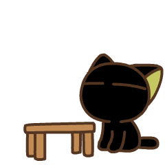
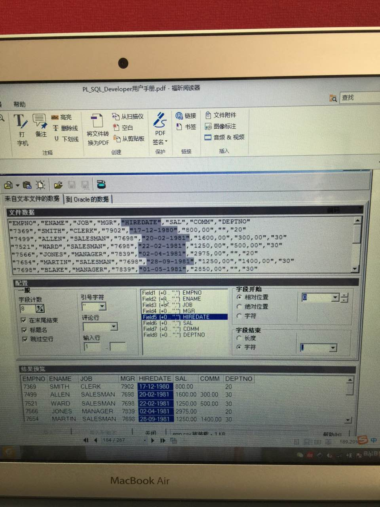
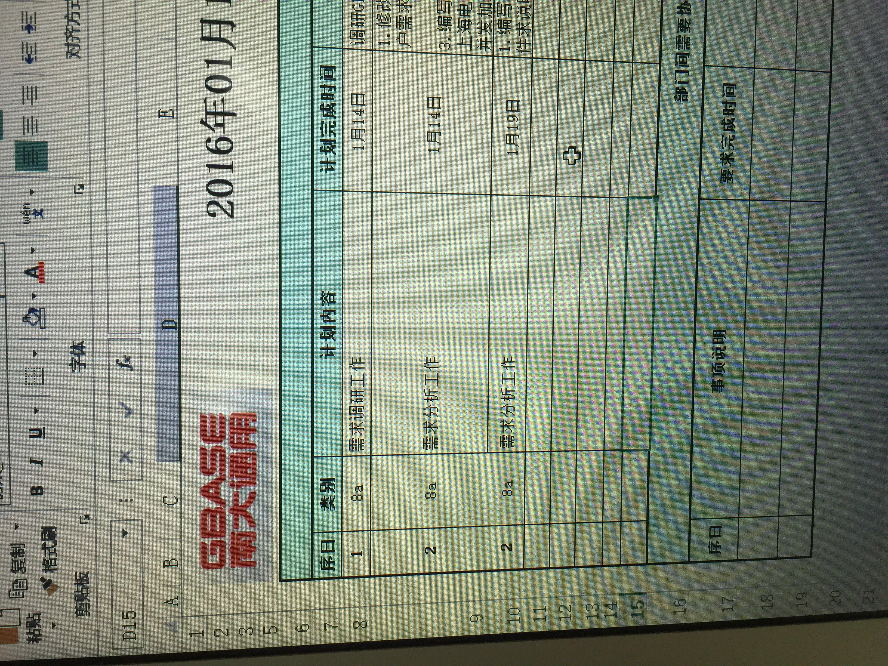
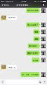
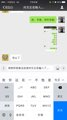

2016-01¶
2016-01-04¶
| 2016-01-04 09:32:05 | 你 | 今天还是很忙吗？ |
| 2016-01-04 09:32:22 | 我 | 还不知道，看起来没什么事情 |
| 2016-01-04 09:32:48 | 你 | 你元旦发的红包 我竟然抢了10块钱 |
| 2016-01-04 09:32:49 | 你 | 哈哈 |
| 2016-01-04 09:33:09 | 我 | 对呀，你抢的最多 |
| 2016-01-04 09:33:38 | 你 | 我帮我老公抢他们领导发的 抢了19 |
| 2016-01-04 09:34:17 | 我 | 不错 |
| 2016-01-04 09:41:28 | 我 | 你几号从唐山回来的？ |
| 2016-01-04 09:41:36 | 你 | 昨天 |
| 2016-01-04 09:41:50 | 我 | 你开车？ |
| 2016-01-04 09:42:04 | 你 | 我对象 |
| 2016-01-04 09:42:22 | 我 | 问你个问题 |
| 2016-01-04 09:42:36 | 你 | 恩 |
| 2016-01-04 09:42:46 | 我 | 你们家有 gezhi 吗？ |
| 2016-01-04 09:42:47 | 你 | 我们家超级冷 |
| 2016-01-04 09:43:02 | 你 | 是吃的吗？ |
| 2016-01-04 09:43:05 | 我 | 没烧炕吗？ |
| 2016-01-04 09:43:08 | 我 | 是 |
| 2016-01-04 09:43:13 | 你 | 各扎？ |
| 2016-01-04 09:43:16 | 你 | 有 |
| 2016-01-04 09:43:22 | 你 | 你喜欢吃 |
| 2016-01-04 09:43:42 | 你 | 烧了 不但烧炕了 还开着空调了 不过还是很冷很冷 |
| 2016-01-04 09:43:45 | 我 | 我就是想问问这俩字怎么写 |
| 2016-01-04 09:43:56 | 我 | 墙不保温 |
| 2016-01-04 09:44:07 | 你 | 我的脑袋冻的疼了一晚上 |
| 2016-01-04 09:44:26 | 你 | 我也不会写 那天去吃饭的时候 看到人家是这么写的 |
| 2016-01-04 09:44:44 | 你 | 你喜欢吃吗？ |
| 2016-01-04 09:44:52 | 你 | 我也很喜欢 |
| 2016-01-04 09:44:56 | 我 | 喜欢 |
| 2016-01-04 09:44:58 | 你 | 特别好吃是吧 |
| 2016-01-04 09:45:06 | 你 | 还是素菜 |
| 2016-01-04 09:45:13 | 我 | 是，昨天我还吃呢 |
| 2016-01-04 09:45:23 | 我 | 所以才想起来问你 |
| 2016-01-04 09:45:25 | 你 | 啊 真的啊 我是1号那天吃的 |
| 2016-01-04 09:45:37 | 你 | 我在家快冻死了 |
| 2016-01-04 09:45:45 | 你 | 手都伸不出来 |
| 2016-01-04 09:45:58 | 我 | 你是在这暖和惯了 |
| 2016-01-04 09:45:59 | 你 | 而且 我老是跟我爸爸吵架 |
| 2016-01-04 09:46:14 | 我 | 啊，不是真吵架吧 |
| 2016-01-04 09:46:56 | 你 | 而且 我家总是有很多孩子来 我得哄孩子 |
| 2016-01-04 09:46:57 | 你 | 舅舅家表哥的小女儿 姑姑家表哥的小儿子 舅舅家表姐的小女儿 每天从上午 到晚上 |
| 2016-01-04 09:47:21 | 我 | 哈哈 |
| 2016-01-04 09:47:31 | 你 | 吵 我都不搭理他 他老是欺负我妈妈 作威作福 我看不惯 就说他 就吵他 |
| 2016-01-04 09:48:03 | 我 | 哦 |
| 2016-01-04 09:48:30 | 你 | 而且我妈妈一直跟我抱怨我爸爸 |
| 2016-01-04 09:48:34 | 我 | 不知道你对象看了是什么感觉[呲牙] |
| 2016-01-04 09:48:45 | 你 | 我就更生气了 我姐我俩轮番轰炸我爸爸 |
| 2016-01-04 09:49:54 | 我 | 哈哈 |
| 2016-01-04 09:50:02 | 我 | 你们太好玩了 |
| 2016-01-04 09:50:05 | 你 | 我爸爸舍不得跟我俩生气 |
| 2016-01-04 10:59:16 | 我 | 你棱角多吗？ |
| 2016-01-04 10:59:51 | 你 | 你看我发的朋友圈了吧 |
| 2016-01-04 11:00:01 | 你 | 还行吧 挺多的 有很多毛病 |
| 2016-01-04 11:08:16 | 我 | 棱角多不见得是毛病多 |
| 2016-01-04 11:18:56 | 你 | 怎么说？ |
| 2016-01-04 11:35:20 | 我 | 道懂得多了自然圆滑了 |
| 2016-01-04 11:35:35 | 我 | 这句话懂吗 |
| 2016-01-04 11:37:24 | 我 | 棱角既可以是被别人磨下去，也可以是自己收敛回去的 |
| 2016-01-04 11:38:36 | 我 | 所以棱角不见得是毛病，更可能是认知不够 |
| 2016-01-04 11:39:22 | 你 | 懂， |
| 2016-01-04 11:39:34 | 你 | 我想这个有两个方面 |
| 2016-01-04 11:39:49 | 你 | 一是自身的感觉，一是别人的感觉 |
| 2016-01-04 11:40:04 | 我 | 继续 |
| 2016-01-04 11:40:14 | 你 | 但最终只能通过提高自己的认知得到改善 |
| 2016-01-04 11:41:55 | 你 | 当我看见棱角的时候，第一想到自己修炼不够，总是因为纠结别人而让自己不快乐，最明显的就是我爸爸，所以这些棱角表现为对自身的伤害，累的慌 |
| 2016-01-04 11:46:46 | 你 | 先吃饭 |
| 2016-01-04 11:46:54 | 我 | 好的 |
| 2016-01-04 11:57:44 | 我 | 你没带饭？ |
| 2016-01-04 12:11:03 | 你 | 带了，又跟领导吃饭去啊 |
| 2016-01-04 12:11:39 | 我 | 是呗，今天老田去机场了 |
| 2016-01-04 13:17:16 | 你 | 哦 还没回来啊 |
| 2016-01-04 13:17:35 | 我 | 楼下了 |
| 2016-01-04 13:58:56 | 我 | 还说没事，回来就一堆的事情 |
| 2016-01-04 13:59:35 | 我 | 下次不能和领导吃饭了，一吃饭准有事 |
| 2016-01-04 14:01:33 | 你 | 杨总就是喜欢吃着饭谈工作 |
| 2016-01-04 14:01:36 | 你 | 扫兴 |
| 2016-01-04 14:20:52 | 我 | 上午说的棱角其实还有一个意思，就是年轻的时候总是想找到一个所谓适合的人，能够和自己的棱角互补的人，其实是很难找的，即使找到了，随着时间的推移，还是可能不合适了。只有将自己的棱角磨去，变成一个普适的人，才有可能找到真正相和的人。最后几幅画的寓意其实很深，相和的人不是互补的人，是能够引起共鸣的人，也就是相似的人。在所有的形状里面，圆形是最容易相似的，所以他用一个圆形来表示，大道圆满里面的圆也是同一个意思 |
| 2016-01-04 14:21:35 | 你 | 哦 原来是这样 |
| 2016-01-04 14:23:22 | 我 | 还有就是她第一次遇到圆的时候的对话，寓意也非常深。 |
| 2016-01-04 14:24:21 | 你 | “在所有的形状里面，圆形是最容易相似的” |
| 2016-01-04 14:24:28 | 你 | 这句话不太懂 |
| 2016-01-04 14:24:54 | 我 | 打个比方，你现在就是有棱角的，我就是那个圆。你一直无法理解我什么都不要，就和漫画里面的的对话的场景非常相似 |
| 2016-01-04 14:25:45 | 我 | 你可以想象两个正方形，其中一个旋转30度，那么这两个正方形能重合吗？ |
| 2016-01-04 14:25:56 | 你 | 哦 |
| 2016-01-04 14:26:00 | 你 | 明白了 |
| 2016-01-04 14:26:03 | 我 | 而圆是中心对称的 |
| 2016-01-04 14:27:18 | 你 | 是 |
| 2016-01-04 14:27:24 | 你 | 明白哦了 |
| 2016-01-04 14:27:30 | 我 | 其实我觉得这个漫画画得非常好，就是寓意太深了，从表面很难一下看透 |
| 2016-01-04 14:28:00 | 我 | 不过也说明画漫画的人境界很高 |
| 2016-01-04 14:29:39 | 你 | 是 |
| 2016-01-04 14:29:43 | 你 | 外国人画的 |
| 2016-01-04 14:29:47 | 你 | 我觉额也很好 |
| 2016-01-04 14:29:59 | 你 | 洪越说一会我们三个聊聊需求组的规划 |
| 2016-01-04 14:30:16 | 我 | 好的 |
| 2016-01-04 14:35:16 | 你 | 回头你帮我好好解读解读 |
| 2016-01-04 14:35:23 | 你 | 漫画啊 |
| 2016-01-04 14:35:40 | 我 | 好的 |
| 2016-01-04 14:53:28 | 我 | 你们好严肃呀 |
| 2016-01-04 14:53:47 | 我 | 给你捣捣乱 |
| 2016-01-04 16:02:37 | 你 | 烦死了 |
| 2016-01-04 16:02:54 | 我 | 怎么了 |
| 2016-01-04 16:03:06 | 我 | 你们怎么这么久 |
| 2016-01-04 16:12:17 | 我 | 终于回来了 |
| 2016-01-04 16:12:18 | 你 | 没啥事 |
| 2016-01-04 16:12:27 | 你 | 聚餐王洪越不去了 |
| 2016-01-04 16:12:28 | 我 | 好的 |
| 2016-01-04 16:12:37 | 你 | 王志新也可能不去 不知道 |
| 2016-01-04 16:13:46 | 我 | 哦 |
| 2016-01-04 16:14:01 | 你 | 几乎没说啥 就是说没有需求的时候 干点什么 还有考核的标准 |
| 2016-01-04 16:14:07 | 我 | 这样挺好，正好只带你 |
| 2016-01-04 16:14:09 | 你 | 王志新那个女人 超级烦人 |
| 2016-01-04 16:14:23 | 我 | 怎么烦人 |
| 2016-01-04 16:14:24 | 你 | 王志新没说不去 看吧 |
| 2016-01-04 16:14:49 | 你 | 洪越说他得带孩子 王志新说他也得带孩子 |
| 2016-01-04 16:15:27 | 我 | 不去更好 |
| 2016-01-04 16:15:39 | 你 | 那肯定的 |
| 2016-01-04 16:16:06 | 我 | 本来是老杨说的，他们不去不知道老杨会怎么想 |
| 2016-01-04 16:16:32 | 你 | 反正我去 |
| 2016-01-04 16:16:37 | 你 | 别人爱去不去 |
| 2016-01-04 16:16:55 | 我 | 对呀，你去就够了 |
| 2016-01-04 16:17:02 | 我 | 我不管别人 |
| 2016-01-04 16:17:41 | 你 | 老杨说叫上需求组的？ |
| 2016-01-04 16:18:25 | 我 | 当时问我有没有其他组，我说没有，老杨说带上洪越，那我当然要带上你们组了 |
| 2016-01-04 16:19:45 | 你 | 他不是说只有洪越吧？晕 |
| 2016-01-04 16:19:58 | 你 | 那他俩都不去 我去是不是不太好啊 |
| 2016-01-04 16:20:05 | 我 | 我才不管呢，这叫假公济私 |
| 2016-01-04 16:26:36 | 你 | 洪越让我写计划 跟去年一样 写调研vertica的计划 他就没有别的招 只会让我们写计划 |
| 2016-01-04 16:37:00 | 我 | 他也就这点本事了 |
| 2016-01-04 16:37:13 | 我 | 其实他不懂管理 |
| 2016-01-04 16:37:38 | 我 | 自己干活还凑合 |
| 2016-01-04 16:37:44 | 你 | 是 |
| 2016-01-04 16:38:00 | 你 | 他说之所以不带我是因为他太忙了 没时间 |
| 2016-01-04 16:38:53 | 我 | 那他为啥训你 |
| 2016-01-04 16:39:11 | 我 | 狡辩 |
| 2016-01-04 16:39:33 | 你 | 他总的给我的回归找个体面的理由 |
| 2016-01-04 16:39:50 | 我 | 哈哈 |
| 2016-01-04 16:40:02 | 你 | 哎 整个会说的乱七八糟 |
| 2016-01-04 16:40:17 | 你 | 不过他跟王志新一唱一和的挺好 |
| 2016-01-04 16:40:25 | 你 | 我就在在旁边听着 |
| 2016-01-04 16:40:35 | 我 | 挺好 |
| 2016-01-04 16:41:03 | 我 | 示敌以弱 |
| 2016-01-04 16:41:09 | 你 | 他说写需求的文档的要点 我跟你说说啊 |
| 2016-01-04 16:42:21 | 你 | 一、要与本需求严格相关 禁止引入其他需求 二、要简短 篇幅尽量小 三、用词凝练 不做解释 |
| 2016-01-04 16:42:35 | 你 | 这都是评审的收获啊 |
| 2016-01-04 16:42:49 | 我 | 哦 |
| 2016-01-04 16:43:05 | 你 | 反正就是很乱 |
| 2016-01-04 16:43:35 | 我 | 越乱对你越有利 |
| 2016-01-04 16:44:42 | 你 | 时不时也不忘诋毁我几句 |
| 2016-01-04 16:44:50 | 你 | 我懒得理他都 |
| 2016-01-04 16:45:35 | 我 | 啊 |
| 2016-01-04 16:45:56 | 我 | 诋毁你什么了 |
| 2016-01-04 16:48:44 | 你 | 说我不了解用户需求说明书该怎么写 还有一个有语境的 结论是说我不认真 |
| 2016-01-04 16:49:07 | 你 | 你先忙吧 我没啥事 |
| 2016-01-04 16:49:10 | 我 | 哦 |
| 2016-01-04 16:49:59 | 我 | 你应该说老王只教了规格说明书 |
| 2016-01-04 16:50:38 | 你 | 我说了 写用户说明书 你得带带我啊 |
| 2016-01-04 16:51:21 | 我 | 他说什么 |
| 2016-01-04 16:51:41 | 你 | 忘了 |
| 2016-01-04 16:52:13 | 我 | 不用管他了，也就这样了 |
| 2016-01-04 16:59:53 | 你 | 你们招实习生吗？ |
| 2016-01-04 17:00:17 | 我 | 不招 |
| 2016-01-04 17:00:24 | 我 | 你问问测试 |
| 2016-01-04 17:00:29 | 你 | 好 |
| 2016-01-04 18:05:47 | 我 | 你几点走 |
| 2016-01-04 18:06:02 | 你 | 今天加班 |
| 2016-01-04 18:06:10 | 你 | 我得整整那个需求矩阵 |
| 2016-01-04 18:06:11 | 你 | 弄完再回去 |
| 2016-01-04 18:06:16 | 我 | 到几点 |
| 2016-01-04 18:06:33 | 你 | 不知道 |
| 2016-01-04 18:06:35 | 你 | 七点以后 |
| 2016-01-04 18:08:49 | 我 | 好的，没准能坐你的车 |
| 2016-01-04 18:09:16 | 你 | 好 |
| 2016-01-04 18:50:22 | 你 | 我要把那个需求跟踪矩阵从新弄弄 |
| 2016-01-04 18:50:33 | 你 | 这是王洪越交给我的活 |
| 2016-01-04 18:50:42 | 我 | 好的 |
| 2016-01-04 19:04:20 | 我 | 你走吗？我可以走了 |
| 2016-01-04 19:04:25 | 你 | 你跟我走吗？ |
| 2016-01-04 19:04:28 | 你 | 走吧 |
| 2016-01-04 19:04:38 | 我 | 好的 |
| 2016-01-04 19:09:34 | 我 | 王志是和你走吗？ |
| 2016-01-04 19:11:57 | 我 | 我不想和他一起走 |
| 2016-01-04 19:19:30 | 你 | 他等我半天了 |
| 2016-01-04 19:19:33 | 你 | 不好意思 |
| 2016-01-04 19:19:45 | 我 | 好吧 |
| 2016-01-04 19:19:56 | 我 | 你先走吧 |
| 2016-01-04 19:21:42 | 你 | 先看看你在走 |
| 2016-01-04 19:22:04 | 我 | 好感动 |
| 2016-01-04 19:24:13 | 你 | 逗你玩呢，看你们脸色那么凝重 |
| 2016-01-04 19:24:40 | 我 | 没有，我把任务给他们了 |
2016-01-05¶
| 2016-01-05 09:03:00 | 你 | 你是不是不想搭理我了 |
| 2016-01-05 09:03:31 | 我 | 不是呀，你怎么这么想？ |
| 2016-01-05 09:07:03 | 我 | 是不是因为回去了有点不习惯？ |
| 2016-01-05 09:07:47 | 你 | 就是感觉 |
| 2016-01-05 09:07:52 | 你 | 没什么事 |
| 2016-01-05 09:08:27 | 我 | 你呀 |
| 2016-01-05 09:08:46 | 我 | 是不是又把自己藏起来了 |
| 2016-01-05 09:09:56 | 你 | 没有， |
| 2016-01-05 09:10:20 | 你 | 就是很郁闷，我突然发现，我可能以后都不会给你发邮件了 |
| 2016-01-05 09:10:33 | 我 | 可以发呀 |
| 2016-01-05 09:11:14 | 你 | 我昨天坑吃坑吃整半天那个矩阵，结果发的话只能发给洪越，把我郁闷坏了 |
| 2016-01-05 09:11:36 | 我 | 哈哈，没事的 |
| 2016-01-05 09:11:56 | 你 | 可能习惯习惯就没事了，我超级讨厌把我写的东西给他看 |
| 2016-01-05 09:12:12 | 我 | 这样挺好，以后咱俩就聊天呗 |
| 2016-01-05 09:12:27 | 你 | 那好？ |
| 2016-01-05 09:12:34 | 我 | 把你写的东西分开 |
| 2016-01-05 09:12:57 | 你 | 我需要调整好心态 |
| 2016-01-05 09:13:01 | 我 | 工作就是给他写的，应付一下就行了 |
| 2016-01-05 09:13:08 | 你 | 是 |
| 2016-01-05 09:15:23 | 你 | 不过严丹跟我好了 |
| 2016-01-05 09:15:31 | 你 | 我调整调整 |
| 2016-01-05 09:15:33 | 我 | 以后你给我写的就不聊工作了 |
| 2016-01-05 09:15:53 | 你 | 那我被欺负了 你管不管啊 |
| 2016-01-05 09:15:59 | 我 | 管 |
| 2016-01-05 09:16:40 | 你 | 他俩最好安生点 不然我就不给他干活 |
| 2016-01-05 09:16:57 | 我 | 不至于的吧 |
| 2016-01-05 09:17:25 | 我 | 反正只是工作 |
| 2016-01-05 09:17:54 | 你 | 哎 |
| 2016-01-05 09:18:08 | 你 | 烦死了 |
| 2016-01-05 09:20:19 | 我 | 没事的 |
| 2016-01-05 09:34:18 | 我 | 刚才我让洪越写license的用需，洪越很不高兴 |
| 2016-01-05 09:34:55 | 你 | 他为啥不高兴啊？ |
| 2016-01-05 09:34:59 | 你 | 这个没写吗？ |
| 2016-01-05 09:35:12 | 我 | 没写 |
| 2016-01-05 09:35:25 | 我 | 产品级的 |
| 2016-01-05 09:36:37 | 你 | 他不想动脑子写 |
| 2016-01-05 09:36:53 | 我 | 不知道 |
| 2016-01-05 09:42:28 | 我 | 这么高兴？ |
| 2016-01-05 09:42:51 | 你 | 没理由 |
| 2016-01-05 09:43:20 | 我 | 心情好了？不郁闷了？ |
| 2016-01-05 09:43:54 | 你 | 还好 |
| 2016-01-05 09:47:08 | 你 | 你元旦那天晚上干嘛了，微信都没露面 |
| 2016-01-05 09:56:15 | 我 | 忘了 |
| 2016-01-05 09:56:39 | 我 | 好像很早就睡了 |
| 2016-01-05 09:58:09 | 我 | 刚才看你走路的样子，很美 |
| 2016-01-05 09:58:28 | 你 | 啊？ |
| 2016-01-05 09:58:29 | 你 | 不是吧 |
| 2016-01-05 09:58:40 | 我 | 是呀 |
| 2016-01-05 10:06:36 | 我 | 不经意表现出来的 |
| 2016-01-05 10:06:46 | 你 | 啥啊？ |
| 2016-01-05 10:06:59 | 我 | 美呀 |
| 2016-01-05 10:07:10 | 你 | 哈哈 |
| 2016-01-05 10:07:41 | 你 | 既然你如此的admire我 我就不谦虚了 |
| 2016-01-05 10:08:44 | 我 | 哈哈 |
| 2016-01-05 10:15:05 | 我 | 早上你问我是不是不理你，是又担心我不要你了？ |
| 2016-01-05 10:15:51 | 你 | 对啊 |
| 2016-01-05 10:16:00 | 你 | 你以前早上总跟我说话 现在不理我了 |
| 2016-01-05 10:16:13 | 我 | 哦 |
| 2016-01-05 10:16:17 | 我 | 等我 |
| 2016-01-05 11:20:51 | 我 | 洪越找你说什么 |
| 2016-01-05 11:26:38 | 你 | 刚才给他发的邮件附件错了 |
| 2016-01-05 11:26:42 | 你 | 他过来说我了 |
| 2016-01-05 11:27:25 | 我 | 啊，以后检查一下吧 |
| 2016-01-05 11:27:31 | 你 | 恩 |
| 2016-01-05 11:31:04 | 我 | 有点郁闷？ |
| 2016-01-05 11:31:13 | 我 | 没事的 |
| 2016-01-05 11:31:36 | 我 | 你不把他放在心上就行了 |
| 2016-01-05 11:32:30 | 你 | 很郁闷，我跟他好不了 |
| 2016-01-05 11:32:58 | 我 | 不明白，你还想和他好？ |
| 2016-01-05 11:33:04 | 你 | 他老是把问题放那么大，我怎么干活，这么点破事，邮件来邮件去的，当面说不就行了， |
| 2016-01-05 11:33:16 | 我 | 没事的 |
| 2016-01-05 11:33:22 | 我 | 他就这样 |
| 2016-01-05 11:33:28 | 你 | 不是，他跟我说，你看懂我写的邮件啊？ |
| 2016-01-05 11:33:31 | 你 | 靠 |
| 2016-01-05 11:33:33 | 你 | 气死我了 |
| 2016-01-05 11:33:40 | 你 | 就你长眼了 |
| 2016-01-05 11:33:43 | 你 | 气死我了 |
| 2016-01-05 11:33:46 | 我 | 好了 |
| 2016-01-05 11:33:53 | 我 | 我哄着你吧 |
| 2016-01-05 11:34:00 | 你 | 就附件没东西，说声就行了呗，气死我了 |
| 2016-01-05 11:34:01 | 我 | 不理他 |
| 2016-01-05 11:34:22 | 我 | 你还是没把他放下 |
| 2016-01-05 11:34:38 | 你 | 他老找事 |
| 2016-01-05 11:34:47 | 我 | 他肯定会找事 |
| 2016-01-05 11:35:17 | 我 | 你要是在意这个就坏了 |
| 2016-01-05 11:35:35 | 你 | 那我们所有事就别沟通了，都发邮件 |
| 2016-01-05 11:35:54 | 你 | 别说话， |
| 2016-01-05 11:36:04 | 我 | 好了 |
| 2016-01-05 11:36:17 | 你 | 他根本就不听我说话， |
| 2016-01-05 11:36:20 | 你 | 气死我了 |
| 2016-01-05 11:36:21 | 我 | 别想了 |
| 2016-01-05 11:36:41 | 我 | 你也不用和他解释 |
| 2016-01-05 11:36:54 | 我 | 他说你就听 |
| 2016-01-05 11:37:08 | 我 | 甚至不听都行 |
| 2016-01-05 11:40:20 | 你 | 气死宝宝了 |
| 2016-01-05 11:42:36 | 我 | 是呗，心疼坏了 |
| 2016-01-05 11:43:59 | 你 | 委屈死了 |
| 2016-01-05 11:44:13 | 我 | 是，哄哄吧 |
| 2016-01-05 11:44:15 | 你 | 你快劝劝我 |
| 2016-01-05 11:44:29 | 你 | 看你不乐意的 |
| 2016-01-05 11:44:33 | 我 | 乖，不理他 |
| 2016-01-05 11:44:38 | 你 | 我就不搭理他就是了 |
| 2016-01-05 11:44:42 | 你 | 就不搭理他 |
| 2016-01-05 11:44:44 | 我 | 我宠着你 |
| 2016-01-05 11:44:48 | 我 | 对 |
| 2016-01-05 11:45:17 | 我 | 以后他说你你就听着 |
| 2016-01-05 11:45:34 | 你 | 恩 |
| 2016-01-05 11:46:07 | 我 | 心里把他骂一遍就行了 |
| 2016-01-05 11:46:39 | 我 | 就像我说的，你还是没有把他放下 |
| 2016-01-05 11:47:01 | 我 | 放下他，不理他 |
| 2016-01-05 11:47:13 | 我 | 蔑视他 |
| 2016-01-05 11:47:17 | 我 | 藐视他 |
| 2016-01-05 11:47:27 | 我 | 踩他 |
| 2016-01-05 11:47:36 | 我 | 剁他 |
| 2016-01-05 11:49:19 | 你 | 哈哈 |
| 2016-01-05 11:49:36 | 你 | 好 |
| 2016-01-05 11:49:54 | 我 | 好点吗 |
| 2016-01-05 11:50:07 | 你 | 恩 |
| 2016-01-05 11:50:15 | 你 | 暂且没事了 |
| 2016-01-05 11:50:24 | 我 | 好的 |
| 2016-01-05 13:36:00 | 你 | 今天杨总也打球 |
| 2016-01-05 13:36:38 | 我 | 你不是也去打球吗 |
| 2016-01-05 13:37:18 | 你 | 是啊 |
| 2016-01-05 13:37:20 | 你 | 一起打球去 |
| 2016-01-05 13:37:24 | 你 | 跟你说下 |
| 2016-01-05 13:38:49 | 我 | 哦 |
| 2016-01-05 13:39:16 | 我 | 心情好了吗 |
| 2016-01-05 13:39:31 | 你 | 还行吧 |
| 2016-01-05 13:40:09 | 我 | 哦，看样子还是我哄的不够 |
| 2016-01-05 13:40:18 | 你 | 没有没有 |
| 2016-01-05 13:40:25 | 你 | 跟你没关系 不用哄了 |
| 2016-01-05 13:40:26 | 你 | 说的 |
| 2016-01-05 13:41:13 | 我 | 要不然你怎么心情不好 |
| 2016-01-05 13:43:39 | 你 | 等 |
| 2016-01-05 14:04:39 | 你 | 开不开评审会啊 |
| 2016-01-05 14:15:56 | 我 | 什么评审会 |
| 2016-01-05 14:18:00 | 你 | 没事 我电脑时间显示错了 |
| 2016-01-05 14:18:13 | 我 | 哦 |
| 2016-01-05 15:49:27 | 我 | [链接] 壹心理 | 为何你在感情中总是喜欢冷战？ |
| 2016-01-05 15:50:09 | 你 | 亲 王洪越让我写调研vertica的计划 我不会写 怎么办啊 |
| 2016-01-05 15:50:26 | 我 | 他让你调研什么 |
| 2016-01-05 15:50:42 | 你 | vertica的产品功能特性 |
| 2016-01-05 15:51:02 | 我 | 包括什么方面？ |
| 2016-01-05 15:53:02 | 你 | 什么都没有 就这么一句话 |
| 2016-01-05 15:53:30 | 你 | 他刚才给我个活 让我调研vertica的支持哪些字符集 然后写份文档给他 |
| 2016-01-05 15:53:56 | 你 | 我问他调研这个干嘛 他没说 |
| 2016-01-05 15:58:17 | 我 | 你这样，分成几块 |
| 2016-01-05 15:58:34 | 我 | 基本功能 |
| 2016-01-05 15:58:57 | 我 | 数据备份 |
| 2016-01-05 15:59:07 | 我 | 外部接口 |
| 2016-01-05 15:59:18 | 我 | 外部工具 |
| 2016-01-05 15:59:31 | 我 | 还有一个基本架构 |
| 2016-01-05 16:03:03 | 你 | 恩 |
| 2016-01-05 16:03:12 | 你 | 知道了 |
| 2016-01-05 16:03:13 | 我 | 还有资源管理 |
| 2016-01-05 16:03:25 | 你 | 别想了 |
| 2016-01-05 16:03:35 | 我 | 就是此类的吧，你可以先去看看 vertica 都有哪些 |
| 2016-01-05 16:03:43 | 你 | 好 |
| 2016-01-05 16:10:38 | 我 | 洪越没给你安排其它工作吗？ |
| 2016-01-05 16:10:52 | 你 | 没有 |
| 2016-01-05 16:11:02 | 我 | 现在应该有好几个需求要写 |
| 2016-01-05 16:11:20 | 你 | 就让我出个vertica的调研计划 然后让我调研vertica支持的字符集 |
| 2016-01-05 16:11:25 | 你 | 这都是什么破事 |
| 2016-01-05 16:11:29 | 我 | 无所谓了，不给安排正好 |
| 2016-01-05 16:11:30 | 你 | 算了 |
| 2016-01-05 16:11:35 | 你 | 是 |
| 2016-01-05 16:11:37 | 你 | 无所谓 |
| 2016-01-05 16:11:53 | 我 | 字符集你知道是什么吗 |
| 2016-01-05 16:12:02 | 你 | 知道 |
| 2016-01-05 16:12:05 | 我 | 他说了deadline吗 |
| 2016-01-05 16:12:09 | 你 | 没有 |
| 2016-01-05 16:12:26 | 我 | 那你就先调研字符集 |
| 2016-01-05 16:12:37 | 我 | 反正这个挺复杂的 |
| 2016-01-05 16:13:41 | 你 | 他让我调研vertica支持的字符集 默认的字符集 如何设置字符集 |
| 2016-01-05 16:13:45 | 你 | 就这三个问题 |
| 2016-01-05 16:14:08 | 我 | 设置字符集有很多 |
| 2016-01-05 16:14:29 | 我 | 可以设全局的，数据库的 表的等等 |
| 2016-01-05 16:14:35 | 你 | 哦 |
| 2016-01-05 16:14:38 | 你 | 他没说 |
| 2016-01-05 16:14:42 | 我 | 你就慢慢试吧 |
| 2016-01-05 16:14:50 | 你 | 恩 行 |
| 2016-01-05 16:22:57 | 我 | 你忙吗 |
| 2016-01-05 16:23:06 | 你 | 不忙 |
| 2016-01-05 16:23:11 | 你 | 我特别生气 |
| 2016-01-05 16:23:15 | 你 | 你生气吗 |
| 2016-01-05 16:23:18 | 我 | 是 |
| 2016-01-05 16:23:33 | 我 | 就是因为生气才想找你聊聊 |
| 2016-01-05 16:23:37 | 你 | 聊天呗 |
| 2016-01-05 16:23:40 | 你 | 不干活 |
| 2016-01-05 16:23:48 | 你 | 有啥好干的 |
| 2016-01-05 16:23:54 | 你 | 我不知道为什么干这个 |
| 2016-01-05 16:23:58 | 你 | 我不干 |
| 2016-01-05 16:24:05 | 我 | 好 |
| 2016-01-05 16:24:40 | 我 | 好了，先不说工作了 |
| 2016-01-05 16:24:45 | 我 | 我给你发的你看了吗 |
| 2016-01-05 16:28:45 | 你 | 没呢 刚要看他救过来了 |
| 2016-01-05 16:28:55 | 我 | 你先看看 |
| 2016-01-05 16:29:01 | 我 | 正好换换心情 |
| 2016-01-05 16:31:36 | 你 | 我看不下去 被他气得不行 |
| 2016-01-05 16:31:43 | 你 | 我跟他气场怎么这么不和 |
| 2016-01-05 16:31:52 | 我 | 先别生气了 |
| 2016-01-05 16:32:10 | 我 | 其实他给你的工作本身还是非常好的，只是他的态度问题 |
| 2016-01-05 16:32:25 | 我 | 就好像上午我说的，你还是没有放下他 |
| 2016-01-05 16:32:32 | 你 | 我就问问他为什么调研这个 哪个项目用这个 他说用我把项目负责人都告诉你不 |
| 2016-01-05 16:32:58 | 你 | 是我的问题可能 我反省下 |
| 2016-01-05 16:33:40 | 我 | 你的问题在于太在意他的态度了 |
| 2016-01-05 16:34:05 | 你 | 恩 |
| 2016-01-05 16:34:07 | 你 | 是 |
| 2016-01-05 16:34:59 | 我 | 不要去关心他的态度，他对你的态度肯定不会太好 |
| 2016-01-05 16:35:24 | 我 | 关键是你能把他交给你的任务做好 |
| 2016-01-05 16:35:34 | 你 | 好 |
| 2016-01-05 16:35:52 | 你 | 我觉得他是恼羞成怒 |
| 2016-01-05 16:36:16 | 我 | 也不全是 |
| 2016-01-05 16:36:25 | 我 | 他现在压力很大 |
| 2016-01-05 16:36:26 | 你 | 他就是不想让我知道干什么，局限我，我这么一问，问到他痛处了，他才这样，刚开始没这个态度啊 |
| 2016-01-05 16:36:38 | 我 | 我不这么认为 |
| 2016-01-05 16:36:50 | 我 | 你听我给你分析 |
| 2016-01-05 16:36:52 | 你 | 可能吧 |
| 2016-01-05 16:37:23 | 我 | 首先他今天很不顺 |
| 2016-01-05 16:37:40 | 我 | 老田和老杨把他逼的很急 |
| 2016-01-05 16:38:18 | 我 | 下午我们一直在处理和 DMD 的交流问题，就是字符集的问题 |
| 2016-01-05 16:38:57 | 你 | 他跟我说一句不就行了吗 |
| 2016-01-05 16:39:00 | 我 | 一开始老杨还说这个是问题，不是需求，我说这个最终是个需求问题 |
| 2016-01-05 16:39:11 | 你 | 我就问了下，他就说我问的多了 |
| 2016-01-05 16:39:16 | 我 | 这不重要 |
| 2016-01-05 16:39:33 | 我 | 我觉得重要的是他原形毕露了 |
| 2016-01-05 16:39:53 | 我 | 前两天对你好只是麻痹你 |
| 2016-01-05 16:40:23 | 我 | 其实他对你一直没变 |
| 2016-01-05 16:40:42 | 你 | 是 |
| 2016-01-05 16:40:46 | 我 | 你被他骗了 |
| 2016-01-05 16:40:57 | 你 | 我被他骗啥 |
| 2016-01-05 16:41:03 | 你 | 我根本就没相信过他 |
| 2016-01-05 16:41:12 | 我 | 不是 |
| 2016-01-05 16:41:27 | 我 | 你是被他几天前的态度骗了 |
| 2016-01-05 16:41:49 | 我 | 他今天对你和我带你之前对你是一样的 |
| 2016-01-05 16:41:59 | 你 | 是 |
| 2016-01-05 16:42:00 | 你 | 就是 |
| 2016-01-05 16:42:11 | 你 | 我们仿佛回到了一年前 |
| 2016-01-05 16:43:01 | 我 | 所以我说你生气是因为被骗了 |
| 2016-01-05 16:43:17 | 我 | 你对他的变化没有心理准备 |
| 2016-01-05 16:44:35 | 你 | 可能吧 |
| 2016-01-05 16:45:12 | 我 | 如果你预测到他就是这样，就不会这么生气了 |
| 2016-01-05 16:45:31 | 你 | 是 |
| 2016-01-05 16:46:36 | 我 | 所以以后你就把他当成坏人，无论他怎么说，你都不要信 |
| 2016-01-05 16:46:43 | 我 | 他只会这样对你 |
| 2016-01-05 16:46:53 | 你 | 恩 好 |
| 2016-01-05 16:47:16 | 我 | 我再多说两句，你别生气 |
| 2016-01-05 16:47:43 | 你 | 好 |
| 2016-01-05 16:48:13 | 我 | 洪越这种行为和你对象和你吵架的行为本质上没什么不同 |
| 2016-01-05 16:49:01 | 我 | 之所以你每次都会那么生气就是因为他们的表现和你的预期相差太多 |
| 2016-01-05 16:49:49 | 我 | 从另一个方面说是你比较善良，容易被骗 |
| 2016-01-05 16:50:04 | 我 | 你很容易忘记别人的坏 |
| 2016-01-05 16:50:21 | 你 | 你别安慰我了 |
| 2016-01-05 16:50:30 | 我 | 即使是洪越这样的人，你还是忘了他曾经这么对过你 |
| 2016-01-05 16:50:41 | 你 | 我这是好了伤疤忘了疼 或者说 我还是一点长劲没有 |
| 2016-01-05 16:50:53 | 我 | 也不是 |
| 2016-01-05 16:51:12 | 我 | 只是这种事情还是得靠你自己做心理调节 |
| 2016-01-05 16:51:31 | 我 | 我劝你只是辅助的 |
| 2016-01-05 16:51:39 | 你 | 恩 |
| 2016-01-05 16:51:41 | 你 | 是 |
| 2016-01-05 16:52:29 | 我 | 以后无论洪越怎么对你，你就当成看小丑表演 |
| 2016-01-05 16:52:35 | 你 | 恩 |
| 2016-01-05 16:52:37 | 你 | 好 |
| 2016-01-05 16:53:43 | 你 | 我特别难过 |
| 2016-01-05 16:53:49 | 我 | 啊 |
| 2016-01-05 16:53:53 | 你 | 我不想告诉你，怕你担心 |
| 2016-01-05 16:53:54 | 我 | 难过什么 |
| 2016-01-05 16:54:02 | 我 | 说吧 |
| 2016-01-05 16:54:12 | 我 | 你不说我也能看出来 |
| 2016-01-05 16:54:24 | 我 | 那样我会更担心你 |
| 2016-01-05 16:55:59 | 你 | 就像我今天早上跟你说的，可能离开你带给我深深的失落感，然后这种情绪也带入到王洪越那里，然后他还这样，我就陷入恶性循环里了 |
| 2016-01-05 16:56:14 | 我 | 是 |
| 2016-01-05 16:56:18 | 你 | 我自己也解不开，就一直挺压抑 |
| 2016-01-05 16:56:55 | 你 | 想不出出路，想告诉你，又怕你知道 |
| 2016-01-05 16:57:59 | 我 | 你应该告诉我 |
| 2016-01-05 16:59:44 | 我 | 以后你心情不好一定要及时告诉我 |
| 2016-01-05 17:00:14 | 我 | 我一看你的样子就知道你心情不好 |
| 2016-01-05 17:01:53 | 我 | 你要是不告诉我真的会很担心的 |
| 2016-01-05 17:02:28 | 你 | 我自己调整下 |
| 2016-01-05 17:03:05 | 我 | 好吧 |
| 2016-01-05 17:10:16 | 我 | 为了看你，我特意去表演一下王志 |
| 2016-01-05 17:12:08 | 你 | 哈哈 |
| 2016-01-05 17:12:10 | 你 | 不错 |
| 2016-01-05 17:22:58 | 我 | 亲，好点吗 |
| 2016-01-05 17:23:05 | 我 | 都不会笑了 |
| 2016-01-05 17:44:09 | 你 | 好点了 |
| 2016-01-05 17:44:25 | 我 | 好 |
| 2016-01-05 17:44:58 | 我 | 害得我找理由去你那好几次 |
| 2016-01-05 17:53:09 | 你 | 恩，看你们聊天心情好多了 |
| 2016-01-05 18:59:49 | 你 | 干嘛呢？下几点 |
| 2016-01-05 19:00:01 | 我 | 讨论问题 |
| 2016-01-05 19:00:07 | 我 | 今天不会早了 |
| 2016-01-05 19:00:14 | 你 | License? |
| 2016-01-05 19:00:19 | 我 | 是 |
| 2016-01-05 19:00:21 | 你 | 天天讨论 |
| 2016-01-05 19:00:37 | 我 | 我们现在得躲着洪越和田讨论 |
| 2016-01-05 19:00:48 | 我 | 省得他们给我们下套 |
| 2016-01-05 19:00:49 | 你 | 是，真是无奈 |
| 2016-01-05 19:00:53 | 你 | 是 |
| 2016-01-05 19:00:56 | 你 | 没办法 |
| 2016-01-05 19:01:00 | 我 | 是 |
| 2016-01-05 19:01:06 | 我 | 你打完了？ |
| 2016-01-05 19:01:12 | 你 | 这种工作环境太可耻了 |
| 2016-01-05 19:01:24 | 我 | 办公室政治 |
| 2016-01-05 19:01:28 | 你 | 没有，我歇会 |
| 2016-01-05 19:01:38 | 你 | 他们打呢 |
| 2016-01-05 19:01:43 | 我 | 好的 |
| 2016-01-05 19:01:52 | 我 | 心情好点没 |
| 2016-01-05 19:02:02 | 你 | 就那样，不想就没事， |
| 2016-01-05 19:02:10 | 我 | 唉 |
| 2016-01-05 19:02:23 | 你 | 我觉得你说的是对的 |
| 2016-01-05 19:02:29 | 我 | 这周你加班吗 |
| 2016-01-05 19:02:33 | 你 | 就是你给我分析的王洪越那部分 |
| 2016-01-05 19:02:38 | 我 | 哦 |
| 2016-01-05 19:02:49 | 你 | 可能不加，我这周末去我对象姐姐家 |
| 2016-01-05 19:03:04 | 你 | 再看吧，好多工作压过来了 |
| 2016-01-05 19:03:09 | 我 | 好吧，这周我加班，下周去看儿子 |
| 2016-01-05 19:36:14 | 你 | 晕 |
| 2016-01-05 19:36:36 | 我 | 怎么了 |
| 2016-01-05 19:40:45 | 你 | 打开心了 |
| 2016-01-05 19:40:59 | 我 | 好呀 |
| 2016-01-05 19:41:20 | 你 | 回家了吗 |
| 2016-01-05 19:41:41 | 我 | 没有，讨论呢[流泪] |
| 2016-01-05 20:08:06 | 你 | 走了吗 |
| 2016-01-05 20:08:18 | 我 | 没有 |
| 2016-01-05 20:32:47 | 你 | 走了啊 |
| 2016-01-05 20:32:58 | 你 | 我也要回家了 |
| 2016-01-05 20:35:09 | 你 | 不搭理我 |
| 2016-01-05 20:35:13 | 你 | 我还没回家呢 |
2016-01-06¶
2016-01-07¶
| 2016-01-07 09:09:45 | 我 | 我昨天向宋文彬介绍你了 |
| 2016-01-07 09:10:13 | 你 | 哦 好 |
| 2016-01-07 09:10:23 | 你 | 怎么介绍的 |
| 2016-01-07 09:10:32 | 我 | 你猜 |
| 2016-01-07 09:11:01 | 你 | 这么多话 怎么猜 |
| 2016-01-07 09:11:07 | 你 | 这又不是一句两句的 |
| 2016-01-07 09:11:29 | 我 | 没说什么 |
| 2016-01-07 09:11:30 | 你 | 你让我猜你儿子多大岁数还行 |
| 2016-01-07 09:11:34 | 你 | 那说什么了 |
| 2016-01-07 09:11:54 | 我 | 就说了你叫什么 |
| 2016-01-07 09:12:09 | 我 | 我曾经带过你 |
| 2016-01-07 09:12:24 | 我 | 挺聪明的 |
| 2016-01-07 09:12:35 | 你 | 好 |
| 2016-01-07 09:12:37 | 我 | 现在回需求组了 |
| 2016-01-07 09:13:13 | 我 | 说都多了就太显眼了 |
| 2016-01-07 09:13:20 | 你 | 就这啊，你应该说，她是我最喜欢的小丫头 |
| 2016-01-07 09:13:48 | 你 | 好啦，不逗你了， |
| 2016-01-07 09:14:07 | 你 | 没事，多说无益，看个人的相处吧 |
| 2016-01-07 09:15:27 | 我 | 上午又开会 |
| 2016-01-07 09:16:45 | 你 | 不是有个CMMI的学习啥的 |
| 2016-01-07 09:16:49 | 你 | 我昨天努力了 看vertica的文档看到11点 |
| 2016-01-07 09:17:08 | 我 | 就是这个 |
| 2016-01-07 09:18:54 | 你 | 我们可以去吗？ |
| 2016-01-07 09:19:48 | 我 | 不知道，要是没人通知你就够呛 |
| 2016-01-07 09:20:58 | 你 | 没事 |
| 2016-01-07 09:21:00 | 你 | 那我就不去了 |
| 2016-01-07 09:21:18 | 我 | 好的 |
| 2016-01-07 09:37:11 | 我 | 刚才王欣挨个介绍，东海没赶上 |
| 2016-01-07 09:37:29 | 你 | 没事啊 |
| 2016-01-07 09:40:53 | 我 | 老田带国华来了 |
| 2016-01-07 09:41:34 | 你 | 行吧 |
| 2016-01-07 09:41:38 | 你 | 洪越呢？ |
| 2016-01-07 09:41:47 | 你 | 王志新他俩是吧 |
| 2016-01-07 09:42:34 | 我 | 好像今天王志新转正答辩 |
| 2016-01-07 09:42:45 | 你 | 哦 |
| 2016-01-07 09:42:50 | 你 | 那我们组没人去 |
| 2016-01-07 09:43:05 | 你 | 无所谓 爱谁去谁去 |
| 2016-01-07 09:43:53 | 我 | 不知道田喊没喊洪越 |
| 2016-01-07 09:44:30 | 你 | 他好像不知道 |
| 2016-01-07 09:45:38 | 我 | 唉 |
| 2016-01-07 09:46:18 | 你 | 范树磊去了吗？ |
| 2016-01-07 09:46:32 | 我 | 去了，田喊的 |
| 2016-01-07 09:46:36 | 你 | 我晕 |
| 2016-01-07 09:46:41 | 你 | 那估计王洪越知道 |
| 2016-01-07 09:46:45 | 你 | 可能先去答辩了 |
| 2016-01-07 09:47:18 | 你 | 乱七八糟 |
| 2016-01-07 09:47:58 | 我 | 田没喊，我刚问他了 |
| 2016-01-07 09:48:12 | 你 | 我晕 |
| 2016-01-07 09:48:15 | 你 | 真够上火的 |
| 2016-01-07 09:48:20 | 我 | 田正在打电话 |
| 2016-01-07 09:48:22 | 你 | 我今天特别不舒服 |
| 2016-01-07 09:48:31 | 我 | 怎么了 |
| 2016-01-07 09:48:43 | 我 | 哪不舒服 |
| 2016-01-07 09:48:53 | 你 | 可能是感冒 昨天熬夜了 睡得不好 脑袋特别沉 |
| 2016-01-07 09:49:02 | 你 | 晕晕的 |
| 2016-01-07 09:49:10 | 你 | 闭上眼睛好像要摔倒 |
| 2016-01-07 09:49:13 | 我 | 为啥熬夜 |
| 2016-01-07 09:49:23 | 你 | 看vertica那个文档了 |
| 2016-01-07 09:49:33 | 我 | 你太拼了 |
| 2016-01-07 09:49:44 | 你 | 昨天那个需求问题 我有点想不明白 |
| 2016-01-07 09:49:48 | 我 | 多喝热水 |
| 2016-01-07 09:50:02 | 我 | 爬桌子上睡会 |
| 2016-01-07 09:50:23 | 你 | vertica这个也想不明白 我就一直找资料 然后一直想这两件事 早上五点就醒了 |
| 2016-01-07 09:50:42 | 你 | 我好像总是别呢慢半拍 总是帮不上你什么忙 |
| 2016-01-07 09:50:45 | 我 | 唉 |
| 2016-01-07 09:50:56 | 我 | 你别这样 |
| 2016-01-07 09:51:13 | 我 | 先照顾好自己 |
| 2016-01-07 09:51:16 | 你 | 田是故意不通知洪越的 |
| 2016-01-07 09:51:26 | 我 | 这样会让我担心的 |
| 2016-01-07 09:51:33 | 我 | 我觉得是 |
| 2016-01-07 09:52:00 | 你 | 我昨天晚上特别想给你打电话 |
| 2016-01-07 09:52:08 | 你 | 后来憋住了 |
| 2016-01-07 09:52:20 | 你 | 因为我老是想不明白 就想跟你问问 |
| 2016-01-07 09:52:42 | 我 | 你可以写文档里面 |
| 2016-01-07 09:53:28 | 你 | 是哦 |
| 2016-01-07 09:53:30 | 你 | 忘了 |
| 2016-01-07 09:53:57 | 我 | 多喝点热水 |
| 2016-01-07 09:54:04 | 你 | 好 |
| 2016-01-07 09:57:23 | 你 | 你好好听吧 我趴会 |
| 2016-01-07 09:57:59 | 我 | 好的，不舒服赶紧和我说 |
| 2016-01-07 09:58:13 | 你 | 没事 |
| 2016-01-07 09:58:20 | 你 | 这次回家鼓捣的 |
| 2016-01-07 09:58:32 | 我 | 是 |
| 2016-01-07 10:38:56 | 我 | 好点吗 |
| 2016-01-07 10:42:07 | 你 | 好点了，跟喝醉酒似的 |
| 2016-01-07 10:42:24 | 我 | 发烧吗 |
| 2016-01-07 10:42:30 | 你 | 刚才碰到宋文斌了，他说他不认识我，也不知道我叫啥 |
| 2016-01-07 10:42:40 | 你 | 没有 |
| 2016-01-07 10:43:12 | 我 | 那就是还没对上号 |
| 2016-01-07 10:43:19 | 你 | 他真不听话，我中午得大睡一场 |
| 2016-01-07 10:44:11 | 我 | 带饭了吗 |
| 2016-01-07 10:44:40 | 我 | 最好吃点热汤面 |
| 2016-01-07 10:48:02 | 你 | 我一口饭也不想吃 |
| 2016-01-07 10:48:19 | 你 | 早上硬喝了两口奶茶 |
| 2016-01-07 10:48:27 | 你 | 后来倒了 |
| 2016-01-07 10:48:37 | 你 | 我就是有毛病就吃不下饭 |
| 2016-01-07 10:48:40 | 我 | 你有巧克力吗 |
| 2016-01-07 10:48:43 | 你 | 看着就恶心 |
| 2016-01-07 10:48:50 | 你 | 有 |
| 2016-01-07 10:48:59 | 我 | 吃巧克力 |
| 2016-01-07 10:49:04 | 你 | 上次以后我老公给我买了 |
| 2016-01-07 10:49:06 | 我 | 不停的吃 |
| 2016-01-07 10:49:09 | 你 | 我不想吃 |
| 2016-01-07 10:49:15 | 你 | 快别说了， |
| 2016-01-07 10:49:21 | 我 | 你现在需要能量 |
| 2016-01-07 10:49:43 | 我 | 中午睡觉 |
| 2016-01-07 10:50:10 | 你 | 恩 |
| 2016-01-07 10:50:13 | 你 | 知道了 |
| 2016-01-07 10:50:16 | 我 | 下午找胖子要一个咖啡 |
| 2016-01-07 10:50:39 | 你 | 我有，我不想喝 |
| 2016-01-07 10:50:48 | 我 | 你只有提高自己的能量才能对抗疾病 |
| 2016-01-07 10:51:01 | 你 | 不想吃也不想喝 |
| 2016-01-07 10:51:50 | 我 | 你就是太任性了 |
| 2016-01-07 10:53:11 | 我 | 听话，乖 |
| 2016-01-07 10:53:40 | 我 | 吃点巧克力，可以不吃饭 |
| 2016-01-07 10:54:01 | 我 | 要不晚上你都去不了 |
| 2016-01-07 10:54:02 | 你 | 等会 |
| 2016-01-07 11:39:26 | 你 | 跟我吃感冒药有关系可能 |
| 2016-01-07 11:40:13 | 我 | 是，吃药就容易困 |
| 2016-01-07 11:40:39 | 我 | 不过还是得增加能量 |
| 2016-01-07 11:41:19 | 你 | 恩，硬吃 |
| 2016-01-07 11:41:54 | 我 | 不舒服可以吃巧克力 |
| 2016-01-07 11:42:11 | 我 | 你的胃是不是也不好了 |
| 2016-01-07 12:13:49 | 我 | 还没完呢 |
| 2016-01-07 12:14:11 | 我 | 今天的事情全耽误了 |
| 2016-01-07 12:58:59 | 你 | 结束了吗？下午有吗？ |
| 2016-01-07 12:59:12 | 我 | 回来了 |
| 2016-01-07 12:59:40 | 你 | 没睡着， |
| 2016-01-07 12:59:43 | 我 | 下午还有别的事情 |
| 2016-01-07 12:59:50 | 我 | 你头疼吗 |
| 2016-01-07 12:59:56 | 你 | 不疼 |
| 2016-01-07 13:00:06 | 你 | 没劲 |
| 2016-01-07 13:00:15 | 我 | 闭眼歇会 |
| 2016-01-07 13:00:20 | 你 | 恩 |
| 2016-01-07 13:35:49 | 我 | 好点吗 |
| 2016-01-07 13:38:19 | 我 | ？ |
| 2016-01-07 13:38:29 | 我 | 怎么样了？ |
| 2016-01-07 13:42:44 | 你 | 恩 好点了 |
| 2016-01-07 13:42:45 | 你 | 吃完巧克力就好点了 |
| 2016-01-07 13:42:50 | 我 | 看着你好心疼 |
| 2016-01-07 13:43:04 | 你 | 没事 |
| 2016-01-07 13:43:09 | 你 | 就是没啥精神 |
| 2016-01-07 13:43:31 | 我 | 歇会吧 |
| 2016-01-07 13:43:47 | 我 | 不行就睡会 |
| 2016-01-07 13:44:47 | 你 | 睡不着 |
| 2016-01-07 13:45:05 | 你 | 头发是不是很乱 |
| 2016-01-07 13:51:49 | 我 | 头发还好 |
| 2016-01-07 13:52:11 | 我 | 人看着好憔悴 |
| 2016-01-07 14:11:08 | 我 | 亲，多喝水 |
| 2016-01-07 14:24:08 | 你 | 恩，知道了 |
| 2016-01-07 14:24:19 | 你 | 解决什么事情了吗 |
| 2016-01-07 14:25:52 | 我 | 你问的是哪个方面的事情？ |
| 2016-01-07 14:51:16 | 你 | 那也没问，随便瞎说的 |
| 2016-01-07 14:51:59 | 我 | 你今天怎么了？是因为生病吗 |
| 2016-01-07 14:53:35 | 你 | 没事 就是生病了 |
| 2016-01-07 14:53:53 | 我 | 哦 |
| 2016-01-07 15:00:41 | 我 | 你给我的PBC 里面都有算错的 |
| 2016-01-07 15:00:49 | 我 | 我已经改了 |
| 2016-01-07 15:03:51 | 你 | 啊？ |
| 2016-01-07 15:05:08 | 你 | 哪错了？ |
| 2016-01-07 15:05:37 | 我 | 最后一大项 |
| 2016-01-07 15:06:01 | 你 | 你过来说说我呗 |
| 2016-01-07 15:06:05 | 你 | 我还能跟你说说话 |
| 2016-01-07 15:06:15 | 我 | 好 |
| 2016-01-07 15:30:04 | 你 | 你忙吗？ |
| 2016-01-07 15:31:31 | 我 | 刚好完事 |
| 2016-01-07 15:31:44 | 我 | 正想问你有没有事情 |
| 2016-01-07 15:32:13 | 你 | 我没啥事了 |
| 2016-01-07 15:32:43 | 我 | 好的，好点吗？ |
| 2016-01-07 15:36:07 | 你 | 你是没事干了是吧 给你找点事行吗？ |
| 2016-01-07 15:36:30 | 我 | 什么事情 |
| 2016-01-07 15:37:02 | 你 | 我阿哥调研报告写完了 你看一眼？ |
| 2016-01-07 15:37:10 | 你 | 没多少字 不会花很久的 |
| 2016-01-07 15:37:16 | 我 | 好的 |
| 2016-01-07 15:43:17 | 你 | 这里边有一大项我没写 就是collation的使用约束 这个文档我已经找到了 我翻不过来 也没搞特别明白 |
| 2016-01-07 15:43:33 | 我 | 哦 |
| 2016-01-07 15:43:37 | 你 | 你都跟我说过以后不能跟你谈工作了 我还得拉着你 |
| 2016-01-07 15:44:09 | 我 | 这样没事，他们不知道 |
| 2016-01-07 15:46:17 | 我 | 你应该举几个例子，关于 collation 的 |
| 2016-01-07 15:46:57 | 你 | 你指的是哪个部分？ |
| 2016-01-07 15:47:53 | 我 | 就是第2章，主要是说明 collation 对排序的影响 |
| 2016-01-07 15:48:04 | 你 | 哦 明白了 |
| 2016-01-07 15:48:09 | 你 | 那我加上 |
| 2016-01-07 15:51:57 | 我 | 你现在就改吗？ |
| 2016-01-07 15:52:04 | 你 | 不改也行 |
| 2016-01-07 15:52:09 | 你 | 明天发给他 |
| 2016-01-07 15:52:29 | 你 | 我今天晚上把那个调研计划写写 |
| 2016-01-07 15:52:37 | 你 | 聊天吧 |
| 2016-01-07 15:52:44 | 我 | 哦 |
| 2016-01-07 15:52:56 | 你 | 我还有问题呢其实 |
| 2016-01-07 15:52:58 | 我 | 你还是现在写吧 |
| 2016-01-07 15:53:05 | 你 | 算了 有空再给你说吧 |
| 2016-01-07 15:53:11 | 你 | 我不想写了 |
| 2016-01-07 15:53:12 | 我 | 晚上早点睡 |
| 2016-01-07 15:53:19 | 你 | 我怕睡不着 |
| 2016-01-07 15:53:35 | 我 | 为啥 |
| 2016-01-07 15:53:47 | 你 | 不知道 |
| 2016-01-07 15:53:52 | 你 | 就是睡不着 |
| 2016-01-07 15:54:11 | 我 | 就是因为工作？ |
| 2016-01-07 15:54:27 | 你 | 是吧 |
| 2016-01-07 15:54:32 | 你 | 生活上没啥事 |
| 2016-01-07 15:54:48 | 我 | 怎么这么大压力 |
| 2016-01-07 15:55:17 | 你 | 不知道 |
| 2016-01-07 15:55:42 | 你 | 我昨天晚上一直想vertica那个collation和locale的关系 |
| 2016-01-07 15:56:10 | 我 | 洪越说了字符集什么时候要吗？ |
| 2016-01-07 15:56:18 | 你 | 还有就是你为什么说你关心的dispcli并发的最大值 |
| 2016-01-07 15:56:23 | 你 | 周五交 |
| 2016-01-07 15:56:36 | 我 | 哦 |
| 2016-01-07 15:57:12 | 你 | 现在布置工作好像都是这样子滴 |
| 2016-01-07 15:58:11 | 我 | 哦 |
| 2016-01-07 16:02:13 | 我 | 他要就要求这些，你写的应该就可以了 |
| 2016-01-07 16:02:33 | 你 | 行吗？ |
| 2016-01-07 16:03:58 | 我 | 满足字面要求 |
| 2016-01-07 16:04:46 | 你 | 他也没说要干什么 我怎么知道要调研到那种程度？ |
| 2016-01-07 16:09:51 | 我 | 你好点吗 |
| 2016-01-07 16:10:12 | 你 | 好多了 |
| 2016-01-07 16:11:33 | 我 | 好，你开车去地铁 |
| 2016-01-07 16:11:42 | 你 | 对 |
| 2016-01-07 16:11:49 | 你 | 不行就送两趟 |
| 2016-01-07 16:11:53 | 我 | 哦 |
| 2016-01-07 16:12:01 | 你 | 大冷天的 谁也不愿意走 |
| 2016-01-07 16:12:07 | 你 | 反正我不愿意走 |
| 2016-01-07 16:12:23 | 我 | 是 |
| 2016-01-07 16:42:08 | 你 | 就这样吧 例子找不到 没有对collation单独设置的东西 |
| 2016-01-07 16:42:22 | 我 | 那就算了 |
| 2016-01-07 16:42:44 | 你 | 例子都是locale的 我写了他还说我呢 |
| 2016-01-07 16:43:01 | 我 | 就这样吧 |
| 2016-01-07 16:43:10 | 我 | 反正是按他说的写的 |
| 2016-01-07 16:43:20 | 你 | 是 |
| 2016-01-07 16:43:34 | 你 | 没有没毛病的 他说什么我就听着 |
| 2016-01-07 16:43:45 | 我 | 就是 |
| 2016-01-07 16:44:00 | 我 | 左耳朵进右耳朵出 |
| 2016-01-07 16:44:08 | 我 | 不对 |
| 2016-01-07 16:44:28 | 我 | 应该是不进耳朵 |
| 2016-01-07 16:44:32 | 你 | 哈哈 |
| 2016-01-07 16:44:33 | 你 | 就是 |
| 2016-01-07 16:44:44 | 你 | 反正他的评价 一文不值 |
| 2016-01-07 16:44:52 | 你 | 还是要听听的 |
| 2016-01-07 16:45:01 | 我 | 哈哈 |
| 2016-01-07 16:45:12 | 你 | 我就在原邮件恢复还不行？ |
| 2016-01-07 16:45:17 | 你 | 行吗？ |
| 2016-01-07 16:45:25 | 你 | 他抄送给老田了 |
| 2016-01-07 16:45:26 | 我 | 行 |
| 2016-01-07 16:45:30 | 你 | 还有王志新 |
| 2016-01-07 16:45:41 | 我 | 这样正好 |
| 2016-01-07 16:48:05 | 你 | 发了 |
| 2016-01-07 16:48:23 | 我 | 好的 |
| 2016-01-07 16:48:30 | 我 | 赶紧歇会吧 |
| 2016-01-07 16:48:43 | 你 | 没密你 怕你那邮件太多 看不过来 我心里还是想抄给你 以后我都抄给你吧 |
| 2016-01-07 16:48:56 | 我 | 心疼坏了 |
| 2016-01-07 16:49:09 | 我 | 怎么着都行 |
| 2016-01-07 16:49:11 | 你 | 没事 |
| 2016-01-07 16:49:16 | 我 | 这些我都不关心 |
| 2016-01-07 16:49:21 | 我 | 我关心的是你 |
| 2016-01-07 16:50:02 | 你 | 我知道 |
| 2016-01-07 16:50:20 | 你 | 我现在隐约能体会你说的你跟杨丽英的感觉了 |
| 2016-01-07 16:51:17 | 你 | 你干嘛呢 |
| 2016-01-07 16:51:21 | 我 | 什么感觉？ |
| 2016-01-07 16:52:49 | 你 | 我周末把需求矩阵整整 要做的有模有样的 |
| 2016-01-07 16:53:08 | 我 | 好 |
| 2016-01-07 16:53:23 | 我 | 你还没说是什么感觉呢 |
| 2016-01-07 16:53:39 | 你 | 我今天中午从宿舍来的路上 |
| 2016-01-07 16:53:55 | 你 | 想你跟宋文彬 和杨丽颖 究竟有多好 |
| 2016-01-07 16:54:16 | 我 | 哦 |
| 2016-01-07 16:57:34 | 你 | 你怎么不说话了 |
| 2016-01-07 16:57:51 | 你 | 我想你跟他们再好 应该也比我差得很远 |
| 2016-01-07 16:58:33 | 我 | 对呀 |
| 2016-01-07 16:58:49 | 我 | 刚才安排工作 |
| 2016-01-07 16:59:06 | 你 | 恩 |
| 2016-01-07 16:59:17 | 你 | 说来说去 都是我自己认知太差 |
| 2016-01-07 16:59:25 | 我 | 咱俩的关系已经接近知己 |
| 2016-01-07 16:59:40 | 你 | 是 |
| 2016-01-07 16:59:41 | 我 | 或者说闺密 |
| 2016-01-07 16:59:42 | 你 | 是的 |
| 2016-01-07 16:59:45 | 你 | 哈哈 |
| 2016-01-07 16:59:55 | 我 | 几乎无话不谈 |
| 2016-01-07 17:00:41 | 你 | 是 |
| 2016-01-07 17:00:52 | 我 | 甚至很多时候一个眼神就能传递很多东西 |
| 2016-01-07 17:01:48 | 你 | 有时候还差很远呢 |
| 2016-01-07 17:01:51 | 我 | 你和你对象是相亲相爱 |
| 2016-01-07 17:01:56 | 你 | 是 |
| 2016-01-07 17:02:06 | 我 | 你和我是相识相知 |
| 2016-01-07 17:02:28 | 你 | 是 |
| 2016-01-07 17:02:29 | 我 | 只是其他人是很难理解的 |
| 2016-01-07 17:02:33 | 你 | 是 |
| 2016-01-07 17:02:48 | 你 | 主要是你知我 |
| 2016-01-07 17:03:00 | 我 | 你也知我呀 |
| 2016-01-07 17:03:01 | 你 | 我今天想 如果我没来需求组 |
| 2016-01-07 17:03:10 | 你 | 我就跟现在的阿娇差不多 |
| 2016-01-07 17:03:45 | 我 | 有可能 |
| 2016-01-07 17:04:19 | 你 | 可能跟你说话的机会都没有 |
| 2016-01-07 17:04:23 | 你 | 根本够不到 |
| 2016-01-07 17:04:48 | 我 | 是，因为至少我不会特意的去教你什么 |
| 2016-01-07 17:04:50 | 你 | 包括你现在的很多人 李培生 比如 他来一年可能都不会跟你说上话 |
| 2016-01-07 17:06:37 | 你 | 更别说我了 |
| 2016-01-07 17:07:19 | 我 | 其实正是因为你去做需求，就和我们组其他人躲开了 |
| 2016-01-07 17:07:35 | 你 | 是 |
| 2016-01-07 17:07:38 | 你 | 这都是命 |
| 2016-01-07 17:08:54 | 你 | 所以 我多幸运啊 |
| 2016-01-07 17:09:42 | 我 | 你不是说你的命一直很好吗 |
| 2016-01-07 17:09:52 | 我 | 以后还会更好的 |
| 2016-01-07 17:10:04 | 我 | 我要你以后快快乐乐的 |
| 2016-01-07 17:10:28 | 你 | 恩 |
| 2016-01-07 17:11:21 | 你 | 多谢你 |
| 2016-01-07 17:11:29 | 你 | 我会向着这个目标发展的 |
| 2016-01-07 17:11:44 | 你 | 道家讲的就是要逍遥 是吧 |
| 2016-01-07 17:11:45 | 我 | 不用谢，能遇上你也是我的幸运 |
| 2016-01-07 17:11:52 | 我 | 对 |
| 2016-01-07 17:12:08 | 我 | 你不是也说过，人活着就是要快乐吗 |
| 2016-01-07 17:12:23 | 你 | 对啊 |
| 2016-01-07 17:12:24 | 你 | 就是 |
| 2016-01-07 17:12:40 | 我 | 我好像还答应过你要给你讲讲快乐呢 |
| 2016-01-07 17:12:50 | 你 | 是 |
| 2016-01-07 17:13:00 | 你 | 你还要给我讲 人为什么好赌？ |
| 2016-01-07 17:13:10 | 我 | 好 |
| 2016-01-07 17:13:21 | 我 | 要是周六你来加班我就给你讲 |
| 2016-01-07 17:13:34 | 我 | 我发现事情不能等 |
| 2016-01-07 17:13:38 | 你 | 我看看我明天状态 |
| 2016-01-07 17:13:41 | 我 | 得赶紧办 |
| 2016-01-07 17:13:44 | 你 | 不好可能不来上班了 |
| 2016-01-07 17:13:51 | 我 | 是，你要是不舒服就请假 |
| 2016-01-07 17:14:03 | 你 | 我看看 |
| 2016-01-07 17:14:05 | 我 | 千万别硬撑着 |
| 2016-01-07 17:14:12 | 你 | 我知道 |
| 2016-01-07 17:14:40 | 你 | 你记得洪越有一次因为我1:15到的办公室 说我的事吗？ |
| 2016-01-07 17:14:47 | 你 | 老早以前了 |
| 2016-01-07 17:14:52 | 我 | 记得 |
| 2016-01-07 17:14:53 | 你 | 我得按规矩办事 |
| 2016-01-07 17:15:03 | 你 | 不然他又抓我小辫子 |
| 2016-01-07 17:15:08 | 我 | 是 |
| 2016-01-07 17:15:20 | 你 | 要是跟你肯定就没事啦 |
| 2016-01-07 17:15:32 | 我 | 是 |
| 2016-01-07 17:16:05 | 你 | 这么点小事也不值当的跟他较量 |
| 2016-01-07 17:16:15 | 我 | 没错 |
| 2016-01-07 17:16:40 | 你 | 他愿意挑就挑 我就把他当成练我的靶子 |
| 2016-01-07 17:16:47 | 你 | 破靶子 |
| 2016-01-07 17:16:50 | 我 | 对 |
| 2016-01-07 17:18:07 | 我 | 以后你要是有什么想问我的或者想和我说的，你可以去写文档 |
| 2016-01-07 17:18:20 | 我 | 我一般每天会看一下 |
| 2016-01-07 17:18:50 | 你 | 好的 |
| 2016-01-07 17:18:51 | 你 | 好 |
| 2016-01-07 17:18:54 | 你 | 我记住了 |
| 2016-01-07 17:19:35 | 你 | 有人惦记的感觉很好啊 |
| 2016-01-07 17:19:48 | 我 | 是吗 |
| 2016-01-07 17:19:50 | 你 | 你说过 我老公是我的贵人 |
| 2016-01-07 17:19:52 | 你 | 记得吗 |
| 2016-01-07 17:19:57 | 我 | 是 |
| 2016-01-07 17:20:20 | 你 | 怎么讲？ |
| 2016-01-07 17:20:36 | 你 | 这种缘分 比咱俩的这个还难得是不是 |
| 2016-01-07 17:20:46 | 我 | 不一样 |
| 2016-01-07 17:20:59 | 我 | 其实都很难得的 |
| 2016-01-07 17:21:23 | 我 | 爱人不仅需要缘分，还需要经营 |
| 2016-01-07 17:21:30 | 你 | 是 |
| 2016-01-07 17:21:38 | 你 | 经营是细水长流 |
| 2016-01-07 17:21:44 | 我 | 这么说来比知己要高 |
| 2016-01-07 17:21:53 | 我 | 因为知己的底子好 |
| 2016-01-07 17:21:56 | 你 | 是 |
| 2016-01-07 17:22:12 | 我 | 如果不相知就不会在一起了，也就不用经营了 |
| 2016-01-07 17:22:21 | 你 | 哦 |
| 2016-01-07 17:22:24 | 你 | 是吗？ |
| 2016-01-07 17:22:27 | 我 | 既然相知了，经营起来也不是那么困难 |
| 2016-01-07 17:22:38 | 我 | 因为双方都非常懂对方 |
| 2016-01-07 17:22:51 | 你 | 可是我们的相知水平 还是有分歧 |
| 2016-01-07 17:23:00 | 你 | 已经好很多了 |
| 2016-01-07 17:23:08 | 我 | 这不是问题，你一直在努力呀 |
| 2016-01-07 17:23:16 | 你 | 是 |
| 2016-01-07 17:23:19 | 我 | 而且相知的也越来越多 |
| 2016-01-07 17:23:21 | 你 | 而且方向是对的 |
| 2016-01-07 17:23:24 | 你 | 对 |
| 2016-01-07 17:23:36 | 我 | 所以未来是特别美好的 |
| 2016-01-07 17:31:39 | 你 | 是 |
| 2016-01-07 17:35:20 | 你 | 我想挨着你吃饭，我好知道你喜欢吃啥， |
| 2016-01-07 17:35:29 | 你 | 当然不是今天啊 |
| 2016-01-07 17:35:53 | 我 | 可以，等哪天咱们去吃好吃的 |
| 2016-01-07 17:43:07 | 你 | 好啊，以后有宋文斌了，拉着他 |
| 2016-01-07 17:44:18 | 我 | 哦，不带他，就咱俩 |
| 2016-01-07 17:49:44 | 你 | 老杨回来了吗？ |
| 2016-01-07 17:50:04 | 我 | 没有，他直接去 |
| 2016-01-07 17:51:19 | 你 | 你跟王旭没事吧 |
| 2016-01-07 17:51:48 | 我 | 没事 |
| 2016-01-07 19:05:21 | 我 | 待会你过来敬酒呗 |
| 2016-01-07 19:22:49 | 你 | 一会什么节奏 |
| 2016-01-07 19:34:43 | 你 | 你把王洪越打服了 |
| 2016-01-07 20:27:34 | 我 | 哈哈 |
| 2016-01-07 20:27:43 | 我 | 刚看见 |
| 2016-01-07 20:43:06 | 我 | 你害我 |
| 2016-01-07 20:52:58 | 你 | 喝多了吧 |
| 2016-01-07 20:54:26 | 我 | 是 |
| 2016-01-07 20:54:48 | 我 | 关键是你给我倒酒，我必须喝呀 |
| 2016-01-07 20:59:50 | 你 | 不用吧 |
| 2016-01-07 20:59:54 | 你 | 我没想让你喝 |
| 2016-01-07 21:00:11 | 我 | 那你给我倒酒 |
| 2016-01-07 21:05:30 | 你 | 我怕你喝不好啊 |
| 2016-01-07 21:05:48 | 我 | 你是想害我吧 |
| 2016-01-07 21:14:47 | 你 | 你怎么这么说呢 |
| 2016-01-07 21:14:54 | 你 | 没有啊，真的没有 |
| 2016-01-07 21:15:03 | 我 | 哈哈 |
| 2016-01-07 21:15:06 | 我 | 逗你呢 |
| 2016-01-07 21:15:47 | 你 | 真是的 |
| 2016-01-07 21:24:27 | 你 | 多了吧？ |
| 2016-01-07 21:24:40 | 我 | 正好 |
| 2016-01-07 21:26:18 | 我 | 今天开心吗 |
| 2016-01-07 21:28:18 | 你 | 还行 |
| 2016-01-07 21:28:21 | 你 | 快回去吧 |
| 2016-01-07 21:28:39 | 我 | 感冒好点吗 |
| 2016-01-07 21:34:28 | 你 | 没事了吧，说了好多话 |
| 2016-01-07 21:35:09 | 我 | 还行 |
| 2016-01-07 21:55:08 | 你 | 你怎么贵啊 |
| 2016-01-07 21:55:11 | 你 | 回啊 |
| 2016-01-07 21:55:14 | 你 | 说错了 |
| 2016-01-07 21:58:13 | 我 | 有人接我 |
| 2016-01-07 21:58:28 | 我 | 你开车慢点，注意安全 |
| 2016-01-07 22:03:45 | 你 | 真的吗？那就好 |
| 2016-01-07 22:04:00 | 你 | 老王，我真的不是害你，你把我吓坏了 |
| 2016-01-07 22:04:09 | 我 | 逗你呢 |
| 2016-01-07 22:04:36 | 我 | 今天你没喝 |
| 2016-01-07 22:04:53 | 你 | 是 |
| 2016-01-07 22:05:19 | 我 | 找机会咱俩喝 |
| 2016-01-07 22:08:16 | 你 | 好 |
| 2016-01-07 22:08:30 | 你 |
2016-01-08¶
| 2016-01-08 08:41:49 | 我 | 你来的这么早 |
| 2016-01-08 08:45:15 | 你 | 是 |
| 2016-01-08 08:45:24 | 我 | 你好了吗 |
| 2016-01-08 08:46:07 | 你 | 好多了 |
| 2016-01-08 08:46:12 | 你 | 我体质还是不错的 |
| 2016-01-08 08:46:29 | 我 | 那就好 |
| 2016-01-08 08:49:47 | 你 | 王洪越给我个任务 |
| 2016-01-08 08:50:03 | 我 | 什么活 |
| 2016-01-08 08:50:04 | 你 | 写29260的需求 |
| 2016-01-08 08:50:12 | 你 | 29610 |
| 2016-01-08 08:50:15 | 你 | 企业管理器的 |
| 2016-01-08 08:50:21 | 我 | 哦 |
| 2016-01-08 08:52:05 | 你 | 你今天有事吗？ |
| 2016-01-08 08:52:08 | 我 | 我今天晚上有空，可以安排时间 |
| 2016-01-08 08:52:23 | 我 | 白天会非常忙 |
| 2016-01-08 08:53:09 | 你 | 想问问你昨晚怎么样 |
| 2016-01-08 08:53:27 | 我 | 我没事，今天7.30就到了 |
| 2016-01-08 08:53:46 | 你 | 昨天那状态是喝多的状态吗 |
| 2016-01-08 08:53:56 | 我 | 不是呀 |
| 2016-01-08 08:54:05 | 我 | 昨天没喝多 |
| 2016-01-08 08:54:21 | 我 | 主要还是你最后给我加的那点 |
| 2016-01-08 08:54:41 | 你 | 真的啊 |
| 2016-01-08 08:55:15 | 我 | 是，因为后面我就一点东西都没吃，干喝酒 |
| 2016-01-08 08:57:38 | 你 | 那倒是 |
| 2016-01-08 08:57:49 | 你 | 昨天你们组的太逗了 |
| 2016-01-08 08:57:54 | 我 | 对呀 |
| 2016-01-08 08:58:14 | 你 | 原来大家都有面具 |
| 2016-01-08 08:58:35 | 我 | 是 |
| 2016-01-08 09:01:58 | 我 | 你晚上有空吗 |
| 2016-01-08 09:02:26 | 你 | 估计没空 今天晚上那个女孩要是来我家 我得接她 |
| 2016-01-08 09:02:44 | 我 | 还得你去接呀 |
| 2016-01-08 09:02:56 | 我 | 你几点走 |
| 2016-01-08 09:03:04 | 你 | 最晚六点半 |
| 2016-01-08 09:03:16 | 你 | 她要是不来可以晚点 |
| 2016-01-08 09:03:42 | 我 | 我大概能和你一起走 |
| 2016-01-08 09:07:40 | 你 | 好 |
| 2016-01-08 09:08:08 | 你 | 刘甲执行力最高啊 |
| 2016-01-08 09:08:40 | 我 | 是 |
| 2016-01-08 09:29:43 | 我 | 昨天玩的挺高兴的吧 |
| 2016-01-08 09:30:22 | 你 | 还好 我一玩起来就啥都忘了 |
| 2016-01-08 09:31:17 | 你 | 我最不希望你和甲哥喝多了 |
| 2016-01-08 09:32:18 | 我 | 你们俩后来不停的敬酒，害惨了一批人 |
| 2016-01-08 09:32:53 | 你 | 我们是发自内心的 |
| 2016-01-08 09:33:12 | 我 | 是，但是时间不对 |
| 2016-01-08 09:33:15 | 你 | 反正挺开心的 |
| 2016-01-08 09:33:27 | 我 | 你开心就好 |
| 2016-01-08 09:33:37 | 你 | 杨总肯定没喝好 |
| 2016-01-08 09:34:07 | 我 | 他今天有事，没放开 |
| 2016-01-08 09:34:13 | 你 | 哦 |
| 2016-01-08 09:35:20 | 你 | 那就好 我跟阿娇没有乱敬啊 反正我没有 我关心的都敬了一次 是他们自己玩high的 |
| 2016-01-08 09:37:23 | 我 | 哈哈 |
| 2016-01-08 09:37:31 | 你 | 你说是不是啊 |
| 2016-01-08 09:37:39 | 我 | 是 |
| 2016-01-08 09:37:41 | 你 | 我没喝酒 喝的话把他们都灌醉了 |
| 2016-01-08 09:37:48 | 你 | 主要我酒品太差 |
| 2016-01-08 09:37:52 | 你 | 所以不敢喝 |
| 2016-01-08 09:38:11 | 我 | 一定要找个机会看看你喝酒的样子 |
| 2016-01-08 09:39:27 | 你 | 没啥看的 跟上次差不多 |
| 2016-01-08 09:39:45 | 我 | 一定要看看 |
| 2016-01-08 09:39:55 | 我 | 看看你喝好了什么样子 |
| 2016-01-08 09:42:11 | 你 | 就是喝酒后会比这次更厉害 到时候更玩high了 更多哏了 |
| 2016-01-08 09:42:35 | 我 | 好想看 |
| 2016-01-08 09:42:53 | 我 | 是不是也是摘掉面具 |
| 2016-01-08 09:42:56 | 你 | 真的没啥 |
| 2016-01-08 09:43:14 | 我 | 你越说我越想看 |
| 2016-01-08 09:44:01 | 你 | 我酒量很差 |
| 2016-01-08 09:44:07 | 你 | 主要是酒品差 |
| 2016-01-08 10:21:02 | 我 | 你老说你酒品差，是个什么样子？ |
| 2016-01-08 10:24:30 | 你 | 就是比较感情化 |
| 2016-01-08 10:26:14 | 我 | 不停的说？哈哈大笑？ |
| 2016-01-08 10:26:55 | 你 | 也不是不停的说吧 |
| 2016-01-08 10:26:59 | 你 | 会话多 |
| 2016-01-08 10:27:22 | 你 | 说实话 我没喝的断片过 也没喝多过 就是会有点晕 |
| 2016-01-08 10:27:51 | 我 | 哦 |
| 2016-01-08 10:28:03 | 你 | 咱们肯定有机会喝酒的 放心吧 |
| 2016-01-08 10:28:12 | 你 | 我那个囧相 你肯定能看到 |
| 2016-01-08 10:28:13 | 我 | 我看你昨天和杨丽莹交流的还不错 |
| 2016-01-08 10:28:18 | 你 | 是 |
| 2016-01-08 10:28:20 | 你 | 我俩好了 |
| 2016-01-08 10:28:33 | 我 | 挺好的 |
| 2016-01-08 10:29:10 | 你 | 可能是我想多了 |
| 2016-01-08 10:29:17 | 你 | 好一点了 |
| 2016-01-08 10:29:20 | 你 | 没特别好 |
| 2016-01-08 10:29:24 | 我 | 无所谓了 |
| 2016-01-08 10:29:37 | 你 | 是 |
| 2016-01-08 10:29:43 | 你 | 昨天我表现怎么样啊 |
| 2016-01-08 10:29:44 | 我 | 你也说了，其实大家都是戴着面具 |
| 2016-01-08 10:29:50 | 你 | 是 无所谓 |
| 2016-01-08 10:29:53 | 我 | 非常好呀 |
| 2016-01-08 10:30:27 | 你 | 那就好 |
| 2016-01-08 10:30:37 | 我 | 像咱俩之间这样不戴面具的太少了 |
| 2016-01-08 10:30:50 | 你 | 我们那一桌子人 真的太没话说了 |
| 2016-01-08 10:30:58 | 你 | 是 |
| 2016-01-08 10:31:00 | 你 | 很少 |
| 2016-01-08 10:31:08 | 你 | 其实大家最看不透的就是你了 |
| 2016-01-08 10:31:19 | 你 | 我相信老杨心理肯定看不透 |
| 2016-01-08 10:31:24 | 我 | 哦，他们昨天说我了？ |
| 2016-01-08 10:31:35 | 我 | 就是不想让他看透 |
| 2016-01-08 10:31:44 | 你 | 什么？ |
| 2016-01-08 10:31:55 | 你 | 他们指谁？ |
| 2016-01-08 10:32:01 | 你 | 还有个很好玩的事情 |
| 2016-01-08 10:32:10 | 我 | 我以为昨天酒桌上他们说我了 |
| 2016-01-08 10:32:16 | 你 | 你知道 你们坐车走的 最后剩下几个去地铁站 |
| 2016-01-08 10:32:26 | 我 | 恩 |
| 2016-01-08 10:32:43 | 你 | 剩下的那群人 就是那次你安排去数据观发布会的 完全一致 多了一个王志 |
| 2016-01-08 10:32:57 | 你 | 我想这真的只是偶然吗？ |
| 2016-01-08 10:32:58 | 你 | 哎 |
| 2016-01-08 10:33:00 | 我 | 哦 |
| 2016-01-08 10:33:19 | 我 | 应该就是巧合吧 |
| 2016-01-08 10:33:45 | 你 | 不知道 |
| 2016-01-08 10:34:01 | 你 | 反正我跟他们也不熟 |
| 2016-01-08 10:34:05 | 我 | 领导喊我下去开会 |
| 2016-01-08 10:34:20 | 你 | 去吧 |
| 2016-01-08 11:30:08 | 你 | 我把需求矩阵整的差不多了 特有成就感 |
| 2016-01-08 11:30:27 | 我 | 好的 |
| 2016-01-08 12:19:07 | 你 | 没吃饭？ |
| 2016-01-08 12:19:15 | 我 | 还没呢 |
| 2016-01-08 12:19:27 | 你 | 有事？ |
| 2016-01-08 12:19:37 | 你 | 先忙吧 |
| 2016-01-08 14:38:23 | 我 | 困死了 |
| 2016-01-08 14:38:37 | 我 | 睡了一会也不行 |
| 2016-01-08 14:38:38 | 你 | 恩 快睡会吧 |
| 2016-01-08 14:38:42 | 你 | 还困啊 |
| 2016-01-08 14:38:55 | 我 | 没睡够 |
| 2016-01-08 14:39:07 | 你 | 那就苏醒苏醒 |
| 2016-01-08 14:39:11 | 我 | 还有一堆事情 |
| 2016-01-08 14:39:12 | 你 | 起床气？ |
| 2016-01-08 14:42:10 | 我 | 你忙什么呢 |
| 2016-01-08 14:43:07 | 你 | 洪越让我做需求 我给现场的打电话啥的 沟通呢 |
| 2016-01-08 14:43:14 | 你 | 发邮件 |
| 2016-01-08 14:43:49 | 我 | 哦，那应该让他给你申请电话卡 |
| 2016-01-08 14:44:12 | 你 | 再说吧 |
| 2016-01-08 14:44:15 | 你 | 我看看 |
| 2016-01-08 14:44:20 | 我 | 好的 |
| 2016-01-08 14:44:30 | 你 | 你今天怎么那么晚吃饭 |
| 2016-01-08 14:44:57 | 我 | 还不是因为胖子 |
| 2016-01-08 14:45:35 | 你 | 他又闯祸了？ |
| 2016-01-08 14:46:02 | 我 | 领导一直要问题的汇总，我4号就让他给我了，他到今天也没有 |
| 2016-01-08 14:46:28 | 我 | 结果是我盯着他做的 |
| 2016-01-08 14:46:58 | 我 | 1个小时，发了邮件才去吃饭 |
| 2016-01-08 14:47:07 | 你 | 哈哈 |
| 2016-01-08 14:47:16 | 你 | 你就是到处救火 |
| 2016-01-08 14:47:45 | 我 | 没办法 |
| 2016-01-08 14:47:54 | 我 | 就这命 |
| 2016-01-08 14:48:30 | 你 | 这可不是命 |
| 2016-01-08 14:49:15 | 我 | 他要是有你一半懂事就好了 |
| 2016-01-08 14:50:08 | 你 | 可能太忙了 还有角色没定位好 |
| 2016-01-08 14:50:17 | 你 | 我也是没啥事瞎捉摸 |
| 2016-01-08 14:50:40 | 我 | 这是天性 |
| 2016-01-08 14:50:48 | 我 | 他就这样 |
| 2016-01-08 14:54:21 | 我 | [链接] 壹心理 | 为什么男人都喜欢胸大腰细的女人？ |
| 2016-01-08 14:54:45 | 你 | 哈哈 |
| 2016-01-08 14:54:50 | 你 | 我好好看看 |
| 2016-01-08 15:10:59 | 我 | 我怎么越来越喜欢看你 |
| 2016-01-08 15:11:08 | 你 | 为什么？ |
| 2016-01-08 15:11:21 | 你 | 爱美之心？ |
| 2016-01-08 15:11:38 | 我 | 不是 |
| 2016-01-08 15:12:43 | 你 | 那是什么？ |
| 2016-01-08 15:13:37 | 我 | 不知道 |
| 2016-01-08 15:14:04 | 我 | 好像就是欣赏你那种 |
| 2016-01-08 15:15:21 | 你 | 哈哈 那你欣赏吧 我就不收钱了 |
| 2016-01-08 15:16:12 | 我 | 你要是收钱，那不就成动物园了[偷笑] |
| 2016-01-08 15:16:31 | 你 | 是啊 所以不收了 |
| 2016-01-08 15:16:33 | 你 | 哼 |
| 2016-01-08 15:17:48 | 你 | 亲 我又有事麻烦你了 我编辑好了邮件 是发给现场运维人员的 我想让你帮我看看 ，我还是发给洪越看呢？ |
| 2016-01-08 15:18:05 | 我 | 你给我吧 |
| 2016-01-08 15:19:09 | 你 | 你忙的话就告诉我啊 我就把球丢给王洪越去 |
| 2016-01-08 15:19:29 | 我 | 开头三个字好像就不对 |
| 2016-01-08 15:19:55 | 你 | 那个人就叫这个名字 |
| 2016-01-08 15:20:01 | 你 | 是个广西的 |
| 2016-01-08 15:20:22 | 我 | 哦，我还以为是乱码呢 |
| 2016-01-08 15:20:33 | 你 | 我刚开始也以为 |
| 2016-01-08 15:20:34 | 你 | 哈哈 |
| 2016-01-08 15:21:45 | 我 | 你这封邮件的主要意思还是想知道他们为什么不能用 dispserver？ |
| 2016-01-08 15:27:16 | 你 | 还有为什么一定要用企业管理器 |
| 2016-01-08 15:27:52 | 我 | 这个好像不明显 |
| 2016-01-08 15:28:01 | 你 | 问题5 |
| 2016-01-08 15:28:36 | 我 | 问题5给人的感觉是企业管理器也干不了 |
| 2016-01-08 15:28:49 | 你 | 我改改 |
| 2016-01-08 15:29:00 | 你 | 现场人员为什么要用企业管理器导入数据？ |
| 2016-01-08 15:29:08 | 你 | 是 你说的对 |
| 2016-01-08 15:30:00 | 我 | 你这几个问题给我的感觉比较表面化 |
| 2016-01-08 15:30:13 | 你 | 你说说 |
| 2016-01-08 15:30:16 | 我 | 不是深挖用户需求的那种 |
| 2016-01-08 15:30:22 | 你 | 哦 |
| 2016-01-08 15:30:50 | 你 | 我就想到这几个 |
| 2016-01-08 15:33:28 | 我 | 这个很难说清楚 |
| 2016-01-08 15:33:50 | 我 | 你这几个问题可能会让人家误解 |
| 2016-01-08 15:33:57 | 你 | 误解什么？ |
| 2016-01-08 15:34:28 | 我 | 有点就事论事 |
| 2016-01-08 15:34:34 | 你 | 你快跟我说说 我真的不懂 我就是想知道 为什么用这个功能 |
| 2016-01-08 15:34:44 | 我 | 头疼医头，脚疼医脚 |
| 2016-01-08 15:34:46 | 你 | 层次太低？ |
| 2016-01-08 15:34:59 | 我 | 不是 |
| 2016-01-08 15:35:32 | 我 | 我的意思是书面语言这么问会导致误解 |
| 2016-01-08 15:36:36 | 你 | 说实话 没看懂你说的 |
| 2016-01-08 15:36:59 | 我 | 你站在他们的角度想想 |
| 2016-01-08 15:43:22 | 我 | 或者说你换个角度，看看你这几个问题能不能从最简单、最肤浅的方式理解 |
| 2016-01-08 15:47:25 | 你 | 你当面跟我说来行吗？ |
| 2016-01-08 15:50:54 | 我 | 看样子是把你逼急了 |
| 2016-01-08 15:51:30 | 你 | 是啊 洪越那边要 我又不知道怎么写 我一直理解的是 我问的这几个问题不对 |
| 2016-01-08 15:52:07 | 你 | 我刚才给他打过电话了 问了很多 我都忘了一部分 所以我才想写个邮件吧 |
| 2016-01-08 15:52:11 | 你 | 是不是很惨 |
| 2016-01-08 15:52:19 | 我 | 所以还是说角度不对 |
| 2016-01-08 15:52:25 | 你 | 是 |
| 2016-01-08 15:52:33 | 我 | 你自己好好体会一下 |
| 2016-01-08 15:52:42 | 你 | 恩 |
| 2016-01-08 15:54:40 | 我 | 其实就是你把自己当成对方，看看会怎么回你 |
| 2016-01-08 16:13:27 | 我 | 亲，怎么样了 |
| 2016-01-08 16:13:39 | 你 | 这个好难啊 |
| 2016-01-08 16:13:51 | 你 | 我现在终于发现甲哥为什么头疼了 |
| 2016-01-08 16:13:55 | 我 | 是 |
| 2016-01-08 16:14:17 | 我 | 所以我不爱干 |
| 2016-01-08 16:14:25 | 你 | 哈哈 |
| 2016-01-08 16:14:26 | 我 | 不如技术简单 |
| 2016-01-08 16:16:17 | 我 | 他和你说什么 |
| 2016-01-08 16:16:20 | 你 | 不一样啊 |
| 2016-01-08 16:16:37 | 你 | 我刚才给他问这个怎么写了 他给我提了几个意见 |
| 2016-01-08 16:17:08 | 你 | 刚才跟我说在旭明的菜单上调整下 刚才我给定的桌 周二跟他去交定金 |
| 2016-01-08 16:17:09 | 我 | 今天好像态度不错 |
| 2016-01-08 16:17:19 | 我 | 哦 |
| 2016-01-08 16:17:21 | 你 | 我也想呢 今天没难为我 |
| 2016-01-08 16:21:25 | 我 | 你先忙吧 |
| 2016-01-08 16:24:52 | 你 | 我急得都出汗了 |
| 2016-01-08 16:25:25 | 我 | 唉，我也没办法帮你写呀 |
| 2016-01-08 16:25:46 | 我 | 之前也没有教你这些 |
| 2016-01-08 16:25:47 | 你 | 不用 |
| 2016-01-08 16:47:28 | 你 | 他今天吃错药了 |
| 2016-01-08 16:48:30 | 我 | 哈哈 |
| 2016-01-08 16:50:17 | 我 | 发了吗 |
| 2016-01-08 16:50:28 | 你 | 他要是总这样多好 你也不难为他 我也不难为他 哈哈 |
| 2016-01-08 16:50:32 | 你 | 没呢 |
| 2016-01-08 16:50:45 | 我 | 不可能 |
| 2016-01-08 16:51:51 | 你 | 他昨天酒桌上说的那些话 是真心的吗 |
| 2016-01-08 16:51:54 | 你 | 说你的 |
| 2016-01-08 16:51:59 | 你 | 这把你夸的 |
| 2016-01-08 16:52:53 | 我 | 骗人的 |
| 2016-01-08 16:53:15 | 你 | 以前也这样过吗？ |
| 2016-01-08 16:53:20 | 你 | 以前也说过？ |
| 2016-01-08 16:54:01 | 我 | 是 |
| 2016-01-08 16:55:13 | 我 | 这都是场面上的话 |
| 2016-01-08 16:55:32 | 你 | 这么不要face |
| 2016-01-08 16:55:35 | 你 | 真是的 |
| 2016-01-08 16:57:00 | 我 | 人嘛，什么样的都有 |
| 2016-01-08 16:57:28 | 你 | 这个不难理解 他也会夸我 但还是那么对我 |
| 2016-01-08 16:57:38 | 我 | 是 |
| 2016-01-08 17:11:35 | 你 | 每次进屋总来个感叹句 |
| 2016-01-08 17:11:45 | 你 | 不对 |
| 2016-01-08 17:11:50 | 你 | 是语气词 |
| 2016-01-08 17:11:54 | 我 | 是 |
| 2016-01-08 17:12:01 | 我 | 心情不好 |
| 2016-01-08 17:12:08 | 你 | 怎么了 |
| 2016-01-08 17:12:20 | 你 | 谁欺负你了 |
| 2016-01-08 17:12:31 | 我 | 你猜 |
| 2016-01-08 17:13:37 | 你 | 这怎么猜？ |
| 2016-01-08 17:13:44 | 你 | |
| 2016-01-08 17:14:27 | 我 | 杂事太多 |
| 2016-01-08 17:16:04 | 我 | 你的邮件发了吗 |
| 2016-01-08 17:16:23 | 你 | 发了， |
| 2016-01-08 17:16:38 | 我 | 好 |
| 2016-01-08 17:23:26 | 你 | 王志新果然是bitch级别的 |
| 2016-01-08 17:23:41 | 我 | 为啥 |
| 2016-01-08 17:23:43 | 你 | 烦死他了 需求组都是烦人的小鬼 |
| 2016-01-08 17:23:49 | 你 | 除了我 |
| 2016-01-08 17:23:52 | 我 | 哦，你不是 |
| 2016-01-08 17:24:05 | 我 | 哈哈，咱俩又同步了 |
| 2016-01-08 17:24:19 | 你 | 我是可爱的精灵 |
| 2016-01-08 17:24:20 | 你 | 哈哈 |
| 2016-01-08 17:24:37 | 我 | 对呀 |
| 2016-01-08 17:51:48 | 我 | 你几点走 |
| 2016-01-08 17:53:13 | 你 | 我今天忘跟你说了可能 那个女孩不来我家了 |
| 2016-01-08 17:53:31 | 我 | 哦 |
| 2016-01-08 17:53:40 | 我 | 那你打算几点回家 |
| 2016-01-08 17:53:46 | 你 | 现在的企业管理器的加载功能已经具备手动在界面上编写.ctl文件的功能，不需要现场人员自己编写。编写界面如下： 他们现在不单是不会写ctl文件，ctl文件太多术语，不夸张得说，没受过专门培训，无法配出来。 |
| 2016-01-08 17:54:03 | 你 | “：”后边是运维回的话 多好笑 |
| 2016-01-08 17:54:23 | 我 | 这个正常 |
| 2016-01-08 17:54:43 | 我 | 现场就是这样 |
| 2016-01-08 17:55:30 | 我 | 我本来想晚上和你说说快乐的事情的 |
| 2016-01-08 18:08:35 | 我 | ？ |
| 2016-01-08 18:08:58 | 你 | 没法出去 |
| 2016-01-08 18:08:59 | 你 | 发 |
| 2016-01-08 18:09:03 | 你 | 六点半走 |
| 2016-01-08 18:09:09 | 我 | 算了 |
| 2016-01-08 18:09:34 | 你 | 为什么啊 |
| 2016-01-08 18:09:39 | 你 | 你说话不算数 |
| 2016-01-08 18:10:00 | 我 | 你不是6.30回家吗 |
| 2016-01-08 18:10:17 | 你 | 我说六点半咱们下班 我七点半回家 |
| 2016-01-08 18:10:40 | 我 | 好的 |
| 2016-01-08 18:10:41 | 你 | 算了 |
| 2016-01-08 18:10:47 | 我 | 我错了 |
| 2016-01-08 18:10:53 | 我 | 我理解错了 |
| 2016-01-08 18:11:03 | 我 | 那我就准备走 |
| 2016-01-08 18:11:13 | 你 | 好 |
| 2016-01-08 18:11:14 | 我 | 还和上次一样好不好 |
| 2016-01-08 18:11:20 | 你 | 好 |
| 2016-01-08 18:28:16 | 我 | 我到华庄子了 |
2016-01-11¶
| 2016-01-11 09:30:29 | 你 | 你一大早起就不开心 乌云密布 |
| 2016-01-11 09:33:27 | 我 | 事情太多 |
| 2016-01-11 09:33:56 | 我 | 整个组就我一个忙，大家都不在乎 |
| 2016-01-11 09:51:43 | 你 | 也不是不在乎 你这不是跟自己较劲么 笨蛋 |
| 2016-01-11 09:52:03 | 我 | 哦 |
| 2016-01-11 09:52:25 | 我 | 哈哈，也就你敢说我笨蛋 |
| 2016-01-11 09:55:23 | 你 | 我是想逗你开心 |
| 2016-01-11 10:04:27 | 你 | 不理我了，你忙完了吗？ |
| 2016-01-11 10:06:16 | 我 | 忙完了 |
| 2016-01-11 10:06:24 | 我 | 等着开会呢 |
| 2016-01-11 10:07:39 | 你 | 哦 |
| 2016-01-11 11:43:39 | 你 | 不理我了？ |
| 2016-01-11 11:43:59 | 我 | 没有，太忙了 |
| 2016-01-11 11:50:21 | 我 | 去吃饭 |
| 2016-01-11 11:50:24 | 我 | 你呢 |
| 2016-01-11 12:47:09 | 我 | 你和谁一起吃的 |
| 2016-01-11 12:47:21 | 你 | 阿娇 |
| 2016-01-11 12:49:12 | 我 | 没有她师妹？ |
| 2016-01-11 12:49:34 | 你 | 没有 |
| 2016-01-11 12:49:46 | 你 | 他师妹跟楼下的吃去了 |
| 2016-01-11 12:50:14 | 我 | 楼下的？ |
| 2016-01-11 12:50:39 | 你 | 楼下我的师妹 |
| 2016-01-11 12:50:50 | 你 | 上次一共来了三个应届生 |
| 2016-01-11 12:54:33 | 我 | 哦 |
| 2016-01-11 13:33:44 | 我 | 没睡醒 |
| 2016-01-11 13:34:06 | 你 | 我是被众人吵醒了 |
| 2016-01-11 13:34:13 | 你 | 醒了以后非常生气 |
| 2016-01-11 13:34:37 | 我 | 谁吵的你 |
| 2016-01-11 13:35:36 | 你 | 好多人 |
| 2016-01-11 13:35:40 | 你 | 你一句我一句 |
| 2016-01-11 13:35:44 | 你 | 我就醒了 |
| 2016-01-11 13:35:48 | 你 | 你醒了生气吗？ |
| 2016-01-11 13:36:10 | 我 | 我没有，赶着发邮件 |
| 2016-01-11 13:36:16 | 我 | 一堆的活 |
| 2016-01-11 13:39:35 | 你 | 恩 |
| 2016-01-11 13:39:42 | 你 | 你总是很忙 |
| 2016-01-11 13:40:13 | 我 | 是，现在还睡眼朦胧呢 |
| 2016-01-11 13:40:49 | 你 | 哈哈 我看看 有多朦胧 你不怕发错啊 快醒醒 |
| 2016-01-11 13:41:15 | 我 | 是，遵命 |
| 2016-01-11 14:16:19 | 我 | 你去看星战了？ |
| 2016-01-11 14:16:30 | 你 | 是 |
| 2016-01-11 14:17:02 | 我 | 感觉怎么样 |
| 2016-01-11 14:17:42 | 你 | 还行吧 就是声音太大 |
| 2016-01-11 14:17:55 | 我 | 哈哈 |
| 2016-01-11 14:19:06 | 我 | 你还没和我说你们调研的结果洪越怎么评价的呢 |
| 2016-01-11 14:20:32 | 你 | 他啥也没说 让我们用公司的模板 |
| 2016-01-11 14:20:45 | 你 | 哦 想起来了 王志新那个 等会 |
| 2016-01-11 14:33:28 | 你 | 就是王志新调研的结果哗哗哗好几大篇 然后直接发给洪越了 不抄给我 现在洪越发东西一般都抄给我俩 王志新的东西从来没抄给过我 我就想：你说的太对了 这个人心眼太多 |
| 2016-01-11 14:34:36 | 我 | 后来呢 |
| 2016-01-11 14:35:16 | 你 | 洪越什么没说 就针对我的说了两句 都是形式上的事 针对她的说了两句 |
| 2016-01-11 14:35:28 | 你 | 没事啦 我懒得理她 |
| 2016-01-11 14:35:39 | 我 | 好的 |
| 2016-01-11 14:36:28 | 我 | 还是担心你受欺负 |
| 2016-01-11 14:37:45 | 你 | 欺负多少也避免不了，现在这样已经不错了 |
| 2016-01-11 14:37:51 | 你 | 我都被你宠坏了 |
| 2016-01-11 14:38:01 | 你 | 你以后不会看我的日志了是吧 |
| 2016-01-11 14:38:25 | 我 | 没办法，谁让我这么喜欢宠着你 |
| 2016-01-11 14:38:41 | 我 | 以后也看不见了 |
| 2016-01-11 14:38:52 | 你 | 我知道周四那天为什么不舒服了，我周三晚上有点感冒，早上吃感冒药吃多了 |
| 2016-01-11 14:39:02 | 我 | 啊 |
| 2016-01-11 14:39:28 | 你 | 我妈妈给我买的药，一般都吃两粒，后来我妈妈说那个药吃一粒就行 |
| 2016-01-11 14:39:50 | 我 | 你没看说明书？ |
| 2016-01-11 14:40:10 | 你 | 我想可能是那个原因，晚上好多了，可能是药劲过了 |
| 2016-01-11 14:40:18 | 你 | 没有，拿过来就吃了 |
| 2016-01-11 14:40:29 | 我 | 唉 |
| 2016-01-11 14:40:30 | 你 | 说明书不知道扔哪去了 |
| 2016-01-11 14:40:46 | 我 | 吃药一定要看说明书 |
| 2016-01-11 14:41:04 | 你 | 我以为都是两个就没看 |
| 2016-01-11 14:41:37 | 你 | 哎 周末在家都干嘛了 |
| 2016-01-11 14:41:53 | 你 | 你知道旭明给我电影票的事吗？ |
| 2016-01-11 14:41:58 | 我 | 知道 |
| 2016-01-11 14:42:19 | 你 | 我跟我对象看去了 我俩说好了 看半个小时就撤 结果觉得还挺好看 就看完了 |
| 2016-01-11 14:42:21 | 我 | 他说了他去不了 |
| 2016-01-11 14:42:31 | 你 | 哈哈 快震死我了 声音太大 |
| 2016-01-11 14:42:32 | 我 | 哦 |
| 2016-01-11 14:42:52 | 我 | 你们太不单独懂得欣赏了 |
| 2016-01-11 14:42:54 | 你 | 那个汉 索什么的儿子叫啥？ |
| 2016-01-11 14:43:05 | 你 | 我觉得挺好看的 |
| 2016-01-11 14:43:11 | 你 | 不然就走了 |
| 2016-01-11 14:43:59 | 我 | 凯洛 伦 |
| 2016-01-11 14:44:15 | 你 | 个子很高 挺帅的 汉。索死了啊 情节有点交代的不充分啊 可能是我以前的没看的缘故 你不觉得吗？ |
| 2016-01-11 14:44:28 | 我 | 又是一个达斯 维达 |
| 2016-01-11 14:44:41 | 我 | 你差的太多了 |
| 2016-01-11 14:44:48 | 你 | 达斯 维达是他的祖父吗？ |
| 2016-01-11 14:44:54 | 我 | 外祖父 |
| 2016-01-11 14:44:57 | 你 | 那个卢卡是谁 |
| 2016-01-11 14:45:11 | 你 | 我上网查查去吧 |
| 2016-01-11 14:45:43 | 我 | 达斯维达是卢克和莱娅的爸爸 |
| 2016-01-11 14:46:38 | 我 | 达斯维达就是前传里面的阿纳金 |
| 2016-01-11 14:46:44 | 你 | 你是星球迷 |
| 2016-01-11 14:46:50 | 我 | 是 |
| 2016-01-11 14:47:49 | 你 | 那个女孩是谁啊 我以为是汉的女儿呢 |
| 2016-01-11 14:47:55 | 我 | 伦是莱娅和索罗的儿子，原来叫本 |
| 2016-01-11 14:48:19 | 我 | 新的角色，应该是新一代的 Jedi |
| 2016-01-11 14:48:43 | 我 | 而伦就应该是新一代的西斯了 |
| 2016-01-11 14:48:48 | 你 | 哦 汉 索罗真的死了吗？ |
| 2016-01-11 14:48:58 | 我 | 应该是 |
| 2016-01-11 14:49:00 | 你 | 本 以前也有吗？ |
| 2016-01-11 14:49:07 | 我 | 没有 |
| 2016-01-11 14:49:13 | 你 | 哦 |
| 2016-01-11 14:49:22 | 你 | 那个超级大的坏人是谁 |
| 2016-01-11 14:49:30 | 你 | 就是黑暗的代表 |
| 2016-01-11 14:49:37 | 我 | 不知道 |
| 2016-01-11 14:49:48 | 我 | 应该是新的西斯领主 |
| 2016-01-11 14:49:54 | 你 | 哦 |
| 2016-01-11 14:49:57 | 我 | 我还没有去查过 |
| 2016-01-11 14:50:04 | 你 | 没有 |
| 2016-01-11 14:50:13 | 你 | 你看过魔戒吗/ |
| 2016-01-11 14:50:15 | 我 | 上一代的西斯领主就是帝国皇帝 |
| 2016-01-11 14:50:32 | 你 | 哦 |
| 2016-01-11 14:50:34 | 我 | 看过 |
| 2016-01-11 14:50:40 | 你 | 那个好看吗？ |
| 2016-01-11 14:51:00 | 我 | 不一样，我更喜欢星战 |
| 2016-01-11 14:51:28 | 我 | 我是在小学的时候看的连环画 |
| 2016-01-11 14:51:38 | 我 | 高中看的电影 |
| 2016-01-11 14:51:58 | 我 | 其实我自己是喜欢黑暗面的 |
| 2016-01-11 14:52:12 | 我 | 我是达斯维达的崇拜者 |
| 2016-01-11 14:52:17 | 你 | 啊？？？？？？ |
| 2016-01-11 14:52:19 | 你 | 为什么 |
| 2016-01-11 14:52:23 | 你 | 黑暗有啥好的 |
| 2016-01-11 14:52:30 | 我 | 我微博的头像就是达斯维达 |
| 2016-01-11 14:52:41 | 你 | 哦 原来如此 |
| 2016-01-11 14:52:49 | 我 | 还有我笔记本的贴纸 |
| 2016-01-11 14:53:01 | 你 | 我说呢 |
| 2016-01-11 14:54:19 | 你 | 你为什么喜欢黑暗啊 |
| 2016-01-11 14:54:40 | 我 | Power |
| 2016-01-11 14:55:39 | 我 | 其实这部电影里面光明和黑暗的区别没那么大，也没那么绝对 |
| 2016-01-11 14:56:08 | 你 | 哦 |
| 2016-01-11 14:56:18 | 你 | 那芬恩怎么会背叛呢 |
| 2016-01-11 14:56:46 | 我 | 而且达斯维达是这部电影里面最突出的一个 |
| 2016-01-11 14:57:02 | 我 | 不是背叛 |
| 2016-01-11 14:57:22 | 我 | 知道原力 Power 吧 |
| 2016-01-11 14:57:38 | 你 | 其实不怎么知道 |
| 2016-01-11 14:57:42 | 我 | 原力本身没有黑白 |
| 2016-01-11 14:57:56 | 我 | 只是使用者有 |
| 2016-01-11 14:57:57 | 你 | 就是黑暗有 光明也有 |
| 2016-01-11 14:58:02 | 你 | 对 |
| 2016-01-11 14:58:26 | 你 | 所以本和雷伊都有剑 |
| 2016-01-11 14:58:41 | 我 | 黑暗的原力不受控制，光明的要受到约束 |
| 2016-01-11 14:58:58 | 我 | 所以黑暗一般比光明的力量大 |
| 2016-01-11 14:59:00 | 你 | 是吗？ |
| 2016-01-11 14:59:03 | 你 | 没看出来 |
| 2016-01-11 14:59:33 | 我 | 所谓的背叛其实是说受到黑暗原力的吸引 |
| 2016-01-11 15:00:13 | 我 | 这个是暗喻人受到的各种原罪的吸引 |
| 2016-01-11 15:00:59 | 你 | 你指的谁？ |
| 2016-01-11 15:01:05 | 你 | 本 还是芬恩 |
| 2016-01-11 15:01:27 | 我 | 本 |
| 2016-01-11 15:01:43 | 我 | 芬恩其实是个败笔 |
| 2016-01-11 15:01:47 | 你 | 哦 |
| 2016-01-11 15:01:49 | 你 | 哈哈 |
| 2016-01-11 15:01:58 | 我 | 处理的太简单了 |
| 2016-01-11 15:02:10 | 你 | 一下子从高大上掉下来了 |
| 2016-01-11 15:02:30 | 我 | 本身这部电影其实很一般 |
| 2016-01-11 15:03:22 | 我 | 只是因为星战本身的魅力才会这么火爆 |
| 2016-01-11 15:03:38 | 你 | 哦 |
| 2016-01-11 15:03:45 | 我 | 这部电影就是一部向经典致敬的电影 |
| 2016-01-11 15:03:53 | 我 | 里面有太多的经典桥段了 |
| 2016-01-11 15:03:58 | 你 | 哪个是景点啊 |
| 2016-01-11 15:04:02 | 你 | 经典 啊 |
| 2016-01-11 15:04:16 | 我 | I am you father |
| 2016-01-11 15:04:17 | 你 | BB8是不是很可爱 |
| 2016-01-11 15:04:34 | 我 | 星战的经典梗 |
| 2016-01-11 15:05:06 | 我 | BB8其实是死星和 R2B2的合体 |
| 2016-01-11 15:05:35 | 你 | 哈哈 |
| 2016-01-11 15:05:38 | 我 | 还有被称为垃圾的千年隼 |
| 2016-01-11 15:05:46 | 你 | 哦 |
| 2016-01-11 15:06:03 | 我 | 经典的在船舱直接进入超光速 |
| 2016-01-11 15:06:37 | 你 | 是 |
| 2016-01-11 15:06:42 | 你 | 那块挺震撼的 |
| 2016-01-11 15:06:45 | 我 | 被怪兽咬住千年隼，吐槽一下，这次的怪兽太小了 |
| 2016-01-11 15:07:03 | 你 | what？ |
| 2016-01-11 15:07:14 | 我 | 还有索罗抱着莱娅 |
| 2016-01-11 15:07:18 | 你 | 哦 就是那个跟八爪鱼的 |
| 2016-01-11 15:07:21 | 我 | 这些都是经典镜头 |
| 2016-01-11 15:07:24 | 你 | 哦 |
| 2016-01-11 15:07:31 | 我 | 对 |
| 2016-01-11 15:07:41 | 你 | 好吧 |
| 2016-01-11 15:08:00 | 我 | 星战2里面千年隼曾经停在一个怪兽的嘴里 |
| 2016-01-11 15:08:26 | 你 | 哈哈 |
| 2016-01-11 15:08:31 | 你 | 那个挺大的 |
| 2016-01-11 15:09:10 | 我 | 这部片子必须是星战迷才能看懂 |
| 2016-01-11 15:10:06 | 你 | 你应该说才能发现她的美 |
| 2016-01-11 15:10:09 | 你 | 我也能看懂啊 |
| 2016-01-11 15:10:30 | 我 | 是 |
| 2016-01-11 15:13:59 | 你 | 你儿子他们不该放假呢吗 |
| 2016-01-11 15:15:56 | 我 | 他们28号放假，我儿子还要去培训 |
| 2016-01-11 15:16:14 | 我 | 3号回家 |
| 2016-01-11 15:33:01 | 你 | 你知道我上次跟你抢鱿鱼吗？ |
| 2016-01-11 15:45:40 | 我 | 知道，怎么了 |
| 2016-01-11 15:46:08 | 你 | 后来我就开始吃了几次鱿鱼 现在吃够了 |
| 2016-01-11 15:46:26 | 我 | 哈哈，你还是吃不惯吧 |
| 2016-01-11 15:49:17 | 你 | 我又不爱吃了一样 |
| 2016-01-11 15:49:23 | 你 | 我爱吃的越来越少了 |
| 2016-01-11 15:49:32 | 我 | 啊 |
| 2016-01-11 15:52:43 | 我 | 是不是因为胃不好？ |
| 2016-01-11 15:52:57 | 你 | 不知道 |
| 2016-01-11 15:53:01 | 你 | 甲哥恨死我了 |
| 2016-01-11 15:53:18 | 我 | 怎么了 |
| 2016-01-11 15:53:40 | 你 | 因为我给他拍照和录像了 |
| 2016-01-11 15:54:04 | 我 | 哈哈 |
| 2016-01-11 15:54:15 | 我 | 留着 |
| 2016-01-11 15:54:22 | 我 | 回来我看看 |
| 2016-01-11 15:54:25 | 你 | 我是够损的 |
| 2016-01-11 15:54:37 | 你 | 他现在可有把柄在我手里了 |
| 2016-01-11 15:54:48 | 我 | 这叫可爱 |
| 2016-01-11 15:54:50 | 你 | 其实那里边旭明的戏份更高 |
| 2016-01-11 15:55:03 | 我 | 哈哈 |
| 2016-01-11 15:55:30 | 你 | 还有严丹和东海 |
| 2016-01-11 15:55:32 | 你 | 哈哈 |
| 2016-01-11 15:55:52 | 我 | 一定得留着 |
| 2016-01-11 15:56:28 | 你 | 必须的 |
| 2016-01-11 16:07:22 | 你 | 洪越把PBC发出来了 |
| 2016-01-11 16:07:35 | 我 | 哦 |
| 2016-01-11 16:07:51 | 我 | 我的还没写完 |
| 2016-01-11 16:13:22 | 你 | 你干嘛恩 |
| 2016-01-11 16:13:29 | 你 | 一直站着不累吗? |
| 2016-01-11 16:13:44 | 我 | 减肥 |
| 2016-01-11 16:13:53 | 你 | 哪能减肥啊？ |
| 2016-01-11 16:14:20 | 我 | 比坐着消耗热量高 |
| 2016-01-11 16:20:11 | 我 | 你晚上几点走？ |
| 2016-01-11 16:20:21 | 你 | 我这周得都晚走 |
| 2016-01-11 16:20:27 | 你 | 因为我周末得回家 |
| 2016-01-11 16:20:36 | 我 | 哦 |
| 2016-01-11 16:20:38 | 你 | 我姑姑住院了 回去看她 |
| 2016-01-11 16:20:52 | 我 | 啊，厉害吗 |
| 2016-01-11 16:21:20 | 你 | 其实不厉害 |
| 2016-01-11 16:21:31 | 我 | 还好 |
| 2016-01-11 16:21:33 | 你 | 本来不想回的 结果被骂了 |
| 2016-01-11 16:21:45 | 我 | 被谁骂了 |
| 2016-01-11 16:22:00 | 你 | 被我哥哥 |
| 2016-01-11 16:22:16 | 我 | 哦 |
| 2016-01-11 16:22:17 | 你 | 说我和我姐不孝敬 不回家看我姑姑 |
| 2016-01-11 16:22:31 | 你 | 敢情他们离得近 |
| 2016-01-11 16:23:55 | 我 | 亲哥？ |
| 2016-01-11 16:24:32 | 你 | 哪有亲哥哥啊 |
| 2016-01-11 16:24:43 | 你 | 二姑家的 生病的是小姑 |
| 2016-01-11 16:24:57 | 我 | 哦 |
| 2016-01-11 16:25:12 | 你 | 没说什么 就是说该回来看看 我家的老传统 |
| 2016-01-11 16:25:21 | 我 | 不过该回去看看 |
| 2016-01-11 16:25:31 | 我 | 只是刚回来 |
| 2016-01-11 16:25:38 | 我 | 有点折腾 |
| 2016-01-11 16:25:40 | 你 | 是 |
| 2016-01-11 16:25:48 | 你 | 主要没啥事 |
| 2016-01-11 16:26:09 | 我 | 这回注意别着凉了 |
| 2016-01-11 16:26:22 | 你 | 恩 |
| 2016-01-11 16:26:31 | 你 | 下周我们回家就出院了 |
| 2016-01-11 16:26:46 | 你 | 在医院也不输液 就是做做理疗 老姑腰疼 |
| 2016-01-11 16:26:54 | 我 | 哦 |
| 2016-01-11 16:33:47 | 我 | 我在想晚上是不是和你们面谈呢 |
| 2016-01-11 16:35:53 | 你 | 跟我谈吧 |
| 2016-01-11 16:35:57 | 你 | 我就想跟你谈 |
| 2016-01-11 16:36:19 | 我 | 我知道，以后也不会有了 |
| 2016-01-11 16:36:40 | 你 | 是 |
| 2016-01-11 16:37:04 | 你 | 我那天看到我日志是严丹和洪越看的 心里特别难受 |
| 2016-01-11 16:37:21 | 我 | 哦 |
| 2016-01-11 16:37:30 | 我 | 严丹应该是统计工时 |
| 2016-01-11 16:39:18 | 你 | 是 |
| 2016-01-11 16:39:26 | 你 | 主要没有你 我就特别难受 |
| 2016-01-11 16:40:35 | 我 | 我也是，最近没什么心情干活，老是想着和你聊天，而且特别想面谈 |
| 2016-01-11 16:41:50 | 你 | 真的吗？ |
| 2016-01-11 16:42:00 | 你 | 我特别怕你不爱搭理我了 |
| 2016-01-11 16:42:09 | 我 | 对呀，我不骗你 |
| 2016-01-11 16:42:36 | 我 | 不会的，只是最近太忙，工作不顺 |
| 2016-01-11 16:42:48 | 你 | 怎么了 |
| 2016-01-11 16:42:53 | 你 | 不顺也是常态 |
| 2016-01-11 16:43:02 | 你 | 别太往心里去 |
| 2016-01-11 16:43:27 | 你 | 那天我想 既然我们总是痛苦 我都不想生孩子了 反正生来也是受苦 |
| 2016-01-11 16:43:53 | 我 | 你对象会答应吗 |
| 2016-01-11 16:44:24 | 你 | 我爸妈肯定不答应 |
| 2016-01-11 16:44:29 | 你 | 我对象无所谓 |
| 2016-01-11 16:44:39 | 我 | 哦 |
| 2016-01-11 16:45:25 | 你 | 怎么了 |
| 2016-01-11 16:45:53 | 我 | 只是没想到 |
| 2016-01-11 16:46:17 | 我 | 我觉得要孩子和父母无关 |
| 2016-01-11 16:46:50 | 你 | 哈哈 |
| 2016-01-11 16:46:55 | 你 | 我们家不是 |
| 2016-01-11 16:47:15 | 我 | 那就没办法了 |
| 2016-01-11 16:48:04 | 我 | 其实很多事情父母一掺和就复杂了 |
| 2016-01-11 16:48:30 | 你 | 是 |
| 2016-01-11 16:54:22 | 你 | 月会我点的菜 7素8荤 |
| 2016-01-11 16:54:23 | 你 | 哈哈 |
| 2016-01-11 17:01:55 | 我 | 不少 |
| 2016-01-11 17:15:05 | 我 | 我捅的你 |
| 2016-01-11 17:15:23 | 你 | 我知道 |
| 2016-01-11 17:15:30 | 你 | 你干嘛捅我 |
| 2016-01-11 17:15:37 | 你 | 淘气 |
| 2016-01-11 17:15:43 | 我 | 对呀 |
| 2016-01-11 17:15:58 | 我 | 难得有这样好机会 |
| 2016-01-11 17:16:07 | 你 | 哈哈 |
| 2016-01-11 19:42:13 | 你 | 我看着你的眼睛 就像看着自己的一样 |
| 2016-01-11 19:42:18 | 你 | 我走了 |
| 2016-01-11 19:42:26 | 你 | 别回了 |
2016-01-12¶
| 2016-01-12 08:53:02 | 你 | 昨天几点回的？ |
| 2016-01-12 08:53:30 | 我 | 8.30 |
| 2016-01-12 08:56:07 | 我 | 你昨天走以后我突然有一种感觉 |
| 2016-01-12 08:56:25 | 你 | 什么 |
| 2016-01-12 08:56:44 | 你 | 什么感觉？ |
| 2016-01-12 08:56:57 | 我 | 感觉你又快有突破了 |
| 2016-01-12 08:57:36 | 你 | 是吗？ |
| 2016-01-12 08:58:03 | 我 | 只是一种直觉 |
| 2016-01-12 08:58:24 | 你 | 恩， |
| 2016-01-12 08:58:50 | 你 | 你知道我昨天跟你说的那句话的意思吗 |
| 2016-01-12 08:59:00 | 我 | 不过我的直觉一向很准 |
| 2016-01-12 08:59:18 | 你 | 哈哈，好吧，我有了肯定告诉你 |
| 2016-01-12 08:59:27 | 你 | 你今天忙吗 |
| 2016-01-12 08:59:29 | 我 | 你说说 |
| 2016-01-12 08:59:38 | 我 | 不知道 |
| 2016-01-12 08:59:57 | 你 | 也是一种很奇妙的感觉 |
| 2016-01-12 09:00:57 | 我 | 我当时看你的感觉就和平时不一样 |
| 2016-01-12 09:01:27 | 你 | 哪不一样？ |
| 2016-01-12 09:01:30 | 我 | 所以我说你又快突破了 |
| 2016-01-12 09:01:49 | 你 | 是因为你看我不一样被我看出来了？ |
| 2016-01-12 09:02:01 | 你 | 这句话说的有点绕 |
| 2016-01-12 09:02:12 | 我 | 不是 |
| 2016-01-12 09:02:58 | 我 | 应该是一种心灵上的感觉 |
| 2016-01-12 09:03:43 | 我 | 你似乎感觉到了什么，却又不是很清晰 |
| 2016-01-12 09:07:57 | 你 | 你的眼睛特别亮，特别有神，是活的，能看到很多别人看不到的东西， |
| 2016-01-12 09:08:47 | 你 | 你来了吗 |
| 2016-01-12 09:09:02 | 我 | 马上到 |
| 2016-01-12 09:41:23 | 你 | 天天低着头 |
| 2016-01-12 09:42:04 | 我 | 因为抬头就想看你 |
| 2016-01-12 09:42:52 | 你 | 你这算是甜言蜜语吗？ |
| 2016-01-12 09:44:07 | 我 | 不是，事实而已 |
| 2016-01-12 10:06:33 | 你 | 咋的了这是 |
| 2016-01-12 10:07:20 | 你 | 别生气啦 |
| 2016-01-12 10:07:27 | 我 | 没生气 |
| 2016-01-12 10:07:54 | 我 | 就是吓唬他们 |
| 2016-01-12 10:08:00 | 我 | 特别是刘甲 |
| 2016-01-12 10:08:09 | 你 | 那就好 我看你有点生气 是不是刘甲老不听话 |
| 2016-01-12 10:08:27 | 我 | 他几乎没有项目管理 |
| 2016-01-12 10:08:37 | 我 | 一点协调没有 |
| 2016-01-12 10:08:55 | 我 | 导致很多人没活干 |
| 2016-01-12 10:09:01 | 你 | 其实不是他不听话 |
| 2016-01-12 10:09:20 | 你 | 你就累这点呗 |
| 2016-01-12 10:09:24 | 我 | 这和听话无关 |
| 2016-01-12 10:09:49 | 我 | 我把这个团队给他，这些应该是他做的 |
| 2016-01-12 10:09:54 | 你 | 旭明被带了多久才出来的 |
| 2016-01-12 10:10:05 | 我 | 不一样 |
| 2016-01-12 10:10:19 | 我 | 旭明那时候没有这么大压力 |
| 2016-01-12 10:10:20 | 你 | 应该是没有管理的概念 |
| 2016-01-12 10:10:24 | 你 | 是 |
| 2016-01-12 10:10:38 | 你 | 这个时间点要求比较高 |
| 2016-01-12 10:15:57 | 我 | 其实就是刘甲一个人的问题，但是现在导致的是整组的进度延迟，所以我只能整组人都训了 |
| 2016-01-12 10:16:23 | 你 | 恩 |
| 2016-01-12 10:16:37 | 你 | 刚才杨总跟刘家他们说话了 |
| 2016-01-12 10:16:38 | 我 | 还有就是昨天阿娇自己的工作还没有完成，也不加班 |
| 2016-01-12 10:16:45 | 我 | 说什么了 |
| 2016-01-12 10:17:05 | 你 | 说以后汇报先说结论 |
| 2016-01-12 10:17:14 | 你 | 别说怎么做的 |
| 2016-01-12 10:17:21 | 我 | 好的 |
| 2016-01-12 10:17:22 | 你 | 先说做成什么样了 |
| 2016-01-12 10:17:33 | 我 | 刘甲每次都这样 |
| 2016-01-12 10:17:45 | 我 | 训了多少次都不管用 |
| 2016-01-12 10:18:03 | 你 | 恩，他没有意识 |
| 2016-01-12 10:26:15 | 我 | 等这个项目完了，我暂时不用他了 |
| 2016-01-12 10:27:17 | 你 | 你自己看吧 |
| 2016-01-12 10:27:33 | 你 | 他干活干惯了 |
| 2016-01-12 10:27:38 | 我 | 是 |
| 2016-01-12 10:27:51 | 我 | 我现在需要的是能管理的，不是能干活的 |
| 2016-01-12 10:28:22 | 你 | 是 |
| 2016-01-12 10:28:45 | 你 | 人太多了，肯定得有小组，不然你也管不过来啊 |
| 2016-01-12 10:29:09 | 我 | 对呀，而且现在我还有别的事情 |
| 2016-01-12 10:31:25 | 你 | 是 |
| 2016-01-12 10:53:56 | 我 | 为啥皱眉头 |
| 2016-01-12 11:08:31 | 你 | 模拟呢啊 |
| 2016-01-12 11:10:04 | 我 | 模拟什么 |
| 2016-01-12 11:10:17 | 你 | 这是讲什么呢？ |
| 2016-01-12 11:10:19 | 你 | 老田 |
| 2016-01-12 11:10:43 | 我 | 全年总结 |
| 2016-01-12 11:11:04 | 你 | 这是演示吧 |
| 2016-01-12 11:11:18 | 你 | 什么时候讲 |
| 2016-01-12 11:11:20 | 我 | 给领导看 |
| 2016-01-12 11:11:23 | 你 | 年会吗？ |
| 2016-01-12 11:11:25 | 你 | 哦 |
| 2016-01-12 11:11:30 | 我 | 周四 |
| 2016-01-12 11:29:53 | 我 | 洪越和你说什么 |
| 2016-01-12 11:57:34 | 你 | 我跟他点菜来了， |
| 2016-01-12 11:57:49 | 你 | 跟他办事就是麻烦 |
| 2016-01-12 11:58:05 | 我 | 是 |
| 2016-01-12 11:58:23 | 我 | 他胆小怕事 |
| 2016-01-12 12:34:05 | 你 | 跟点菜的还吵吵起来了 |
| 2016-01-12 12:34:26 | 你 | 别告诉别人啊 |
| 2016-01-12 12:34:52 | 我 | 你吗？还是洪越？ |
| 2016-01-12 12:35:01 | 你 | 当然是洪越了 |
| 2016-01-12 12:35:12 | 你 | 我，可能吗？ |
| 2016-01-12 12:35:17 | 我 | 是不是人家不让分开定 |
| 2016-01-12 12:37:49 | 你 | 分开订已经没事了 就是交押金的时候 让交1000 洪越没带那么多钱 说少交点 那个人态度也不好 洪越就跟她吵吵起来了 后来我说了几句好话 人家就同意了 |
| 2016-01-12 12:38:18 | 我 | 哈哈 |
| 2016-01-12 12:39:14 | 你 | 他就是太冲动 一说话就是要打架的样子 |
| 2016-01-12 12:39:36 | 我 | 你们吃饭了吗 |
| 2016-01-12 12:40:05 | 你 | 我带饭了 没吃呢 不想吃 等下午饿的时候再吃 |
| 2016-01-12 12:40:21 | 我 | 好的 |
| 2016-01-12 12:43:03 | 你 | 都怪你 |
| 2016-01-12 12:43:19 | 我 | 啊，为啥 |
| 2016-01-12 12:46:13 | 我 | 我什么都没做呀 |
| 2016-01-12 12:46:40 | 你 |  |
| 2016-01-12 12:54:07 | 我 | 对不起，我错了，虽然我不知道错哪了 |
| 2016-01-12 12:54:30 | 你 | 不知道哪错就能道歉啊 |
| 2016-01-12 12:54:34 | 你 | 我逗你玩呢 |
| 2016-01-12 12:55:35 | 我 | 对你怎么都行 |
| 2016-01-12 12:55:47 | 我 | 不就是道个歉吗 |
| 2016-01-12 12:56:14 | 我 | 我说过要一直宠着你 |
| 2016-01-12 12:56:58 | 我 | 刚才差点把“宠着”打成“充值”[偷笑] |
| 2016-01-12 12:57:20 | 你 | 哈哈 |
| 2016-01-12 12:57:23 | 你 | 哈哈 |
| 2016-01-12 12:57:47 | 我 | [链接] 「橘子娱乐 | 看完这21个彩蛋，《星战：原力觉醒》会更好看」 |
| 2016-01-12 12:58:02 | 你 | 我的问题解决了 |
| 2016-01-12 12:58:22 | 我 | 好的 |
| 2016-01-12 12:59:45 | 我 | 你睡会吧 |
| 2016-01-12 13:00:25 | 你 | 好 |
| 2016-01-12 13:35:32 | 我 | 你睡了吗 |
| 2016-01-12 13:35:51 | 你 | 没睡着 |
| 2016-01-12 13:36:09 | 我 | 累吗 |
| 2016-01-12 13:36:52 | 你 | 不累 |
| 2016-01-12 13:36:55 | 你 | 你睡了吗 |
| 2016-01-12 13:37:02 | 我 | 没有 |
| 2016-01-12 13:37:13 | 我 | 有点困了 |
| 2016-01-12 13:37:22 | 我 | 你去吃饭吧 |
| 2016-01-12 13:37:37 | 我 | 下午还要开会呢 |
| 2016-01-12 13:45:02 | 你 | 王洪越让我在pbc上写调研vertica 在月会上讲解 |
| 2016-01-12 13:45:04 | 你 | 我晕 |
| 2016-01-12 13:45:31 | 我 | 那也应该是王志新先讲 |
| 2016-01-12 13:45:46 | 你 | 等到时候再说吧 |
| 2016-01-12 13:46:08 | 我 | 讲讲是有好处的 |
| 2016-01-12 13:46:21 | 你 | 改完的还发给他吗？ |
| 2016-01-12 13:46:47 | 我 | 发吧 |
| 2016-01-12 13:47:02 | 你 | 你说会 是用户说明书的评审吗？ |
| 2016-01-12 13:47:06 | 你 | license的 |
| 2016-01-12 13:48:13 | 我 | 是 |
| 2016-01-12 14:00:06 | 我 | 还不去吃饭 |
| 2016-01-12 14:04:17 | 我 | 忙什么呢？都不理我了 |
| 2016-01-12 14:10:52 | 你 | 恩 |
| 2016-01-12 14:11:01 | 你 | 就是做那个数据导入的 |
| 2016-01-12 14:11:05 | 你 | 那个坑好多 |
| 2016-01-12 14:11:27 | 我 | 哦 |
| 2016-01-12 14:13:08 | 你 | 我先吃饭去 |
| 2016-01-12 14:13:30 | 我 | 好的 |
| 2016-01-12 14:34:24 | 我 | 你今天打球？ |
| 2016-01-12 14:35:24 | 你 | 本来想打 人都被你训的干活去了 |
| 2016-01-12 14:35:39 | 我 | 哦 |
| 2016-01-12 14:35:58 | 你 | 不过工作要紧 |
| 2016-01-12 14:36:02 | 你 | 我就不怪你了 |
| 2016-01-12 14:36:40 | 我 | 吾王英明 |
| 2016-01-12 14:37:26 | 你 | 哈哈 |
| 2016-01-12 14:54:27 | 你 | 几点开会？ |
| 2016-01-12 14:54:52 | 我 | 3点吧，几楼 |
| 2016-01-12 14:54:58 | 你 | 二楼 |
| 2016-01-12 14:55:00 | 你 | 走不 |
| 2016-01-12 14:55:03 | 你 | 一起呗 |
| 2016-01-12 14:55:10 | 我 | 好的 |
| 2016-01-12 14:55:12 | 你 | 我跟着听听 |
| 2016-01-12 14:55:25 | 我 | 等我去趟厕所 |
| 2016-01-12 14:55:36 | 你 | 这个不用汇报 |
| 2016-01-12 14:55:53 | 我 | 哈哈 |
| 2016-01-12 14:57:58 | 你 | 我在五楼楼梯口等你吧 |
| 2016-01-12 14:58:16 | 我 | 啊 |
| 2016-01-12 15:51:09 | 我 | 什么感觉？ |
| 2016-01-12 15:53:18 | 你 | 什么意思 |
| 2016-01-12 15:53:59 | 我 | 你不是来听的吗 |
| 2016-01-12 15:54:04 | 你 | 刚才杨总问我打不打球 |
| 2016-01-12 15:54:12 | 我 | 好的 |
| 2016-01-12 15:54:28 | 你 | 没感觉 |
| 2016-01-12 15:54:32 | 你 | 就那样吧， |
| 2016-01-12 16:04:19 | 你 | 想说什么？ |
| 2016-01-12 16:04:55 | 我 | 没有，就是想问问你什么感觉 |
| 2016-01-12 16:05:54 | 你 | 你指什么，我过来听听长长知识， |
| 2016-01-12 16:06:03 | 你 | 老田今天还可以 |
| 2016-01-12 16:06:21 | 我 | 是 |
| 2016-01-12 16:28:15 | 我 | 华三这事麻烦大了 |
| 2016-01-12 16:30:10 | 我 | 不知道当初洪越是怎么和人家沟通的 |
| 2016-01-12 16:30:53 | 你 | 电话会议呢吗？ |
| 2016-01-12 16:31:04 | 我 | 是 |
| 2016-01-12 16:31:25 | 你 | 认真点吧 回来再说 这个很重要 |
| 2016-01-12 16:31:48 | 我 | 是，遵命 |
| 2016-01-12 16:32:28 | 你 | 你就惯着我吧 到时候无法无天了 |
| 2016-01-12 16:33:18 | 我 | 不会的，你的头发会一直有的，长长的，多多的，黑黑的 |
| 2016-01-12 16:34:11 | 你 | 哈哈 |
| 2016-01-12 16:55:02 | 我 | 完事了，后面主要还是洪越和田的事情 |
| 2016-01-12 16:55:32 | 你 | 好 |
| 2016-01-12 16:55:44 | 你 | 那咱们聊天吧 |
| 2016-01-12 16:55:47 | 你 | 我也没啥事了 |
| 2016-01-12 16:56:20 | 我 | 好的 |
| 2016-01-12 16:56:36 | 你 | 刚才跟现场那个人沟通过了，没啥事，就是人家一直说，“这都做不了！！” |
| 2016-01-12 16:56:43 | 你 | 是不是很好玩 |
| 2016-01-12 16:57:10 | 我 | 是 |
| 2016-01-12 16:57:24 | 我 | 其实现场一直是这样的 |
| 2016-01-12 16:57:35 | 你 | 哈哈，需求也挺受气， |
| 2016-01-12 16:58:02 | 你 | 你做需求肯定受不了气，我们做也挺受气的 |
| 2016-01-12 16:58:22 | 我 | 是 |
| 2016-01-12 16:58:58 | 你 | 主要很多东西不懂，然后就忘问了，然后被问起来， |
| 2016-01-12 16:59:08 | 你 | 就显得不高级了 |
| 2016-01-12 17:00:05 | 我 | 所以你应该先写下来，打电话的时候看着问，也正好顺便记下来 |
| 2016-01-12 17:00:26 | 你 | 是 |
| 2016-01-12 17:00:43 | 你 | 我加现场那个人QQ了 我们聊得不错 |
| 2016-01-12 17:00:57 | 你 | 我问的他都告诉我了 态度也很好 |
| 2016-01-12 17:01:00 | 我 | 好的 |
| 2016-01-12 17:02:31 | 你 | 你什么时候回来 |
| 2016-01-12 17:02:52 | 我 | 不知道，正在商量对策 |
| 2016-01-12 17:03:03 | 你 | 哦 |
| 2016-01-12 17:07:25 | 你 | 我好烦 你烦吗 |
| 2016-01-12 17:07:28 | 我 | 没事，我能和你聊天 |
| 2016-01-12 17:07:36 | 我 | 为啥烦 |
| 2016-01-12 17:07:39 | 你 | 哎 |
| 2016-01-12 17:07:55 | 你 | 我觉得需求好难啊 什么时候才能跟你一样 |
| 2016-01-12 17:08:27 | 我 | 不难，只是因为你看见的比较好 |
| 2016-01-12 17:08:41 | 我 | 其实大部分都差不多 |
| 2016-01-12 17:09:00 | 你 | 不理解 |
| 2016-01-12 17:09:41 | 我 | 简单说大部分人达不到我的水平，可能一辈子他们都达不到 |
| 2016-01-12 17:09:58 | 我 | 你只是没见过差的 |
| 2016-01-12 17:10:33 | 你 | 真的啊 |
| 2016-01-12 17:10:39 | 你 | 弄得我好郁闷 |
| 2016-01-12 17:12:30 | 我 | 不用郁闷 |
| 2016-01-12 17:16:26 | 你 | 变需求了吗？ |
| 2016-01-12 17:18:26 | 我 | 有一点 |
| 2016-01-12 17:28:45 | 我 | 你还烦吗？ |
| 2016-01-12 17:38:18 | 你 | 还好 我是长期烦 |
| 2016-01-12 17:38:36 | 你 | 咱们有空聊天吧 以后不想工作的这些破事了 |
| 2016-01-12 17:39:00 | 我 | 好呀 |
| 2016-01-12 17:39:17 | 你 | 哈哈 |
| 2016-01-12 17:39:25 | 你 | 我一会打球去了 |
| 2016-01-12 17:39:49 | 我 | 好的 |
| 2016-01-12 17:39:58 | 我 | 还有谁去 |
| 2016-01-12 17:40:11 | 你 | 赵 彪 老杨 |
| 2016-01-12 17:40:24 | 你 | 老杨问我打球不 我说三缺一 他说他去 |
| 2016-01-12 17:40:29 | 我 | 好 |
| 2016-01-12 17:41:20 | 你 | 你现在还会自省吗 |
| 2016-01-12 17:41:52 | 我 | 会呀，前几天还做呢 |
| 2016-01-12 17:42:17 | 你 | 恩，那应该很累 |
| 2016-01-12 17:42:36 | 我 | 还行吧 |
| 2016-01-12 17:50:46 | 你 | 对不起对不起对不起 |
| 2016-01-12 17:51:26 | 我 | 为啥呀 |
| 2016-01-12 17:51:39 | 我 | 你没做错什么呀 |
| 2016-01-12 17:51:54 | 你 | 对不起 |
| 2016-01-12 17:52:04 | 你 | 我刚才说你 |
| 2016-01-12 17:52:10 | 你 | 对不起 |
| 2016-01-12 17:52:15 | 我 | 没事的 |
| 2016-01-12 17:52:56 | 我 | 真的 |
| 2016-01-12 17:53:07 | 我 | 我其实是逗你呢 |
| 2016-01-12 17:53:40 | 我 | 只是因为在大家面前，不好真的哄你玩 |
| 2016-01-12 18:05:45 | 你 | 是我不应该 |
| 2016-01-12 18:05:51 | 你 | 真的，对不起 |
| 2016-01-12 18:06:20 | 我 | 不是 |
| 2016-01-12 18:07:02 | 我 | 你别这样了，会让我担心你的 |
| 2016-01-12 18:08:20 | 我 | 当时我就是逗你玩，根本就没往心里去 |
| 2016-01-12 18:08:50 | 我 | 当时我是憋着笑呢，憋得好辛苦，差点得内伤 |
| 2016-01-12 18:13:46 | 你 | 哈哈，那好吧，没生气就好，我怕我又干错事，让你为难 |
| 2016-01-12 18:14:12 | 我 | 没有 |
| 2016-01-12 20:14:48 | 我 | 刘甲今天把我气疯了，我已经剥夺他的领导权了，由东海负责 |
| 2016-01-12 20:26:41 | 你 | |
| 2016-01-12 20:26:46 | 你 | |
| 2016-01-12 20:27:14 | 你 | |
| 2016-01-12 20:27:21 | 我 | 我出来了，宋文彬送我 |
| 2016-01-12 20:27:36 | 我 | 高速口 |
| 2016-01-12 20:28:43 | 你 | |
| 2016-01-12 20:28:47 | 你 | |
| 2016-01-12 20:29:18 | 你 | |
| 2016-01-12 20:29:19 | 我 | 哦 |
| 2016-01-12 20:29:48 | 我 | 明天你给我说说他们都说我什么 |
| 2016-01-12 20:30:02 | 你 | |
| 2016-01-12 20:30:13 | 你 | |
| 2016-01-12 20:30:20 | 你 | |
| 2016-01-12 20:30:44 | 我 | 是 |
| 2016-01-12 20:30:51 | 我 | 刘甲和我顶 |
| 2016-01-12 20:31:06 | 我 | 你明天问问阿娇就知道 |
| 2016-01-12 20:31:19 | 我 | 比我训建辉还厉害 |
| 2016-01-12 20:31:20 | 你 | |
| 2016-01-12 20:31:52 | 你 | |
| 2016-01-12 20:32:00 | 你 | |
| 2016-01-12 20:32:06 | 我 | 我已经说了，刘甲想干就干，不想干就走 |
| 2016-01-12 20:32:16 | 你 | |
| 2016-01-12 20:32:40 | 我 | 好，听你的 |
| 2016-01-12 20:32:45 | 我 | 我不生气了 |
| 2016-01-12 20:33:03 | 你 | |
| 2016-01-12 20:33:39 | 你 | |
| 2016-01-12 20:33:57 | 我 | 嗯 |
| 2016-01-12 20:34:07 | 我 | 我已经没事了 |
| 2016-01-12 20:34:19 | 你 | |
| 2016-01-12 20:34:37 | 你 | |
| 2016-01-12 20:34:45 | 你 | |
| 2016-01-12 20:35:05 | 我 | 真不错 |
| 2016-01-12 20:35:07 | 你 | |
| 2016-01-12 20:35:26 | 你 | |
| 2016-01-12 20:35:27 | 我 | 没事了，不骗你 |
| 2016-01-12 20:35:37 | 你 | |
| 2016-01-12 20:35:55 | 你 | |
| 2016-01-12 20:36:03 | 我 | 好 |
| 2016-01-12 20:36:10 | 我 | 你赶紧回家吧 |
| 2016-01-12 20:36:15 | 我 | 太晚了 |
| 2016-01-12 20:37:19 | 你 | |
| 2016-01-12 20:37:24 | 你 | |
| 2016-01-12 20:37:50 | 你 | |
| 2016-01-12 20:37:54 | 我 | 听不见，你注意安全 |
| 2016-01-12 20:38:18 | 我 | 是 |
| 2016-01-12 20:38:31 | 我 | 看见你就肯定没气了 |
| 2016-01-12 20:38:38 | 你 | |
| 2016-01-12 20:38:39 | 我 | 不好 |
| 2016-01-12 20:38:53 | 你 | |
| 2016-01-12 20:39:06 | 你 | |
| 2016-01-12 20:39:19 | 你 | |
| 2016-01-12 20:39:31 | 你 | |
| 2016-01-12 20:39:43 | 你 | |
| 2016-01-12 20:39:55 | 你 | |
| 2016-01-12 20:40:25 | 我 | 哈哈 |
| 2016-01-12 20:40:49 | 你 | |
| 2016-01-12 20:40:55 | 你 | |
| 2016-01-12 20:41:23 | 你 | |
| 2016-01-12 20:41:39 | 我 | 不错 |
| 2016-01-12 20:41:51 | 你 | |
| 2016-01-12 20:42:56 | 我 | 早不生气了 |
| 2016-01-12 20:43:05 | 我 | 你是我的开心果 |
| 2016-01-12 20:43:35 | 你 | |
| 2016-01-12 20:43:44 | 你 | |
| 2016-01-12 20:44:16 | 我 | 谢谢你 |
| 2016-01-12 20:44:20 | 你 | |
| 2016-01-12 20:45:48 | 我 | 没问题 |
| 2016-01-12 20:46:13 | 你 | |
| 2016-01-12 20:46:36 | 我 | 没事的 |
| 2016-01-12 20:48:10 | 你 | |
| 2016-01-12 20:48:29 | 我 | 哈哈 |
| 2016-01-12 20:50:10 | 你 | |
| 2016-01-12 20:50:27 | 我 | 陪你呀 |
| 2016-01-12 20:50:44 | 我 | 宋文彬走错道了[抓狂] |
| 2016-01-12 20:52:06 | 你 | |
| 2016-01-12 20:52:24 | 我 | bye |
2016-01-13¶
| 2016-01-13 08:53:00 | 我 | 早 |
| 2016-01-13 08:53:28 | 你 | 早 |
| 2016-01-13 08:55:09 | 我 | 上午你干什么 |
| 2016-01-13 08:55:35 | 你 | 没什么 |
| 2016-01-13 08:55:45 | 你 | 还是弄那个企业管理器的需求 |
| 2016-01-13 08:56:04 | 我 | 好，我上午开会 |
| 2016-01-13 08:56:10 | 我 | 没什么事情 |
| 2016-01-13 08:56:29 | 你 | 恩 |
| 2016-01-13 08:56:35 | 你 | 代码质量的那个 |
| 2016-01-13 08:56:38 | 我 | 是 |
| 2016-01-13 09:06:01 | 你 | 你们18号送测 |
| 2016-01-13 09:06:15 | 我 | 是 |
| 2016-01-13 09:06:24 | 我 | 又提前一周 |
| 2016-01-13 09:06:35 | 你 | 天啊 |
| 2016-01-13 09:06:58 | 我 | 知道研发难干了吧 |
| 2016-01-13 09:07:09 | 你 | 一直都知道啊 |
| 2016-01-13 09:07:14 | 我 | 没有强硬的后台就是受欺负的 |
| 2016-01-13 09:07:43 | 我 | 你说怨我发火吗 |
| 2016-01-13 09:08:34 | 你 | 不怨 |
| 2016-01-13 09:24:45 | 你 | 你开会去了吗？ |
| 2016-01-13 09:25:06 | 我 | 没有，马上 |
| 2016-01-13 09:34:46 | 我 | 三楼开会，我非常机智的穿了厚衣服[胜利] |
| 2016-01-13 09:50:48 | 我 | 折腾半天，才开始 |
| 2016-01-13 09:50:56 | 你 | 哈哈 |
| 2016-01-13 09:55:47 | 我 | 你的需求要求什么时候交 |
| 2016-01-13 10:04:13 | 你 | 没说 |
| 2016-01-13 10:04:18 | 你 | 我已经写完了 你看嘛 |
| 2016-01-13 10:04:36 | 我 | 行 |
| 2016-01-13 10:04:43 | 你 | 发你邮箱 |
| 2016-01-13 10:04:47 | 我 | 好的 |
| 2016-01-13 10:18:55 | 我 | 现场明确要求ODBC吗？咱们企业管理器主要是JDBC |
| 2016-01-13 10:31:15 | 你 | 只是参考ODBC的 |
| 2016-01-13 10:33:05 | 我 | ODBC的使用方式和JDBC不一样，你最好调研一下 |
| 2016-01-13 10:33:40 | 我 | ODBC可以可视化配置，JDBC我不知道能不能 |
| 2016-01-13 10:34:24 | 你 | pl/sql里边把excel放到ODBC导入器了 把txt、csv 放到文本导入器里 |
| 2016-01-13 10:34:30 | 你 | 我不知道为什么 |
| 2016-01-13 10:34:59 | 你 | 现场就是导入这三种类型的数据 导入方式按照pl/sql那样做 |
| 2016-01-13 10:35:05 | 我 | 因为excel支持ODBC |
| 2016-01-13 10:35:15 | 你 | 你说的那个我不太懂 我查查啊 |
| 2016-01-13 10:35:33 | 你 | 现场说 如果不好做就先做 csv的 |
| 2016-01-13 10:35:39 | 我 | 那就是说ODBC是作为输入源 |
| 2016-01-13 10:35:48 | 你 | 是 |
| 2016-01-13 10:35:51 | 你 | 对 |
| 2016-01-13 10:35:56 | 我 | 我刚才说的不是 |
| 2016-01-13 10:36:38 | 我 | 在文档里最后说明这是输入源 |
| 2016-01-13 10:37:00 | 我 | JDBC是输出 |
| 2016-01-13 10:37:01 | 你 | 说ODBC是输入源吗？ |
| 2016-01-13 10:37:07 | 我 | 对 |
| 2016-01-13 10:37:18 | 你 | 哦 |
| 2016-01-13 10:37:34 | 我 | 其实你是规定了几种输入方式 |
| 2016-01-13 10:37:54 | 你 | JDBC是输出是什么意思 就是导入到MPP的数据是从JDBC出去的 是吗？ |
| 2016-01-13 10:38:30 | 我 | 企业管理器使用JDBC连接集群 |
| 2016-01-13 10:39:05 | 你 | excel –odbc– jdbc—–MPP? |
| 2016-01-13 10:39:22 | 我 | 差不多 |
| 2016-01-13 10:39:45 | 你 | 那excel—-jdbc是不行的是吗？ |
| 2016-01-13 10:39:54 | 你 | 必须是excel—–odbc |
| 2016-01-13 10:39:58 | 你 | 是吗？ |
| 2016-01-13 10:40:33 | 我 | 不行吧，好像excel不支持，你去查一下 |
| 2016-01-13 10:40:47 | 你 | 那csv—jdbc是可以的是吗？ |
| 2016-01-13 10:40:53 | 我 | 不是 |
| 2016-01-13 10:41:02 | 你 | 或者说csv那个输入源都行是吗 |
| 2016-01-13 10:41:24 | 我 | 文本类的是企业管理器直接读 |
| 2016-01-13 10:41:39 | 你 | 哦 没有输入源的事 |
| 2016-01-13 10:41:44 | 我 | excel只能通过ODBC读 |
| 2016-01-13 10:41:53 | 你 | 那输出源也是JDBC吧 |
| 2016-01-13 10:42:12 | 我 | 输出你可以先不写 |
| 2016-01-13 10:42:22 | 你 | 恩 好 |
| 2016-01-13 10:42:30 | 你 | 多谢啊 差点犯错 |
| 2016-01-13 10:42:34 | 我 | 这个是企业管理器内部实现 |
| 2016-01-13 10:42:57 | 我 | 你可以去问问番薯 |
| 2016-01-13 10:43:06 | 你 | 恩 好 |
| 2016-01-13 10:43:28 | 你 | 因为企业管理器是JAVA写的 |
| 2016-01-13 10:43:47 | 你 | 所以是JDBC接口是吗？ |
| 2016-01-13 10:45:00 | 我 | 是 |
| 2016-01-13 10:46:33 | 你 | 刚才洪越给我提意见了 我看她是想让我把用户需求写成软件需求 |
| 2016-01-13 10:47:59 | 你 | Ø 用户导入csv、txt文件时的配置方式参考pl/sql中txt文本导入器的配置方式，大致步骤为： 1) 用户在企业管理器界面选取本地csv或txt型数据文件，导入企业管理器中； 2) 用户设置数据文件相关参数。包括：分隔符，列的数量、相对位置、绝对位置等； 3) 用户选取导入到数据库中已存在的表，并设置相关参数； 4) 用户建立数据源文件中的列与导入到数据库表中的列的映射关系，指定数据文件中的若干列，导入到数据库中。 5) 企业管理器在导入数据过程中检验每行数据的正确性，出现某行数据错误，给出提示，用户自行决定继续导入还是终止导入，数据不回滚。 |
| 2016-01-13 10:50:20 | 我 | 你和番薯沟通一下，我认为第4条难度比较大 |
| 2016-01-13 10:50:40 | 你 | 我已经跟他们问过了 |
| 2016-01-13 10:50:43 | 你 | 跟贺津问的 |
| 2016-01-13 10:50:49 | 我 | 哦 |
| 2016-01-13 10:50:50 | 你 | 这个是现场要求的 |
| 2016-01-13 10:51:02 | 我 | 和我想的不一样 |
| 2016-01-13 10:51:08 | 你 | 他说现在做难度很大 但没有说不能做 |
| 2016-01-13 10:51:43 | 我 | 我认为他们应该是直接发给加载工具 |
| 2016-01-13 10:52:18 | 我 | 所以不会在界面做解析 |
| 2016-01-13 10:52:37 | 你 | 加载工具做不了 |
| 2016-01-13 10:52:40 | 你 | 现场不用 |
| 2016-01-13 10:52:44 | 我 | 你的第4条就是要求在界面做解析 |
| 2016-01-13 10:52:56 | 你 | 是 |
| 2016-01-13 10:53:02 | 你 | 这个就是逗号分隔 |
| 2016-01-13 10:53:09 | 我 | 不对 |
| 2016-01-13 10:53:30 | 我 | 你要求的是企业管理器给用户展示 |
| 2016-01-13 10:53:35 | 你 | 对了 那个ODBC的 有个连接的过程 txt的没有 |
| 2016-01-13 10:53:40 | 你 | 是 就是 |
| 2016-01-13 10:53:55 | 你 | 这个连接是干的什么事啊 |
| 2016-01-13 10:54:07 | 我 | 所以企业管理器需要解析 |
| 2016-01-13 10:54:22 | 你 | 对着呢 企业管理器是做解析 |
| 2016-01-13 10:54:25 | 你 | 这个是 |
| 2016-01-13 10:54:32 | 你 | 解析的还挺多呢 |
| 2016-01-13 10:54:40 | 你 | 有很多参数 可以选择 |
| 2016-01-13 10:54:44 | 我 | 他们现在有吗 |
| 2016-01-13 10:54:53 | 你 | 什么？解析吗？ |
| 2016-01-13 10:54:58 | 我 | 对 |
| 2016-01-13 10:55:04 | 你 | 不知道 |
| 2016-01-13 10:55:43 | 我 | 这个相当于做了加载的工作 |
| 2016-01-13 10:55:55 | 你 | 就是 |
| 2016-01-13 10:55:57 | 你 | 本来就是 |
| 2016-01-13 10:56:05 | 你 | 就是一个完整的加载 |
| 2016-01-13 10:56:10 | 你 | 而且是可视化的 |
| 2016-01-13 10:56:22 | 你 | 就是性能要求低点 |
| 2016-01-13 10:56:23 | 我 | 他们现在怎么做的 |
| 2016-01-13 10:56:45 | 你 | 他没说 就说能做 问性能和数据量 |
| 2016-01-13 10:57:17 | 我 | 他们给自己挖坑 |
| 2016-01-13 10:57:28 | 你 | 哈哈 |
| 2016-01-13 10:58:54 | 你 |  |
| 2016-01-13 10:59:27 | 你 | 这是文本的界面，解析的特别充分，很好看，要不客户愿意用，比加载的好看多了 |
| 2016-01-13 11:06:34 | 我 | 我的意思是这个很不错，但是投入产出太低 |
| 2016-01-13 11:07:36 | 你 | 那我就不管了，我得如实的反应用户需求，你说呢 |
| 2016-01-13 11:07:43 | 我 | 做起来太复杂 |
| 2016-01-13 11:07:45 | 你 | 还是我这侃侃 |
| 2016-01-13 11:07:56 | 你 | 坎坎，那就不合适了吧 |
| 2016-01-13 11:08:17 | 我 | 先这样吧 |
| 2016-01-13 11:08:38 | 我 | 可能最后结果就是不做 |
| 2016-01-13 11:08:47 | 你 | 是 |
| 2016-01-13 11:08:55 | 你 | 那我也得如实写 |
| 2016-01-13 11:09:07 | 你 | 或者研发给出别的解决方案 跟现场沟通？ |
| 2016-01-13 11:09:15 | 你 | 是吗？ |
| 2016-01-13 11:12:31 | 我 | 是 |
| 2016-01-13 11:13:35 | 你 | 哈哈 |
| 2016-01-13 11:13:39 | 你 | 又不乐意了 |
| 2016-01-13 11:13:41 | 你 | 哈哈 |
| 2016-01-13 11:13:47 | 你 | 你昨晚上不生气了吧 |
| 2016-01-13 11:14:15 | 我 | 不生气了 |
| 2016-01-13 11:14:26 | 我 | 我没有不乐意呀 |
| 2016-01-13 11:15:43 | 你 | 恩 那就好 |
| 2016-01-13 11:15:56 | 你 | 你们现在是不是很紧张啊 |
| 2016-01-13 11:16:14 | 我 | 什么紧张？ |
| 2016-01-13 11:16:21 | 你 | 工期 |
| 2016-01-13 11:16:24 | 我 | 是 |
| 2016-01-13 11:19:49 | 我 | 这个会又臭又长 |
| 2016-01-13 11:19:58 | 我 | 都该吃饭了 |
| 2016-01-13 11:21:36 | 你 | 是 |
| 2016-01-13 11:22:10 | 我 | 你今天带饭了吗 |
| 2016-01-13 11:22:57 | 你 | 今天没有 我老公昨天做的不多 我又饿 都吃了 |
| 2016-01-13 11:23:00 | 你 | 今天买点去 |
| 2016-01-13 11:23:21 | 我 | 哦 |
| 2016-01-13 11:24:08 | 你 | 我老公周四出差， |
| 2016-01-13 11:24:12 | 你 | 可以跟你聊天 |
| 2016-01-13 11:24:21 | 我 | 好的 |
| 2016-01-13 11:27:10 | 我 | 明天我去参加研发的季度会 |
| 2016-01-13 11:27:22 | 我 | 一天都有时间陪你 |
| 2016-01-13 11:28:39 | 你 | 是啊 |
| 2016-01-13 11:28:41 | 你 | 那好 |
| 2016-01-13 11:35:30 | 你 | 阿娇要测试，饭都不吃了 |
| 2016-01-13 11:35:34 | 你 | 唉 |
| 2016-01-13 11:38:45 | 你 | 刚才王志新跟王旭问dispcli 并发的那需求，研发怎么设计，他让王旭跟你问，王旭说你直接问他呗，她支支吾吾的 |
| 2016-01-13 11:40:08 | 我 | 她要写软需？ |
| 2016-01-13 11:40:37 | 你 | 是 |
| 2016-01-13 11:40:42 | 你 | 我吃饭去了 |
| 2016-01-13 11:40:55 | 我 | 好 |
| 2016-01-13 12:15:30 | 我 | 吃完了吗 |
| 2016-01-13 12:44:28 | 你 | 恩 |
| 2016-01-13 12:44:44 | 你 | 我刚才跟刘家聊会天 |
| 2016-01-13 12:44:52 | 我 | 哦 |
| 2016-01-13 12:46:06 | 你 | 你什么时候回来 |
| 2016-01-13 12:46:10 | 你 | 你介意吗？ |
| 2016-01-13 12:46:55 | 我 | 为啥要介意 |
| 2016-01-13 12:47:46 | 你 | 他说他不该顶你 |
| 2016-01-13 12:48:03 | 你 | 你别生气了 |
| 2016-01-13 12:48:30 | 我 | 我早就不生气了 |
| 2016-01-13 12:48:43 | 我 | 我们正在往回走 |
| 2016-01-13 12:48:57 | 你 | 我昨天中午因为王洪越 给人家大铁勺的小姑娘赔了半天不是 晚上又因为刘甲 跟你说好话 |
| 2016-01-13 12:49:22 | 你 | 当然跟你主要是因为不想你生气 |
| 2016-01-13 12:49:24 | 我 | 其实他还是不知道错在哪 |
| 2016-01-13 12:49:32 | 你 | 是 |
| 2016-01-13 12:49:58 | 我 | 你睡觉吗 |
| 2016-01-13 12:49:59 | 你 | 他刚才跟我说 自己也很无奈 每次你说他 他都不知道错在哪 也不知道该怎么做 |
| 2016-01-13 12:50:12 | 你 | 就这样吧 也别太勉强 |
| 2016-01-13 12:50:14 | 我 | 那就没办法了 |
| 2016-01-13 12:50:35 | 我 | 你都能听懂 |
| 2016-01-13 12:51:35 | 你 | 别太勉强了 |
| 2016-01-13 12:51:52 | 我 | 是 |
| 2016-01-13 12:52:07 | 我 | 我现在只能不管他了 |
| 2016-01-13 12:52:42 | 你 | 也不是不管 |
| 2016-01-13 12:52:47 | 我 | 给你看个文章吧 |
| 2016-01-13 12:52:51 | 你 | 好 |
| 2016-01-13 12:52:59 | 我 | 不是为他，是为你 |
| 2016-01-13 12:53:24 | 我 | [链接] 壹心理 | 自我改变和改变他人的8个心理技巧 |
| 2016-01-13 12:53:26 | 你 | 什么？不管他是因为我？ |
| 2016-01-13 12:53:39 | 我 | 不是 |
| 2016-01-13 12:53:42 | 我 | wu |
| 2016-01-13 12:54:01 | 我 | 我是说文章是给你看的 |
| 2016-01-13 12:54:16 | 你 | 我知道 |
| 2016-01-13 12:54:20 | 你 | 我正在看 |
| 2016-01-13 12:54:32 | 你 | 你把那个大胸的也发给我 |
| 2016-01-13 12:54:44 | 我 | 好 |
| 2016-01-13 12:54:46 | 你 | 我前两天在大象公会上看到一篇文章 |
| 2016-01-13 12:55:03 | 你 | 为什么闵月变成大红唇了 |
| 2016-01-13 12:55:13 | 你 | 那个估计跟你要发给我的差不多 |
| 2016-01-13 12:55:14 | 我 | [链接] 壹心理 | 为什么男人都喜欢胸大腰细的女人？ |
| 2016-01-13 13:00:31 | 你 | 试着指出那些不符合他们世界观的事实真相。劝说必须简明扼要，并且不断重复，你还需要抨击错误信息的源头。 |
| 2016-01-13 13:01:44 | 我 | 是 |
| 2016-01-13 13:02:02 | 你 | 你一直改变的是我的思维 |
| 2016-01-13 13:03:06 | 我 | 不止 |
| 2016-01-13 13:25:55 | 我 | 看完了吗 |
| 2016-01-13 13:26:07 | 你 | 恩 |
| 2016-01-13 13:26:09 | 你 | 看完了 |
| 2016-01-13 13:26:20 | 你 | 大胸的看完了 那个比后边这个好理解 |
| 2016-01-13 13:26:26 | 你 | 后边这个不好理解 |
| 2016-01-13 13:26:52 | 我 | 没事，你知道就行了 |
| 2016-01-13 13:27:00 | 你 | 恩 |
| 2016-01-13 13:27:03 | 你 | 下午事多吗 |
| 2016-01-13 13:27:19 | 我 | 其实这个给你看就是告诉你怎么做可以改变自己 |
| 2016-01-13 13:27:27 | 我 | 应该没什么事情 |
| 2016-01-13 13:28:23 | 你 | 这个挺抽象的 |
| 2016-01-13 13:29:07 | 我 | 是，不过你和我平时的做法作个对比就好理解了 |
| 2016-01-13 13:29:41 | 你 | 有的能做 有的想不明白 |
| 2016-01-13 13:30:41 | 你 | 你必须想出并测试对立假设。 |
| 2016-01-13 13:31:02 | 我 | 没看懂 |
| 2016-01-13 13:31:35 | 你 | 改变思维的主要心理障碍之一就是确认偏向。 确认偏向就是人们通常会搜寻那些符合他们世界观的信息，无视那些不符合的信息。 改变确认偏向的方法说起来容易，做起来难。 你必须想出并测试对立假设。 听起来确实很简单，但是这不是我们的天性。 |
| 2016-01-13 13:33:40 | 我 | 知道了 |
| 2016-01-13 13:35:29 | 我 | 这个我下午给你解释吧 |
| 2016-01-13 13:35:43 | 你 | 好 |
| 2016-01-13 13:35:59 | 你 | 我那天想了想需求和设计的事 我跟你说说 |
| 2016-01-13 13:36:25 | 我 | 好 |
| 2016-01-13 13:41:30 | 你 | 我觉得用户需求说明书中描述的需求的本质 和软件需求规格卓明书中的需求的模型层次上有差别 |
| 2016-01-13 13:41:49 | 我 | 对 |
| 2016-01-13 13:42:03 | 你 | 用需的本质就像你说的 很大一部分是来源于人的 解决问题的 抽象的 |
| 2016-01-13 13:42:26 | 你 | 比如这次小批量加载的这个事 |
| 2016-01-13 13:43:24 | 你 | 用需的本质就是 简单配置 小批量导入 |
| 2016-01-13 13:43:42 | 你 | 其实用户这边可能并没有限定怎么配置 |
| 2016-01-13 13:43:50 | 我 | 是 |
| 2016-01-13 13:44:22 | 你 | 或者说 最基本的那个点就是简单的导入 能按按钮 就别让我点来点去 |
| 2016-01-13 13:44:35 | 我 | 是 |
| 2016-01-13 13:45:08 | 你 | 具体的是能不能看见 那个映射关系 用户也不是特别关心 要是研发给出更简单的方案 用户也是接受的 |
| 2016-01-13 13:45:47 | 我 | 这个不一定，关键还是看用户想要什么 |
| 2016-01-13 13:45:50 | 你 | 但是软件需求的时候就更多的描述软件本身了 离人性的东西相对少一点 就是更客观 |
| 2016-01-13 13:46:01 | 我 | 对 |
| 2016-01-13 13:46:51 | 你 | 你就拿这个需求说 用户也不知道究竟能简单到那个程度 他就觉得pl/sql的那个挺好 |
| 2016-01-13 13:47:05 | 你 | 但那个并不简单 只是他用惯了 |
| 2016-01-13 13:47:22 | 我 | 是 |
| 2016-01-13 13:47:29 | 你 | 而且 我发现软需和设计之间关联真的好大 |
| 2016-01-13 13:47:49 | 我 | 对 |
| 2016-01-13 13:47:54 | 你 | 怪不得你总是要需求组写软需 要研发组审需求 |
| 2016-01-13 13:48:52 | 你 | 软需是需求点checklist的来源 而设计就是基于这些需求点的 |
| 2016-01-13 13:49:17 | 我 | 是 |
| 2016-01-13 13:49:44 | 你 | 也就是我写需求的时候 脑子里的模型 跟你们设计的模型是直接相关的 |
| 2016-01-13 13:50:01 | 你 | 不是一样的 |
| 2016-01-13 13:50:05 | 你 | 但关系很大 |
| 2016-01-13 13:50:18 | 我 | 对 |
| 2016-01-13 13:50:52 | 你 | 其实是有规律的 |
| 2016-01-13 13:51:58 | 你 | 比如用例切分的维度 肯定是你们设计里的一个模块 |
| 2016-01-13 13:52:06 | 你 | 这个可能不准确 |
| 2016-01-13 13:52:11 | 你 | 但是是有规律的 |
| 2016-01-13 13:52:24 | 我 | 是 |
| 2016-01-13 13:52:58 | 我 | 系统分析就是从用例的维度切入的 |
| 2016-01-13 13:53:03 | 你 | 你说做需求 一个标准就是 研发做的 是用户想要的 |
| 2016-01-13 13:53:17 | 你 | 是吧 我就说是 那天 我就想到了 |
| 2016-01-13 13:53:34 | 你 | 我开着车 一下子登一下 想出来了 |
| 2016-01-13 13:53:35 | 我 | 所以研发必须懂需求 |
| 2016-01-13 13:53:36 | 你 | 哈哈 |
| 2016-01-13 13:53:46 | 我 | 聪明 |
| 2016-01-13 13:53:59 | 你 | 这个需求肯定不是我们需求组说的需求 |
| 2016-01-13 13:54:10 | 我 | 不是 |
| 2016-01-13 13:54:14 | 你 | 更确切的说是需求的点 |
| 2016-01-13 13:54:22 | 你 | 设计里的那些店啊 |
| 2016-01-13 13:54:24 | 我 | 其实是需求的模型 |
| 2016-01-13 13:54:25 | 你 | 点 |
| 2016-01-13 13:54:28 | 你 | 对 |
| 2016-01-13 13:54:31 | 你 | 需求的模型 |
| 2016-01-13 13:54:53 | 你 | 所以有了软需 你们找起来会好很多 至少不会丢 |
| 2016-01-13 13:55:04 | 我 | 对 |
| 2016-01-13 13:55:17 | 你 | 如果没有这份文档 就必须自己去建需求的模型了 |
| 2016-01-13 13:55:32 | 你 | 然后再映射成设计的模型 |
| 2016-01-13 13:55:43 | 我 | 对 |
| 2016-01-13 13:55:50 | 你 | 如果需求模型错了 设计就更不会正确了 |
| 2016-01-13 13:56:12 | 我 | 对 |
| 2016-01-13 13:56:25 | 你 | 还有 用户需求是基本没有什么模型可言的 |
| 2016-01-13 13:56:33 | 你 | 我说的用户需求说明书 |
| 2016-01-13 13:56:48 | 你 | 那个只是一堆问题的答案？ |
| 2016-01-13 13:56:57 | 你 | 但是这些问题还是有技巧的 |
| 2016-01-13 13:57:06 | 我 | 不是 |
| 2016-01-13 13:57:12 | 你 | 整个模型 都是在软需里体现的 |
| 2016-01-13 13:57:17 | 你 | 怎么了 |
| 2016-01-13 13:57:18 | 我 | 用需不是问题的答案 |
| 2016-01-13 13:57:46 | 我 | 用需是要找到用户真正的需求 |
| 2016-01-13 13:57:49 | 你 | 我觉得是用户遇到问题的描述 |
| 2016-01-13 13:57:56 | 你 | 是 |
| 2016-01-13 13:58:06 | 我 | 特别是核心需求 |
| 2016-01-13 13:58:21 | 你 | 用户需求还是很有分量的 |
| 2016-01-13 13:58:31 | 你 | 但是对设计没什么作用 |
| 2016-01-13 13:58:43 | 我 | 是 |
| 2016-01-13 13:58:46 | 你 | 恩 |
| 2016-01-13 13:58:49 | 你 | 明白了 |
| 2016-01-13 13:59:03 | 你 | 这也就是为什么研发基本不看那份文档的原因 |
| 2016-01-13 13:59:07 | 你 | 只看软需 |
| 2016-01-13 13:59:14 | 你 | 我以前理解错了 哈哈 |
| 2016-01-13 13:59:41 | 你 | 你说的话都需要理解 每一句都有故事 |
| 2016-01-13 14:00:11 | 我 | 是 |
| 2016-01-13 14:00:30 | 我 | 你可以把你这些理解都写下来 |
| 2016-01-13 14:00:45 | 我 | 以后看还会有新的体会 |
| 2016-01-13 14:00:53 | 你 | 恩 是 |
| 2016-01-13 14:01:02 | 你 | 我有的写下来了 有的没写 |
| 2016-01-13 14:01:12 | 你 | 我都写写 不然就忘了 |
| 2016-01-13 14:01:23 | 我 | 都写到文档里面，永远不会丢 |
| 2016-01-13 14:02:11 | 你 | 那提问的技巧 写作的技巧跟这个是不一样的 |
| 2016-01-13 14:02:26 | 我 | 对呀 |
| 2016-01-13 14:02:40 | 你 | 那写技巧其实是普适的 借你的话 |
| 2016-01-13 14:03:04 | 我 | 是 |
| 2016-01-13 14:03:19 | 你 | 比如跟用户提问 就跟写报告一样 要站在对方的角度想 对吧 这是普适的 |
| 2016-01-13 14:03:36 | 我 | 是 |
| 2016-01-13 14:03:41 | 我 | 还有一点 |
| 2016-01-13 14:03:45 | 你 | 什么 |
| 2016-01-13 14:04:07 | 我 | 就是要考虑到对方的认知 |
| 2016-01-13 14:04:25 | 你 | 哦 |
| 2016-01-13 14:04:27 | 你 | 是 |
| 2016-01-13 14:04:33 | 我 | 同一句话，不同的认知会有不同的理解 |
| 2016-01-13 14:04:39 | 你 | 是 |
| 2016-01-13 14:04:42 | 你 | 是的 |
| 2016-01-13 14:05:06 | 我 | 这是用需的难点 |
| 2016-01-13 14:05:27 | 你 | 为什么？ |
| 2016-01-13 14:05:28 | 我 | 用需最难的地方是和用户的沟通 |
| 2016-01-13 14:05:33 | 你 | 哦 |
| 2016-01-13 14:05:36 | 你 | 明白了 |
| 2016-01-13 14:05:57 | 你 | 我跟对方沟通的时候 就是 很多时候他不理解我提的问题 |
| 2016-01-13 14:06:10 | 你 | 或者他觉得我提问的点不是重点 |
| 2016-01-13 14:06:16 | 你 | 他觉得莫名其妙 |
| 2016-01-13 14:06:17 | 我 | 是 |
| 2016-01-13 14:06:33 | 你 | 当然建立起码的信任还是有帮助的 |
| 2016-01-13 14:06:51 | 你 | 不然很容易顾左右而言他 |
| 2016-01-13 14:07:29 | 我 | 是 |
| 2016-01-13 14:08:27 | 你 | 我听你那个设计 确实把我带沟里去了 |
| 2016-01-13 14:08:30 | 你 | 还好还好 |
| 2016-01-13 14:08:47 | 你 | 你以前告诉过我 别让我老听那个 |
| 2016-01-13 14:10:34 | 我 | 哈哈 |
| 2016-01-13 14:11:42 | 我 | 和你聊天的时候，我说的很多话其实不只是表面上的意思 |
| 2016-01-13 14:12:19 | 你 | 恩 我有的理解成表面的意思了 有的听不懂就稀里糊涂过去了 |
| 2016-01-13 14:12:33 | 你 | 但说的多的 会有印象 有时间会琢磨 |
| 2016-01-13 14:12:47 | 我 | 是 |
| 2016-01-13 14:12:52 | 你 | 还是得“不断重复”啊 |
| 2016-01-13 14:12:53 | 你 | 哈哈 |
| 2016-01-13 14:13:00 | 我 | 对呀 |
| 2016-01-13 14:13:13 | 我 | 所以需要和你不停的说 |
| 2016-01-13 14:13:34 | 你 | 哈哈 |
| 2016-01-13 14:14:20 | 你 | 我想如果不是任职那件事 可能我会花很长时间想明白这些事 |
| 2016-01-13 14:14:38 | 我 | 为什么 |
| 2016-01-13 14:14:52 | 你 | 那次是真用心想了 |
| 2016-01-13 14:16:21 | 我 | 那就说明平时你没有用心，只是随着自己的性子走 |
| 2016-01-13 15:15:16 | 我 | 你刚才和东海说的是什么 |
| 2016-01-13 15:15:53 | 你 | 文档组的 |
| 2016-01-13 15:16:14 | 我 | 知道了 |
| 2016-01-13 15:19:33 | 你 | 密送了你了 新修改的用户需求29610的 |
| 2016-01-13 15:19:54 | 你 | 你知道想这些东西有多累吗？ |
| 2016-01-13 15:19:56 | 你 | 很累的 |
| 2016-01-13 15:20:08 | 你 | 我得自己的时候 好好想 |
| 2016-01-13 15:20:25 | 你 | 周五月会 还是胖子安排车吗 |
| 2016-01-13 15:20:31 | 我 | 是 |
| 2016-01-13 15:23:00 | 你 | 这次是有个三桌的包间 两桌在大厅 |
| 2016-01-13 15:23:14 | 我 | 哦 |
| 2016-01-13 15:23:19 | 你 | 洪越说让我和王志新 还有郑源他们3个 跟你们组做大厅 |
| 2016-01-13 15:23:25 | 你 | 想跟你坐一桌 |
| 2016-01-13 15:24:46 | 我 | 哦，那你得让他先安排好座位，发邮件通知，不然我们就乱坐了 |
| 2016-01-13 15:25:03 | 你 | 恩 知道了 |
| 2016-01-13 15:25:20 | 你 | 等严丹发通知的时候 我通知下王洪越 |
| 2016-01-13 15:25:29 | 我 | 好 |
| 2016-01-13 15:36:23 | 我 | 你去哪了 |
| 2016-01-13 15:36:33 | 你 | 座位上 |
| 2016-01-13 15:36:43 | 我 | 看不见你 |
| 2016-01-13 15:37:25 | 你 | 看不了拉倒 |
| 2016-01-13 15:37:30 | 你 | 看不见拉倒 |
| 2016-01-13 15:37:49 | 我 | 我偏看 |
| 2016-01-13 15:38:32 | 我 | 你怎么了 |
| 2016-01-13 15:38:49 | 我 | 看着很郁闷的样子 |
| 2016-01-13 15:39:12 | 你 | 没有 |
| 2016-01-13 15:39:18 | 你 | 干嘛要郁闷 |
| 2016-01-13 15:39:25 | 你 | 快回去吧 |
| 2016-01-13 15:39:34 | 我 | 还是笑好看 |
| 2016-01-13 15:40:07 | 我 | 王旭真成我的借口了 |
| 2016-01-13 15:40:12 | 你 | 哈哈 |
| 2016-01-13 15:40:24 | 你 | 我在看刘诗诗 |
| 2016-01-13 15:40:29 | 你 | 越看越喜欢 |
| 2016-01-13 15:40:30 | 我 | 下次找老毛吧 |
| 2016-01-13 15:40:51 | 你 | 唉，怪就怪她做我对面 |
| 2016-01-13 15:40:54 | 你 | 他 |
| 2016-01-13 15:40:58 | 你 | 王旭 |
| 2016-01-13 15:41:00 | 你 | 可怜的 |
| 2016-01-13 15:41:40 | 我 | 羊毛不能逮着一个薅 |
| 2016-01-13 15:41:57 | 你 | 哈哈 |
| 2016-01-13 15:42:00 | 你 | 可怜死了 |
| 2016-01-13 15:42:28 | 我 | 上次说了他，估计现在怕死我了 |
| 2016-01-13 15:42:46 | 你 | 是 |
| 2016-01-13 15:42:53 | 你 | 说话都是颤抖的 |
| 2016-01-13 15:44:44 | 我 | 我没事了 |
| 2016-01-13 15:48:20 | 你 | 我也没事了 |
| 2016-01-13 15:49:05 | 我 | 聊天吧 |
| 2016-01-13 15:52:16 | 你 | 好 |
| 2016-01-13 15:52:18 | 你 | 哈哈 |
| 2016-01-13 15:52:33 | 你 | 你终于没事了 |
| 2016-01-13 15:52:45 | 我 | 是 |
| 2016-01-13 15:53:06 | 你 | 你明天去开会是吗？ |
| 2016-01-13 15:53:42 | 你 | 我得背着点人 |
| 2016-01-13 15:53:52 | 我 | 是，明天一天 |
| 2016-01-13 15:54:20 | 你 | 给你说个好玩的 |
| 2016-01-13 15:54:21 | 我 | 3点以前都是 DMD 汇报，我就是听着 |
| 2016-01-13 15:55:00 | 你 | 说：华仔哪偷来的体力，累死我了 |
| 2016-01-13 15:55:06 | 你 | 你看了我昨天晚上发了个朋友圈 |
| 2016-01-13 15:55:15 | 我 | 是，我看见了 |
| 2016-01-13 16:24:53 | 我 | 亲，你还没说完呢 |
| 2016-01-13 16:25:13 | 你 | 我改东西呢 |
| 2016-01-13 16:25:21 | 你 | 洪越让我改的 |
| 2016-01-13 16:25:24 | 我 | 那你先忙 |
| 2016-01-13 16:25:25 | 你 | 等会再说 |
| 2016-01-13 16:25:30 | 我 | 我不着急 |
| 2016-01-13 16:31:07 | 你 | 后来有个朋友给评论了 说：信息量好大 |
| 2016-01-13 16:31:19 | 你 | 后就汗颜了 |
| 2016-01-13 16:31:35 | 我 | 哈哈 |
| 2016-01-13 16:33:06 | 你 | 这就是前提不一致的典例 |
| 2016-01-13 16:33:16 | 我 | 是 |
| 2016-01-13 16:33:23 | 你 | 我就立马删除了 |
| 2016-01-13 16:33:36 | 你 | 是不是特别逗 |
| 2016-01-13 16:33:45 | 我 | 是 |
| 2016-01-13 16:34:18 | 你 | 每次王洪越提意见都特别好玩 |
| 2016-01-13 16:34:23 | 你 | 都是说一半的话 |
| 2016-01-13 16:34:36 | 我 | 不过你说的华仔指的是谁 |
| 2016-01-13 16:34:53 | 你 | 赵清华 |
| 2016-01-13 16:35:00 | 你 | 赵兴华 |
| 2016-01-13 16:35:03 | 我 | 哦 |
| 2016-01-13 16:35:12 | 你 | 二组那个羽毛球爱好者 |
| 2016-01-13 16:36:17 | 我 | 洪越是喜欢故作神秘 |
| 2016-01-13 16:36:27 | 我 | 他讲 PPT 也是一样 |
| 2016-01-13 16:36:40 | 我 | 总是先说一半 |
| 2016-01-13 16:36:43 | 你 | 不是 他都这么说“我觉得你这有问题，你自己看着改改” |
| 2016-01-13 16:36:48 | 你 | 什么问题也不说 |
| 2016-01-13 16:36:52 | 你 | 是不是很晕 |
| 2016-01-13 16:36:57 | 我 | 因为他也不知道 |
| 2016-01-13 16:37:06 | 你 | 我只能呵呵 |
| 2016-01-13 16:37:14 | 我 | 是 |
| 2016-01-13 16:37:21 | 你 | 然后 就是你自己看看 先改改 |
| 2016-01-13 16:37:26 | 你 | 这有什么效率啊 |
| 2016-01-13 16:37:37 | 你 | 我就开始猜他想说什么 |
| 2016-01-13 16:37:40 | 你 | 真晕 |
| 2016-01-13 16:37:44 | 我 | 是 |
| 2016-01-13 16:37:53 | 你 | 讨厌他 |
| 2016-01-13 16:38:02 | 我 | 不说他了 |
| 2016-01-13 16:38:15 | 你 | 恩、 |
| 2016-01-13 16:38:32 | 我 | 说说那个确认偏向吧 |
| 2016-01-13 16:38:40 | 你 | 好 |
| 2016-01-13 16:39:05 | 我 | 确认偏向你应该懂吧 |
| 2016-01-13 16:39:21 | 你 | 恩 |
| 2016-01-13 16:39:30 | 我 | 不明白的只是他说的怎么改 |
| 2016-01-13 16:39:38 | 我 | 其实以前我和你说过 |
| 2016-01-13 16:39:52 | 你 | 确认偏向就是人们通常会搜寻那些符合他们世界观的信息，无视那些不符合的信息。 |
| 2016-01-13 16:40:56 | 我 | 想出并测试对立假设，说的是如何改变确认偏向 |
| 2016-01-13 16:41:18 | 我 | 我以前说的没有这么明确 |
| 2016-01-13 16:41:23 | 你 | 是方法吗 |
| 2016-01-13 16:41:29 | 我 | 我详细给你解释一下 |
| 2016-01-13 16:41:30 | 我 | 是 |
| 2016-01-13 16:41:37 | 你 | 我觉得你应该也跟我说过就是对不上号 |
| 2016-01-13 16:41:45 | 我 | 首先我们有一个偏向 |
| 2016-01-13 16:41:49 | 你 | 恩 |
| 2016-01-13 16:41:51 | 你 | 对 |
| 2016-01-13 16:41:53 | 我 | 我们也不知道对不对 |
| 2016-01-13 16:42:02 | 我 | 那么怎么才能知道呢 |
| 2016-01-13 16:42:12 | 你 | 是 |
| 2016-01-13 16:42:21 | 我 | 我们就找这个偏向的对立面 |
| 2016-01-13 16:43:41 | 我 | 这个对立面就是假设来的 |
| 2016-01-13 16:44:02 | 我 | 这就是“对立假设” |
| 2016-01-13 16:44:38 | 你 | 哦 |
| 2016-01-13 16:44:53 | 我 | 这一步就是想出来的 |
| 2016-01-13 16:45:09 | 你 | 哦，就是有意识的想出来的 |
| 2016-01-13 16:45:32 | 你 | 能举个例子吗 |
| 2016-01-13 16:45:35 | 我 | 这就是“想出对立假设” |
| 2016-01-13 16:46:55 | 我 | 有，但是我得和你面对面谈 |
| 2016-01-13 16:47:23 | 我 | 这个例子涉及到你和我，是我最近做自省是想到的 |
| 2016-01-13 16:47:37 | 你 | 好 |
| 2016-01-13 16:47:41 | 我 | 其他的例子也有，我一时想不起来了 |
| 2016-01-13 16:47:55 | 我 | 还有一个就是“测试”了 |
| 2016-01-13 16:48:04 | 你 | 测试？ |
| 2016-01-13 16:48:11 | 我 | 想出并测试对立假设 |
| 2016-01-13 16:48:27 | 你 | 先想对立面，再测试 |
| 2016-01-13 16:48:33 | 我 | 对 |
| 2016-01-13 16:48:42 | 我 | 测试其实就是我说的推理 |
| 2016-01-13 16:48:46 | 你 | 测试对立面的正确与否 |
| 2016-01-13 16:49:01 | 你 | 哦 |
| 2016-01-13 16:49:09 | 我 | 谈不上正确 |
| 2016-01-13 16:49:23 | 我 | 其实更多的时候是看是否更合理 |
| 2016-01-13 16:49:24 | 你 | 那是什么 |
| 2016-01-13 16:49:29 | 你 | 哦 |
| 2016-01-13 16:49:43 | 你 | 你先跟我说说那个确认偏向说的对不对 |
| 2016-01-13 16:49:55 | 你 | 确认偏向就是人们通常会搜寻那些符合他们世界观的信息，无视那些不符合的信息 |
| 2016-01-13 16:50:03 | 我 | 对呀 |
| 2016-01-13 16:50:07 | 你 | 是这样吗？ |
| 2016-01-13 16:50:10 | 我 | 是 |
| 2016-01-13 16:50:16 | 你 | 那就是我们有一个世界观 |
| 2016-01-13 16:50:20 | 我 | 忠言逆耳 |
| 2016-01-13 16:50:28 | 我 | 明白吗？ |
| 2016-01-13 16:50:42 | 你 | 然后想出这个世界观的对立面 |
| 2016-01-13 16:50:49 | 你 | 好像明白点了 |
| 2016-01-13 16:50:59 | 我 | 你想的有点远了 |
| 2016-01-13 16:51:28 | 你 | 你说的是改变思维是吗 |
| 2016-01-13 16:51:53 | 我 | 还没说到这呢 |
| 2016-01-13 16:52:55 | 你 | 我有点乱亲 |
| 2016-01-13 16:52:59 | 你 | 怎么办 |
| 2016-01-13 16:53:03 | 你 | 有点着急 |
| 2016-01-13 16:53:04 | 我 | 这个偏向你明白吗？ |
| 2016-01-13 16:53:32 | 我 | 这个分成两部分 |
| 2016-01-13 16:53:42 | 我 | 确认、偏向 |
| 2016-01-13 16:54:19 | 你 | 那偏向是什么 |
| 2016-01-13 16:54:30 | 你 | 偏向也不明白了 |
| 2016-01-13 16:54:36 | 你 | 你再说说 |
| 2016-01-13 16:54:50 | 我 | 确认是说我们最后接受的信息或者结果 |
| 2016-01-13 16:55:29 | 我 | 偏向是说这个结果不一定是公正、正确等等类似的意思 |
| 2016-01-13 16:55:35 | 你 | 哦 |
| 2016-01-13 16:56:02 | 我 | 戴有色眼睛就是一种说法 |
| 2016-01-13 16:56:13 | 我 | 忠言逆耳 |
| 2016-01-13 16:56:15 | 你 | 哦哦 |
| 2016-01-13 16:56:20 | 我 | 说的也是 |
| 2016-01-13 16:56:31 | 你 | 明白了 |
| 2016-01-13 16:58:22 | 你 | 忠言逆耳这个好理解， |
| 2016-01-13 16:58:45 | 你 | 那对立面也好想啦， |
| 2016-01-13 16:58:54 | 我 | 稍等 |
| 2016-01-13 17:04:54 | 我 | 是 |
| 2016-01-13 17:05:18 | 你 | 找个信任的人，让他提提意见就行了吧，这个必然是对立面吧 |
| 2016-01-13 17:05:25 | 我 | 不是 |
| 2016-01-13 17:05:43 | 我 | 比如说你对象 |
| 2016-01-13 17:05:57 | 你 | 恩 |
| 2016-01-13 17:06:49 | 我 | 能提出对立面的需要比较高的认知 |
| 2016-01-13 17:07:05 | 你 | 哦 |
| 2016-01-13 17:07:18 | 你 | 那忠言算吗？ |
| 2016-01-13 17:07:22 | 我 | 这一般就是心理咨询师 |
| 2016-01-13 17:07:46 | 我 | 算，但不算想出来的假设 |
| 2016-01-13 17:09:19 | 你 | 那跟想出来的假设有区别吗 |
| 2016-01-13 17:09:48 | 我 | 有，很大 |
| 2016-01-13 17:13:16 | 我 | 忠言是别人提出来的，提忠言的原因肯定不是想纠正确认偏向 |
| 2016-01-13 17:13:54 | 你 | 啊？ |
| 2016-01-13 17:14:08 | 我 | 我们要做的是如何改正确认偏向 |
| 2016-01-13 17:14:22 | 你 | 哦 |
| 2016-01-13 17:14:48 | 你 | 忠言肯定没有纠正的功能，我说的是忠言是对立面 |
| 2016-01-13 17:15:01 | 我 | 是 |
| 2016-01-13 17:15:25 | 我 | 你自己想出来的忠言就有纠偏的能力 |
| 2016-01-13 17:15:41 | 我 | 别人提出来的就不一定 |
| 2016-01-13 17:17:23 | 我 | 你还是在纠结细节 |
| 2016-01-13 17:17:44 | 你 | 别人提出来的首先需要自己认可，如果不认可，就当没听见，就没有纠偏的作用，如果听得进去，会有所改变，但对思维方式是没有帮助的，而自己提出来的，不仅仅是这个点的问题，是对思维方式有纠正作用的，这么理解对吗 |
| 2016-01-13 17:18:08 | 你 | 哦哦 |
| 2016-01-13 17:19:10 | 你 | 或者说别人提的，不管认不认可，对思维都是没有纠偏作用的，对吧 |
| 2016-01-13 17:19:21 | 我 | 对 |
| 2016-01-13 17:19:42 | 我 | 重点在是怎么纠偏 |
| 2016-01-13 17:20:10 | 你 | 恩，明白了 |
| 2016-01-13 17:20:15 | 你 | 对吗 |
| 2016-01-13 17:20:32 | 你 | 这样想，是不会纠偏的 |
| 2016-01-13 17:21:37 | 我 | 看起来你最近还是有点退步了 |
| 2016-01-13 17:25:12 | 我 | 其实这个非常好理解 |
| 2016-01-13 17:25:35 | 我 | 比如你喜欢听别人夸你漂亮 |
| 2016-01-13 17:26:26 | 我 | 假如我和你聊天，说你有优点也缺点，但是人很漂亮 |
| 2016-01-13 17:27:13 | 我 | 那么你可能就会把我夸你漂亮当成谈话的重点 |
| 2016-01-13 17:27:22 | 我 | 这就是确认偏向 |
| 2016-01-13 17:27:42 | 我 | 可能我更想让你注意的是你的缺点 |
| 2016-01-13 17:28:02 | 我 | 那么我们如何修正呢 |
| 2016-01-13 17:31:53 | 我 | 就是要去假想了 |
| 2016-01-13 17:32:03 | 你 | 等会 |
| 2016-01-13 17:35:00 | 我 | 哈哈，让我逮找了 |
| 2016-01-13 17:37:15 | 你 | 一个视频，超级搞笑，我姐夫发的，发完打电话让我看 |
| 2016-01-13 17:37:23 | 你 | 我就忍不住看了 |
| 2016-01-13 17:39:00 | 我 | 看吧 |
| 2016-01-13 17:39:07 | 我 | 我不管 |
| 2016-01-13 17:47:38 | 你 | 并不是特别好玩 |
| 2016-01-13 17:47:50 | 你 | 接着聊吧 |
| 2016-01-13 17:48:05 | 我 | 好 |
| 2016-01-13 17:48:14 | 我 | 我说的你看懂了吗 |
| 2016-01-13 17:49:11 | 你 | 应该是看懂了 |
| 2016-01-13 17:49:30 | 你 | 假想 |
| 2016-01-13 17:52:31 | 我 | 回来和你面谈吧 |
| 2016-01-13 17:52:32 | 你 | 就是遇到与偏向对立的事情的时候，先假想 |
| 2016-01-13 17:52:42 | 我 | 不对 |
| 2016-01-13 17:53:40 | 我 | 你今天几点走 |
| 2016-01-13 17:56:11 | 你 | 晕 |
| 2016-01-13 17:56:24 | 你 | 今天早点走，得去永旺买饮料 |
| 2016-01-13 17:56:38 | 我 | 好的 |
| 2016-01-13 17:58:30 | 你 | 怎么不说了 |
| 2016-01-13 17:58:35 | 你 | 我还想听呢 |
| 2016-01-13 17:58:55 | 我 | 太费劲了 |
| 2016-01-13 17:59:04 | 我 | 明天面谈吧 |
| 2016-01-13 18:01:16 | 你 | 好吧 |
| 2016-01-13 18:02:17 | 我 | 打字可以记录，就是沟通效率不高 |
| 2016-01-13 18:02:48 | 我 | 没有面对面的时候可以通过表情等等获得附加信息 |
| 2016-01-13 18:03:03 | 你 | 是 |
| 2016-01-13 18:03:23 | 我 | 还是两个结合吧 |
| 2016-01-13 18:03:24 | 你 | 而且有歧义，上下文说不清楚 |
| 2016-01-13 18:03:29 | 你 | 恩 |
| 2016-01-13 18:05:05 | 你 | 我还想听你说呢 |
| 2016-01-13 18:05:19 | 我 | 现在吗 |
| 2016-01-13 18:05:25 | 你 | 结果不说了，今天怪我，中间打断了 |
| 2016-01-13 18:05:45 | 我 | 说点别的吧 |
| 2016-01-13 18:06:02 | 我 | 后面那个大胸的你看明白了吧 |
| 2016-01-13 18:06:11 | 你 | 恩，那个明白 |
| 2016-01-13 18:06:19 | 我 | 里面是不是有很多我以前说过的 |
| 2016-01-13 18:06:51 | 你 | 是 |
| 2016-01-13 18:07:23 | 我 | 那你能看出来他里面有一些不太对的地方 |
| 2016-01-13 18:08:52 | 你 | 不记得了 |
| 2016-01-13 18:09:14 | 你 | 域名东海都在 |
| 2016-01-13 18:09:23 | 你 | 不方便 |
| 2016-01-13 18:09:33 | 我 | 好 |
| 2016-01-13 18:11:15 | 你 | 我唯一有点印象的就是 他好像说女人的安全感是对资源的占有 就是他的大前提是女人就该依附于男人 |
| 2016-01-13 18:11:29 | 你 | 这个背后还有事啊 |
| 2016-01-13 18:11:37 | 我 | 是 |
| 2016-01-13 18:11:45 | 你 | 我说对了吗 |
| 2016-01-13 18:11:56 | 我 | 对 |
| 2016-01-13 18:12:23 | 你 | 有安全感往后的事都差不多 往前他没说 |
| 2016-01-13 18:12:38 | 我 | 他这个有一个背景，就是现在的男女不平等 |
| 2016-01-13 18:12:44 | 你 | 是 |
| 2016-01-13 18:12:49 | 我 | 但是他没有说明 |
| 2016-01-13 18:12:57 | 你 | 是 |
| 2016-01-13 18:13:42 | 你 | 有句话 说的我忘得差不多了 就是女人获得资源要靠男人 什么嫁汉嫁汉 穿衣吃饭之类的 |
| 2016-01-13 18:14:01 | 我 | 就像你说的，这后面事大了 |
| 2016-01-13 18:14:25 | 你 | 女人依附于男人这件事 在古代体现的更明显 现在慢慢越来越不明显了 |
| 2016-01-13 18:15:22 | 我 | 但是依然存在 |
| 2016-01-13 18:15:35 | 我 | 而且程度并没有减少 |
| 2016-01-13 18:15:36 | 你 | 是 还是很明显的 |
| 2016-01-13 18:15:47 | 你 | 他说的男人是视觉 女人是听觉 这个对吗 |
| 2016-01-13 18:15:55 | 我 | 对 |
| 2016-01-13 18:16:21 | 我 | 这个是生物性决定的 |
| 2016-01-13 18:16:24 | 你 | 就是在两性关系里关注的 和女性关注的 |
| 2016-01-13 18:16:38 | 你 | 就是在两性关系里男性关注的 和女性关注的 |
| 2016-01-13 18:16:39 | 我 | 不是 |
| 2016-01-13 18:16:57 | 我 | 是获得信息的渠道 |
| 2016-01-13 18:17:05 | 我 | 男人是靠看 |
| 2016-01-13 18:17:11 | 你 | 哦 那我没说明白 |
| 2016-01-13 18:17:14 | 我 | 女人是靠听 |
| 2016-01-13 18:17:47 | 你 | 我想说的是 他说的男人出轨女人容易原谅 是女人更在乎的是感情背叛而不是身体背叛 这个是对的吗 |
| 2016-01-13 18:18:14 | 我 | 现状是这样 |
| 2016-01-13 18:18:37 | 我 | 现状是因为女性处于劣势地位 |
| 2016-01-13 18:19:34 | 我 | 还有就是抚养孩子的责任现在是由女性承担而不是两人分担 |
| 2016-01-13 18:20:12 | 我 | 因此中国一直存在一种隐性的母以子贵的现象 |
| 2016-01-13 18:20:45 | 我 | 就是母亲总是把希望寄托在孩子身上而不是自己努力 |
| 2016-01-13 18:20:48 | 你 | 我的问题是 这个描述 有多少社会性的成分 有多少生物性的成分 |
| 2016-01-13 18:21:00 | 我 | 所以中国女性鲜有成功 |
| 2016-01-13 18:21:22 | 我 | 几乎全是社会性的 |
| 2016-01-13 18:22:07 | 你 | 但是男人怕女人身体背叛从而抚养别人的孩子这个应该是生物性的 |
| 2016-01-13 18:26:04 | 我 | 这个是 |
| 2016-01-13 18:26:20 | 我 | 我是说感情背叛的事情 |
| 2016-01-13 18:29:01 | 你 | 我怎么觉得确认偏向的那篇文章那么不好理解呢 |
| 2016-01-13 18:29:24 | 我 | 他故意那么写 |
| 2016-01-13 18:29:35 | 我 | 显得高大上 |
| 2016-01-13 18:30:39 | 你 | 是？ |
| 2016-01-13 18:30:45 | 你 | 好奇怪 |
| 2016-01-13 18:41:38 | 我 | 不奇怪 |
| 2016-01-13 18:48:25 | 你 | 我走了， |
| 2016-01-13 18:48:31 | 我 | 帽子挺漂亮 |
| 2016-01-13 18:48:39 | 你 | 刚才差点跟王洪越碰一起 |
| 2016-01-13 18:48:44 | 你 | 不想跟他一起走 |
| 2016-01-13 18:48:54 | 我 | 是 |
| 2016-01-13 18:48:56 | 你 | 我得保护好我的脑袋 |
| 2016-01-13 18:49:03 | 你 | 我走了啊 |
| 2016-01-13 18:49:11 | 我 | 好的 |
2016-01-14¶
| 2016-01-14 08:55:05 | 我 | 匆匆忙忙，来了又走 |
| 2016-01-14 08:55:12 | 我 | 我去开会了 |
| 2016-01-14 08:55:14 | 你 | 你怎么走了 |
| 2016-01-14 08:55:19 | 你 | 去哪开会啊 |
| 2016-01-14 08:55:25 | 我 | 工大 |
| 2016-01-14 08:55:43 | 你 | 还去那么远 真是的 |
| 2016-01-14 09:02:56 | 我 | 是，还好我能蹭车 |
| 2016-01-14 09:18:16 | 你 | 你把工作安排的差不多了吗 |
| 2016-01-14 09:21:06 | 我 | 是，已经到了 |
| 2016-01-14 09:21:11 | 我 | 今天真冷 |
| 2016-01-14 09:21:25 | 你 | 恩 是不是冻坏了 |
| 2016-01-14 09:22:13 | 你 | 王洪越怎么这么多事啊 |
| 2016-01-14 09:22:26 | 我 | 怎么了 |
| 2016-01-14 09:23:27 | 你 | 整个什么任务跟踪列表 评价和跟踪我们任务完成情况的 |
| 2016-01-14 09:23:30 | 你 | 真没劲 |
| 2016-01-14 09:24:08 | 我 | 哈哈，开始找存在感了 |
| 2016-01-14 09:24:56 | 你 | 神经病一枚 让他俩折腾吧 没心情跟他玩 |
| 2016-01-14 09:27:48 | 我 | 就是，正好你自己学习 |
| 2016-01-14 09:45:38 | 我 | 你今天晚上有安排吗？ |
| 2016-01-14 09:45:50 | 你 | 没有 |
| 2016-01-14 09:45:58 | 你 | 跟你聊天 |
| 2016-01-14 09:46:43 | 你 | 晚上我请你吃饭 你想吃什么 |
| 2016-01-14 09:46:50 | 我 | 我们按照计划是5.30结束，那就等我结束后咱们还是出来聊 |
| 2016-01-14 09:47:21 | 我 | 没想过 |
| 2016-01-14 09:47:28 | 你 | 哈哈 |
| 2016-01-14 09:47:30 | 你 | 那我想想 |
| 2016-01-14 09:47:42 | 我 | 好 |
| 2016-01-14 10:04:46 | 我 | 你周末回家吗？ |
| 2016-01-14 10:06:56 | 你 | 恩 |
| 2016-01-14 10:06:58 | 你 | 回家 |
| 2016-01-14 10:07:12 | 你 | 我老公出差了 不能跟我一起 我姐我俩一起回 |
| 2016-01-14 10:07:20 | 我 | 哦 |
| 2016-01-14 10:07:28 | 你 | 周五晚上的火车 我在想周五怎么过来呢 |
| 2016-01-14 10:07:40 | 你 | 我应该周五不开车 |
| 2016-01-14 10:07:45 | 我 | 打车吧 |
| 2016-01-14 10:07:57 | 你 | 不行 我问问增哥 |
| 2016-01-14 10:08:04 | 我 | 好的 |
| 2016-01-14 10:11:08 | 我 | 你是几点的火车？ |
| 2016-01-14 10:11:21 | 你 | 晚上7:40 |
| 2016-01-14 10:11:39 | 我 | 几点从公司走？ |
| 2016-01-14 10:11:49 | 我 | 我也得去赶火车 |
| 2016-01-14 10:11:56 | 你 | 六点40啥的还不行 |
| 2016-01-14 10:12:10 | 你 | 周五正好月会 |
| 2016-01-14 10:12:17 | 我 | 哦，我比你早一小时 |
| 2016-01-14 10:12:25 | 你 | 你周五也走的挺早的吧 |
| 2016-01-14 10:12:27 | 你 | 对 |
| 2016-01-14 10:12:43 | 你 | 我六点半啥的吧，坐地铁直接过去 |
| 2016-01-14 10:12:56 | 我 | 好的 |
| 2016-01-14 10:13:40 | 我 | 周日我去看我儿子，路上来回8个小时，可以和你聊天 |
| 2016-01-14 10:13:59 | 你 | 恩 好 |
| 2016-01-14 10:14:03 | 你 | 我跟我姐在一起 |
| 2016-01-14 10:14:07 | 你 | 周日回来 |
| 2016-01-14 10:14:19 | 你 | 我想东东可能周日就能回来了 |
| 2016-01-14 10:14:35 | 我 | 好，你有空就找我吧 |
| 2016-01-14 10:14:51 | 你 | 恩 好的 |
| 2016-01-14 10:19:08 | 你 | 你工作安排的差不多了吗 |
| 2016-01-14 10:19:31 | 我 | 都安排好了，没什么事情 |
| 2016-01-14 10:20:42 | 我 | 你没事了？ |
| 2016-01-14 10:20:48 | 你 | 哦，刚才测试的说你们送测的范围变大了，我看东海他们正在协调，你想想有没有什么事， |
| 2016-01-14 10:21:13 | 你 | 他们一会可能跟你说，我不清楚，你别主动问，不然显得我报信了 |
| 2016-01-14 10:21:46 | 我 | 我知道 |
| 2016-01-14 10:22:06 | 我 | 不用管他们，他们总得自己锻炼 |
| 2016-01-14 10:22:50 | 你 | 哦，知道就行 |
| 2016-01-14 10:23:06 | 我 | 谢谢你 |
| 2016-01-14 10:23:33 | 你 | 干嘛谢我？ |
| 2016-01-14 10:23:53 | 我 | 你一直在主动帮我呀 |
| 2016-01-14 10:24:56 | 你 | 这有什么 |
| 2016-01-14 10:25:19 | 我 | 这和你感谢我是一样的 |
| 2016-01-14 10:25:38 | 你 | 好了 没有事 |
| 2016-01-14 10:25:52 | 我 | 你觉得这事没有什么，但是对我却有很大帮助 |
| 2016-01-14 10:25:53 | 你 | 本来就该这样 |
| 2016-01-14 10:25:58 | 你 | 哈哈 |
| 2016-01-14 10:26:21 | 我 | 同样，我平时帮你我也觉得没什么 |
| 2016-01-14 10:27:06 | 你 | 有件事不是特别明白 |
| 2016-01-14 10:27:11 | 我 | 说 |
| 2016-01-14 10:27:53 | 你 | 就拿送测来说，看测试的多强势，这是为什么啊 |
| 2016-01-14 10:28:25 | 我 | 主要还是沟通和责任心的问题 |
| 2016-01-14 10:30:33 | 我 | 这些事情其实都是办公室政治 |
| 2016-01-14 10:31:20 | 你 | 恩 |
| 2016-01-14 10:31:35 | 我 | 他们测试不敢找一个是因为我的职位，一个是因为我比他们明白 |
| 2016-01-14 10:31:39 | 你 | 办公室政治的出现有条件吗？ |
| 2016-01-14 10:31:53 | 我 | 只要有人，有分工就一定有 |
| 2016-01-14 10:33:05 | 你 | 好吧 |
| 2016-01-14 10:33:25 | 我 | 因为人最终还是要维护自己的利益的，只是有的人比较多一些，有的人比较少一些 |
| 2016-01-14 10:33:40 | 你 | 你说是不是很多人都讨厌政治 很多人却都在乐此不疲的做 |
| 2016-01-14 10:33:55 | 我 | 是 |
| 2016-01-14 10:33:58 | 你 | 还有 |
| 2016-01-14 10:34:19 | 你 | 政治出现的一个原因 就是不信任 |
| 2016-01-14 10:34:22 | 你 | 应该是 |
| 2016-01-14 10:34:24 | 我 | 很多人其实是被政治所左右 |
| 2016-01-14 10:34:30 | 你 | 恩 |
| 2016-01-14 10:34:31 | 我 | 是 |
| 2016-01-14 10:35:09 | 你 | 你比如 你们组内的可能就少很多 因为你们之间是相对信任的 |
| 2016-01-14 10:35:25 | 我 | 是 |
| 2016-01-14 10:35:26 | 你 | 比如 甲哥跟阿娇 可能就不计较这些 |
| 2016-01-14 10:35:33 | 你 | 大家闷头干活就行了 |
| 2016-01-14 10:35:45 | 我 | 是 |
| 2016-01-14 10:35:53 | 你 | 包括我们的流程 也是管理的手段 |
| 2016-01-14 10:36:20 | 我 | 其实是统治的手段 |
| 2016-01-14 10:36:24 | 你 | 同事之间，很多人之间的信任是很难建立的 |
| 2016-01-14 10:36:34 | 我 | 是 |
| 2016-01-14 10:37:03 | 我 | 比如我和刘甲之间，我就不信任他带领团队 |
| 2016-01-14 10:37:06 | 你 | 不信任 出事的时候就更各自顾各自了 |
| 2016-01-14 10:37:28 | 你 | 这种不信任 还好 |
| 2016-01-14 10:37:40 | 你 | 你是不信任他的能力 对吗 |
| 2016-01-14 10:37:53 | 我 | 不是能力，是思维方式 |
| 2016-01-14 10:38:03 | 你 | 就是，思维方式 |
| 2016-01-14 10:38:09 | 我 | 你的思维方式比他好，但是能力比他差 |
| 2016-01-14 10:38:28 | 你 | 跟研发和测试的不信任肯定不一样 |
| 2016-01-14 10:38:34 | 我 | 思维方式是战略层的 |
| 2016-01-14 10:38:48 | 你 | 不过最终都是利益 |
| 2016-01-14 10:38:51 | 我 | 那个不信任是由制度导致的 |
| 2016-01-14 10:39:17 | 你 | 也就是不信任有多个方面，原因也很多 |
| 2016-01-14 10:39:20 | 我 | 如果测试和研发一起考核就不存在这个问题了 |
| 2016-01-14 10:39:36 | 你 | 但是会有新的问题 |
| 2016-01-14 10:40:14 | 我 | 是 |
| 2016-01-14 10:40:35 | 我 | 这些都是社会学的研究对象 |
| 2016-01-14 10:41:04 | 你 | 是吧 |
| 2016-01-14 10:44:16 | 我 | 聊点别的吧 |
| 2016-01-14 10:44:20 | 你 | 好 |
| 2016-01-14 10:44:23 | 你 | 你想聊什么 |
| 2016-01-14 10:44:36 | 你 | 这个license的我怎么这么糊涂 好乱 |
| 2016-01-14 10:44:49 | 你 | 分了几期做啊 |
| 2016-01-14 10:44:55 | 我 | 这个事情太多，你都没有参与 |
| 2016-01-14 10:45:17 | 我 | 需求变化非常多，非常快 |
| 2016-01-14 10:45:26 | 你 | 送测了几次了 |
| 2016-01-14 10:45:49 | 我 | 两次，上次是试用版 |
| 2016-01-14 10:46:43 | 你 | 是H3C的两次是吗 |
| 2016-01-14 10:49:12 | 我 | 是，这个就是 H3C 的 |
| 2016-01-14 10:49:30 | 你 | 哦 |
| 2016-01-14 11:07:56 | 我 | 刚才东海又惹祸了，我骂了他们一顿 |
| 2016-01-14 11:19:02 | 我 | 你去吃饭了？ |
| 2016-01-14 11:24:14 | 你 | 王洪越又找事 |
| 2016-01-14 11:24:18 | 你 | 这个王八蛋 |
| 2016-01-14 11:24:28 | 我 | 怎么了 |
| 2016-01-14 11:24:37 | 你 | 刚才开会去了 |
| 2016-01-14 11:24:44 | 你 | 他就是故意整我 |
| 2016-01-14 11:24:47 | 你 | 靠 |
| 2016-01-14 11:24:48 | 你 | 气死我了 |
| 2016-01-14 11:24:59 | 我 | 别生气 |
| 2016-01-14 11:25:04 | 我 | 先和我说说 |
| 2016-01-14 11:49:21 | 我 | ？ |
| 2016-01-14 12:14:18 | 你 | 刚吃饭去了 |
| 2016-01-14 12:14:27 | 你 | 跟阿娇说了说 我没那么生气了 |
| 2016-01-14 12:14:36 | 你 | 你吃饭了吗 |
| 2016-01-14 12:14:57 | 我 | 正 去吃的路上 |
| 2016-01-14 12:15:39 | 你 | 恩 好好吃饭吧 |
| 2016-01-14 12:16:42 | 我 | 你睡觉吗 |
| 2016-01-14 12:16:51 | 你 | 不睡 |
| 2016-01-14 12:20:16 | 我 | 什么事情？ |
| 2016-01-14 12:24:11 | 你 | 今天又开会了，就三个人， |
| 2016-01-14 12:24:30 | 我 | 嗯 |
| 2016-01-14 12:24:33 | 你 | 说了好几个事情，都是针对我的，好几个他给我挖的坑， |
| 2016-01-14 12:24:42 | 我 | 都有什么 |
| 2016-01-14 12:25:18 | 你 | vertica 计划那事， |
| 2016-01-14 12:25:29 | 你 | 这个最扯 |
| 2016-01-14 12:26:47 | 你 | 说我不按时给他，我说我不会，要不让王志心先写写，王志心说也不会，他说，他想先让我写，王志心参考我的，说是锻炼我，我说我不会 |
| 2016-01-14 12:27:06 | 我 | 哦 |
| 2016-01-14 12:27:40 | 你 | 说我的用户需求让他改那么多次，我不能独立完成工作，pbc考核不行，说过了试用期就能独立完成工作 |
| 2016-01-14 12:27:49 | 你 | 还有好几个， |
| 2016-01-14 12:28:05 | 你 | 我不想说了 |
| 2016-01-14 12:28:18 | 我 | 知道了 |
| 2016-01-14 12:29:38 | 我 | 你应该和他说当初老王带的时候就讲好分工了，只是软件规格说明书，没有其它的 |
| 2016-01-14 12:29:54 | 我 | 而且试用期也是在研发组做的 |
| 2016-01-14 12:30:08 | 我 | 也是老王带的 |
| 2016-01-14 12:32:41 | 我 | 其实你不用生气 |
| 2016-01-14 12:32:58 | 我 | 你先记下他说的这些 |
| 2016-01-14 12:33:23 | 我 | 等有机会直接和老杨反映 |
| 2016-01-14 12:35:23 | 你 | 我不生气了 |
| 2016-01-14 12:35:34 | 你 | 我刚开始挺生气的， |
| 2016-01-14 12:35:55 | 你 | 现在不生气了，我反倒觉得他太可笑 |
| 2016-01-14 12:36:09 | 我 | 是 |
| 2016-01-14 12:36:22 | 你 | 我跟他说了，用户需求写不好，他说以后安排工作会有所侧重， |
| 2016-01-14 12:36:56 | 你 | 他就这么干吧，我就惯着他，让他刹不住车 |
| 2016-01-14 12:37:05 | 我 | 他欺软怕硬 |
| 2016-01-14 12:37:24 | 你 | 他说王志心写的好，我写的不好， |
| 2016-01-14 12:38:05 | 我 | 我等她的软需，看我怎么评死她的 |
| 2016-01-14 12:38:34 | 你 | 他不知道我没怎么写过吗？他就是故意的，而且他前两天态度好，我改了好多次，其实每次就改不了多少，他就等着今天呢 |
| 2016-01-14 12:39:23 | 你 | 他问我改了多少次，我没反应过来，原来是想说我不能独立完成工作，我是2—1的，他带我应该， |
| 2016-01-14 12:39:33 | 我 | 是 |
| 2016-01-14 12:39:53 | 你 | 就是很多次他都挖坑了，等着我呢，我只是没想到 |
| 2016-01-14 12:40:13 | 我 | 他让你写用需是故意的 |
| 2016-01-14 12:40:16 | 你 | 我算是看清他是个什么人了 |
| 2016-01-14 12:40:22 | 我 | 知道你没写过 |
| 2016-01-14 12:40:30 | 你 | 其实我对他一直都挺不错的 |
| 2016-01-14 12:40:34 | 你 | 王八蛋 |
| 2016-01-14 12:40:47 | 我 | 他也知道你的软需写的不错 |
| 2016-01-14 12:41:09 | 你 | 就三个人，你把王志心那丑八怪夸天上去，又怎么样， |
| 2016-01-14 12:41:29 | 我 | 是 |
| 2016-01-14 12:41:43 | 你 | 就计划那事，说锻炼我，我都醉了，当时差点没笑出来 |
| 2016-01-14 12:42:03 | 你 | 王志心也不会写，凭什么我写不出来就我不对啊 |
| 2016-01-14 12:43:08 | 你 | 我现在不跟老杨说，等我再跟老杨处处，让他更觉得我好的时候，找个机会说，我得当面说，声泪俱下的， |
| 2016-01-14 12:45:39 | 你 | 老王，有的时候我也不想跟你说，我怕你担心我，你别担心我，就是很客观的知道这事就行，我跟需求组的怨也不是一天两天了，也怪我看不清事，做事情太马虎 |
| 2016-01-14 12:47:05 | 我 | 我肯定会担心，不管你说不说 |
| 2016-01-14 12:47:17 | 我 | 其实你不说我会更担心 |
| 2016-01-14 12:47:34 | 我 | 我每天都会注意你的表情 |
| 2016-01-14 12:47:47 | 我 | 都会注意洪越找你 |
| 2016-01-14 12:48:16 | 我 | 我是希望你难受的时候能和我说说 |
| 2016-01-14 12:48:26 | 我 | 说出来会好受很多 |
| 2016-01-14 12:49:35 | 你 | 恩 |
| 2016-01-14 12:49:56 | 你 | 快别说了，一会我又改哭了 |
| 2016-01-14 12:50:05 | 你 | 我都跟我自己说好不哭了 |
| 2016-01-14 12:50:10 | 你 | 没事的 |
| 2016-01-14 12:50:16 | 你 | 真的，你别担心我 |
| 2016-01-14 12:50:18 | 我 | 你还太年轻，看不清事情是正常的 |
| 2016-01-14 12:50:33 | 我 | 我就是想护着你，帮着你 |
| 2016-01-14 12:50:35 | 你 | 多经历一些也没坏处 |
| 2016-01-14 12:50:48 | 我 | 让你快一点成长 |
| 2016-01-14 12:50:53 | 你 | 我知道 |
| 2016-01-14 12:50:58 | 你 | 我都知道 |
| 2016-01-14 12:51:13 | 我 | 那以后不准不告诉我 |
| 2016-01-14 12:51:31 | 你 | 恩，我瞒不过你的， |
| 2016-01-14 12:51:48 | 你 | 你要是在单位，看到我开会回来就该问了 |
| 2016-01-14 12:51:57 | 你 | 我又不会演 |
| 2016-01-14 12:52:56 | 你 | 我今天跟洪越顶了两句，那个他要锻炼我就是被我顶的没话说出来了，我也挺害怕跟他顶的，他是个容易失控的人 |
| 2016-01-14 12:53:21 | 我 | 没事 |
| 2016-01-14 12:53:31 | 你 | 我回来后刘甲就看出不对了，跟我说了两句，他也叫我忍 |
| 2016-01-14 12:53:38 | 你 | 先忍着 |
| 2016-01-14 12:53:42 | 我 | 其实王志新老和他顶 |
| 2016-01-14 12:53:49 | 你 | 是 |
| 2016-01-14 12:54:04 | 我 | 你不能一味的忍 |
| 2016-01-14 12:54:06 | 你 | 他对王志心可好了 |
| 2016-01-14 12:54:13 | 我 | 其实不是 |
| 2016-01-14 12:54:25 | 你 | 就是表面上， |
| 2016-01-14 12:54:27 | 我 | 他被王志新打怕了 |
| 2016-01-14 12:54:40 | 我 | 他这个人就是欺软怕硬 |
| 2016-01-14 12:54:48 | 你 | 我们开会，王志心说什么，他都赔笑脸，我说什么他都否定， |
| 2016-01-14 12:55:02 | 你 | 是， |
| 2016-01-14 12:55:04 | 我 | 你就要顶他 |
| 2016-01-14 12:55:09 | 你 | 是， |
| 2016-01-14 12:55:17 | 我 | 不能让他养成欺负你的习惯 |
| 2016-01-14 12:55:47 | 你 | 主要我不怎么擅长，他还老跟我嚷嚷 |
| 2016-01-14 12:56:21 | 我 | 其实他也就这点手段了 |
| 2016-01-14 12:56:35 | 你 | 可能我说话说不到点上，要是说软件需求没事，用户这边我就真不太懂了 |
| 2016-01-14 12:56:56 | 你 | 不过现在懂好多了，写一个我就会了 |
| 2016-01-14 12:57:02 | 你 | 也没啥东西 |
| 2016-01-14 12:57:09 | 我 | 我觉得还是你没抓住要点 |
| 2016-01-14 12:57:12 | 你 | 就是以前没写过 |
| 2016-01-14 12:57:16 | 你 | 是 |
| 2016-01-14 12:57:28 | 你 | 我觉得也是，所以才说不出话来， |
| 2016-01-14 12:57:39 | 你 | 所以现在不是跟他打架的时候 |
| 2016-01-14 12:57:59 | 你 | 等我再熟悉熟悉游戏规则 |
| 2016-01-14 12:58:54 | 我 | 对 |
| 2016-01-14 12:59:07 | 我 | 晚上我先教你一点吧 |
| 2016-01-14 12:59:21 | 你 | 恩 |
| 2016-01-14 13:06:15 | 我 | 晚上咱俩别去吃饭了 |
| 2016-01-14 13:06:50 | 你 | 吃去吧 早饭也得吃饭 |
| 2016-01-14 13:07:19 | 我 | 我是觉得吃饭太浪费时间了 |
| 2016-01-14 13:07:54 | 我 | 想和你多聊一会 |
| 2016-01-14 13:08:42 | 你 | 我就是觉得在车里呆着太委屈你了 |
| 2016-01-14 13:08:46 | 你 | 吃饭还好 |
| 2016-01-14 13:08:59 | 你 | 而且车里很冷 怕把你冻坏了 |
| 2016-01-14 13:10:11 | 我 | 我没事 |
| 2016-01-14 13:11:36 | 我 | 现在就是能和你在一起的时间太少 |
| 2016-01-14 13:12:24 | 我 | 我今天计划想和你讲讲昨天的偏向以及怎么改正的问题 |
| 2016-01-14 13:12:38 | 你 | 我知道 |
| 2016-01-14 13:12:40 | 我 | 现在还有怎么对付洪越 |
| 2016-01-14 13:12:49 | 你 | 是 |
| 2016-01-14 13:12:55 | 我 | 两三个小时都不够 |
| 2016-01-14 13:16:07 | 你 | 我想过让你去我家 可是我心里特别害怕 |
| 2016-01-14 13:16:25 | 我 | 害怕什么？ |
| 2016-01-14 13:22:35 | 你 | 对了 我明天还开不了车 |
| 2016-01-14 13:22:54 | 我 | 对呀 |
| 2016-01-14 13:24:36 | 你 | 我明天早上可以搭车来 你怎么办 |
| 2016-01-14 13:24:43 | 你 | 打车太不划算了 |
| 2016-01-14 13:24:55 | 你 | 如果你跟我回家的话 |
| 2016-01-14 13:25:27 | 我 | 是，其实我也不想去你家，原因晚上再说吧 |
| 2016-01-14 13:25:39 | 你 | 我知道你不想去 |
| 2016-01-14 13:27:36 | 你 | 我知道你为啥不想来我家 |
| 2016-01-14 13:28:20 | 我 | 你说说，看看咱俩想的是不是一样 |
| 2016-01-14 13:28:59 | 你 | 咱俩想的肯定不一样 |
| 2016-01-14 13:29:09 | 我 | 哦 |
| 2016-01-14 13:29:17 | 我 | 这么肯定 |
| 2016-01-14 13:29:21 | 你 | 是 |
| 2016-01-14 13:29:22 | 我 | 你说说你的吧 |
| 2016-01-14 13:30:02 | 你 | 在一个新环境 挺累的 而且也睡不好 |
| 2016-01-14 13:30:58 | 我 | 是一个原因，一个很小的原因 |
| 2016-01-14 13:31:11 | 你 | 别的呢 |
| 2016-01-14 13:31:20 | 我 | 这个也是我不喜欢出差的原因 |
| 2016-01-14 13:31:40 | 我 | 主要原因还是因为你 |
| 2016-01-14 13:34:20 | 你 | 我怎么了？ |
| 2016-01-14 13:34:45 | 我 | 一个是怕给你带去麻烦 |
| 2016-01-14 13:35:13 | 我 | 另一个原因晚上和你讲 |
| 2016-01-14 13:35:23 | 你 | 别的都好说 就是我心里这关不好过 |
| 2016-01-14 13:35:38 | 我 | 是 |
| 2016-01-14 13:35:44 | 我 | 我知道 |
| 2016-01-14 13:36:14 | 我 | 我不想让你难受，所以就更不想去了 |
| 2016-01-14 13:37:14 | 你 | 哈哈 |
| 2016-01-14 13:54:58 | 你 | 你别着急了 |
| 2016-01-14 13:55:28 | 我 | 我没着急，是在给他们压力 |
| 2016-01-14 13:55:43 | 我 | 不痛不痒的他们记不住 |
| 2016-01-14 14:01:16 | 我 | 我不知道你发现没有，现在我们组里面的人特别软 |
| 2016-01-14 14:16:54 | 我 | ？ |
| 2016-01-14 14:17:22 | 你 | 王洪越又找我 |
| 2016-01-14 14:17:36 | 我 | 又欺负你了？ |
| 2016-01-14 14:20:21 | 你 | 就是说调研的报告 |
| 2016-01-14 14:23:05 | 我 | 他说什么了？又批评你了？ |
| 2016-01-14 14:24:34 | 你 | 没有 |
| 2016-01-14 14:24:44 | 你 | 就是说调研的不实 |
| 2016-01-14 14:24:45 | 我 | 好的 |
| 2016-01-14 14:25:55 | 我 | 怎么不实了 |
| 2016-01-14 14:29:24 | 你 | 我懒得搭理他了 |
| 2016-01-14 14:29:27 | 你 | 一句话不想说 |
| 2016-01-14 14:30:19 | 我 | 不说了 |
| 2016-01-14 14:36:32 | 你 | 我想你了 |
| 2016-01-14 14:37:24 | 我 | 怎么了，宝 |
| 2016-01-14 14:37:54 | 我 | 是不是因为他欺负你了 |
| 2016-01-14 14:38:12 | 你 | 不是 |
| 2016-01-14 14:38:29 | 我 | 聊天吧 |
| 2016-01-14 14:38:34 | 我 | 不想工作了 |
| 2016-01-14 14:38:49 | 你 | 不聊，不想说话 |
| 2016-01-14 14:40:23 | 我 | 好，歇会吧 |
| 2016-01-14 14:40:33 | 我 | 睡一会 |
| 2016-01-14 15:04:46 | 我 | 好点吗？ |
| 2016-01-14 15:29:42 | 你 | 哈哈 |
| 2016-01-14 15:29:46 | 你 | 太逗了 |
| 2016-01-14 15:29:58 | 你 | 你把大家都逗乐了 |
| 2016-01-14 15:30:23 | 我 | 是为了逗你乐 |
| 2016-01-14 15:30:36 | 你 | 哈哈 好玩 |
| 2016-01-14 15:43:27 | 我 | 哈哈，田掉到武总的坑里了 |
| 2016-01-14 15:43:42 | 你 | 怎么了 |
| 2016-01-14 15:43:45 | 我 | 大坑里，顺便番薯也进去了 |
| 2016-01-14 15:43:49 | 你 | 哈哈 |
| 2016-01-14 15:44:00 | 你 | 田干嘛去了 |
| 2016-01-14 15:44:01 | 我 | 晚上和你说吧，一两句说不清 |
| 2016-01-14 15:44:16 | 我 | 和我一起，他讲 PPT |
| 2016-01-14 15:44:20 | 你 | 好 |
| 2016-01-14 15:44:21 | 你 | 哦 |
| 2016-01-14 15:44:36 | 你 | 原来如此 你座他的车吗？ |
| 2016-01-14 15:44:59 | 我 | 没有，我坐老陈的 |
| 2016-01-14 15:45:22 | 你 | 恩 好 |
| 2016-01-14 15:45:27 | 你 | 不坐他的更好 |
| 2016-01-14 15:45:40 | 我 | 是 |
| 2016-01-14 15:46:27 | 你 | 老田这种也是吃硬不吃软型的 |
| 2016-01-14 15:46:38 | 你 | 老杨最近忙什么 |
| 2016-01-14 15:46:55 | 我 | 出差了，POC 测试 |
| 2016-01-14 15:47:08 | 你 | 范树磊刚才发的月会请假是吧 就是跟着田跳坑了 |
| 2016-01-14 15:47:34 | 我 | 不是 |
| 2016-01-14 15:47:43 | 我 | 坑是2月16日的 |
| 2016-01-14 15:47:59 | 你 | 哦 |
| 2016-01-14 15:48:00 | 我 | 范树磊明天是去北京 |
| 2016-01-14 15:48:05 | 你 | 是 |
| 2016-01-14 15:48:10 | 你 | 我瞎猜的 |
| 2016-01-14 15:49:18 | 我 | 姜还是老的辣 |
| 2016-01-14 15:49:29 | 你 | 那肯定的 |
| 2016-01-14 15:52:41 | 我 | 晚上我坐地铁回去，你开车到地铁这边来，咱俩就在车上聊吧 |
| 2016-01-14 15:53:10 | 你 | 你几点到这边啊 |
| 2016-01-14 15:53:22 | 我 | 还不知道 |
| 2016-01-14 15:54:58 | 我 | 应该是在6点左右 |
| 2016-01-14 15:55:27 | 我 | 你有什么安排吗 |
| 2016-01-14 15:56:14 | 你 | 没有，就是我得回来打卡，因为我周末不加班，不然在司时间就太少了 |
| 2016-01-14 15:56:34 | 你 | 没事，等聊完你陪我回来打下卡 |
| 2016-01-14 15:56:37 | 你 | 行吗 |
| 2016-01-14 15:56:38 | 我 | 好的 |
| 2016-01-14 15:57:02 | 我 | 我正想说陪你回来打卡呢 |
| 2016-01-14 15:57:20 | 你 | 我在想想，看状态，不然你跟我回我家，我给你做点饭吃 |
| 2016-01-14 15:57:22 | 你 | 哈哈 |
| 2016-01-14 15:57:26 | 你 | 还能请你喝酒 |
| 2016-01-14 15:57:33 | 你 | 我家好多清酒 |
| 2016-01-14 15:57:42 | 我 | 再说 |
| 2016-01-14 15:57:43 | 你 | 我对象买的， |
| 2016-01-14 15:59:18 | 你 | 好吧 |
| 2016-01-14 15:59:23 | 你 | [难过] |
| 2016-01-14 16:32:59 | 你 |  |
| 2016-01-14 16:33:23 | 你 | 这种问题，我的话被王洪越发现，就会大做文章 |
| 2016-01-14 16:33:57 | 你 | 这是王志心的，他就不敢说，这种人给不得脸，也没什么教养 |
| 2016-01-14 16:34:05 | 我 | 是 |
| 2016-01-14 16:34:15 | 我 | 所以不能对他客气 |
| 2016-01-14 16:34:29 | 你 | 是 |
| 2016-01-14 16:36:35 | 你 | 我们组现在所有东西都抄送所有人 信息共享 我发现王志新的好多错误 |
| 2016-01-14 16:37:19 | 我 | 你先记下来，等以后有机会告状的时候有证据 |
| 2016-01-14 16:41:01 | 你 | 王洪越做这么多有几个原因 |
| 2016-01-14 16:41:12 | 你 | 主要是PBC， |
| 2016-01-14 16:42:34 | 我 | 有可能 |
| 2016-01-14 16:42:57 | 你 | 其实我根本不在乎那玩意，他别过分就可以，他现在俨然是要拿出王志心比我好的证据，什么都我俩比，话里话外都是她比我做的好，就是留证据 |
| 2016-01-14 16:43:22 | 我 | 没错 |
| 2016-01-14 16:43:31 | 你 | 话说Pbc是纯粹横向比吗？我们有可比性吗 |
| 2016-01-14 16:43:45 | 我 | 没有 |
| 2016-01-14 16:43:55 | 你 | 有的话，要是我跟他干一样的活，是不是要给我和她一样的工资啊 |
| 2016-01-14 16:44:03 | 我 | 其实里面有太多的猫腻了 |
| 2016-01-14 16:44:07 | 我 | 对呀 |
| 2016-01-14 16:44:51 | 你 | 他说了，过了试用期就能独立干活了，这句话我可一直得记着，他还说了，我现在不是独立完成工作，pbc考核是要体现的 |
| 2016-01-14 16:44:55 | 你 | 体现去吧， |
| 2016-01-14 16:45:06 | 我 | 不理他 |
| 2016-01-14 16:45:59 | 你 | 你看他，跟我整了几句所谓的指导，就邀工了，还给我挖这么大的坑 |
| 2016-01-14 16:46:22 | 我 | 是 |
| 2016-01-14 16:46:41 | 你 | 反正她要是拿我跟王志心比产出物，我就问他， |
| 2016-01-14 16:47:08 | 我 | 没错，特别是绩效面谈的时候 |
| 2016-01-14 16:47:31 | 你 | 还有，他说以后会让我多写软需 |
| 2016-01-14 16:48:06 | 你 | 这都无所谓 |
| 2016-01-14 16:48:51 | 我 | 正好，软需你一定写的不错 |
| 2016-01-14 16:49:01 | 你 | 还有好几件事呢，他都给我挖坑了，我记死他了，他这么低级，就是看我不熟悉游戏规则 |
| 2016-01-14 16:49:33 | 你 | 等我把个中的事搞明白了，使劲整他 |
| 2016-01-14 16:49:46 | 我 | 没错，我帮你整他 |
| 2016-01-14 16:50:06 | 你 | 他说了，文档评审次数尽量不能超过两次， |
| 2016-01-14 16:50:29 | 你 | 王志心的软件需求使劲评， |
| 2016-01-14 16:50:40 | 我 | 那好，除了你的，其他的我都让他超 |
| 2016-01-14 16:50:50 | 你 | 挑大方向的 |
| 2016-01-14 16:50:59 | 你 | 别这么明显， |
| 2016-01-14 16:51:15 | 我 | 我知道怎么办 |
| 2016-01-14 16:51:31 | 我 | 和我比他们还太嫩了 |
| 2016-01-14 16:51:45 | 你 | 你看到了吗？他可能会把问题多的让我写，不爱出事的让她写 |
| 2016-01-14 16:52:03 | 你 | 到时候，她写哪个哪个出事， |
| 2016-01-14 16:52:16 | 我 | 对 |
| 2016-01-14 16:52:55 | 你 | 还有，让我尽量写软件的，这样跟研发的接触多，容易在人前露脸，而且老杨应该也比较关心软件 |
| 2016-01-14 16:53:17 | 你 | 先把她边缘化 |
| 2016-01-14 16:53:33 | 我 | 没错 |
| 2016-01-14 16:53:45 | 我 | 其实洪越的战略错了 |
| 2016-01-14 16:53:53 | 你 | 赵兴华经常在二组夸我 |
| 2016-01-14 16:54:14 | 你 | 所以二组的跟我很好，你们组的也很好， |
| 2016-01-14 16:54:21 | 我 | 是 |
| 2016-01-14 16:54:59 | 你 | 上次洪越拍桌子那次，王志心把耿燕得罪了，耿燕在那屋说了很多她的坏话 |
| 2016-01-14 16:55:08 | 我 | 是 |
| 2016-01-14 16:55:40 | 你 | 而且 她写软件需求 有的时候非得研发帮忙 他找王旭 王旭就没帮她 |
| 2016-01-14 16:56:25 | 你 | 要是对里边不了解 很容易丢点 就跟我刚开始的时候 |
| 2016-01-14 16:56:43 | 你 | 现在我们外审次数 文档页数 都是考核标准 |
| 2016-01-14 16:57:01 | 你 | 这里边 就看洪越派活 派的怎么样了 |
| 2016-01-14 16:57:46 | 你 | 还有外审问题数 都是考核项 他要量化 |
| 2016-01-14 16:58:07 | 我 | 没事的 |
| 2016-01-14 16:59:35 | 我 | 第一你的绩效最差也就是 C，你们组人少，他不敢给你 D |
| 2016-01-14 16:59:51 | 你 | 上次她还说 她写软件需求怎么没有人跟他问问题 其实是她人缘太差 |
| 2016-01-14 17:00:03 | 你 | 我就盼着他给我D呢 |
| 2016-01-14 17:00:08 | 我 | 第二，现在他们已经都把研发得罪了 |
| 2016-01-14 17:00:13 | 你 | PBC这事 我一点不害怕 |
| 2016-01-14 17:00:37 | 你 | 第一 我不在乎高低 第二 我不怕低 |
| 2016-01-14 17:00:54 | 你 | 但是王洪越不知道 所以他一直在说这个事 |
| 2016-01-14 17:01:00 | 我 | 是 |
| 2016-01-14 17:01:07 | 你 | 他以为 PBC在他手里 我就怕他 |
| 2016-01-14 17:01:11 | 你 | 他以为他是谁 |
| 2016-01-14 17:01:44 | 我 | 所以我才说他的战略错了 |
| 2016-01-14 17:01:52 | 你 | 怎么说 |
| 2016-01-14 17:02:16 | 我 | 晚上说 |
| 2016-01-14 17:02:56 | 你 | 好 |
| 2016-01-14 17:11:52 | 你 | 我大概知道你说的战略是啥了 等晚上再说 |
| 2016-01-14 17:12:01 | 我 | 好的 |
| 2016-01-14 17:23:59 | 我 | 今天有好多好玩的事情 |
| 2016-01-14 17:24:07 | 我 | 晚上和你说 |
| 2016-01-14 17:24:15 | 你 | 好 |
| 2016-01-14 17:24:27 | 我 | 这次开会，信息量太大了 |
| 2016-01-14 17:24:49 | 你 | 是吗 |
| 2016-01-14 17:24:52 | 你 | 晚上跟我说说 |
| 2016-01-14 17:24:56 | 我 | 是 |
| 2016-01-14 17:47:45 | 你 | 番薯不回来了吧 |
| 2016-01-14 17:47:54 | 你 | 老田会回来 |
| 2016-01-14 17:48:04 | 我 | 对 |
| 2016-01-14 17:48:21 | 我 | 番薯去坐火车 |
| 2016-01-14 17:48:45 | 你 | 今天去北京？ |
| 2016-01-14 17:48:52 | 我 | 是 |
| 2016-01-14 17:48:59 | 你 | 好 |
| 2016-01-14 18:06:22 | 我 | 我到了，就在桥下 |
| 2016-01-14 18:06:29 | 你 | 好 |
| 2016-01-14 18:06:33 | 你 | 等会 |
| 2016-01-14 18:06:41 | 我 | 不急 |
| 2016-01-14 18:06:42 | 你 | 我先去接你 |
| 2016-01-14 18:13:45 | 你 | |
| 2016-01-14 21:03:22 | 我 | 有事吗 |
| 2016-01-14 21:04:05 | 你 | meirenle |
| 2016-01-14 21:04:20 | 我 | 好的 |
| 2016-01-14 21:40:44 | 你 | 到家了，勿念 |
| 2016-01-14 21:41:01 | 我 | 好 |
| 2016-01-14 21:44:01 | 你 | 你到家了吗 |
| 2016-01-14 21:44:37 | 我 | 还没 |
| 2016-01-14 21:50:39 | 你 | 没我快 |
| 2016-01-14 21:51:24 | 我 | 是，刚下车 |
| 2016-01-14 22:04:02 | 我 | 我到了 |
| 2016-01-14 22:04:28 | 你 | 恩，好 |
| 2016-01-14 22:04:33 | 你 | 快暖和暖和 |
| 2016-01-14 22:04:47 | 我 | 好 |
| 2016-01-14 22:33:45 | 你 | 吃饭了吗 |
| 2016-01-14 22:33:48 | 你 | 累不累 |
| 2016-01-14 22:34:00 | 我 | 吃完了，不累，你呢 |
| 2016-01-14 22:42:01 | 你 | 我还好，今天说的这个话题挺不错 |
| 2016-01-14 22:42:16 | 你 | 说的挺透的 |
| 2016-01-14 22:42:54 | 我 | 那就好 |
| 2016-01-14 22:42:59 | 你 | 就是我还想 |
| 2016-01-14 22:43:09 | 我 | 想什么 |
| 2016-01-14 22:43:10 | 你 | 想你说的话 |
| 2016-01-14 22:43:35 | 我 | 哦，这个得慢慢想 |
| 2016-01-14 22:43:41 | 你 | 不是 |
| 2016-01-14 22:43:44 | 我 | 幸好今天说透了 |
| 2016-01-14 22:43:53 | 你 | 想你说我是狐狸精的事 |
| 2016-01-14 22:44:02 | 我 | 这个话题其实是很难说透的 |
| 2016-01-14 22:44:07 | 你 | 唉 |
| 2016-01-14 22:44:35 | 我 | 狐狸精是假的 |
| 2016-01-14 22:45:23 | 你 | 我哪有跟男的好，我跟女的也挺好啊，而且我跟谁都不好，只跟你好 |
| 2016-01-14 22:45:44 | 我 | 我说了，因为咱俩关系太好，就是说白很强 |
| 2016-01-14 22:45:57 | 我 | 所以黑才会找各种借口 |
| 2016-01-14 22:46:13 | 我 | 这些就是假的 |
| 2016-01-14 22:46:40 | 我 | 不过我给你讲一种可能性 |
| 2016-01-14 22:46:49 | 你 | 恩 |
| 2016-01-14 22:47:02 | 你 | 你讲吧 |
| 2016-01-14 22:47:27 | 我 | 如果当初咱们没有约定工作上要保持距离 |
| 2016-01-14 22:47:41 | 我 | 那么以现在咱俩的关系 |
| 2016-01-14 22:48:03 | 你 | 怎么了 |
| 2016-01-14 22:48:14 | 我 | 肯定会有人在咱俩背后说类似的话 |
| 2016-01-14 22:48:30 | 你 | 说什么？ |
| 2016-01-14 22:48:40 | 我 | 狐狸精之类的 |
| 2016-01-14 22:48:48 | 你 | 说我啊 |
| 2016-01-14 22:48:59 | 我 | 也会说我 |
| 2016-01-14 22:49:16 | 你 | 你说杨总喜欢严丹会有人说闲话吗 |
| 2016-01-14 22:49:21 | 我 | 会 |
| 2016-01-14 22:49:46 | 我 | 你不知道王欣还有人说呢 |
| 2016-01-14 22:49:55 | 你 | 对啊 |
| 2016-01-14 22:49:57 | 你 | 是 |
| 2016-01-14 22:50:16 | 你 | 没人说尹总吗 |
| 2016-01-14 22:50:27 | 我 | 那我就不知道了 |
| 2016-01-14 22:50:32 | 我 | 太远了 |
| 2016-01-14 22:50:36 | 你 | 肯定会有啊 |
| 2016-01-14 22:50:54 | 我 | 所以你没有必要纠结这些 |
| 2016-01-14 22:51:04 | 你 | 你说她每天花枝招展的，那也算是有说闲话的 |
| 2016-01-14 22:51:19 | 我 | 和她们相比，你这差的太远了 |
| 2016-01-14 22:51:31 | 你 | 是女的就会被说 |
| 2016-01-14 22:51:38 | 我 | 对 |
| 2016-01-14 22:52:16 | 你 | 我还说过你跟杨丽颖呢 |
| 2016-01-14 22:52:30 | 我 | 是[微笑] |
| 2016-01-14 22:52:34 | 你 | 现在又会有人说咱们俩 |
| 2016-01-14 22:52:45 | 我 | 应该还不会 |
| 2016-01-14 22:52:50 | 你 | 说咱俩的应该不多 |
| 2016-01-14 22:52:52 | 你 | 对 |
| 2016-01-14 22:52:56 | 你 | 应该不会 |
| 2016-01-14 22:53:04 | 我 | 所以我担心阿娇 |
| 2016-01-14 22:53:10 | 你 | 恩， |
| 2016-01-14 22:53:27 | 你 | 阿娇应该不会觉得咱俩有啥 |
| 2016-01-14 22:53:41 | 你 | 但是他知道咱俩挺好的 |
| 2016-01-14 22:53:54 | 我 | 阿娇不会，但是她说出去别人就会想了 |
| 2016-01-14 22:54:08 | 你 | 那种好跟跟刘甲好一样 |
| 2016-01-14 22:54:28 | 你 | 恩，我知道了，会防着他的 |
| 2016-01-14 22:55:05 | 我 | 小心无大错 |
| 2016-01-14 22:55:22 | 你 | 你知道吗？你们组对我就是好几个层次的 |
| 2016-01-14 22:55:56 | 你 | 你之下，就是刘甲，东海，旭明，其他的都没感觉， |
| 2016-01-14 22:56:02 | 我 | 我知道 |
| 2016-01-14 22:56:08 | 你 | 不过我觉得王旭挺可爱的， |
| 2016-01-14 22:56:20 | 你 | 讨厌王东江 |
| 2016-01-14 22:56:41 | 你 | 我只会对我喜欢的人比较好，别人不管 |
| 2016-01-14 22:57:03 | 我 | 是 |
| 2016-01-14 22:57:13 | 我 | 我就喜欢你这样 |
| 2016-01-14 22:57:29 | 你 | 但是对于别人，可能决定刘甲跟王东江没区别 |
| 2016-01-14 22:57:44 | 你 | 所以我并不是跟男的好， |
| 2016-01-14 22:58:09 | 你 | 是跟我看重的某些品质的人好 |
| 2016-01-14 22:58:34 | 你 | 而且，他们跟我并没有我跟他们好 |
| 2016-01-14 22:58:58 | 我 | 是 |
| 2016-01-14 22:58:59 | 你 | 就像东海，在他眼里跟我跟阿娇根本没什么区别 |
| 2016-01-14 22:59:34 | 我 | 不过比如在严丹看来就不一定一样 |
| 2016-01-14 22:59:58 | 我 | 这就是人的认知上的区别 |
| 2016-01-14 23:00:21 | 你 | 女人看女人是不一样的 |
| 2016-01-14 23:00:32 | 我 | 是 |
| 2016-01-14 23:00:35 | 你 | 这里边还有别的因素 |
| 2016-01-14 23:00:39 | 我 | 是 |
| 2016-01-14 23:01:09 | 你 | 那你要这么说，严丹才是跟男的好，女的都不好呢 |
| 2016-01-14 23:01:34 | 你 | 至少我跟阿娇这么好，严丹根本就没有好的女生 |
| 2016-01-14 23:02:06 | 我 | 就像你说的，是女人就会有人说 |
| 2016-01-14 23:02:20 | 你 | 对啊，不管我们怎么做， |
| 2016-01-14 23:02:35 | 你 | 你说阿娇跟陈彪还很好呢 |
| 2016-01-14 23:02:46 | 你 | 他俩会不会有事呢？ |
| 2016-01-14 23:02:50 | 我 | 而且经常还是女人说的 |
| 2016-01-14 23:02:57 | 我 | 不会 |
| 2016-01-14 23:03:06 | 我 | 你知道为啥吗 |
| 2016-01-14 23:03:09 | 你 | 刘雪峰跟李伟呢 |
| 2016-01-14 23:03:17 | 你 | 我只是假设， |
| 2016-01-14 23:03:22 | 你 | 他俩肯定没事 |
| 2016-01-14 23:03:27 | 我 | 他们早就有传闻了 |
| 2016-01-14 23:03:42 | 我 | 李伟刚来不久就有了 |
| 2016-01-14 23:03:46 | 你 | 你说刘李是吗？ |
| 2016-01-14 23:03:52 | 你 | 我晕， |
| 2016-01-14 23:03:53 | 我 | 当时雪风离婚了 |
| 2016-01-14 23:04:08 | 你 | 他现在单身吗？ |
| 2016-01-14 23:04:09 | 我 | 现在好像也有 |
| 2016-01-14 23:04:12 | 你 | 我晕 |
| 2016-01-14 23:04:31 | 我 | 具体我不知道 |
| 2016-01-14 23:04:42 | 你 | 对啊，这些事肯定会有人说，而且大部分都是女人说女人 |
| 2016-01-14 23:04:56 | 你 | 而且漂亮的女人更会被说 |
| 2016-01-14 23:05:04 | 你 | 你说是不是 |
| 2016-01-14 23:05:07 | 我 | 你说对了 |
| 2016-01-14 23:05:38 | 我 | 想明白了就不要在意这些了 |
| 2016-01-14 23:05:48 | 你 | 对啊，阿娇跟陈彪那样没事，我跟他那样没准别人就说什么了 |
| 2016-01-14 23:05:57 | 我 | 是 |
| 2016-01-14 23:06:16 | 你 | 咱俩还好，一直都保持距离 |
| 2016-01-14 23:06:21 | 我 | 反过来也说明你很漂亮呀 |
| 2016-01-14 23:06:24 | 我 | 是 |
| 2016-01-14 23:06:54 | 你 | 我肯定比阿娇漂亮啊，别人不知道，这个应该是有的 |
| 2016-01-14 23:07:02 | 你 | 但阿娇很可爱， |
| 2016-01-14 23:07:14 | 你 | 剩下就没什么可比性了 |
| 2016-01-14 23:07:16 | 我 | 是 |
| 2016-01-14 23:07:35 | 你 | 幸好咱俩比较低调 |
| 2016-01-14 23:07:42 | 我 | 对 |
| 2016-01-14 23:07:50 | 你 | 你说，谁会知道咱们俩好 |
| 2016-01-14 23:08:03 | 你 | 说的，活像咱俩怎么样似的 |
| 2016-01-14 23:08:08 | 我 | 其实这些我当初都想到了 |
| 2016-01-14 23:08:16 | 你 | 哈哈 |
| 2016-01-14 23:08:39 | 我 | 知道的不会多 |
| 2016-01-14 23:08:51 | 你 | 谁最有可能？ |
| 2016-01-14 23:08:57 | 我 | 我觉得几乎没有 |
| 2016-01-14 23:09:06 | 你 | 王旭？ |
| 2016-01-14 23:09:10 | 我 | 不会 |
| 2016-01-14 23:09:23 | 我 | 杨丽莹可能性比较大 |
| 2016-01-14 23:09:24 | 你 | 王志？ |
| 2016-01-14 23:09:39 | 你 | 那就是女人的第六感了 |
| 2016-01-14 23:09:44 | 我 | 是 |
| 2016-01-14 23:09:53 | 我 | 这个没有办法 |
| 2016-01-14 23:10:02 | 你 | 王志总在我身边，我怕他看我电脑， |
| 2016-01-14 23:10:13 | 你 | 所以我总防着他 |
| 2016-01-14 23:10:20 | 我 | 有可能 |
| 2016-01-14 23:10:28 | 你 | 是 |
| 2016-01-14 23:10:29 | 我 | 这个人比较滑 |
| 2016-01-14 23:10:50 | 你 | 你知道我为什么怀疑你跟杨吗 |
| 2016-01-14 23:10:59 | 我 | 不知道 |
| 2016-01-14 23:11:29 | 你 | 有一个原因是你喜欢玩手机，而杨丽颖也总是玩 |
| 2016-01-14 23:11:42 | 我 | 哈哈 |
| 2016-01-14 23:12:02 | 我 | 就像现在咱俩这样 |
| 2016-01-14 23:12:04 | 你 | 杨丽颖肯定不喜欢你跟我好 |
| 2016-01-14 23:12:09 | 你 | 对啊 |
| 2016-01-14 23:12:13 | 我 | 是 |
| 2016-01-14 23:12:20 | 你 | 这是必然的 |
| 2016-01-14 23:12:34 | 我 | 好像女人之间就会这样 |
| 2016-01-14 23:12:53 | 你 | 虽然我俩缓和了，你看刘甲就知道洪越会为难我，她会不知道吗 |
| 2016-01-14 23:13:18 | 你 | 你不知道，女孩跟女孩之间，交流起来是挺快的，真的， |
| 2016-01-14 23:13:26 | 我 | 哦 |
| 2016-01-14 23:13:32 | 你 | 比如聊聊衣服，逛逛街， |
| 2016-01-14 23:13:54 | 你 | 你看她对阿娇那么好，怎么对我总是那么客气 |
| 2016-01-14 23:14:02 | 你 | 肯定是有原因的 |
| 2016-01-14 23:14:03 | 我 | 是 |
| 2016-01-14 23:14:05 | 你 | 哈哈 |
| 2016-01-14 23:14:51 | 你 | 不过她知道也没什么关系 |
| 2016-01-14 23:15:01 | 我 | 知道什么 |
| 2016-01-14 23:15:30 | 你 | 知道咱俩好，再说知道也是女人的第六感，做不准的 |
| 2016-01-14 23:15:43 | 我 | 那倒是 |
| 2016-01-14 23:15:49 | 你 | 感觉她跟李伟也不是特别好，他们特别好吗？ |
| 2016-01-14 23:16:15 | 我 | 表面上看应该是 |
| 2016-01-14 23:16:29 | 你 | 表面上看也不是 |
| 2016-01-14 23:16:59 | 我 | 不过杨丽莹其实对人的防范心很大 |
| 2016-01-14 23:17:13 | 你 | 是 |
| 2016-01-14 23:17:18 | 我 | 就是很难交心那种 |
| 2016-01-14 23:17:21 | 你 | 我能感觉出来 |
| 2016-01-14 23:17:23 | 你 | 是 |
| 2016-01-14 23:17:42 | 我 | 她和严丹好像也不是表面上那么好 |
| 2016-01-14 23:18:03 | 你 | 严丹跟她就不怎么好 |
| 2016-01-14 23:18:17 | 我 | 你怎么看出来的？ |
| 2016-01-14 23:18:40 | 我 | 我看她们买东西的时候还是不错的 |
| 2016-01-14 23:18:53 | 你 | 严丹跟谁都不好，严丹跟杨丽颖根本就不是一路人 |
| 2016-01-14 23:19:01 | 我 | 这倒是 |
| 2016-01-14 23:19:08 | 你 | 他俩就是时间长了 |
| 2016-01-14 23:19:36 | 我 | 严丹一开始对杨丽莹好也是因为我对她好 |
| 2016-01-14 23:19:44 | 你 | 对 |
| 2016-01-14 23:19:53 | 你 | 你这句话算是说对了 |
| 2016-01-14 23:20:15 | 你 | 严丹的脾气比我还爆， |
| 2016-01-14 23:20:20 | 我 | 这是严丹有一次说走嘴了 |
| 2016-01-14 23:20:48 | 你 | 还有就是，我特别怕严丹对你不好 |
| 2016-01-14 23:20:57 | 我 | ？ |
| 2016-01-14 23:20:59 | 你 | 要是不会就最好了 |
| 2016-01-14 23:21:22 | 你 | 她现在跟杨总走的特别近 |
| 2016-01-14 23:21:30 | 我 | 是 |
| 2016-01-14 23:21:49 | 你 | 每天都打电话， |
| 2016-01-14 23:22:01 | 你 | 就是特别近那种 |
| 2016-01-14 23:22:04 | 我 | 我现在也在主意和她的关系 |
| 2016-01-14 23:22:15 | 你 | 是 |
| 2016-01-14 23:22:42 | 你 | 而且，你老杨跟我聊天，很明显是想谈你的态度 |
| 2016-01-14 23:22:52 | 你 | 他不了解的只有你 |
| 2016-01-14 23:22:55 | 我 | 是 |
| 2016-01-14 23:23:05 | 你 | 你怎么知道他不从严丹那问呢 |
| 2016-01-14 23:23:17 | 我 | 肯定会问 |
| 2016-01-14 23:23:26 | 你 | 对啊，我觉得也是 |
| 2016-01-14 23:23:29 | 我 | 告诉你一件事情 |
| 2016-01-14 23:23:49 | 我 | PBC不是应该有D吗 |
| 2016-01-14 23:24:03 | 你 | 严丹如果没给过老杨投名状，老杨怎么那么信任她？ |
| 2016-01-14 23:24:06 | 你 | 是 |
| 2016-01-14 23:24:23 | 我 | 这次我们组最低的是季业，我给了C |
| 2016-01-14 23:24:37 | 我 | 但是必须说明原因 |
| 2016-01-14 23:24:39 | 你 | 然后呢 |
| 2016-01-14 23:25:04 | 我 | 今天下午严丹告诉我，她和老杨说了，季业给C |
| 2016-01-14 23:25:19 | 你 | 然后呢 |
| 2016-01-14 23:25:31 | 我 | 没有了 |
| 2016-01-14 23:25:41 | 我 | 你没体会出来吗 |
| 2016-01-14 23:25:56 | 我 | 这里面信息量很大 |
| 2016-01-14 23:26:23 | 你 | 就是她说给c老杨才乐意是吗 |
| 2016-01-14 23:26:44 | 我 | 至少是她说的 |
| 2016-01-14 23:26:49 | 你 | 对啊 |
| 2016-01-14 23:26:55 | 你 | 你不知道 |
| 2016-01-14 23:27:14 | 你 | 今天田回来，就说杨总电话打不通， |
| 2016-01-14 23:27:15 | 我 | 对 |
| 2016-01-14 23:27:21 | 我 | 哦 |
| 2016-01-14 23:27:29 | 你 | 严丹立马就给老杨打电话，说打通了 |
| 2016-01-14 23:28:13 | 你 | 反正现在严丹跟他特别好，你也得小心点，现在严丹也不跟你们一起吃饭了 |
| 2016-01-14 23:28:23 | 你 | 你不觉得挺奇怪的吗？ |
| 2016-01-14 23:28:26 | 我 | 是 |
| 2016-01-14 23:28:43 | 我 | 最近真是多事之秋 |
| 2016-01-14 23:28:45 | 你 | 而且现在严丹关注点变化很大 |
| 2016-01-14 23:28:59 | 你 | 他以前看你的脸色比领导多， |
| 2016-01-14 23:29:23 | 我 | 人嘛，都一样的 |
| 2016-01-14 23:29:28 | 你 | 现在她领导的脸色会更多，我感觉是 |
| 2016-01-14 23:29:51 | 我 | 这就是所谓的屁股决定脑袋 |
| 2016-01-14 23:30:05 | 你 | 当然不是说她好与不好，就是你跟老杨的关系，不适合什么都告诉她 |
| 2016-01-14 23:30:21 | 我 | 是，我一直很小心 |
| 2016-01-14 23:30:34 | 你 | 老杨为什么那么信任严丹？ |
| 2016-01-14 23:30:44 | 我 | 不知道 |
| 2016-01-14 23:30:51 | 你 | 你记得那次吃饭 |
| 2016-01-14 23:31:03 | 我 | 没准就像你说的，有投名状 |
| 2016-01-14 23:32:04 | 你 | 临走我跟严丹说，领导都没喝好，她就说有你们这么敬酒的吗？那意思连你也埋怨了，当时就觉得不太舒服 |
| 2016-01-14 23:32:22 | 我 | 哦 |
| 2016-01-14 23:32:42 | 你 | 其实陪他也不是那么重要啊，不知道，特怕她坑你 |
| 2016-01-14 23:33:04 | 我 | 我会小心的 |
| 2016-01-14 23:33:18 | 你 | 她坑不到你什么，她跟田比跟你差太远了 |
| 2016-01-14 23:33:36 | 我 | 这是我比较欣慰的地方 |
| 2016-01-14 23:33:45 | 你 | 就是她太向着老杨 |
| 2016-01-14 23:33:54 | 我 | 是 |
| 2016-01-14 23:33:58 | 我 | 困了吗 |
| 2016-01-14 23:34:13 | 你 | 不过严丹那么聪明，也不会做什么过分的事情 |
| 2016-01-14 23:34:22 | 你 | 看看吧 |
| 2016-01-14 23:34:48 | 你 | 困了就睡吧 |
| 2016-01-14 23:34:57 | 我 | 我没事 |
| 2016-01-14 23:35:01 | 我 | 你呢 |
| 2016-01-14 23:35:20 | 你 | 我也还好，明天没事 |
| 2016-01-14 23:35:26 | 你 | 我就是担心你 |
| 2016-01-14 23:35:36 | 我 | 我没事 |
| 2016-01-14 23:35:48 | 我 | 我先去洗澡，回来陪你吧 |
| 2016-01-14 23:36:03 | 你 | 你看人翻脸比翻书都快 |
| 2016-01-14 23:36:09 | 你 | 去吧，我洗漱去了 |
| 2016-01-14 23:36:21 | 我 | 好的 |
| 2016-01-14 23:54:15 | 你 | 困了，睡觉吧，明天有时间再聊 |
2016-01-15¶
| 2016-01-15 00:02:40 | 我 | 好的，睡吧 |
2016-01-17¶
| 2016-01-17 20:34:38 | 你 | 你怎么样了 |
| 2016-01-17 20:34:58 | 我 | 我没事，挺好的 |
| 2016-01-17 20:35:03 | 你 | 我今天太累了 |
| 2016-01-17 20:35:12 | 我 | 刚回来？ |
| 2016-01-17 20:35:22 | 你 | 从回家就睡觉 |
| 2016-01-17 20:36:07 | 你 | 你现在用哪个手机呢？ |
| 2016-01-17 20:36:11 | 你 | 买新的了? |
| 2016-01-17 20:36:15 | 我 | 啊，吃饭了吗 |
| 2016-01-17 20:36:29 | 我 | 还没有，用的是旧的 |
| 2016-01-17 20:36:44 | 你 | 嗯 好 |
| 2016-01-17 20:37:37 | 你 | 你媳妇怎么样了 |
| 2016-01-17 20:37:46 | 我 | 没事了 |
| 2016-01-17 20:38:00 | 你 | 其实也没啥 丢就丢呗 天灾人祸 过去就过去了 |
| 2016-01-17 20:38:23 | 我 | 是，就是刚开始想不开 |
| 2016-01-17 20:39:11 | 你 | 是 |
| 2016-01-17 20:39:28 | 你 | 我当时丢手机的时候 第一反应就哭 |
| 2016-01-17 20:39:57 | 你 | 我晚上丢的手机 第二天才发现钱包里的钱也丢了 又哭一次 |
| 2016-01-17 20:40:04 | 你 | 我老公就一直劝我 |
| 2016-01-17 20:40:09 | 我 | 唉 |
| 2016-01-17 20:40:28 | 你 | 后来买了新手机 就忘了 |
| 2016-01-17 20:41:02 | 你 | 你干啥呢 |
| 2016-01-17 20:41:16 | 我 | 没事，在外面呢 |
| 2016-01-17 20:41:27 | 我 | 和我妹在一起 |
| 2016-01-17 20:41:38 | 你 | 哦 那你忙吧 |
| 2016-01-17 20:41:40 | 你 | 我没事 |
| 2016-01-17 20:43:19 | 我 | 没事的 |
| 2016-01-17 20:46:29 | 我 | 你几点回来的 |
| 2016-01-17 20:46:36 | 你 | 2点多 |
| 2016-01-17 20:46:48 | 你 | 回来就睡 睡到六点 |
| 2016-01-17 20:46:54 | 我 | 睡醒了吗 |
| 2016-01-17 20:47:00 | 你 | 睡醒胡精神好多了 |
| 2016-01-17 20:47:06 | 你 | 一直做梦 |
| 2016-01-17 20:47:24 | 我 | 就是太累了 |
| 2016-01-17 20:47:36 | 你 | 睡得太好 |
| 2016-01-17 20:47:42 | 我 | 是不是冻着了 |
| 2016-01-17 20:47:46 | 你 | 这个周末感觉跟过了一个月 |
| 2016-01-17 20:48:08 | 我 | 忙坏了 |
| 2016-01-17 20:48:19 | 你 | 没事 我这次没回家 去的我老姑家 住的楼房 不冷 |
| 2016-01-17 20:50:33 | 我 | 周五你几点到的家 |
| 2016-01-17 20:51:24 | 你 | 九点到的唐山 晚上在我哥家住的 跟我嫂子聊天到三点多了 |
| 2016-01-17 20:51:44 | 你 | 然后早上七点多起的 去了滦南我小姑家 |
| 2016-01-17 20:52:29 | 我 | 就是太忙了 |
| 2016-01-17 20:53:00 | 你 | 不忙 也不折腾 就是娘们家见面 家长里短的话太多 一直不睡觉 |
| 2016-01-17 20:53:05 | 你 | 就是缺觉 |
| 2016-01-17 20:53:20 | 你 | 你也挺忙的估计 |
| 2016-01-17 20:53:34 | 我 | 是 |
| 2016-01-17 20:54:06 | 我 | 昨天忙着家里，今天忙着手机 |
| 2016-01-17 21:09:39 | 你 | 嗯 是 |
| 2016-01-17 21:09:51 | 你 | 两天啥也别干了 |
| 2016-01-17 21:10:15 | 我 | 可不呗 |
| 2016-01-17 21:10:22 | 你 | 刚才拖地去了 |
| 2016-01-17 21:10:25 | 你 | 收拾收拾 |
| 2016-01-17 21:10:34 | 你 | 你好跟你妹子一起吗 |
| 2016-01-17 21:10:48 | 你 | 你还跟你妹子一起吗 |
| 2016-01-17 21:11:47 | 我 | 是，这就往回走 |
| 2016-01-17 21:12:19 | 你 | 唐山今天特别冷 天津好很多 |
| 2016-01-17 21:14:23 | 我 | 是 |
| 2016-01-17 21:15:25 | 我 | 廊坊也很冷 |
| 2016-01-17 21:15:34 | 你 | 是 |
| 2016-01-17 21:15:41 | 你 | 你快回去吧 太冷了 |
| 2016-01-17 21:30:59 | 我 | 今天吃多了，走路很费劲 |
| 2016-01-17 21:31:26 | 你 | 不至于吧 这是吃了多少 |
| 2016-01-17 21:31:49 | 我 | 吃撑了 |
| 2016-01-17 21:31:54 | 我 | 中午没吃 |
| 2016-01-17 21:32:11 | 你 | 那你简单运动运动 |
| 2016-01-17 21:32:49 | 我 | 正在走路 |
| 2016-01-17 21:33:09 | 你 | 走路腿不疼啊 |
| 2016-01-17 21:33:36 | 我 | 回家呀，不走难道飞回去？ |
| 2016-01-17 21:33:55 | 我 | 我感觉自己有点像企鹅 |
| 2016-01-17 21:34:03 | 我 | 晃着肚子走 |
| 2016-01-17 21:34:40 | 你 | 哈哈 |
| 2016-01-17 21:34:47 | 你 | 你快别晃了 |
| 2016-01-17 21:34:51 | 你 | 至于的嘛 |
| 2016-01-17 21:36:41 | 你 | 我不知道晃肚子是啥样 |
| 2016-01-17 21:37:30 | 我 | 上网找个企鹅看看 |
| 2016-01-17 21:40:41 | 你 | 哈哈 |
| 2016-01-17 21:46:44 | 我 | 到家了 |
| 2016-01-17 21:46:50 | 你 | 好 |
| 2016-01-17 21:47:46 | 我 | 累了吗 |
| 2016-01-17 21:48:00 | 你 | 还好 没事 |
| 2016-01-17 21:48:38 | 我 | 今天早点休息吧 |
| 2016-01-17 21:48:42 | 你 | 我这次回家听见关于我爸爸的疯事 |
| 2016-01-17 21:48:57 | 我 | ？ |
| 2016-01-17 21:49:39 | 你 | 他大晚上的 去我三姑家 嗷嗷嚷一通 |
| 2016-01-17 21:50:15 | 我 | 为啥 |
| 2016-01-17 21:50:53 | 你 | 唉 各种事吧 我就说我爸爸这脾气 |
| 2016-01-17 21:51:16 | 你 | 我三姑夫也是软 不然把他轰出来 |
| 2016-01-17 21:51:28 | 我 | 哦 |
| 2016-01-17 21:52:05 | 我 | 你确认这里面没有偏向 |
| 2016-01-17 21:52:24 | 你 | 这事没有对错 |
| 2016-01-17 21:52:29 | 你 | 涉及到我三姑 二姑 |
| 2016-01-17 21:53:15 | 我 | 其实不一定是对错 |
| 2016-01-17 21:53:50 | 我 | 不同的人说出来的时候都会有偏向 |
| 2016-01-17 21:54:11 | 你 | 我把三个版本都听了 |
| 2016-01-17 21:54:19 | 你 | 各有各的偏向 |
| 2016-01-17 21:55:09 | 我 | 然后你的分析呢 |
| 2016-01-17 21:56:30 | 你 | 我没啥分析 就是更了解这三个人了 |
| 2016-01-17 21:56:50 | 我 | 好的 |
| 2016-01-17 21:57:18 | 你 | 你想让我分析啥 |
| 2016-01-17 21:57:49 | 我 | 你可以从中看出每个人的倾向 |
| 2016-01-17 21:58:03 | 我 | 或者说是立场 |
| 2016-01-17 21:58:07 | 你 | 是 |
| 2016-01-17 21:58:47 | 我 | 我去洗澡，回来再聊 |
| 2016-01-17 21:58:51 | 你 | 好 |
| 2016-01-17 22:24:56 | 我 | 回来了 |
| 2016-01-17 22:27:22 | 你 | 嗯 我也刚回来 |
| 2016-01-17 22:27:49 | 你 | 我还没收拾完呢 |
| 2016-01-17 22:28:07 | 我 | 没事，等你吧 |
| 2016-01-17 22:28:18 | 你 | 我贴面膜 |
| 2016-01-17 22:28:28 | 你 | 不用等我啊 |
| 2016-01-17 22:28:38 | 你 | 我问你个问题啊 |
| 2016-01-17 22:28:43 | 我 | 说 |
| 2016-01-17 22:28:57 | 你 | 你自从认识了我 对你老婆有变化吗？ |
| 2016-01-17 22:29:21 | 我 | 没有 |
| 2016-01-17 22:29:29 | 你 | 这次回家 我老姑有跟我俩说 不能朝三暮四 惹祸上身的事了 |
| 2016-01-17 22:29:55 | 我 | 这是她的心病吧 |
| 2016-01-17 22:30:10 | 你 | 我四姑家的大姐去年离婚了 一个3岁的儿子 |
| 2016-01-17 22:30:24 | 你 | 我四姑非得要过来 自己养 |
| 2016-01-17 22:30:36 | 你 | 因为我姐夫勾三搭四的 离得婚 |
| 2016-01-17 22:31:08 | 我 | 哦 |
| 2016-01-17 22:31:27 | 你 | 连小姨子也不放过 敢跟我四姑家的姐姐 结婚 就给我姐我们打电话 后来就不搭理他了 |
| 2016-01-17 22:31:35 | 你 | 然后 今天说起这事 |
| 2016-01-17 22:32:13 | 你 | 我老姑说 我前姐夫的爷爷就跟女人勾勾搭搭 |
| 2016-01-17 22:32:26 | 我 | 哦 |
| 2016-01-17 22:32:30 | 你 | 前姐夫的爸爸也不是好东西 在村里都有名 |
| 2016-01-17 22:32:39 | 你 | 这把姐夫也是这么个东西 |
| 2016-01-17 22:32:55 | 你 | 她就死活不让我四姑要这个孩子 |
| 2016-01-17 22:33:13 | 我 | 怕以后也一样？ |
| 2016-01-17 22:33:21 | 你 | 说这个孩子将来也会这样 |
| 2016-01-17 22:33:23 | 你 | 对 |
| 2016-01-17 22:33:31 | 你 | 这个孩子才3岁 |
| 2016-01-17 22:33:41 | 你 | 特别老实 是个小男孩 |
| 2016-01-17 22:33:44 | 我 | 很难说 |
| 2016-01-17 22:33:55 | 你 | 到现在不怎么会说话 但是啥都知道 |
| 2016-01-17 22:34:04 | 你 | 我老姑就坚决反对 |
| 2016-01-17 22:34:17 | 你 | 因为这跟我四姑都吵起来了 |
| 2016-01-17 22:35:06 | 我 | 其实这个应该不遗传 |
| 2016-01-17 22:35:11 | 你 | 不过这孩子跟他爸爸长的很像 |
| 2016-01-17 22:35:22 | 你 | 谁知道呢 |
| 2016-01-17 22:35:50 | 你 | 很多方面吧 |
| 2016-01-17 22:35:51 | 我 | 不过家里的环境可能会把孩子推向那个方向 |
| 2016-01-17 22:35:56 | 你 | 跟心智有关 |
| 2016-01-17 22:36:02 | 我 | 对 |
| 2016-01-17 22:36:26 | 你 | 一般心理成熟的人 应该都知道如何取舍 |
| 2016-01-17 22:36:28 | 我 | 有良好的教育就比较好 |
| 2016-01-17 22:36:55 | 你 | 要是遗传 我姑姑们都没事 为什么偏偏我爸爸这样 |
| 2016-01-17 22:37:06 | 我 | 对呀 |
| 2016-01-17 22:37:09 | 你 | 其实我爸爸也不是多严重 |
| 2016-01-17 22:37:14 | 你 | 就是年轻不懂事 |
| 2016-01-17 22:37:53 | 我 | 我觉得还是和环境以及教育有关 |
| 2016-01-17 22:37:54 | 你 | 我觉得我爸妈都不是天生那样的人 |
| 2016-01-17 22:38:07 | 我 | 特别是环境 |
| 2016-01-17 22:38:11 | 你 | 我们村里有 我爸妈都很老实 |
| 2016-01-17 22:38:23 | 你 | 根本跟他们就不一样 |
| 2016-01-17 22:38:44 | 你 | 当时我爸爸是27、8岁吧 |
| 2016-01-17 22:38:55 | 你 | 后来就一直没有过 |
| 2016-01-17 22:39:14 | 我 | 也就是年轻 |
| 2016-01-17 22:39:15 | 你 | 其实我也不知道那是怎么回事 跟别人谈这事 挺恶心的 |
| 2016-01-17 22:39:25 | 我 | 是 |
| 2016-01-17 22:39:31 | 你 | 算了 不谈了 |
| 2016-01-17 22:39:38 | 我 | 好 |
| 2016-01-17 22:39:46 | 我 | 困了吗 |
| 2016-01-17 22:39:51 | 你 | 有点 |
| 2016-01-17 22:39:54 | 你 | 你困吗？ |
| 2016-01-17 22:40:00 | 我 | 我不困 |
| 2016-01-17 22:40:13 | 我 | 你早点睡吧 |
| 2016-01-17 22:40:15 | 你 | 好 |
| 2016-01-17 22:40:23 | 你 | 我看看 吧 |
| 2016-01-17 22:40:28 | 你 | 我洗面膜去了 |
| 2016-01-17 22:40:32 | 我 | 好 |
| 2016-01-17 22:48:19 | 你 | 回来了 |
| 2016-01-17 22:48:53 | 我 | 好的 |
| 2016-01-17 22:49:04 | 我 | 睡觉吗 |
| 2016-01-17 22:49:20 | 你 | 想睡了 |
| 2016-01-17 22:49:29 | 我 | 睡吧 |
| 2016-01-17 22:49:40 | 我 | 今天累坏了 |
| 2016-01-17 22:49:49 | 你 | 恩，你也早点睡 |
| 2016-01-17 22:49:51 | 我 | 明天有空陪你 |
| 2016-01-17 22:50:00 | 你 | 明天又得上班了？ |
| 2016-01-17 22:50:08 | 你 | 不是问句 |
| 2016-01-17 22:50:11 | 你 | 打错了 |
| 2016-01-17 22:50:16 | 我 | 是，可以看见你呀 |
| 2016-01-17 22:50:22 | 你 | 等有空再说吧 |
| 2016-01-17 22:50:30 | 你 | 你现在说有空 |
| 2016-01-17 22:50:38 | 我 | 哈哈 |
| 2016-01-17 22:50:52 | 我 | 我争取 |
| 2016-01-17 22:51:19 | 你 | 恩，晚安 |
| 2016-01-17 22:51:33 | 我 | 晚安 |
| 2016-01-17 22:51:34 | 你 | |
| 2016-01-17 22:53:42 | 你 | [链接] 分享 光天化了日 的微博 |
| 2016-01-17 22:55:17 | 我 | 哈哈 |
2016-01-18¶
2016-01-19¶
| 2016-01-19 08:55:25 | 我 | 还没到？ |
| 2016-01-19 09:04:23 | 你 | 刚到了 |
| 2016-01-19 09:04:55 | 我 | 睡好了吗 |
| 2016-01-19 09:05:06 | 你 | 恩 睡得很好 |
| 2016-01-19 09:05:23 | 你 | 闭上眼就睡了 |
| 2016-01-19 09:05:50 | 我 | 好 |
| 2016-01-19 10:38:09 | 你 | 刚才王洪越让我看王志心写的dispcli 并发的需求，你有空看看她写的，然后我把我的想法告诉你，你看我说的对不对行吗？ |
| 2016-01-19 10:38:39 | 我 | 好的 |
| 2016-01-19 11:00:58 | 我 | 看完了 |
| 2016-01-19 11:01:29 | 你 | 恩 |
| 2016-01-19 11:01:33 | 你 | 那我说了啊 |
| 2016-01-19 11:01:38 | 我 | 好 |
| 2016-01-19 11:01:59 | 你 | 我看他的用例的时候 觉得写成白盒的了 |
| 2016-01-19 11:02:19 | 我 | 继续说 |
| 2016-01-19 11:02:44 | 你 | “dispserver收到dispcli提交的新加载任务请求，dispserver查看当前有n个加载任务正在处理，如果n<50，dispserver接受该加载任务” |
| 2016-01-19 11:02:50 | 你 | 用户会看到这个吗？ |
| 2016-01-19 11:03:20 | 我 | 这要看咱们是否给用户了任务这个概念 |
| 2016-01-19 11:03:58 | 你 | 用户启动dispcli后 系统就是两个行为 一是正常响应 一是拒绝 |
| 2016-01-19 11:04:22 | 我 | 不一定，配置文件里面有任务的概念 |
| 2016-01-19 11:04:52 | 你 | 他这个不是配置文件的任务吧 |
| 2016-01-19 11:04:58 | 你 | 他这是个任务文件 |
| 2016-01-19 11:05:12 | 你 | 因为dispcli 启动的 就是一个任务文件啊 |
| 2016-01-19 11:05:30 | 你 | 至于任务文件的哪个任务执行 这个谁说的准啊 |
| 2016-01-19 11:05:51 | 我 | 但是这个任务的概念在系统里面是什么样子，用户是不是知道 |
| 2016-01-19 11:06:20 | 你 | 没听懂这句话 |
| 2016-01-19 11:07:47 | 我 | 就是任务在用户那，是不是一个完整的概念 |
| 2016-01-19 11:08:13 | 我 | 用户是不是知道整个过程里都有任务的概念 |
| 2016-01-19 11:10:25 | 你 | 你接着说 我没听太明白 |
| 2016-01-19 11:10:48 | 我 | 简单点说 |
| 2016-01-19 11:10:49 | 你 | 知道了怎样 不知道又怎样 |
| 2016-01-19 11:11:29 | 我 | 不知道就是内部的概念 |
| 2016-01-19 11:11:41 | 我 | 知道了就是外部的概念 |
| 2016-01-19 11:12:36 | 我 | 他这里面说到要给discli有多少任务数 |
| 2016-01-19 11:12:52 | 你 | 用户都不愿意重启dispcli |
| 2016-01-19 11:12:57 | 我 | 这就说明这是一个外部概念 |
| 2016-01-19 11:13:10 | 你 | 可是 dispserver的行为 应该是内部的吧 |
| 2016-01-19 11:13:13 | 你 | 不清楚 |
| 2016-01-19 11:13:19 | 你 | 我也不清楚了 |
| 2016-01-19 11:13:27 | 我 | 就是说用户知道server里面有多少任务 |
| 2016-01-19 11:13:55 | 你 | 这个用户可以看 |
| 2016-01-19 11:14:33 | 我 | 现在能看吗 |
| 2016-01-19 11:14:50 | 你 | 不能 |
| 2016-01-19 11:15:41 | 我 | 对呀 |
| 2016-01-19 11:16:07 | 我 | 所以现在是内部概念 |
| 2016-01-19 11:19:39 | 你 | “，dispserver查看当前有n个加载任务正在处理，如果n<50，dispserver接受该加载任务，并更新当前正在处理的加载任务数为n+1并返回给dispcli。”这句话的“dispserver接受该加载任务”怎么看是否接受 |
| 2016-01-19 11:19:40 | 你 | 不接受的话 n就不自加 吧应该 |
| 2016-01-19 11:25:44 | 我 | 我先看看，下午再说 |
| 2016-01-19 11:26:59 | 你 | 算了 我直接发过去吧 刚才王洪越跟我要来了 |
| 2016-01-19 11:27:12 | 我 | 好吧 |
| 2016-01-19 12:23:19 | 你 | 把你的转接头带走了 |
| 2016-01-19 12:23:40 | 我 | 好的 |
| 2016-01-19 13:52:23 | 我 | 我看了你的批注，写的挺好的 |
| 2016-01-19 13:52:44 | 你 | 真的假的 |
| 2016-01-19 13:52:47 | 你 | 我瞎写的 |
| 2016-01-19 13:56:43 | 我 | 真的 |
| 2016-01-19 14:07:12 | 我 | 四点还得开会 |
| 2016-01-19 14:07:29 | 你 | 哦 武总那个吗 |
| 2016-01-19 14:07:40 | 我 | 不是，华三 |
| 2016-01-19 14:07:56 | 你 | license的吗 |
| 2016-01-19 14:08:30 | 我 | 不是，定期会议，每周都开的 |
| 2016-01-19 14:08:56 | 你 | 哦 就是针对华三这个客户的 是吗 |
| 2016-01-19 14:09:31 | 我 | 是，是华三要求开的，和华三的电话会议 |
| 2016-01-19 14:11:29 | 你 | 今天严丹没跟你说我吧 |
| 2016-01-19 14:12:07 | 我 | 说你什么 |
| 2016-01-19 14:13:03 | 你 | 最近特别烦她 |
| 2016-01-19 14:13:10 | 我 | 怎么了 |
| 2016-01-19 14:13:27 | 你 | 你今天忙吗 |
| 2016-01-19 14:13:35 | 我 | 就是这点事情 |
| 2016-01-19 14:13:51 | 你 | 我老公今天回来， |
| 2016-01-19 14:13:58 | 你 | 刚给我打电话说的 |
| 2016-01-19 14:14:00 | 我 | 好的 |
| 2016-01-19 14:14:13 | 你 | 有空玩吗？ |
| 2016-01-19 14:14:14 | 我 | 省得你一个人在家了 |
| 2016-01-19 14:14:19 | 你 | 是， |
| 2016-01-19 14:14:25 | 你 | 每天都会做梦 |
| 2016-01-19 14:14:27 | 我 | 玩游戏吗 |
| 2016-01-19 14:14:35 | 你 | 早上还迟到了 |
| 2016-01-19 14:14:41 | 你 | 嘿嘿 |
| 2016-01-19 14:14:48 | 你 | 是啊 |
| 2016-01-19 14:14:54 | 你 | 有空玩吗？ |
| 2016-01-19 14:15:07 | 你 | 要是忙就先忙 |
| 2016-01-19 14:15:10 | 你 | 我没事 |
| 2016-01-19 14:15:21 | 我 | 等我一会 |
| 2016-01-19 14:15:40 | 你 | 好，不急，你忙你的 |
| 2016-01-19 14:16:19 | 你 |  |
| 2016-01-19 14:17:13 | 我 | 怎么了 |
| 2016-01-19 14:18:45 | 你 |  |
| 2016-01-19 14:19:03 | 我 | 哈哈 |
| 2016-01-19 14:52:24 | 我 | 没事了，玩游戏？ |
| 2016-01-19 14:52:33 | 你 | 跟你说件事 |
| 2016-01-19 14:52:37 | 我 | 说 |
| 2016-01-19 14:52:51 | 你 | 你能别这么回话吗 |
| 2016-01-19 14:53:01 | 你 | 你说的我都不想说了 |
| 2016-01-19 14:53:10 | 我 | 哦 |
| 2016-01-19 14:53:20 | 我 | 对不起， |
| 2016-01-19 14:53:28 | 你 | 不用对不起 |
| 2016-01-19 14:55:00 | 我 | 我在这听着呢 |
| 2016-01-19 14:55:38 | 我 | 是不是我说的太硬了，让你不舒服？ |
| 2016-01-19 14:56:17 | 你 | 先别发了，陈在用我的电脑 |
| 2016-01-19 15:29:37 | 你 | 你听着啥呢？ |
| 2016-01-19 15:30:05 | 我 | 听你的微信提醒 |
| 2016-01-19 15:30:27 | 你 | 我的微信有提醒吗？ |
| 2016-01-19 15:30:28 | 我 | 这样别人听不见了 |
| 2016-01-19 15:30:37 | 我 | 我的微信有提醒 |
| 2016-01-19 15:31:01 | 我 | 和你聊天的时候会不停的响 |
| 2016-01-19 15:31:11 | 你 | 是，我知道 |
| 2016-01-19 15:31:16 | 你 | 可影响别人了 |
| 2016-01-19 15:31:20 | 我 | 戴上耳机别人就听不见了 |
| 2016-01-19 15:31:43 | 我 | 你刚才说有事和我说 |
| 2016-01-19 15:32:07 | 你 | 哦，我知道你为啥老带耳机了 |
| 2016-01-19 15:33:53 | 你 | 其实也没啥事，就是王洪越刚才过来，让我找王志新去说说给她提问题的事，说有的王志新不想改， |
| 2016-01-19 15:34:06 | 你 | 我干嘛要主动找她说话 |
| 2016-01-19 15:34:08 | 我 | 哦 |
| 2016-01-19 15:34:15 | 我 | 吓死我了 |
| 2016-01-19 15:34:24 | 你 | 怎么了 |
| 2016-01-19 15:34:43 | 我 | 你就说只是建议，不改也可以，不强求 |
| 2016-01-19 15:34:59 | 我 | 我还以为有什么大事呢 |
| 2016-01-19 15:35:10 | 我 | 那么慎重的和我说 |
| 2016-01-19 15:35:28 | 你 | 没有慎重啊 |
| 2016-01-19 15:35:42 | 我 | 还说我的回答方式不好，让你都不想说了 |
| 2016-01-19 15:35:53 | 你 | 本来改的就不多，大部分都是我提的问题 |
| 2016-01-19 15:36:00 | 我 | 我的小心脏呀 |
| 2016-01-19 15:36:04 | 你 | 她爱改不改，管我什么事 |
| 2016-01-19 15:36:11 | 我 | 对呀 |
| 2016-01-19 15:36:15 | 我 | 不理她 |
| 2016-01-19 15:36:18 | 你 | 你说话的态度跟事情本身是两码事 |
| 2016-01-19 15:36:33 | 我 | 改不改都行，只是建议 |
| 2016-01-19 15:36:39 | 我 | 好吧 |
| 2016-01-19 15:36:46 | 我 | 我接受 |
| 2016-01-19 15:36:50 | 你 | 本来也不是什么大事，你来个说，我以为你不想听，就不想说了 |
| 2016-01-19 15:36:51 | 我 | 以后我改 |
| 2016-01-19 15:36:59 | 我 | 错了 |
| 2016-01-19 15:37:03 | 你 | 我只是建议，改不改都行 |
| 2016-01-19 15:37:17 | 我 | 我这么说就是想听你说 |
| 2016-01-19 15:37:33 | 我 | 主要还是咱俩不了解 |
| 2016-01-19 15:37:50 | 你 | 我怎么知道 |
| 2016-01-19 15:38:06 | 我 | 有些习惯和细节不熟悉 |
| 2016-01-19 15:38:14 | 我 | 就容易产生误解 |
| 2016-01-19 15:38:43 | 我 | 你不管说什么我都想听 |
| 2016-01-19 15:41:15 | 我 | 真的，不骗你 |
| 2016-01-19 15:41:22 | 你 | 恩 知道了 |
| 2016-01-19 15:43:53 | 我 | 我特别渴望了解你，你说的任何事情我都想听 |
| 2016-01-19 15:44:56 | 你 | 哦， |
| 2016-01-19 15:45:24 | 我 | 是真的 |
| 2016-01-19 15:45:57 | 你 | 恩 |
| 2016-01-19 15:46:03 | 你 | 别解释了 我相信你 |
| 2016-01-19 15:47:35 | 我 | 你今天晚上几点回家？ |
| 2016-01-19 15:50:08 | 你 | 我今天打球 |
| 2016-01-19 15:56:15 | 我 | 好吧 |
| 2016-01-19 15:56:43 | 我 | 那就没机会陪你玩游戏了 |
| 2016-01-19 16:02:28 | 你 | 你干嘛去了 |
| 2016-01-19 16:02:50 | 我 | 华三的会呀 |
| 2016-01-19 16:04:12 | 我 | 你现在忙吗 |
| 2016-01-19 16:04:19 | 你 | 真讨厌 |
| 2016-01-19 16:21:44 | 你 | 能聊天吗？ |
| 2016-01-19 16:21:56 | 我 | 能 |
| 2016-01-19 16:22:01 | 我 | 完事了 |
| 2016-01-19 16:22:17 | 你 | 这么快？回来了吗？ |
| 2016-01-19 16:26:48 | 我 | 马上 |
| 2016-01-19 16:27:13 | 我 | 你有空吗？我看你也挺忙的 |
| 2016-01-19 16:27:31 | 你 | 我不忙 |
| 2016-01-19 16:27:35 | 你 | 我没事 |
| 2016-01-19 16:28:50 | 我 | 好 |
| 2016-01-19 16:32:40 | 你 | 跟我聊天 跟我聊天 不聊不行哈 |
| 2016-01-19 16:33:20 | 我 | 没问题，求之不得 |
| 2016-01-19 16:34:15 | 你 | 聊天就是玩游戏 |
| 2016-01-19 16:36:15 | 我 | 是 |
| 2016-01-19 16:36:30 | 你 | 下周就年会了啊 好快 |
| 2016-01-19 16:39:53 | 我 | 是 |
| 2016-01-19 16:40:04 | 我 | 忙死了 |
| 2016-01-19 16:49:54 | 我 | 睡着了？ |
| 2016-01-19 16:58:48 | 我 | 亲，怎么了 |
| 2016-01-19 17:00:34 | 你 | 困死了 |
| 2016-01-19 17:00:53 | 你 | 刚睡了就被吵醒咧 |
| 2016-01-19 17:00:56 | 我 | 睡吧 |
| 2016-01-19 17:14:16 | 你 | 困死了，想发脾气 |
| 2016-01-19 17:14:25 | 你 | 啊[大哭] |
| 2016-01-19 17:14:33 | 你 | 你过来让我打一顿 |
| 2016-01-19 17:14:35 | 你 | 哈哈 |
| 2016-01-19 17:14:48 | 我 | 好 |
| 2016-01-19 17:14:52 | 我 | 我过去 |
| 2016-01-19 17:14:54 | 你 | 别过来 |
| 2016-01-19 17:14:58 | 你 | 别过来 |
| 2016-01-19 17:15:02 | 你 | 逗你玩呢 |
| 2016-01-19 17:15:03 | 我 | 哦 |
| 2016-01-19 17:15:10 | 我 | 我好伤心 |
| 2016-01-19 17:15:25 | 你 | 为什么伤心？ |
| 2016-01-19 17:15:48 | 我 | 我是真心想过去看你的 |
| 2016-01-19 17:16:02 | 你 | 别来了，我去找找范树磊 |
| 2016-01-19 17:16:19 | 我 | 哦 |
| 2016-01-19 17:29:17 | 你 | 我刚才找番薯的时候 正好王洪越也去了 |
| 2016-01-19 17:29:23 | 你 | 我都没搭理她 |
| 2016-01-19 17:34:26 | 你 | 又怎么了 |
| 2016-01-19 17:34:29 | 你 | 别着急 |
| 2016-01-19 17:34:43 | 你 | 
|
| 2016-01-19 17:37:06 | 我 | 没事 |
| 2016-01-19 17:37:16 | 我 | 他们有又问题了 |
| 2016-01-19 17:37:28 | 我 | 又出现了大家都不一致的问题 |
| 2016-01-19 17:37:43 | 我 | 我正在整理聊天记录呢 |
| 2016-01-19 17:38:11 | 你 | 我听出来了 |
| 2016-01-19 17:38:20 | 你 | 为什么出现这个问题 |
| 2016-01-19 17:38:44 | 我 | 就是不负责任 |
| 2016-01-19 17:38:51 | 我 | 总是等别人 |
| 2016-01-19 17:40:00 | 你 | 哦，别生气啦 |
| 2016-01-19 17:40:04 | 你 | 你没生气吧 |
| 2016-01-19 17:40:07 | 我 | 没有 |
| 2016-01-19 17:40:15 | 我 | 就是吓唬他们 |
| 2016-01-19 17:40:24 | 你 | 以后出事了，就解决吧，我看他们也就这样了 |
| 2016-01-19 17:40:56 | 我 | 这个项目没有那么多的时间可以浪费 |
| 2016-01-19 17:41:09 | 我 | 上次已经浪费一次了 |
| 2016-01-19 17:41:24 | 我 | 不能老是在同一个地方跌倒吧 |
| 2016-01-19 17:42:17 | 你 | 是 |
| 2016-01-19 17:42:27 | 你 | 大家已经很努力了[大哭] |
| 2016-01-19 17:42:37 | 我 | 说错了 |
| 2016-01-19 17:42:42 | 你 | 周五干到11:30 |
| 2016-01-19 17:42:46 | 你 | 阿娇说的 |
| 2016-01-19 17:43:00 | 我 | 方向错了，越努力错误越大 |
| 2016-01-19 17:43:13 | 我 | 他们现在就是方向错了 |
| 2016-01-19 17:43:40 | 你 | 恩 |
| 2016-01-19 17:43:56 | 你 | 我看着你也着急，他们也着急 |
| 2016-01-19 17:44:01 | 你 | 一会我就打球去了 |
| 2016-01-19 17:44:16 | 我 | 好的 |
| 2016-01-19 19:09:48 | 你 | 累死我了 |
| 2016-01-19 19:10:11 | 我 | 休息一下 |
| 2016-01-19 19:10:32 | 你 | 老出汗， |
| 2016-01-19 19:10:49 | 我 | 减肥了 |
| 2016-01-19 19:10:54 | 你 | 恩 |
| 2016-01-19 19:33:19 | 你 | |
| 2016-01-19 19:33:24 | 你 | 看这汗 |
| 2016-01-19 19:33:58 | 我 | 是，满头大汗 |
| 2016-01-19 19:34:27 | 你 | 都是汗珠 |
| 2016-01-19 19:34:32 | 你 | 一下子出来了 |
| 2016-01-19 19:34:47 | 我 | 是 |
| 2016-01-19 19:34:59 | 我 | 看起来打的很high |
| 2016-01-19 19:35:03 | 你 | 回家了吗 |
| 2016-01-19 19:35:07 | 你 | |
| 2016-01-19 19:35:17 | 你 | 看脸上 |
| 2016-01-19 19:35:35 | 我 | 还没用 |
| 2016-01-19 19:35:52 | 你 | 哦， |
| 2016-01-19 19:36:07 | 我 | 写错了 |
| 2016-01-19 19:36:12 | 我 | 还没有 |
| 2016-01-19 19:36:18 | 你 | 知道 |
| 2016-01-19 20:16:06 | 我 | 你去地铁干什么 |
| 2016-01-19 20:16:38 | 你 | 没什么 |
| 2016-01-19 20:18:01 | 我 | 以为你要搭车 |
| 2016-01-19 20:18:09 | 我 | 我可以带你 |
| 2016-01-19 20:18:35 | 你 | 没事 |
| 2016-01-19 20:18:41 | 你 | 明天再说 |
| 2016-01-19 20:18:48 | 我 | 好 |
2016-01-20¶
2016-01-21¶
| 2016-01-21 09:09:18 | 我 | 你今天晚了 |
| 2016-01-21 09:12:12 | 你 | 恩，有点晚 |
| 2016-01-21 09:12:39 | 我 | 睡好了？ |
| 2016-01-21 09:13:16 | 你 | 恩，挺好的，你呢？ |
| 2016-01-21 09:13:23 | 你 | 我发现你头发长了 |
| 2016-01-21 09:13:57 | 我 | 是，不敢剪了，怕挺不过正月 |
| 2016-01-21 09:14:28 | 你 | ？ |
| 2016-01-21 09:15:39 | 我 | 现在剪了，正月不能剪，就不知道长成什么样了 |
| 2016-01-21 09:15:49 | 我 | 我这个也就一个月 |
| 2016-01-21 09:16:04 | 我 | 现在还有一个半月的时间 |
| 2016-01-21 09:17:03 | 你 | 哦 |
| 2016-01-21 09:17:28 | 我 | 其实还有一个原因 |
| 2016-01-21 09:17:38 | 你 | 什么？ |
| 2016-01-21 09:17:40 | 我 | 我最近脱发比较多 |
| 2016-01-21 09:17:48 | 你 | 哦 是吗 |
| 2016-01-21 09:17:51 | 我 | 长一点不显少 |
| 2016-01-21 09:17:53 | 你 | 你头发挺好的 |
| 2016-01-21 09:18:02 | 我 | 最近累的 |
| 2016-01-21 09:18:12 | 我 | 用脑过度 |
| 2016-01-21 09:18:14 | 你 | 哦 那倒是 |
| 2016-01-21 09:18:15 | 你 | 哈哈 |
| 2016-01-21 09:21:14 | 你 | 适当歇歇 |
| 2016-01-21 09:22:02 | 我 | 是，这几天已经开始好了 |
| 2016-01-21 09:22:17 | 我 | 我现在是不是很难看 |
| 2016-01-21 09:22:28 | 你 | 没有啊 |
| 2016-01-21 09:22:32 | 你 | 你没啥变化啊 |
| 2016-01-21 09:22:54 | 我 | 头发长了不好看 |
| 2016-01-21 09:23:03 | 我 | 主要是两边 |
| 2016-01-21 09:23:09 | 我 | 没有打理 |
| 2016-01-21 09:23:30 | 你 | 没事啦 |
| 2016-01-21 09:23:43 | 你 | 我就是看着前边挺长的 |
| 2016-01-21 09:23:48 | 你 | 一般人不会注意 |
| 2016-01-21 09:24:09 | 我 | 我以前特别喜欢留长了 |
| 2016-01-21 09:24:46 | 我 | 后来是家里人反对，才留的短发 |
| 2016-01-21 09:26:02 | 你 | 啊？ |
| 2016-01-21 09:26:05 | 你 | 不是吧 |
| 2016-01-21 09:26:33 | 你 | 长头发是啥样啊 不过你这个岁数 还是短点好 不然成艺术家了[偷笑] |
| 2016-01-21 09:26:34 | 我 | 那阵我特喜欢摇滚 |
| 2016-01-21 09:26:37 | 你 | 哈哈 |
| 2016-01-21 09:27:00 | 我 | 没有太长，就是比现在长点 |
| 2016-01-21 09:27:19 | 我 | 就是能遮住眼睛那种 |
| 2016-01-21 09:27:27 | 我 | 显得很神秘 |
| 2016-01-21 09:27:37 | 你 | 恩 |
| 2016-01-21 09:27:38 | 你 | 哦 |
| 2016-01-21 09:45:55 | 我 | 乐什么呢 |
| 2016-01-21 09:46:50 | 我 | 你是不是偷听呢？ |
| 2016-01-21 09:47:51 | 你 | 没有， |
| 2016-01-21 09:48:33 | 你 | 我浇花来着，那花长得不错了，挺开心 |
| 2016-01-21 09:49:37 | 我 | 好 |
| 2016-01-21 11:40:51 | 我 | 眼睛累了？ |
| 2016-01-21 11:44:31 | 我 | 你为啥冲我翻白眼 |
| 2016-01-21 11:44:52 | 你 | 我哪有 |
| 2016-01-21 11:44:59 | 你 | 你为啥这么说我 |
| 2016-01-21 11:45:02 | 你 | 真讨厌 |
| 2016-01-21 11:45:24 | 我 | 我回去拿东西的时候 |
| 2016-01-21 11:45:30 | 我 | 我看你 |
| 2016-01-21 11:45:42 | 我 | 你就翻了一下 |
| 2016-01-21 11:47:32 | 我 | 逗你呢 |
| 2016-01-21 11:48:42 | 你 | 我没有啊 |
| 2016-01-21 11:48:53 | 你 | 你没逗我，你就是这么想的 |
| 2016-01-21 11:49:02 | 我 | [抓狂] |
| 2016-01-21 11:49:06 | 你 | 我翻的好看吗 |
| 2016-01-21 11:49:08 | 你 | 哈哈 |
| 2016-01-21 11:49:15 | 你 | 逗你呢，啥大事似的 |
| 2016-01-21 11:49:21 | 我 | 你今天很累吗 |
| 2016-01-21 11:49:53 | 我 | 看你揉眼睛了 |
| 2016-01-21 12:02:18 | 你 | 恩，有点，那个破玩意搞不明白，我找贺津帮我看了看 |
| 2016-01-21 12:02:35 | 我 | 看着好心疼 |
| 2016-01-21 12:02:49 | 我 | 下午的评审你去吗 |
| 2016-01-21 13:02:03 | 你 | 去 |
| 2016-01-21 13:16:25 | 我 | 好 |
| 2016-01-21 13:16:32 | 你 | 睡觉了吗 |
| 2016-01-21 13:16:57 | 我 | 是 |
| 2016-01-21 13:17:16 | 我 | 被胖子吵醒了 |
| 2016-01-21 13:30:33 | 我 | 今天评审会你别提问题 |
| 2016-01-21 13:30:40 | 你 | 恩 我不提 |
| 2016-01-21 13:30:44 | 你 | 我就是听听 |
| 2016-01-21 13:41:11 | 我 | 太可惜了，洪越把很多地方都删了 |
| 2016-01-21 13:41:18 | 你 | 是 |
| 2016-01-21 13:41:28 | 你 | 你看到最后那版了吧 |
| 2016-01-21 13:41:35 | 你 | 他几乎是重写了 |
| 2016-01-21 13:41:38 | 我 | 是 |
| 2016-01-21 13:41:47 | 我 | 就是他写的 |
| 2016-01-21 13:42:03 | 你 | 这把他也不说 不是自己完成的工作了 |
| 2016-01-21 13:42:07 | 你 | 对啊 |
| 2016-01-21 13:42:13 | 你 | 就是他写的 |
| 2016-01-21 13:42:29 | 我 | 待会我会上说 |
| 2016-01-21 13:42:35 | 你 | 好 |
| 2016-01-21 13:43:00 | 你 | 邮件也是各种更正 |
| 2016-01-21 13:43:18 | 你 | 这错那错的 他还舔着脸说我呢 |
| 2016-01-21 13:43:23 | 你 | 不自己检讨 |
| 2016-01-21 13:43:37 | 我 | 这种人就是欠揍 |
| 2016-01-21 13:43:44 | 你 | 对了 王志新最初那版 你应该是没见过的 |
| 2016-01-21 13:43:50 | 你 | 我密送给你的 别露馅了 |
| 2016-01-21 13:44:04 | 你 | 就是给脸不要脸 各种不要脸 哈哈 |
| 2016-01-21 13:44:54 | 我 | 我看的是洪越自己发的 |
| 2016-01-21 13:46:09 | 你 | 不是啊 |
| 2016-01-21 13:46:31 | 你 | 这个就发出来两版 一个王志新自己写的 一个是王洪越改的 |
| 2016-01-21 13:46:40 | 你 | 王志新写的是我给你发的 |
| 2016-01-21 13:48:17 | 我 | 知道了，我看的是洪越刚才发的 |
| 2016-01-21 13:48:41 | 我 | 耿燕的邮件附件错了，发成用需了 |
| 2016-01-21 13:48:45 | 你 | 你是不是看到很多标记的那个 |
| 2016-01-21 13:48:53 | 我 | 是 |
| 2016-01-21 13:49:21 | 你 | 那个就是在王志新的基础上改的 去掉标记就行 |
| 2016-01-21 13:49:29 | 我 | 我知道 |
| 2016-01-21 14:30:32 | 你 | 刚才洪越问王旭去不去呢 |
| 2016-01-21 14:30:55 | 我 | 不去 |
| 2016-01-21 14:31:29 | 你 | 他上次跟我说，server对cli的处理顺序他也不知道，他本来想在评审的时候提出这个问题呢 |
| 2016-01-21 14:32:51 | 我 | 不保证，我们也不知道 |
| 2016-01-21 14:37:37 | 我 | 耿燕的味道太冲了，噎死我了 |
| 2016-01-21 14:39:10 | 你 | 他那是护手霜 |
| 2016-01-21 14:39:23 | 我 | 哦 |
| 2016-01-21 14:39:32 | 我 | 没你的好 |
| 2016-01-21 14:39:37 | 你 | 超级呛 |
| 2016-01-21 14:39:47 | 我 | 快受不了了 |
| 2016-01-21 14:40:20 | 你 | 忍着 |
| 2016-01-21 14:40:37 | 我 | 是 |
| 2016-01-21 14:41:43 | 你 | 50是暴露的？ |
| 2016-01-21 14:42:06 | 我 | 什么暴露 |
| 2016-01-21 14:43:55 | 你 | 没什么 |
| 2016-01-21 14:46:24 | 你 | 你别这样了，谁让你坐那啊 |
| 2016-01-21 14:46:59 | 我 | 我鼻子本来就有毛病 |
| 2016-01-21 14:48:34 | 我 | 不理他们了，他们都不在道上 |
| 2016-01-21 14:51:10 | 我 | 哈哈，跑偏了 |
| 2016-01-21 15:09:00 | 你 | 气死他 |
| 2016-01-21 15:09:21 | 我 | 是 |
| 2016-01-21 15:10:45 | 我 | 开始找理由了 |
| 2016-01-21 15:15:16 | 你 | 对啊，这把得全改了 |
| 2016-01-21 15:15:31 | 我 | 是呗 |
| 2016-01-21 15:15:41 | 我 | 特意找的 |
| 2016-01-21 15:15:47 | 我 | 累死他 |
| 2016-01-21 15:18:02 | 你 | 就是 |
| 2016-01-21 15:25:43 | 我 | 呛的我咳嗽 |
| 2016-01-21 15:27:28 | 我 | 找死 |
| 2016-01-21 15:30:33 | 你 | 气死他 |
| 2016-01-21 15:36:45 | 我 | 呛死我了 |
| 2016-01-21 15:40:34 | 你 | 那也没办法，我要跟你说过她很味 |
| 2016-01-21 15:40:42 | 你 | 去厕所的时候都能闻见， |
| 2016-01-21 15:57:45 | 你 | 气死他俩 |
| 2016-01-21 15:57:52 | 你 | 我被拉去演节目了 |
| 2016-01-21 15:58:01 | 我 | 哦 |
| 2016-01-21 16:17:49 | 我 | 你回来了 |
| 2016-01-21 16:17:59 | 我 | 还去吗 |
| 2016-01-21 16:23:46 | 你 | 什么？ |
| 2016-01-21 16:23:51 | 你 | 还去吗？ |
| 2016-01-21 16:23:59 | 我 | 演节目 |
| 2016-01-21 16:24:57 | 你 | 哦 开会的时候 晁婷让我跟他们演节目去 20多个人的 我就是路人甲 |
| 2016-01-21 16:25:14 | 你 | 走台步的 本来我走路就不好看 |
| 2016-01-21 16:25:41 | 你 | 主要颜值高 气质好 哈哈 |
| 2016-01-21 16:25:50 | 你 | 明天下午三点彩排 |
| 2016-01-21 16:25:57 | 我 | 对呀，就是漂亮 |
| 2016-01-21 16:26:20 | 你 | 刚才测腰围去了 |
| 2016-01-21 16:26:24 | 你 | 竟然78？ |
| 2016-01-21 16:26:37 | 你 | 他测得有问题 |
| 2016-01-21 16:26:42 | 你 | 哪有那么粗啊 |
| 2016-01-21 16:27:24 | 我 | 哦 |
| 2016-01-21 16:27:34 | 我 | 衣服太厚了 |
| 2016-01-21 16:27:44 | 你 | 今天估计把那俩八字辈的气死了 |
| 2016-01-21 16:27:52 | 我 | 是 |
| 2016-01-21 17:01:31 | 我 | 你忙什么呢 |
| 2016-01-21 17:03:25 | 你 | 写说明书 |
| 2016-01-21 17:03:44 | 我 | 好的，哪个的？ |
| 2016-01-21 17:04:08 | 你 | 29610的 |
| 2016-01-21 17:04:12 | 你 | 企业管理器的 |
| 2016-01-21 17:04:33 | 你 | 就跟写一个加载的差不多 |
| 2016-01-21 17:04:39 | 我 | 好的，你先写吧 |
| 2016-01-21 17:04:42 | 你 | 这个内容挺多的 |
| 2016-01-21 17:04:48 | 你 | 不过挺有意思 |
| 2016-01-21 17:04:50 | 你 | 你呢 |
| 2016-01-21 17:05:03 | 我 | 暂时没事了，等他们干活呢 |
| 2016-01-21 17:05:06 | 你 | 我年会的时候 要走台步去啦 |
| 2016-01-21 17:05:09 | 你 | 哈哈 美美的 |
| 2016-01-21 17:05:11 | 我 | 好呀 |
| 2016-01-21 17:05:17 | 你 | 穿漂亮裙子 |
| 2016-01-21 17:05:18 | 你 | 哈哈 |
| 2016-01-21 17:05:21 | 你 | 好好看啊 |
| 2016-01-21 17:05:25 | 你 | 女神发福利 |
| 2016-01-21 17:05:28 | 我 | 好 |
| 2016-01-21 17:05:42 | 我 | 等着看你的亮相呢 |
| 2016-01-21 17:05:51 | 你 | 肯定不好看 |
| 2016-01-21 17:06:01 | 我 | 不会的 |
| 2016-01-21 17:06:05 | 我 | 你那么漂亮 |
| 2016-01-21 17:06:12 | 我 | 穿什么都好看 |
| 2016-01-21 17:23:29 | 我 | 你今天几点走？ |
| 2016-01-21 17:23:49 | 我 | 我今天需要早点回家，看看能不能搭你的车 |
| 2016-01-21 17:24:18 | 你 | 你几点走我就几点走 |
| 2016-01-21 17:24:28 | 我 | 好 |
| 2016-01-21 18:18:35 | 你 | 在工位吗？ |
| 2016-01-21 18:18:40 | 你 | 几点走？ |
| 2016-01-21 18:18:59 | 我 | 我在番薯这 |
| 2016-01-21 18:26:46 | 你 | 咱们是选择偶遇，还是商量好？ |
| 2016-01-21 18:27:10 | 我 | 偶遇吧 |
| 2016-01-21 18:28:33 | 我 | 我收拾东西了 |
| 2016-01-21 18:38:10 | 我 | 我出来了 |
| 2016-01-21 18:38:33 | 你 | |
| 2016-01-21 18:38:37 | 你 |
2016-01-22¶
| 2016-01-22 09:36:39 | 我 | 你几点到的 |
| 2016-01-22 09:38:11 | 你 | 九点04 |
| 2016-01-22 09:38:29 | 我 | 路上好开吗 |
| 2016-01-22 09:39:39 | 你 | 还好 我老公送我来的 |
| 2016-01-22 09:39:50 | 我 | 好的 |
| 2016-01-22 09:39:59 | 我 | 明天你加班吗 |
| 2016-01-22 09:40:04 | 我 | 我要加班 |
| 2016-01-22 09:40:17 | 你 | 我想 可是明天太冷了 |
| 2016-01-22 09:40:29 | 我 | 是 |
| 2016-01-22 09:40:40 | 你 | 后天冷吗 |
| 2016-01-22 09:40:56 | 我 | 差不多吧 |
| 2016-01-22 09:41:19 | 你 | 应该会加 |
| 2016-01-22 09:50:12 | 我 | 皱眉头？ |
| 2016-01-22 09:50:24 | 你 | 没有 |
| 2016-01-22 09:50:33 | 你 | 画图呢 |
| 2016-01-22 09:50:36 | 你 | 没睡醒 |
| 2016-01-22 09:50:43 | 我 | 哦 |
| 2016-01-22 09:50:47 | 你 | 早上在车上就差点睡着了 |
| 2016-01-22 09:51:18 | 我 | 待会抽空睡会吧，中午你也没空 |
| 2016-01-22 09:51:34 | 你 | 你不回去吗 |
| 2016-01-22 09:51:53 | 我 | 这两周都不回去 |
| 2016-01-22 09:53:46 | 你 | 我说的是回工位 |
| 2016-01-22 09:54:20 | 我 | 不回去 |
| 2016-01-22 09:54:26 | 我 | 看你呢 |
| 2016-01-22 10:07:53 | 我 | 我其实是在胡诌呢 |
| 2016-01-22 10:09:12 | 你 | 你把他算是说晕了 快回去吧 |
| 2016-01-22 10:15:50 | 你 | 你快回去吧 |
| 2016-01-22 10:16:07 | 我 | 好吧 |
| 2016-01-22 10:16:27 | 你 | 我已经被你彻底唤醒了 |
| 2016-01-22 10:16:44 | 我 | 哈哈 |
| 2016-01-22 10:20:59 | 我 | 我走了 |
| 2016-01-22 10:21:07 | 你 | 哈哈 |
| 2016-01-22 10:21:10 | 你 | 笑死我了 |
| 2016-01-22 10:21:15 | 你 | 我已经憋不住了 |
| 2016-01-22 10:21:37 | 我 | 没想到我是在胡诌吧 |
| 2016-01-22 10:22:18 | 你 | 你哪是胡诌啊 |
| 2016-01-22 10:22:46 | 你 | 你是有点刁难，也不是瞎说的，说的也很有理 |
| 2016-01-22 10:23:23 | 我 | 其实是胡诌 |
| 2016-01-22 10:23:36 | 我 | 这就是诡辩的技巧 |
| 2016-01-22 10:23:41 | 你 | 就是你没有跟着王旭走，你俩沟通有问题，你不是本着解决问题说，把王旭急死了 |
| 2016-01-22 10:23:50 | 你 | 可能吧 |
| 2016-01-22 10:23:59 | 你 | 顾左右而言他？ |
| 2016-01-22 10:24:01 | 你 | 哈哈 |
| 2016-01-22 10:24:04 | 你 | 笑死我了 |
| 2016-01-22 10:24:05 | 我 | 诡辩当然不能跟着他走 |
| 2016-01-22 10:24:21 | 我 | 得让他跟着我走 |
| 2016-01-22 10:24:24 | 你 | 所以他心里想，老王沟通有问题 |
| 2016-01-22 10:24:25 | 你 | 哈哈 |
| 2016-01-22 10:24:34 | 我 | 那是他有问题 |
| 2016-01-22 10:24:49 | 你 | 他心里想的肯定是你有问题 |
| 2016-01-22 10:24:56 | 我 | 不会 |
| 2016-01-22 10:25:50 | 我 | 因为他认同我提出的假设，所以会认为我看的比他远 |
| 2016-01-22 10:26:04 | 你 | 行了 |
| 2016-01-22 10:26:14 | 你 | 本来挺好玩的事 |
| 2016-01-22 14:04:09 | 我 | 睡醒了吗 |
| 2016-01-22 14:08:49 | 你 | 没睡着 |
| 2016-01-22 14:08:51 | 你 | 趴一会 |
| 2016-01-22 14:09:07 | 我 | 好点吗 |
| 2016-01-22 14:09:34 | 你 | 刚才王洪越又找我来了 说我周报写软件说明书的那项把进度填错了 |
| 2016-01-22 14:09:41 | 你 | 你说他不累吗 |
| 2016-01-22 14:10:00 | 你 | 应该没完成呢 结果我写的已完成 |
| 2016-01-22 14:10:10 | 我 | 他现在是在挑你的错 |
| 2016-01-22 14:10:15 | 你 | 你说他脑子是不是每天都挨踢啊 |
| 2016-01-22 14:10:25 | 我 | 就像昨天我挑他的错一样 |
| 2016-01-22 14:10:34 | 你 | 我跟他说了 他早上发的 版本没改 |
| 2016-01-22 14:10:48 | 你 | 他一下子就不那么神气了 |
| 2016-01-22 14:11:11 | 你 | 他现在说我也不是跟刚开始那样了 反正他说 我也不看他 也不理他 |
| 2016-01-22 14:11:40 | 我 | 对 |
| 2016-01-22 14:11:46 | 你 | 以后没空搭理他 让他挑去吧 |
| 2016-01-22 14:11:58 | 我 | 是 |
| 2016-01-22 14:23:45 | 你 | 咱们聊天吧 |
| 2016-01-22 14:23:57 | 你 | 又被那王八蛋影响心情了 |
| 2016-01-22 14:24:01 | 我 | 好 |
| 2016-01-22 14:24:23 | 你 | 看着他就想起两个字，废品 |
| 2016-01-22 14:24:30 | 我 | 哈哈 |
| 2016-01-22 14:24:56 | 我 | 很形象 |
| 2016-01-22 14:25:19 | 你 | 我问你个问题 |
| 2016-01-22 14:25:33 | 我 | 好的 |
| 2016-01-22 14:25:49 | 你 | 你说我们写的需求文档，其实对文字的凝练程度要求并不高， |
| 2016-01-22 14:26:04 | 你 | 不是要小白都能看懂吗 |
| 2016-01-22 14:26:12 | 我 | 是 |
| 2016-01-22 14:26:14 | 你 | 对吧，写清楚就行 |
| 2016-01-22 14:26:17 | 你 | 是吧 |
| 2016-01-22 14:26:43 | 我 | 是 |
| 2016-01-22 14:26:45 | 你 | 上次开会他说，写的文档要简短，我感觉他有所指 |
| 2016-01-22 14:26:53 | 你 | 不理他 |
| 2016-01-22 14:27:01 | 你 | 反正我写的他也看不懂 |
| 2016-01-22 14:27:18 | 我 | 他喜欢写的云山雾罩的 |
| 2016-01-22 14:27:21 | 你 | 他也不知道我为啥写 |
| 2016-01-22 14:27:24 | 我 | 就像昨天的文档 |
| 2016-01-22 14:27:28 | 你 | 对 |
| 2016-01-22 14:27:55 | 你 | 不过是觉得自己想的比别人多，高度概括出来的话而已 |
| 2016-01-22 14:28:03 | 我 | 但是他这个写法有个好处 |
| 2016-01-22 14:28:12 | 我 | 就是正确的废话 |
| 2016-01-22 14:28:18 | 你 | 似对非对的 |
| 2016-01-22 14:28:22 | 你 | 是 |
| 2016-01-22 14:28:25 | 我 | 挑不出错 |
| 2016-01-22 14:28:29 | 你 | 是 |
| 2016-01-22 14:28:31 | 我 | 所以领导喜欢看 |
| 2016-01-22 14:28:36 | 你 | 是 |
| 2016-01-22 14:28:56 | 你 | 而且细琢磨没什么东西 |
| 2016-01-22 14:29:11 | 我 | 对，就是忽悠人 |
| 2016-01-22 14:29:24 | 你 | 就像国华看完觉得他写的根本不能满足现场需求 |
| 2016-01-22 14:29:38 | 我 | 是 |
| 2016-01-22 14:29:51 | 你 | 而且，国华问的那个问题多清楚了，他不会搭，就说人家问的不对 |
| 2016-01-22 14:29:54 | 你 | 真好意思 |
| 2016-01-22 14:30:00 | 你 | 就是死不要脸 |
| 2016-01-22 14:30:21 | 你 | 评审的时候，他回答的问题很少能到点上 |
| 2016-01-22 14:30:26 | 我 | 是 |
| 2016-01-22 14:30:41 | 你 | 还不如王志新那丑八怪呢 |
| 2016-01-22 14:31:13 | 我 | 哈哈 |
| 2016-01-22 14:31:20 | 你 | 这种人，混到这份上也不害臊 |
| 2016-01-22 14:31:22 | 你 | 唉 |
| 2016-01-22 14:31:30 | 你 | 真是可悲 |
| 2016-01-22 14:32:05 | 你 | 咱们什么时候玩游戏啊 |
| 2016-01-22 14:32:14 | 你 | 现在老杨不参加晨会了吗 |
| 2016-01-22 14:32:25 | 我 | 是不参加了 |
| 2016-01-22 14:32:41 | 我 | 由田主持 |
| 2016-01-22 14:32:56 | 你 | 对了，刚才去厕所，路上碰到耿燕从厕所出来，厕所里还都是她身上的味呢 |
| 2016-01-22 14:33:08 | 你 | 以后评审你坐的离她远点 |
| 2016-01-22 14:33:17 | 你 | 我都怕中毒 |
| 2016-01-22 14:33:26 | 我 | 好的 |
| 2016-01-22 14:33:28 | 你 | 她每天都那么香， |
| 2016-01-22 14:33:43 | 你 | 田主持的怎么样 |
| 2016-01-22 14:33:51 | 你 | 老杨不参加也好 |
| 2016-01-22 14:34:10 | 我 | 一般，官味十足 |
| 2016-01-22 14:34:22 | 你 | 呵呵 |
| 2016-01-22 14:34:27 | 你 | 只能呵呵了 |
| 2016-01-22 14:34:50 | 你 | 你看测试的自从他带过以后，多神气 |
| 2016-01-22 14:35:01 | 你 | 新手机弄好了吗 |
| 2016-01-22 14:35:02 | 我 | 是 |
| 2016-01-22 14:35:10 | 你 | 你什么时候买的手机壳 |
| 2016-01-22 14:35:16 | 我 | 好了，你没看见吗 |
| 2016-01-22 14:35:22 | 你 | 和以前那个好像一样 |
| 2016-01-22 14:35:31 | 我 | 是一样的 |
| 2016-01-22 14:35:44 | 我 | 丢的当天就买了 |
| 2016-01-22 14:35:51 | 你 | 哈哈 |
| 2016-01-22 14:35:55 | 你 | 你跟我一样 |
| 2016-01-22 14:36:21 | 你 | 要是丢了就趁自己没缓过劲来的时候赶紧买一摸一样的 |
| 2016-01-22 14:36:22 | 我 | 是，咱俩是很像 |
| 2016-01-22 14:36:33 | 你 | 我总是这样 |
| 2016-01-22 14:36:45 | 你 | 因为我怕被我自己折磨死， |
| 2016-01-22 14:36:49 | 你 | 你肯定不怕 |
| 2016-01-22 14:37:01 | 我 | 不过这次手机我换了颜色 |
| 2016-01-22 14:37:11 | 我 | 金色看的太多了 |
| 2016-01-22 14:37:12 | 你 | 什么颜色的 |
| 2016-01-22 14:37:18 | 我 | 灰色 |
| 2016-01-22 14:37:19 | 你 | 不是金色的吗？ |
| 2016-01-22 14:37:23 | 你 | 黑色的？ |
| 2016-01-22 14:37:37 | 你 | 灰色？跟杨丽颖那个一样吗 |
| 2016-01-22 14:37:44 | 我 | 是 |
| 2016-01-22 14:37:56 | 我 | 苹果就这么几个颜色 |
| 2016-01-22 14:38:02 | 你 | 好吧，不知道还以为你因为她换的呢 |
| 2016-01-22 14:38:04 | 我 | 还有一个玫瑰金 |
| 2016-01-22 14:38:13 | 我 | 太怯了 |
| 2016-01-22 14:38:34 | 你 | 唉，你竟找着让别人误会 |
| 2016-01-22 14:38:56 | 我 | 没办法，我总不能为了他就不换吧 |
| 2016-01-22 14:39:03 | 你 | 太怯了？什么意思 |
| 2016-01-22 14:39:12 | 我 | 太娘了 |
| 2016-01-22 14:39:25 | 你 | 不过灰色的男的用挺好的 |
| 2016-01-22 14:39:27 | 你 | 是 |
| 2016-01-22 14:39:29 | 你 | 不错 |
| 2016-01-22 14:39:35 | 你 | 女的用太爷们了 |
| 2016-01-22 14:39:41 | 我 | 没错 |
| 2016-01-22 14:39:44 | 你 | 像是捡来了 |
| 2016-01-22 14:39:47 | 你 | 哈哈 |
| 2016-01-22 14:39:53 | 你 | 这话说的，太有水平了 |
| 2016-01-22 14:40:03 | 我 | 当初我还说过杨丽莹怎么买这么一个颜色 |
| 2016-01-22 14:40:10 | 你 | 我老公当时就想买灰色的，被我无情拒绝了 |
| 2016-01-22 14:40:14 | 你 | 哈哈 |
| 2016-01-22 14:40:18 | 我 | 哈哈 |
| 2016-01-22 14:40:22 | 你 | 结果你也来一个 |
| 2016-01-22 14:40:31 | 你 | 但是根本原因你是男的 |
| 2016-01-22 14:40:36 | 你 | 她是女的 |
| 2016-01-22 14:40:38 | 我 | 我实在是想换一个了 |
| 2016-01-22 14:40:39 | 我 | 对 |
| 2016-01-22 14:40:46 | 你 | 换颜色啊 |
| 2016-01-22 14:40:55 | 你 | 你5的时候也是金色啊 |
| 2016-01-22 14:41:04 | 你 | 当初怎么想的 |
| 2016-01-22 14:41:28 | 我 | 5是第一代有金色的，当然要买了 |
| 2016-01-22 14:41:51 | 你 | 切，你总有理由 |
| 2016-01-22 14:42:06 | 你 | 我都没发现，你那个壳都盖上了 |
| 2016-01-22 14:44:48 | 我 | 是，我其实是很低调的 |
| 2016-01-22 14:45:01 | 你 | 哈哈，我要看出来了 |
| 2016-01-22 14:45:07 | 我 | 要不是怕你不知道，我都不会说我手机丢了 |
| 2016-01-22 14:45:16 | 我 | 悄悄的买一个就得了 |
| 2016-01-22 14:45:24 | 你 | 你喜欢苹果跟我喜欢有一点是一样的 |
| 2016-01-22 14:45:33 | 你 | shi |
| 2016-01-22 14:45:37 | 你 | 是 |
| 2016-01-22 14:47:42 | 你 | 我老姑父在出了6p后，马上给我老姑买了一个，结果我老姑不太会用，现在拿两个手机，是不是很好笑 |
| 2016-01-22 14:47:45 | 你 | 哈哈 |
| 2016-01-22 14:47:58 | 我 | 是 |
| 2016-01-22 14:48:31 | 我 | 苹果手机要是想用好了不太容易 |
| 2016-01-22 14:49:10 | 你 | 我来咱们公司之前不知道有苹果电脑 |
| 2016-01-22 14:49:24 | 我 | 哦 |
| 2016-01-22 14:49:25 | 你 | 在我看到你们用以后 我就想我一定得买一个 |
| 2016-01-22 14:49:32 | 我 | 为啥 |
| 2016-01-22 14:49:42 | 你 | 因为我喜欢 第一眼就喜欢 |
| 2016-01-22 14:49:53 | 你 | 就跟我买那个包一样 |
| 2016-01-22 14:50:10 | 我 | 你比较感性 |
| 2016-01-22 14:50:15 | 你 | 是 |
| 2016-01-22 14:50:19 | 你 | 非常 |
| 2016-01-22 14:50:22 | 我 | 我喜欢你也是你的感性 |
| 2016-01-22 14:50:25 | 你 | 我昨天看了部电影 |
| 2016-01-22 14:50:28 | 我 | 担心的也是你的感性 |
| 2016-01-22 14:50:31 | 你 | 跟着哭了半天 |
| 2016-01-22 14:50:33 | 我 | 什么电影 |
| 2016-01-22 14:50:40 | 你 | 你听我跟你说说 我的感受 |
| 2016-01-22 14:51:10 | 我 | 好 |
| 2016-01-22 14:51:48 | 你 | 就是一个哑巴小女孩 跟父母走失了 碰到一个男人 结果这个男人不管宗教 国家的限制 最终把小女孩送到了他父母身边 |
| 2016-01-22 14:52:08 | 你 | 在他回国的时候 小女孩看着他走 就会说话了 |
| 2016-01-22 14:52:55 | 你 | 那个小女孩叫穆妮 |
| 2016-01-22 14:53:17 | 我 | 嗯 |
| 2016-01-22 14:53:29 | 你 | 那个男的叫帕万 |
| 2016-01-22 14:53:39 | 你 | 她很他叫叔叔 |
| 2016-01-22 14:53:59 | 你 | 我感动是因为，我想到你说的感性不可控 |
| 2016-01-22 14:54:25 | 你 | 帕万对穆妮的爱，力量真的好大 |
| 2016-01-22 14:54:41 | 你 | 这还不是亲生的，更何况亲生的 |
| 2016-01-22 14:54:45 | 我 | 是 |
| 2016-01-22 14:54:53 | 你 | 所以我挺怕生孩子的 |
| 2016-01-22 14:55:04 | 我 | 为啥 |
| 2016-01-22 14:55:08 | 你 | 我怕我会爱他爱的失去理智 |
| 2016-01-22 14:55:39 | 你 | 到时候教育不好，培养不好，还影响我跟我老公的感情 |
| 2016-01-22 14:55:54 | 你 | 而且，生来就是受苦 |
| 2016-01-22 14:56:02 | 我 | 你说得对 |
| 2016-01-22 14:56:17 | 我 | 不过你想过好的方面吗 |
| 2016-01-22 14:56:30 | 你 | 我爸爸就是教育失败的典型 |
| 2016-01-22 14:56:50 | 你 | 抛开他的那些万恶的举动，他自己其实也很痛苦 |
| 2016-01-22 14:57:03 | 我 | 是 |
| 2016-01-22 14:57:15 | 你 | 有些事情他也不想会发展到那个地步 |
| 2016-01-22 14:57:26 | 你 | 对不对，罪魁祸首就是失败的教育 |
| 2016-01-22 14:57:37 | 我 | 是 |
| 2016-01-22 14:57:42 | 我 | 稍等 |
| 2016-01-22 14:58:45 | 我 | 被抓壮丁了 |
| 2016-01-22 15:01:58 | 你 | 哦，我来排练了 |
| 2016-01-22 15:02:10 | 我 | 好的 |
| 2016-01-22 16:02:27 | 你 | 快累死了 |
| 2016-01-22 16:06:59 | 我 | 啊 |
| 2016-01-22 16:07:06 | 我 | 能歇会吗 |
| 2016-01-22 16:09:27 | 你 | 歇着呢， |
| 2016-01-22 16:18:27 | 我 | 你几点回来 |
| 2016-01-22 17:30:51 | 你 | 差不多了 |
| 2016-01-22 17:31:11 | 我 | 累坏了吧 |
| 2016-01-22 17:34:52 | 你 | 还好，就是这的都太高太瘦 |
| 2016-01-22 17:35:07 | 我 | 哈哈 |
| 2016-01-22 17:35:18 | 你 | 心累 |
| 2016-01-22 17:35:47 | 我 | 心累是最累的 |
| 2016-01-22 17:35:55 | 你 | 哈哈 |
| 2016-01-22 17:36:07 | 你 | 被比的累， |
| 2016-01-22 17:36:25 | 我 | 完事了吧 |
| 2016-01-22 17:36:34 | 你 | 没呢 |
| 2016-01-22 17:37:22 | 我 | 啊，得几点呀 |
| 2016-01-22 17:37:37 | 你 | 一会儿，有事吗？ |
| 2016-01-22 17:38:00 | 我 | 没事，心疼你累 |
| 2016-01-22 17:38:07 | 你 | 没事 |
| 2016-01-22 17:38:22 | 我 | 好的 |
| 2016-01-22 18:19:51 | 我 | 你回来我都不知道 |
| 2016-01-22 18:26:52 | 我 | 不理我？ |
| 2016-01-22 18:27:27 | 你 | 没有啊 |
| 2016-01-22 18:27:41 | 你 | 哪有不理你，一会我走了，我老公来接我 |
| 2016-01-22 18:27:42 | 我 | 逗你呢 |
| 2016-01-22 18:27:47 | 我 | 好的 |
| 2016-01-22 18:27:57 | 你 | 一点不好玩 |
| 2016-01-22 18:28:03 | 我 | 明天要是太冷你就别来了 |
| 2016-01-22 18:28:08 | 我 | 怎么了 |
| 2016-01-22 18:28:11 | 你 | 我看看把 |
| 2016-01-22 18:28:26 | 你 | 我是想来 |
| 2016-01-22 18:28:36 | 我 | 怕你着凉感冒 |
| 2016-01-22 18:29:01 | 你 | 我对那个走秀真的不抱幻想了 |
| 2016-01-22 18:29:09 | 你 | 那帮人都很瘦， |
| 2016-01-22 18:29:22 | 你 | 跟我一般高的都比我瘦 |
| 2016-01-22 18:29:27 | 我 | 哦 |
| 2016-01-22 18:29:34 | 你 | 比我高的也比我瘦 |
| 2016-01-22 18:29:44 | 你 | 我怕亮相太难看 |
| 2016-01-22 18:29:47 | 你 | 唉 |
| 2016-01-22 18:30:01 | 我 | 他们都跟鸡爪子似的？ |
| 2016-01-22 18:30:12 | 你 | 哈哈 |
| 2016-01-22 18:30:15 | 你 | 哈哈 |
| 2016-01-22 18:30:16 | 我 | 一个个都是麻杆 |
| 2016-01-22 18:30:18 | 你 | 是 |
| 2016-01-22 18:30:36 | 我 | 多难看呀 |
| 2016-01-22 18:30:52 | 你 | 哈哈 |
| 2016-01-22 18:30:56 | 你 | 就你会说话 |
| 2016-01-22 18:31:08 | 我 | 不是呀 |
| 2016-01-22 18:31:29 | 你 | 我在咱们这算瘦的，在那算胖的 |
| 2016-01-22 18:31:34 | 我 | 我就不喜欢那种干瘦干瘦的 |
| 2016-01-22 18:31:51 | 你 | 唉，人家只是瘦，身材还可以 |
| 2016-01-22 18:31:56 | 你 | 失望了 |
| 2016-01-22 18:32:10 | 我 | 什么失望了 |
| 2016-01-22 18:32:38 | 你 | 不干瘦干瘦的，我就失望了 |
| 2016-01-22 18:32:55 | 我 | 哦 |
| 2016-01-22 18:34:25 | 你 | 算了，比我瘦的没我走的好，比我走的好的没我长的好，比我长得好的没我气质好，比我气质好的没我感觉好 |
| 2016-01-22 18:34:28 | 你 | 哈哈 |
| 2016-01-22 18:34:40 | 你 | 这样心里舒服了，我这口恶气终于出来了 |
| 2016-01-22 18:34:50 | 我 | 都没你漂亮 |
| 2016-01-22 18:34:57 | 你 | 我太不爱跟那群女人为伍了 |
| 2016-01-22 18:35:15 | 你 | 感觉随时都能撕起来 |
| 2016-01-22 18:35:22 | 你 | 事太多 |
| 2016-01-22 18:35:39 | 我 | 我们中午回来电梯有好三个新来的 |
| 2016-01-22 18:35:49 | 我 | 太让我失望了 |
| 2016-01-22 18:35:55 | 我 | 水准太低 |
| 2016-01-22 18:35:56 | 你 | 怎么了 |
| 2016-01-22 18:36:03 | 你 | 哈哈，女生吗？ |
| 2016-01-22 18:36:08 | 我 | 对呀 |
| 2016-01-22 18:36:23 | 我 | 和测试新来的一起的 |
| 2016-01-22 18:36:24 | 你 | 主要你太喜欢我了， |
| 2016-01-22 18:36:42 | 我 | 他们就是太差了 |
| 2016-01-22 18:36:43 | 你 | 知己眼里出西施了 |
| 2016-01-22 18:36:53 | 你 | 哈哈，真有好的， |
| 2016-01-22 18:36:56 | 我 | 气质差 |
| 2016-01-22 18:37:01 | 你 | 不好的多，好的少 |
| 2016-01-22 18:37:17 | 我 | 好吧，就算我没看见好的 |
| 2016-01-22 18:37:35 | 你 | 那个叫什么雨的，英业达的 |
| 2016-01-22 18:37:56 | 我 | 哦 |
| 2016-01-22 18:37:58 | 你 | 又高又瘦，气质超级差，长的还难看，而且超级不友好，不喜欢 |
| 2016-01-22 18:38:12 | 我 | 那就不理他 |
| 2016-01-22 18:38:17 | 你 | 不理 |
| 2016-01-22 18:38:24 | 你 | 平琪挺好的 |
| 2016-01-22 18:38:36 | 我 | 是，老人了 |
| 2016-01-22 18:38:42 | 你 | 哈哈 |
| 2016-01-22 18:39:13 | 你 | 群里说了，关键看气质 |
| 2016-01-22 18:39:41 | 我 | 你气质应该是最好的 |
| 2016-01-22 18:40:30 | 你 | 你又逗我 |
| 2016-01-22 18:41:36 | 我 | 没有呀 |
| 2016-01-22 18:42:39 | 你 | 一会我就回家啦 |
| 2016-01-22 18:42:41 | 你 | 开心 |
| 2016-01-22 18:42:49 | 我 | 好 |
| 2016-01-22 18:47:42 | 你 | 我走了，明天见，别回了 |
2016-01-23¶
| 2016-01-23 10:50:29 | 我 | 我以为你不来了呢 |
| 2016-01-23 10:51:40 | 我 | 看见你来真是惊喜 |
| 2016-01-23 10:51:44 | 你 | 九点起的，墨迹到现在 |
| 2016-01-23 10:51:53 | 你 | 我对象跟我一起来的 |
| 2016-01-23 10:51:55 | 你 | 哈哈 |
| 2016-01-23 10:52:03 | 你 | 不惊喜了吧 |
| 2016-01-23 10:52:14 | 你 | 我让他洗车去 |
| 2016-01-23 10:52:20 | 我 | 哈哈 |
| 2016-01-23 10:52:37 | 我 | 帮我个忙行吗 |
| 2016-01-23 10:52:53 | 你 | 当然 |
| 2016-01-23 10:52:55 | 你 | 干嘛 |
| 2016-01-23 10:53:19 | 我 | 帮我写一个最佳敬业奖的事迹 |
| 2016-01-23 10:54:36 | 你 | 别发了，等 |
| 2016-01-23 10:58:51 | 你 | 回来了，我让我老公洗车去了 |
| 2016-01-23 10:59:00 | 我 | 好 |
| 2016-01-23 11:00:36 | 你 | 写个什么？ |
| 2016-01-23 11:00:52 | 我 | 我马上给你发邮件 |
| 2016-01-23 11:00:57 | 你 | 好 |
| 2016-01-23 11:03:21 | 我 | 发了 |
| 2016-01-23 11:03:32 | 你 | 收到 |
| 2016-01-23 11:03:58 | 我 | 我的工时好像是公司前三 |
| 2016-01-23 11:04:09 | 我 | 具体多少我也不知道 |
| 2016-01-23 11:04:13 | 你 | 哇 这么厉害啊 |
| 2016-01-23 11:04:18 | 你 | 好棒 |
| 2016-01-23 11:04:26 | 我 | 我也没想到 |
| 2016-01-23 11:04:41 | 你 | 是吧 不错不错 |
| 2016-01-23 11:05:33 | 我 | 今天早上我就在写这个，憋了半天就写了这么点 |
| 2016-01-23 11:05:44 | 我 | 就想起你了 |
| 2016-01-23 11:05:48 | 你 | 我觉得写得不错啊 |
| 2016-01-23 11:06:02 | 我 | 要不是我磨叽，我早就给你打电话了 |
| 2016-01-23 11:06:47 | 我 | 你到的时候我正在给你写邮件，想写完就给你打电话 |
| 2016-01-23 11:07:03 | 你 | 你是把事迹写好了 让我参考张旭明的那个写一份最佳敬业奖的稿子出来是吗？ |
| 2016-01-23 11:07:31 | 你 | 那研发一组申请表彰事迹是啥？张旭明的这个参考的是谁写得啊？ |
| 2016-01-23 11:07:55 | 我 | 我就想出来这么多了，你看看还能帮我再加点不 |
| 2016-01-23 11:08:06 | 你 | 这都是你写的啊 |
| 2016-01-23 11:08:11 | 你 | 这三分？ |
| 2016-01-23 11:08:16 | 我 | 那两个都是王志写的 |
| 2016-01-23 11:08:25 | 你 | 哦 我说呢 |
| 2016-01-23 11:08:43 | 我 | 申请表彰就是上次咱们吃饭的钱 |
| 2016-01-23 11:08:50 | 你 | 恩 |
| 2016-01-23 11:08:58 | 你 | 我给你写吧 |
| 2016-01-23 11:09:02 | 我 | 好 |
| 2016-01-23 11:09:08 | 你 | 我今天就给你写写 |
| 2016-01-23 11:09:19 | 我 | 我自己的就不想让王志写了 |
| 2016-01-23 11:09:27 | 我 | 他写的没你好 |
| 2016-01-23 11:09:33 | 你 | 才不是呢 |
| 2016-01-23 11:09:37 | 你 | 我写的也不好 |
| 2016-01-23 11:09:50 | 你 | 对了 这份稿子是给谁看 还是要念啊? |
| 2016-01-23 11:10:13 | 你 | 年会上会颁奖吗？ |
| 2016-01-23 11:10:28 | 我 | 现在是提名 |
| 2016-01-23 11:10:42 | 你 | 哦 所以是材料对吧 |
| 2016-01-23 11:10:43 | 我 | 是准备在年会颁奖的时候念 |
| 2016-01-23 11:10:48 | 你 | 啊 |
| 2016-01-23 11:10:53 | 你 | 念啊 |
| 2016-01-23 11:10:58 | 我 | 对 |
| 2016-01-23 11:10:59 | 你 | 那旭明那个不多吗？ |
| 2016-01-23 11:11:05 | 你 | 年会会年这么多吗 |
| 2016-01-23 11:11:11 | 你 | 念 |
| 2016-01-23 11:11:12 | 我 | 估计旭明没戏了 |
| 2016-01-23 11:11:18 | 你 | 哦 好吧 |
| 2016-01-23 11:11:22 | 你 | 我知道了 |
| 2016-01-23 11:11:36 | 你 | 要是念跟看写的就不一样了 我想的对吗 |
| 2016-01-23 11:11:44 | 我 | 我这个是上面直接安排的 |
| 2016-01-23 11:11:50 | 你 | 好 |
| 2016-01-23 11:11:51 | 我 | 是 |
| 2016-01-23 11:12:13 | 我 | 不过多点也没事 |
| 2016-01-23 11:12:19 | 你 | 恩 |
| 2016-01-23 11:12:20 | 你 | 好的 |
| 2016-01-23 11:12:27 | 你 | 我先写写看 |
| 2016-01-23 11:12:37 | 我 | 评奖的时候多写占优势[呲牙] |
| 2016-01-23 11:12:44 | 你 | 恩 |
| 2016-01-23 11:12:48 | 你 | 那就使劲写 |
| 2016-01-23 11:13:20 | 你 | 我觉得可能这个是材料 发奖的话会择出几行来念 |
| 2016-01-23 11:13:34 | 我 | 好 |
| 2016-01-23 11:25:11 | 你 | 你们的发版情况呢 ？ |
| 2016-01-23 11:25:21 | 你 | 用写吗？发了多少版 |
| 2016-01-23 11:25:34 | 我 | 先不写了 |
| 2016-01-23 11:26:14 | 你 | 你这不提问题的事是吗 |
| 2016-01-23 11:26:20 | 你 | 我看你写的只是需求 |
| 2016-01-23 11:26:25 | 你 | 问题给旭明？ |
| 2016-01-23 11:26:46 | 我 | 我不知道怎么写问题了 |
| 2016-01-23 11:26:58 | 你 | 那我给你写吧 |
| 2016-01-23 11:27:38 | 我 | 谢谢 |
| 2016-01-23 11:27:50 | 你 | 不用谢 |
| 2016-01-23 11:27:53 | 你 | 这点小事 |
| 2016-01-23 11:28:06 | 你 | 你记得去年你月会的PPT 我也帮你改过 |
| 2016-01-23 11:28:18 | 你 | 不过改的乱七八糟的 |
| 2016-01-23 11:28:29 | 我 | 你知道，我最头疼这种事情，特别是写自己的 |
| 2016-01-23 11:28:38 | 你 | 是 |
| 2016-01-23 15:07:21 | 你 | 我回家了 |
| 2016-01-23 15:07:38 | 我 | 好的 |
| 2016-01-23 15:07:39 | 你 | 我明天发给你 |
| 2016-01-23 15:07:46 | 我 | 好 |
| 2016-01-23 15:10:55 | 你 | 别发消息给我啊，乖乖的 |
| 2016-01-23 15:11:00 | 你 | 别回了 |
2016-01-25¶
| 2016-01-25 09:15:53 | 我 | 你几点到的 |
| 2016-01-25 09:16:08 | 你 | 九点 |
| 2016-01-25 09:17:08 | 我 | 没看见你进来 |
| 2016-01-25 09:17:23 | 我 | 我和刘甲出去的时候你来了吗 |
| 2016-01-25 09:18:40 | 你 | 比那早 |
| 2016-01-25 09:18:54 | 你 | 我去厕所了刚才 |
| 2016-01-25 09:19:07 | 我 | 哦 |
| 2016-01-25 09:37:55 | 你 | 你们今天10:00开晨会？ |
| 2016-01-25 09:38:21 | 我 | 不开 |
| 2016-01-25 09:38:34 | 我 | 10.30周会 |
| 2016-01-25 09:38:41 | 你 | 哦 |
| 2016-01-25 11:10:35 | 我 | 今年真是流年不利 |
| 2016-01-25 11:10:42 | 你 | 咋的了？ |
| 2016-01-25 11:11:22 | 你 | 我每年都不利 不过都过来了 而且过得挺好 |
| 2016-01-25 11:11:25 | 你 | 哈哈 |
| 2016-01-25 11:11:26 | 我 | 从年初到现在总是有意外 |
| 2016-01-25 11:11:37 | 我 | 唉，你不知道 |
| 2016-01-25 11:11:48 | 我 | 今天又有一件大事 |
| 2016-01-25 11:11:59 | 你 | 千万别下这样的结论 |
| 2016-01-25 11:12:05 | 你 | 怎么了 |
| 2016-01-25 11:12:28 | 你 | 刚才开会的时候说的吗？ |
| 2016-01-25 11:12:32 | 我 | 等有准信了我告诉你 |
| 2016-01-25 11:12:45 | 你 | 好 |
| 2016-01-25 11:12:55 | 你 | 关于谁的？ |
| 2016-01-25 11:13:17 | 我 | 回来告诉你 |
| 2016-01-25 11:13:21 | 我 | 唉 |
| 2016-01-25 11:13:23 | 你 | 好吧 |
| 2016-01-25 11:13:37 | 我 | 还有就是倒霉宋文彬 |
| 2016-01-25 11:13:47 | 你 | 哦， |
| 2016-01-25 11:13:48 | 我 | 刚来就给我惹事 |
| 2016-01-25 11:13:58 | 你 | 他也不是故意的 |
| 2016-01-25 11:14:06 | 我 | 因为他我已经两次推延了 |
| 2016-01-25 11:16:04 | 你 | 我11:20要去试服装去 |
| 2016-01-25 11:16:31 | 我 | 好，发个朋友圈呗 |
| 2016-01-25 11:16:52 | 你 | 不发 |
| 2016-01-25 11:17:07 | 你 | 等年会那天发 |
| 2016-01-25 11:17:13 | 我 | 哦 |
| 2016-01-25 11:17:14 | 你 | 那天会有造型 |
| 2016-01-25 11:17:18 | 我 | 好吧 |
| 2016-01-25 11:18:29 | 你 | 我第一版写完了 |
| 2016-01-25 11:18:30 | 你 | 二组那个导入器的 定了是只有csv吗？ |
| 2016-01-25 11:18:45 | 我 | 是 |
| 2016-01-25 13:55:12 | 我 | 你什么时候请假？ |
| 2016-01-25 13:55:36 | 你 | 年前一天，年后一天 |
| 2016-01-25 13:55:56 | 我 | 这么少 |
| 2016-01-25 13:56:02 | 你 | 不少了 |
| 2016-01-25 13:56:28 | 我 | 好员工 |
| 2016-01-25 13:56:45 | 我 | 我昨天的邮件你看见了吧 |
| 2016-01-25 13:56:53 | 你 | 看见了 |
| 2016-01-25 13:57:05 | 你 | 我昨天背着我老公写 |
| 2016-01-25 13:57:22 | 你 | 后来就改成旭明的名字了 |
| 2016-01-25 13:57:54 | 我 | 难为你了 |
| 2016-01-25 13:58:02 | 你 | 没事 |
| 2016-01-25 13:59:45 | 你 | 我适合写抒情的，以后有写情书的活我可以帮你写， |
| 2016-01-25 14:04:46 | 我 | 好呀，那你帮我写一份吧 |
| 2016-01-25 15:04:10 | 我 | ？ |
| 2016-01-25 15:04:19 | 你 | ？ |
| 2016-01-25 15:04:42 | 我 | 刘甲辞职了 |
| 2016-01-25 15:05:17 | 你 | 什么？ |
| 2016-01-25 15:05:22 | 你 | 真的吗 |
| 2016-01-25 15:05:23 | 你 | 为什么 |
| 2016-01-25 15:05:36 | 我 | 去北京 |
| 2016-01-25 15:05:43 | 你 | 我晕 |
| 2016-01-25 15:05:48 | 你 | 什么时候得事啊 |
| 2016-01-25 15:05:53 | 你 | 你准了啊 |
| 2016-01-25 15:05:54 | 我 | 今天早上 |
| 2016-01-25 15:06:00 | 你 | 哦 |
| 2016-01-25 15:06:03 | 你 | 好难过 |
| 2016-01-25 15:06:07 | 我 | 你看见我俩谈心的时候 |
| 2016-01-25 15:06:09 | 你 | 果然流年不利 |
| 2016-01-25 15:06:15 | 我 | 是吧 |
| 2016-01-25 15:06:22 | 你 | 你准了是吧 |
| 2016-01-25 15:06:29 | 我 | 本来希望老杨能说动他 |
| 2016-01-25 15:06:39 | 你 | 他为什么走？ |
| 2016-01-25 15:06:41 | 我 | 现在是已经定了 |
| 2016-01-25 15:06:54 | 你 | 什么时候走 |
| 2016-01-25 15:07:15 | 我 | 脱敏半年 |
| 2016-01-25 15:07:40 | 你 | 半年后走是吗？ |
| 2016-01-25 15:08:15 | 你 | 我好难过 |
| 2016-01-25 15:08:28 | 我 | 是 |
| 2016-01-25 15:08:46 | 我 | 你说是不是我把他骂走的 |
| 2016-01-25 15:09:55 | 你 | 不会的 |
| 2016-01-25 15:10:03 | 你 | 这事有人知道吗 |
| 2016-01-25 15:10:09 | 你 | 我特别难受 |
| 2016-01-25 15:10:14 | 你 | 他怎么这样 |
| 2016-01-25 15:10:28 | 我 | 很快大家都会知道的 |
| 2016-01-25 15:10:38 | 我 | 我需要调整安排了 |
| 2016-01-25 15:10:50 | 我 | 一会和旭明他们讲 |
| 2016-01-25 15:12:00 | 你 | 哦 |
| 2016-01-25 15:13:54 | 我 | 这次对我们的冲击挺大的 |
| 2016-01-25 15:15:31 | 我 | 集群暂时无人可用了 |
| 2016-01-25 15:15:43 | 我 | 恐怕我得亲自上了 |
| 2016-01-25 15:15:59 | 你 | 唉，难过 |
| 2016-01-25 15:16:26 | 你 | 你把我拉过去做研发吧 |
| 2016-01-25 15:16:30 | 你 | 为什么会这样 |
| 2016-01-25 15:16:50 | 你 | 还有半年的时间，你让宋文斌替他呗 |
| 2016-01-25 15:17:03 | 我 | 宋文彬替不了 |
| 2016-01-25 15:17:29 | 我 | 而且这半年他是脱敏，不能在这了 |
| 2016-01-25 15:17:39 | 你 | 啥叫脱敏啊 |
| 2016-01-25 15:17:42 | 你 | 哦 |
| 2016-01-25 15:17:43 | 我 | 我们也不能问他关于产品的问题了 |
| 2016-01-25 15:18:03 | 我 | 就是和产品的核心研发脱离 |
| 2016-01-25 15:20:44 | 你 | 你们组的照相了吗 |
| 2016-01-25 15:21:10 | 我 | 照完了，就我和东海、旭明 |
| 2016-01-25 15:24:14 | 你 | 老王 我好难过啊 |
| 2016-01-25 15:24:29 | 我 | 我也一样 |
| 2016-01-25 15:24:30 | 你 | 你们组除了你和阿娇 我跟他最好了 |
| 2016-01-25 15:24:39 | 我 | 上午郁闷半天了 |
| 2016-01-25 15:24:48 | 你 | 我想找他聊会 |
| 2016-01-25 15:24:54 | 我 | 不行 |
| 2016-01-25 15:25:09 | 我 | 这样会暴露咱俩的关系 |
| 2016-01-25 15:25:25 | 你 | 那等你宣布了以后吧 |
| 2016-01-25 15:25:34 | 我 | 至少你也得等我宣布了 |
| 2016-01-25 15:25:47 | 你 | 恩 |
| 2016-01-25 15:25:48 | 我 | 又是神同步 |
| 2016-01-25 15:26:50 | 你 | 王洪越这种垃圾怎么总是赖着不走 |
| 2016-01-25 15:27:20 | 我 | 因为咱们庙小 |
| 2016-01-25 15:27:37 | 我 | 时间久了就是这样 |
| 2016-01-25 15:27:55 | 你 | 好难过 |
| 2016-01-25 15:28:17 | 我 | 天下没有不散的宴席 |
| 2016-01-25 15:28:32 | 我 | 分手是必然的 |
| 2016-01-25 15:29:47 | 我 | [链接] 壹心理 | 比起经济独立，中国女性更需要精神独立 |
| 2016-01-25 15:31:14 | 你 | 哎 没准除了你 别人有知道的 只是他没告诉我而已 |
| 2016-01-25 15:31:46 | 我 | 你是说刘甲辞职 |
| 2016-01-25 15:31:55 | 你 | 是 |
| 2016-01-25 15:32:17 | 我 | 估计和他好的几个人里面有知道的 |
| 2016-01-25 15:32:29 | 我 | 尹志军可能知道 |
| 2016-01-25 15:32:33 | 你 | 恩 |
| 2016-01-25 15:32:35 | 你 | 是 |
| 2016-01-25 15:32:50 | 我 | 上次尹志军辞职也是先告诉刘甲了 |
| 2016-01-25 15:33:10 | 你 | 怎么这么突然 |
| 2016-01-25 15:33:27 | 你 | 上次你说他我 跟他聊天 他还没有想法呢 |
| 2016-01-25 15:33:29 | 你 | 真的 |
| 2016-01-25 15:33:34 | 我 | 我倒觉得正常 |
| 2016-01-25 15:33:38 | 你 | 当时他说的很清楚 |
| 2016-01-25 15:33:57 | 我 | 想他这种人不决定了是绝不告诉别人的 |
| 2016-01-25 15:34:36 | 我 | 我今天也没用很留他 |
| 2016-01-25 15:35:08 | 你 | 领导都这样吧 应该 |
| 2016-01-25 15:35:13 | 我 | 而且他也已经答应对方了 |
| 2016-01-25 15:36:03 | 我 | 他和尹志军不一样 |
| 2016-01-25 15:36:15 | 你 | 恩 |
| 2016-01-25 15:36:17 | 你 | 肯定的 |
| 2016-01-25 15:36:21 | 我 | 尹志军没有大主意 |
| 2016-01-25 15:36:26 | 你 | 他走了 尹志军会不会走 |
| 2016-01-25 15:36:29 | 我 | 他是太有主意了 |
| 2016-01-25 15:36:38 | 你 | 是 |
| 2016-01-25 15:36:39 | 我 | 暂时不会 |
| 2016-01-25 15:37:15 | 我 | 而且对方开的价我们也给不起 |
| 2016-01-25 15:37:51 | 你 | 好吧 |
| 2016-01-25 15:37:57 | 你 | 人各有志 |
| 2016-01-25 15:38:10 | 我 | 是 |
| 2016-01-25 15:38:42 | 你 | 你真得闪一下 |
| 2016-01-25 15:38:55 | 我 | ？ |
| 2016-01-25 15:38:56 | 你 | 合版什么的 |
| 2016-01-25 15:39:01 | 你 | 都得你自己来了吧 |
| 2016-01-25 15:39:08 | 我 | 对呀 |
| 2016-01-25 15:40:47 | 我 | 其实本来刘甲这边工作就比较弱，我当时找宋文彬也是要加强这边 |
| 2016-01-25 15:41:06 | 你 | 哦 |
| 2016-01-25 15:41:14 | 你 | 刘甲为什么走啊 |
| 2016-01-25 15:41:17 | 我 | 现在这边整个就没人能让我放心了 |
| 2016-01-25 15:41:23 | 你 | 因为工资高是吗 |
| 2016-01-25 15:41:25 | 我 | 同学找 |
| 2016-01-25 15:41:34 | 你 | 创业公司吗 |
| 2016-01-25 15:41:38 | 我 | 工资高也是一个原因 |
| 2016-01-25 15:41:43 | 你 | 半年后走是吗 |
| 2016-01-25 15:42:38 | 我 | 做游戏的，不知道是不是创业公司 |
| 2016-01-25 15:43:46 | 我 | 其实想一想也无所谓啦，这种风险是随时存在的 |
| 2016-01-25 15:44:45 | 我 | 我当初从北京回来是因为要照顾我姥姥，同样在之前也没和我同学说，这边公司定了才说的 |
| 2016-01-25 15:45:05 | 我 | 站在我同学的角度，也是一样很突然的 |
| 2016-01-25 15:45:22 | 我 | 而且当时我的位置要比刘甲重要的多 |
| 2016-01-25 15:45:52 | 你 | 是 |
| 2016-01-25 15:45:55 | 你 | 肯定的 |
| 2016-01-25 15:46:09 | 你 | 人各有志 有尊重别人的选择 |
| 2016-01-25 15:46:22 | 你 | 你不使劲留他也是对他的尊重 |
| 2016-01-25 15:46:25 | 我 | 是 |
| 2016-01-25 16:12:46 | 我 | 你和刘甲聊了？看你和他一起进来的 |
| 2016-01-25 16:13:31 | 你 | 没有 |
| 2016-01-25 16:25:46 | 你 | 我看着甲哥我就想哭 |
| 2016-01-25 16:25:49 | 你 | 怎么办 |
| 2016-01-25 16:39:50 | 我 | 别看他，看我吧 |
| 2016-01-25 16:42:51 | 你 | 怎么现在还用（初稿）之类的废话标记文档吗? |
| 2016-01-25 16:42:57 | 你 | 真讨厌 |
| 2016-01-25 16:43:05 | 我 | 免责呀 |
| 2016-01-25 16:43:46 | 你 | 一点脸也不要 |
| 2016-01-25 16:43:56 | 我 | 是 |
| 2016-01-25 16:44:15 | 我 | 你今天几点走？我想早点走 |
| 2016-01-25 16:44:24 | 你 | 一起呗 |
| 2016-01-25 16:44:27 | 你 | 我几点都行 |
| 2016-01-25 16:44:29 | 你 | 无所谓 |
| 2016-01-25 16:44:51 | 我 | 好的 |
| 2016-01-25 16:45:53 | 我 | 你心情好点没 |
| 2016-01-25 16:46:06 | 你 | 还好吧 |
| 2016-01-25 16:46:09 | 你 | 好点了 |
| 2016-01-25 16:46:41 | 我 | 我已经好了 |
| 2016-01-25 16:46:48 | 你 | 哦 |
| 2016-01-25 16:47:26 | 你 | 我还没好呢 |
| 2016-01-25 16:49:28 | 我 | 哄哄 |
| 2016-01-25 16:49:40 | 你 | 不用 |
| 2016-01-25 16:54:14 | 我 | 我没事了，咱俩聊天吗 |
| 2016-01-25 16:55:11 | 你 | 好啊 |
| 2016-01-25 16:55:34 | 我 | 我今天给你发的你看了吗 |
| 2016-01-25 16:55:45 | 你 | 看了 |
| 2016-01-25 16:55:53 | 你 | 女人精神独立的那个 |
| 2016-01-25 16:56:07 | 我 | 是，你有什么看法 |
| 2016-01-25 16:58:51 | 你 | 真正让一个女人贬值的，不是年龄也不是婚史，而是自信的严重缺失 |
| 2016-01-25 16:59:14 | 我 | 对 |
| 2016-01-25 16:59:20 | 你 | “她离婚后变成一个自怨自艾的怨妇，身材发福，容颜不复，” |
| 2016-01-25 16:59:33 | 你 | 为什么离婚后会自怨自艾？ |
| 2016-01-25 16:59:42 | 你 | 有很多压力 |
| 2016-01-25 17:00:08 | 你 | 其中一大部分是来自社会的 |
| 2016-01-25 17:00:09 | 我 | 关键还是不自信 |
| 2016-01-25 17:00:26 | 你 | 不自信是因为什么 |
| 2016-01-25 17:00:32 | 我 | 离婚前是有依赖心理的 |
| 2016-01-25 17:01:35 | 你 | 哦 离婚了 就没有依赖的了 |
| 2016-01-25 17:01:54 | 我 | 重点不是没有依赖 |
| 2016-01-25 17:02:21 | 我 | 而是依赖缺失对心理的冲击 |
| 2016-01-25 17:02:30 | 你 | 哦 |
| 2016-01-25 17:02:32 | 我 | 没有心理准备 |
| 2016-01-25 17:04:06 | 我 | 对别人的依赖就是精神上不独立 |
| 2016-01-25 17:04:14 | 你 | 恩 |
| 2016-01-25 17:06:29 | 我 | 其实我们每一个人绝对的精神独立是没有的 |
| 2016-01-25 17:06:54 | 你 | 是 |
| 2016-01-25 17:06:55 | 我 | 或多或少都会有依赖 |
| 2016-01-25 17:07:00 | 你 | 都有依赖 |
| 2016-01-25 17:07:19 | 你 | 对 我们的感性让我们变得有依赖 |
| 2016-01-25 17:07:23 | 你 | 就是感情 |
| 2016-01-25 17:07:24 | 你 | 对吗 |
| 2016-01-25 17:07:26 | 我 | 关键是我们面对依赖缺失时的态度和方式 |
| 2016-01-25 17:07:29 | 我 | 对 |
| 2016-01-25 17:07:38 | 我 | 举例来说 |
| 2016-01-25 17:07:47 | 我 | 我们对父母都是有依赖的 |
| 2016-01-25 17:07:48 | 你 | 你说感性好吗？我最近看到很多因为感情受到伤害的 |
| 2016-01-25 17:08:09 | 我 | 感性和理性都有好有坏 |
| 2016-01-25 17:08:56 | 你 | 态度和方式？就是我们精神依赖缺失时的做法 |
| 2016-01-25 17:08:58 | 我 | 有人因感性而受到伤害，也有人因感性而幸福 |
| 2016-01-25 17:09:04 | 我 | 对 |
| 2016-01-25 17:09:22 | 我 | 我给你举一个比较简单粗暴的例子 |
| 2016-01-25 17:09:31 | 你 | 好 |
| 2016-01-25 17:10:03 | 我 | 我们都依赖父母，当父母离世的时候都会受到伤害 |
| 2016-01-25 17:10:22 | 你 | 所以 如果处理不好感情 就容易受内伤 也容易被人利用 |
| 2016-01-25 17:10:40 | 我 | 现在有两种情况，你来判断一下那种受到的伤害大 |
| 2016-01-25 17:10:45 | 你 | 好 |
| 2016-01-25 17:11:42 | 我 | 一种是父母突然离世，比如灾难-地震之类的，一种是因为年纪太大，比如过了100岁 |
| 2016-01-25 17:12:34 | 你 | 肯定是第一个 |
| 2016-01-25 17:12:49 | 我 | 为什么 |
| 2016-01-25 17:13:05 | 你 | 100岁 前提是晚年得到了儿女的照顾啊 |
| 2016-01-25 17:13:57 | 我 | 还有吗 |
| 2016-01-25 17:14:11 | 你 | 突然离世 对儿女的冲击比较大 100岁的话 活的时间已经很长了 心理上已经在90多岁的时候慢慢给过自己暗示了 |
| 2016-01-25 17:14:17 | 你 | 我说明白了吗 |
| 2016-01-25 17:14:39 | 我 | 是 |
| 2016-01-25 17:14:48 | 你 | 就是亲人离世的冲击 一个是一下子冲过来的 |
| 2016-01-25 17:14:58 | 你 | 一个是慢慢承受的 吧 |
| 2016-01-25 17:15:02 | 你 | 大概这样 |
| 2016-01-25 17:15:09 | 我 | 你说的没错 |
| 2016-01-25 17:15:19 | 我 | 但是还是站在外部说的 |
| 2016-01-25 17:16:34 | 我 | 你站在自己的角度，其实就是对这件事情的心理承受能力。这有取决于自己对父母的依赖 |
| 2016-01-25 17:17:02 | 我 | 后一种情况，我们其实已经减弱了对父母的依赖 |
| 2016-01-25 17:17:14 | 你 | 是 |
| 2016-01-25 17:17:27 | 我 | 从精神上说，我们比以前更独立了 |
| 2016-01-25 17:17:38 | 你 | 是 |
| 2016-01-25 17:17:49 | 我 | 不论这种独立是主动的还是被动的 |
| 2016-01-25 17:18:05 | 你 | 恩、 |
| 2016-01-25 17:18:15 | 我 | 其实那篇文章讲的也是这个道理 |
| 2016-01-25 17:18:38 | 你 | 是吧 |
| 2016-01-25 17:19:21 | 我 | 把父母换成配偶 |
| 2016-01-25 17:19:39 | 我 | 整个模型本质是没有变化的 |
| 2016-01-25 17:20:12 | 你 | 那这种依赖男的对女的没有嘛 |
| 2016-01-25 17:20:20 | 你 | 吗? |
| 2016-01-25 17:20:24 | 我 | 有呀 |
| 2016-01-25 17:20:32 | 你 | en |
| 2016-01-25 17:20:39 | 我 | 只是男的一般比较独立 |
| 2016-01-25 17:20:55 | 我 | 所以承受能力就会大很多 |
| 2016-01-25 17:20:59 | 你 | 哦 |
| 2016-01-25 17:21:10 | 你 | 那我问个问题啊 |
| 2016-01-25 17:21:18 | 我 | 好的 |
| 2016-01-25 17:21:47 | 你 | 时间也好 投入的感情也好 都会让我们对人或者事物产生依赖 |
| 2016-01-25 17:21:57 | 我 | 是 |
| 2016-01-25 17:21:59 | 你 | 这种依赖显然是双刃剑 |
| 2016-01-25 17:22:15 | 我 | 是 |
| 2016-01-25 17:22:16 | 你 | 即能带给我们快乐 也会让我们痛苦 |
| 2016-01-25 17:22:23 | 我 | 是 |
| 2016-01-25 17:22:39 | 你 | 那人的感性就是产生依赖的根源吗 |
| 2016-01-25 17:22:48 | 我 | 是 |
| 2016-01-25 17:23:05 | 你 | 人为什么会进化出感情呢 |
| 2016-01-25 17:23:31 | 我 | 生存需要 |
| 2016-01-25 17:24:06 | 你 | 理性会带给我么快乐吗 |
| 2016-01-25 17:24:18 | 我 | 会 |
| 2016-01-25 17:28:14 | 我 | 还有问题吗 |
| 2016-01-25 17:28:42 | 你 | 没有 |
| 2016-01-25 17:29:37 | 我 | 没有疑问了？ |
| 2016-01-25 17:32:32 | 你 | 你有吗 |
| 2016-01-25 17:33:05 | 我 | 有，如果我们只有理性，没有感性，还会快乐吗 |
| 2016-01-25 17:34:35 | 你 | 不会 |
| 2016-01-25 17:34:44 | 你 | 不会快乐了 |
| 2016-01-25 17:34:49 | 你 | 我心情不好 |
| 2016-01-25 17:35:00 | 我 | 怎么了 |
| 2016-01-25 17:35:01 | 你 | 看到刘甲心情就不好 |
| 2016-01-25 17:35:06 | 我 | 哦 |
| 2016-01-25 17:35:11 | 我 | 我去看看你吧 |
| 2016-01-25 17:35:23 | 你 | 不用， |
| 2016-01-25 17:35:30 | 你 | 看也是拉着脸 |
| 2016-01-25 17:35:38 | 你 | 已经好多人在外边了 |
| 2016-01-25 17:35:44 | 你 | 别来了 |
| 2016-01-25 17:37:46 | 我 | 笑一笑 |
| 2016-01-25 17:38:20 | 我 | 不然王旭要倒霉了 |
| 2016-01-25 17:39:06 | 你 | 你别这样 |
| 2016-01-25 17:51:44 | 我 | 好点不 |
| 2016-01-25 17:51:54 | 你 | 恩 没事 |
| 2016-01-25 17:51:57 | 我 | 你错过了最精彩的 |
| 2016-01-25 18:00:06 | 我 | 亲，早知道你这样就不告诉你了 |
| 2016-01-25 18:21:32 | 你 | 下几点？ |
| 2016-01-25 18:22:22 | 我 | 7点行吗 |
| 2016-01-25 18:22:28 | 你 | 行 |
| 2016-01-25 18:22:36 | 我 | 我看洪越还没走 |
| 2016-01-25 18:22:50 | 你 | 我多晚都行 |
| 2016-01-25 18:23:03 | 我 | 好的 |
| 2016-01-25 18:37:06 | 你 | 等会呗 |
| 2016-01-25 18:54:56 | 我 | 刚才没带手机 |
| 2016-01-25 18:55:13 | 我 | 和旭明他们说了刘甲的事情 |
| 2016-01-25 18:55:20 | 你 | O |
| 2016-01-25 18:55:24 | 你 | 好 |
| 2016-01-25 18:59:10 | 我 | 你先下楼吧，洪越在等邮件，暂时走不了 |
| 2016-01-25 18:59:50 | 你 | 你跟我一起走吗 |
| 2016-01-25 18:59:54 | 我 | 我收拾东西 |
| 2016-01-25 19:06:30 | 我 | 你在门口右边还是左边 |
| 2016-01-25 19:07:04 | 你 | 左边 |
| 2016-01-25 19:07:21 | 我 | 好 |
2016-01-26¶
| 2016-01-26 09:20:20 | 你 | 先别着急，赶紧分析，赶紧解决，先别发火 |
| 2016-01-26 09:25:31 | 你 | 你别那么拉脸了，小心让老田看笑话 |
| 2016-01-26 09:25:36 | 你 | 气死人了 |
| 2016-01-26 09:25:40 | 你 | 出这么大事 |
| 2016-01-26 09:25:42 | 我 | 我说今年流年不利吧 |
| 2016-01-26 09:26:34 | 你 | 是，没有靠谱的 |
| 2016-01-26 09:26:42 | 你 | 这种事最烦人 |
| 2016-01-26 10:05:37 | 你 | 这屋的压力我已经受不了了 |
| 2016-01-26 10:05:50 | 我 | 哈哈 |
| 2016-01-26 10:28:19 | 我 | 是洪越的问题 |
| 2016-01-26 10:28:28 | 我 | 他发错邮件了 |
| 2016-01-26 10:28:29 | 你 | 恩 我听到你们说了 |
| 2016-01-26 10:28:44 | 我 | 当然东江也有错 |
| 2016-01-26 10:48:26 | 我 | 你为啥躲我 |
| 2016-01-26 10:52:29 | 你 | 没有 我想我赶紧闭嘴 别说错话 |
| 2016-01-26 10:52:44 | 你 | 往前跑就容易说话 说错了 又被说 |
| 2016-01-26 10:56:27 | 我 | 有我在没事的 |
| 2016-01-26 10:56:42 | 你 | 恩 |
| 2016-01-26 10:56:56 | 你 | 以后我得少说话 尤其跟王洪越 |
| 2016-01-26 10:57:02 | 你 | 让他不知道我想什么 |
| 2016-01-26 10:57:07 | 我 | 是 |
| 2016-01-26 11:34:28 | 你 | 老田又在找事吗？ |
| 2016-01-26 11:34:32 | 我 | 是 |
| 2016-01-26 11:34:48 | 我 | 因为早上是洪越的错 |
| 2016-01-26 11:34:54 | 你 | 是 |
| 2016-01-26 11:34:57 | 我 | 现在开始找事 |
| 2016-01-26 11:35:06 | 你 | 就是 |
| 2016-01-26 11:41:20 | 你 | 你们什么时候吃饭 |
| 2016-01-26 11:41:44 | 我 | 这就去 |
| 2016-01-26 12:33:58 | 我 | 气的我胃口大开，我的减肥呀[抓狂] |
| 2016-01-26 13:54:27 | 我 | 乱死我了 |
| 2016-01-26 13:54:35 | 你 | 哦 |
| 2016-01-26 13:55:02 | 你 | 要是想理清楚就先静下心来 做理的准备 |
| 2016-01-26 13:55:14 | 你 | 这个项目 一直就是：乱 |
| 2016-01-26 13:55:26 | 你 | 项目本身就乱 |
| 2016-01-26 13:55:30 | 你 | 不怪他们 |
| 2016-01-26 13:55:32 | 我 | 我已经清楚了 |
| 2016-01-26 13:55:37 | 你 | 那就好 |
| 2016-01-26 13:55:38 | 我 | 改不了了 |
| 2016-01-26 13:55:55 | 我 | 要改就是重写 |
| 2016-01-26 13:56:50 | 你 | 你清楚就行 比谁清楚都好 |
| 2016-01-26 13:57:04 | 我 | 这事怪我 |
| 2016-01-26 13:57:23 | 你 | 你偷懒了？ |
| 2016-01-26 13:57:29 | 我 | 知道刘甲没用这个能力，还什么都不管 |
| 2016-01-26 13:57:31 | 你 | 没偷偷的跟着 |
| 2016-01-26 13:57:34 | 你 | 哈哈 |
| 2016-01-26 13:57:55 | 我 | 当时是怕伤他的自尊心 |
| 2016-01-26 13:58:04 | 你 | 跟我想的一样 话说 这个项目本来就是乱 |
| 2016-01-26 13:58:13 | 你 | 哎 不许拉客观 |
| 2016-01-26 13:58:36 | 我 | 好吧，我的问题 |
| 2016-01-26 13:58:37 | 你 | 怪你做甩手掌柜 出事了 你肯定有责任 |
| 2016-01-26 13:58:41 | 我 | 是 |
| 2016-01-26 13:58:42 | 你 | 逗你呢 |
| 2016-01-26 13:59:24 | 你 | 解决问题就行 这个时候千万别慌 他们本来就乱 你一发火 于解决问题不利 |
| 2016-01-26 13:59:41 | 我 | 其实我火大了 |
| 2016-01-26 13:59:46 | 你 | 我知道 |
| 2016-01-26 13:59:49 | 我 | 没人听我的 |
| 2016-01-26 13:59:53 | 你 | 跟我发吧 |
| 2016-01-26 14:00:03 | 你 | 还是当初甩手甩狠了 |
| 2016-01-26 14:00:05 | 我 | 要是当初有人听就不会这样了 |
| 2016-01-26 14:00:16 | 我 | 是，太心急 |
| 2016-01-26 14:00:23 | 你 | 明白 |
| 2016-01-26 14:10:07 | 你 | 你还不回去 |
| 2016-01-26 14:10:25 | 我 | 你不想看我了？ |
| 2016-01-26 14:10:32 | 我 | 我还想看你呢 |
| 2016-01-26 14:10:36 | 你 | 没有 |
| 2016-01-26 14:10:42 | 你 | 就是你不回去很突兀 |
| 2016-01-26 14:11:01 | 我 | 其实我刚才过来是想去厕所 |
| 2016-01-26 14:19:37 | 我 | 待会还要开会，烦死了 |
| 2016-01-26 14:37:08 | 我 | 我还是应该把火发出来 |
| 2016-01-26 14:37:20 | 我 | 憋着更坏事 |
| 2016-01-26 14:39:31 | 我 | 刚才心脏疼，吃了药才好 |
| 2016-01-26 14:41:59 | 你 | 我晕 |
| 2016-01-26 14:42:13 | 你 | 看你气性比我还打呢 |
| 2016-01-26 14:42:16 | 你 | 还大呢 |
| 2016-01-26 14:42:33 | 我 | 本来就是呀 |
| 2016-01-26 14:42:46 | 我 | 我本性脾气是很大的 |
| 2016-01-26 14:42:57 | 我 | 是自己修炼的脾气好 |
| 2016-01-26 14:43:06 | 你 | 哈哈 |
| 2016-01-26 14:43:10 | 你 | 别生气了 |
| 2016-01-26 14:43:14 | 你 | 有嘛啊 |
| 2016-01-26 14:43:18 | 我 | 现在没事了 |
| 2016-01-26 14:43:40 | 你 | 不是说先学不生气 再学气死人么 |
| 2016-01-26 14:43:58 | 我 | 是 |
| 2016-01-26 15:39:14 | 我 | 揍他，使劲揍他 |
| 2016-01-26 15:49:27 | 你 | 揍谁？ |
| 2016-01-26 15:49:35 | 你 | 你刚才是不是在偷听？ |
| 2016-01-26 15:49:36 | 我 | 洪越呀 |
| 2016-01-26 15:49:46 | 我 | 只听见他说你了 |
| 2016-01-26 15:50:14 | 你 | 哈哈 |
| 2016-01-26 15:50:18 | 你 | 反正我也不会 |
| 2016-01-26 15:50:21 | 你 | 说去呗 |
| 2016-01-26 16:02:20 | 我 | 开会[流泪] |
| 2016-01-26 16:03:06 | 你 | 真烦 |
| 2016-01-26 16:03:24 | 你 | 天天搞什么调研 有嘛用 |
| 2016-01-26 16:04:17 | 我 | 有用，他回来给领导写报告用 |
| 2016-01-26 16:05:09 | 你 | 那以后搞明白的也给他写糊涂了 |
| 2016-01-26 16:06:11 | 我 | 领导不会去看那么仔细的，需要明白的是下面的人 |
| 2016-01-26 18:19:14 | 你 | 下几点， |
| 2016-01-26 18:19:59 | 我 | 不知道，今天估计早不了 |
| 2016-01-26 18:54:27 | 我 | 你还不走吗 |
| 2016-01-26 18:55:05 | 你 | 走 |
| 2016-01-26 18:58:41 | 你 | 你今天太忙了 |
| 2016-01-26 18:58:49 | 你 | 走啦 |
2016-01-27¶
| 2016-01-27 09:06:36 | 我 | 几点到的 |
| 2016-01-27 09:06:50 | 你 | 刚到 |
| 2016-01-27 09:06:52 | 你 | 九点 |
| 2016-01-27 09:07:03 | 我 | 好的 |
| 2016-01-27 09:07:37 | 我 | 我昨天九点走的，一点睡的，六点起的，七点半就到了 |
| 2016-01-27 09:07:44 | 我 | 困死我了 |
| 2016-01-27 09:07:58 | 你 | 为什么来这么早 多睡会啊 |
| 2016-01-27 09:08:07 | 你 | 阿娇跟我说了 |
| 2016-01-27 09:08:12 | 我 | 事情多呀 |
| 2016-01-27 09:08:18 | 你 | 说刘甲的事 |
| 2016-01-27 09:08:26 | 我 | 哦 |
| 2016-01-27 09:08:46 | 我 | 昨天她坐刘甲的车 |
| 2016-01-27 09:23:35 | 你 | 醒过点来了吗 |
| 2016-01-27 09:23:51 | 我 | 没有 |
| 2016-01-27 09:24:03 | 我 | 一直忙 |
| 2016-01-27 09:24:19 | 我 | 正在整我们组的组织架构 |
| 2016-01-27 09:26:35 | 你 | 哦 是 |
| 2016-01-27 09:27:41 | 我 | 今天得开会了，至少应该交接工作了 |
| 2016-01-27 09:29:24 | 你 | 哦，好吧 |
| 2016-01-27 10:00:16 | 你 | 狗咬狗 |
| 2016-01-27 10:00:24 | 我 | 王志新快把洪越折磨死了 |
| 2016-01-27 10:00:35 | 我 | 哈哈 |
| 2016-01-27 10:00:38 | 你 | 死口子才好呢 |
| 2016-01-27 10:01:04 | 我 | 咱俩为啥总能想到一块呢 |
| 2016-01-27 10:01:59 | 你 | 你跟谁都能想到一块 |
| 2016-01-27 10:02:18 | 我 | 啊 |
| 2016-01-27 10:02:42 | 我 | 你是夸我还是损我？ |
| 2016-01-27 10:04:16 | 你 | 当然是夸啊 |
| 2016-01-27 10:04:41 | 你 | 只是你不愿意想 你要是愿意想 跟谁都能想一块去 |
| 2016-01-27 10:04:57 | 我 | 不会吧 |
| 2016-01-27 10:05:08 | 你 | 哈哈 我猜的 |
| 2016-01-27 10:05:09 | 我 | 应该说是我不关注 |
| 2016-01-27 10:05:17 | 你 | 对对对 |
| 2016-01-27 10:05:20 | 你 | 就是这个词 |
| 2016-01-27 10:05:23 | 你 | 没想起来 |
| 2016-01-27 10:05:27 | 我 | 我关注你，所以和你比较一致 |
| 2016-01-27 10:05:33 | 你 | 对的 |
| 2016-01-27 10:06:45 | 你 | 怎么这么冷 |
| 2016-01-27 10:06:57 | 我 | 你们开门了吧 |
| 2016-01-27 10:07:20 | 你 | 没有 |
| 2016-01-27 10:08:09 | 我 | 你是不是也没睡好 |
| 2016-01-27 10:09:00 | 你 | 是 |
| 2016-01-27 10:09:44 | 我 | 我也一样，没睡好就容易冷 |
| 2016-01-27 10:09:56 | 你 | 真的啊 |
| 2016-01-27 10:10:00 | 你 | 不信 |
| 2016-01-27 10:10:26 | 我 | 很简单呀 |
| 2016-01-27 10:10:40 | 我 | 你的身体没有休息过来 |
| 2016-01-27 10:10:55 | 我 | 所以现在还处于休息状态 |
| 2016-01-27 10:11:16 | 我 | 新陈代谢比较慢，体温就低了 |
| 2016-01-27 10:11:41 | 我 | 多喝点热水吧 |
| 2016-01-27 10:11:50 | 我 | 喝咖啡也管用 |
| 2016-01-27 10:11:59 | 你 | 不喜欢喝咖啡 |
| 2016-01-27 10:12:01 | 你 | 和谁啊 |
| 2016-01-27 10:12:25 | 我 | 什么和谁？ |
| 2016-01-27 10:12:46 | 你 | 喝水 |
| 2016-01-27 10:13:04 | 我 | 好 |
| 2016-01-27 10:34:31 | 我 | 我现在又处于那种无事可干的恐惧中 |
| 2016-01-27 10:34:44 | 你 | 怎么了 |
| 2016-01-27 10:35:12 | 我 | 安排了工作，然后等着出问题[抓狂] |
| 2016-01-27 10:35:18 | 你 | 那歇会啊 |
| 2016-01-27 10:35:23 | 你 | 晕 |
| 2016-01-27 10:35:29 | 你 | 这谁也没办法 |
| 2016-01-27 10:35:32 | 你 | 不可能的 |
| 2016-01-27 10:35:37 | 我 | 还不如自己干呢 |
| 2016-01-27 10:35:39 | 你 | 你别勉强自己了 |
| 2016-01-27 10:36:07 | 我 | 和你聊一下就轻松一点 |
| 2016-01-27 10:40:15 | 你 | 下午两点彩排 |
| 2016-01-27 10:40:31 | 你 | 看软需的评审王洪越还去不去 |
| 2016-01-27 10:40:36 | 你 | 你说他敢不去吗 |
| 2016-01-27 10:40:46 | 我 | 不敢 |
| 2016-01-27 10:41:14 | 我 | 上次我那么压他，他更不敢撒手了 |
| 2016-01-27 10:41:41 | 你 | 我也想去 |
| 2016-01-27 10:41:44 | 你 | 我也去 |
| 2016-01-27 10:41:51 | 我 | 去吧 |
| 2016-01-27 10:41:53 | 你 | 你乐意我去吗 |
| 2016-01-27 10:42:00 | 我 | 愿意呀 |
| 2016-01-27 10:42:26 | 我 | 光看着你就很享受了 |
| 2016-01-27 10:42:50 | 你 | 你别说实话 我就是学习学习 |
| 2016-01-27 10:43:08 | 我 | 对呀 |
| 2016-01-27 10:43:18 | 我 | 你学习，我享受 |
| 2016-01-27 10:45:40 | 你 | 哈哈 |
| 2016-01-27 10:45:42 | 你 | 好吧 |
| 2016-01-27 10:46:06 | 我 | 你没事了？ |
| 2016-01-27 10:46:28 | 你 | 我昨天跟跟你说的那个 我还在看呢 |
| 2016-01-27 10:46:57 | 我 | 调研吗 |
| 2016-01-27 10:47:13 | 你 | 对 |
| 2016-01-27 10:47:38 | 我 | 哦，那我是不是打扰你了 |
| 2016-01-27 10:47:53 | 你 | 没有啊 当然没有了 |
| 2016-01-27 10:48:00 | 你 | 没什么重要的事 |
| 2016-01-27 10:48:20 | 我 | 好 |
| 2016-01-27 10:52:08 | 我 | 给你看个东西，挺有意思的 |
| 2016-01-27 10:52:16 | 你 | 好啊 |
| 2016-01-27 10:52:23 | 我 | [链接] 「壹心理 | 暗黑系的人格，更容易让你走向成功」 |
| 2016-01-27 11:00:05 | 你 | 并且我们的思想、信念、欲望，天然就是有亲社会取向的。所以，即便小邪恶们冒出来了也不用担心。其实更重要的是，把自己的思想、信念、欲望和别人的区分开，这是获得和谐社会关系的关键。 |
| 2016-01-27 11:00:15 | 你 | 这句话不是很能 |
| 2016-01-27 11:00:33 | 你 | 这篇文章很有意思 |
| 2016-01-27 11:00:38 | 我 | 是 |
| 2016-01-27 11:00:56 | 你 | 你是属于权谋主义多一些的、 |
| 2016-01-27 11:01:09 | 我 | 谈不上 |
| 2016-01-27 11:01:17 | 你 | 我是自恋型多的 |
| 2016-01-27 11:01:28 | 我 | 其实我都有 |
| 2016-01-27 11:01:36 | 你 | 权谋主义是个老大哥，喜欢在情绪上和社会关系上都紧紧掌控。老大哥喜欢把人物化，比如，这个人的技能是什么，能为我做什么，而不是把别人看成一个有血有肉需要尊重的个体。在老大哥坚硬的外壳之下，是一个价值交换的世界。 而对自己，老大哥也很寡淡，越清心寡欲，也就越能集中在外部目标上。在错综复杂的社会关系中，老大哥能迅速找到策略，走一步看十步，喜欢放烟雾弹，也喜欢欲擒故纵，用各种手段玩一盘漂亮的棋。 |
| 2016-01-27 11:01:48 | 我 | 或者说我想什么样就是什么样 |
| 2016-01-27 11:01:50 | 你 | 这个你很多 或者说我见过的人里 你最多 |
| 2016-01-27 11:02:04 | 你 | 好吧 |
| 2016-01-27 11:02:05 | 我 | 是因为我在管人 |
| 2016-01-27 11:02:09 | 你 | 哦 |
| 2016-01-27 11:02:21 | 我 | 我不管我才懒得控制呢 |
| 2016-01-27 11:02:46 | 我 | 所谓老大哥不就是玩政治嘛 |
| 2016-01-27 11:03:00 | 你 | 是 |
| 2016-01-27 11:03:32 | 我 | 在无压力无约束的情况下，我自恋更多一些 |
| 2016-01-27 11:04:14 | 你 | 是 |
| 2016-01-27 11:09:34 | 我 | 你还记得我说我喜欢星球大战里面的黑勋爵，你还问我为啥喜欢黑暗面的 |
| 2016-01-27 11:09:45 | 你 | 恩 |
| 2016-01-27 11:11:03 | 我 | 其实就是释放我心里的黑暗面 |
| 2016-01-27 11:11:28 | 你 | 那你觉得黑暗是好的是吗？ |
| 2016-01-27 11:12:25 | 我 | 文章里面不是说了吗，没有绝对的 |
| 2016-01-27 11:13:00 | 我 | 重要的是把这些东西用在正确的地方 |
| 2016-01-27 11:13:18 | 我 | 比如说权谋 |
| 2016-01-27 11:13:37 | 我 | 可以支撑你事业成功 |
| 2016-01-27 11:13:44 | 我 | 这就是好的呀 |
| 2016-01-27 11:14:25 | 我 | 再比如我和刘甲 |
| 2016-01-27 11:14:41 | 我 | 我管他的时候用的就是权谋 |
| 2016-01-27 11:15:24 | 我 | 他提出辞职后，我就不用了，反而是要帮他 |
| 2016-01-27 11:15:51 | 你 | 是 |
| 2016-01-27 11:15:53 | 你 | 我知道 |
| 2016-01-27 11:16:06 | 我 | 这些东西就好像菜刀一样，可以切菜，也可以杀人 |
| 2016-01-27 11:16:07 | 你 | 不是绝对的 就想三个工具 要合理运用 |
| 2016-01-27 11:16:10 | 你 | 是 |
| 2016-01-27 11:16:56 | 我 | 还记得我说过，道可以成仙，魔也可以成仙 |
| 2016-01-27 11:17:19 | 你 | 恩 |
| 2016-01-27 11:17:23 | 你 | 当然 |
| 2016-01-27 11:17:32 | 我 | 所以黑白无所谓 |
| 2016-01-27 11:17:53 | 我 | 重要的是我们的心 |
| 2016-01-27 11:18:30 | 你 | 是 |
| 2016-01-27 11:18:46 | 我 | 还有一件有意思的事情 |
| 2016-01-27 11:18:57 | 你 | 怎么了 |
| 2016-01-27 11:19:01 | 我 | 我以前对这种文章不是很感冒 |
| 2016-01-27 11:19:06 | 你 | 我就总是用不好 |
| 2016-01-27 11:19:14 | 你 | 哈哈 |
| 2016-01-27 11:19:16 | 我 | 我看一眼就知道他要说什么 |
| 2016-01-27 11:19:21 | 你 | 恩 |
| 2016-01-27 11:19:24 | 你 | 然后呢 |
| 2016-01-27 11:19:25 | 我 | 现在我就会仔细看 |
| 2016-01-27 11:19:31 | 你 | 为什么 |
| 2016-01-27 11:19:38 | 我 | 然后想你能不能看懂 |
| 2016-01-27 11:19:44 | 你 | 哈哈 |
| 2016-01-27 11:20:14 | 我 | 现在我发现我也有进步 |
| 2016-01-27 11:20:26 | 你 | 什么进步 |
| 2016-01-27 11:20:36 | 我 | 就是原来只是自己求道，自己明白就可以了 |
| 2016-01-27 11:20:43 | 你 | 会认真看？会有教的意识? |
| 2016-01-27 11:20:52 | 我 | 现在我不仅自己明白，我还能讲出来 |
| 2016-01-27 11:21:09 | 我 | 还能让别人听明白 |
| 2016-01-27 11:21:17 | 我 | 这就是我的进步 |
| 2016-01-27 11:21:33 | 你 | deng |
| 2016-01-27 11:24:47 | 我 | 以前我只深入了，现在有浅出了 |
| 2016-01-27 11:26:15 | 你 | o 原来如此 |
| 2016-01-27 14:08:30 | 你 | 我怎么觉得每次都差不多 |
| 2016-01-27 14:08:31 | 我 | 就这么点水平 |
| 2016-01-27 14:08:37 | 你 | 这是一期一期做吗 |
| 2016-01-27 14:09:06 | 我 | 不是 |
| 2016-01-27 14:09:17 | 我 | 这次是软需 |
| 2016-01-27 14:09:18 | 你 | 每次都差不多 |
| 2016-01-27 14:10:45 | 你 | 发什么开通流量啊 |
| 2016-01-27 14:10:46 | 你 | 网太差了 |
| 2016-01-27 14:10:47 | 你 | 发不过去 |
| 2016-01-27 14:10:57 | 我 | 是 |
| 2016-01-27 14:11:06 | 你 | 发不过去 |
| 2016-01-27 14:11:15 | 我 | 耐心等着吧 |
| 2016-01-27 14:11:22 | 你 | 好 |
| 2016-01-27 14:11:25 | 我 | 过一会就好 |
| 2016-01-27 14:11:35 | 我 | 他们这个没有限制 |
| 2016-01-27 14:11:47 | 我 | 可能有人下视频 |
| 2016-01-27 14:14:56 | 你 | 你为什么摇头 |
| 2016-01-27 14:15:51 | 我 | 一点都不懂集群 |
| 2016-01-27 14:18:17 | 你 | 这最开始是王洪越写的 |
| 2016-01-27 14:18:55 | 我 | 今天我不打算说话了 |
| 2016-01-27 14:23:08 | 我 | 傻东海 |
| 2016-01-27 14:23:16 | 我 | 又给自己找事 |
| 2016-01-27 14:24:11 | 你 | 好 |
| 2016-01-27 14:24:47 | 你 | 哈哈 |
| 2016-01-27 14:24:53 | 我 | |
| 2016-01-27 14:25:16 | 我 | 异步通讯 |
| 2016-01-27 14:30:07 | 我 | 我还是用自己的网了 |
| 2016-01-27 14:32:52 | 你 | 我没网了 |
| 2016-01-27 14:33:02 | 你 | 开通也不行了 |
| 2016-01-27 14:33:11 | 我 | 流量用光了？ |
| 2016-01-27 14:33:23 | 你 | 是 |
| 2016-01-27 14:33:55 | 我 | 你给运营商打个电话问问吧 |
| 2016-01-27 14:34:04 | 你 | 我已经开通过了 |
| 2016-01-27 14:34:08 | 你 | 不让开了 |
| 2016-01-27 14:34:09 | 我 | 你现在流量多少 |
| 2016-01-27 14:34:15 | 你 | 1G |
| 2016-01-27 14:34:16 | 我 | 哦 |
| 2016-01-27 14:34:50 | 我 | 换套餐吧，1G不够，特别春节回家 |
| 2016-01-27 14:37:28 | 你 | 没事，我在家用的少，我家里边网好 |
| 2016-01-27 14:37:56 | 我 | 一串门就没了 |
| 2016-01-27 14:45:33 | 我 | 本来不想说 |
| 2016-01-27 14:53:02 | 你 | 没事， |
| 2016-01-27 14:59:19 | 我 | 太乱了，两个参数用一个名字，自己也不好好看看 |
| 2016-01-27 15:03:38 | 你 | 是，很乱 |
| 2016-01-27 15:04:05 | 我 | 不知道是太笨还是不上心 |
| 2016-01-27 15:04:44 | 你 | 不知道，又笨又没心 |
| 2016-01-27 15:04:51 | 我 | 哈哈 |
| 2016-01-27 15:04:55 | 我 | 你说得对 |
| 2016-01-27 15:19:05 | 我 | 东海怎么关注这么小的地方 |
| 2016-01-27 15:19:16 | 我 | 而且是给自己上套 |
| 2016-01-27 15:19:27 | 我 | 你看洪越多开心 |
| 2016-01-27 15:19:28 | 你 | 哈哈 |
| 2016-01-27 15:19:31 | 你 | 哈哈 |
| 2016-01-27 15:19:50 | 我 | 东海还是斗不过洪越 |
| 2016-01-27 15:19:57 | 你 | 那是 |
| 2016-01-27 15:20:04 | 你 | 谁有他那么不要脸 |
| 2016-01-27 15:20:41 | 我 | 和不要脸的人斗就要一样不要脸 |
| 2016-01-27 15:21:00 | 我 | 来了吧 |
| 2016-01-27 15:21:08 | 我 | 刚说完不要脸 |
| 2016-01-27 15:21:58 | 你 | 你看人家多会说 |
| 2016-01-27 15:22:26 | 我 | 是，东海又被扔坑里了 |
| 2016-01-27 15:22:41 | 你 | 你别喘气了 |
| 2016-01-27 15:23:10 | 我 | 为啥 |
| 2016-01-27 15:49:09 | 我 | 不会吧 |
| 2016-01-27 15:49:21 | 我 | 东海连这个都不懂 |
| 2016-01-27 16:40:57 | 你 | 评审真精彩 |
| 2016-01-27 17:17:39 | 我 | 今天困死我了 |
| 2016-01-27 17:17:50 | 我 | 本来都不打算理他们了 |
| 2016-01-27 17:18:01 | 我 | 偏偏他们还找事 |
| 2016-01-27 17:24:35 | 我 | 你今天几点走？ |
| 2016-01-27 17:24:55 | 你 | 不知道 |
2016-01-28¶
| 2016-01-28 09:07:55 | 你 | 睡得怎么样 |
| 2016-01-28 09:08:02 | 你 | 比我还晚今天 |
| 2016-01-28 09:08:47 | 我 | 是，睡的还行，昨天还是一点睡的 |
| 2016-01-28 11:48:07 | 我 | 今天上午我差点被耿燕给壁咚了 |
| 2016-01-28 11:57:03 | 你 | 哈哈 |
| 2016-01-28 11:57:21 | 你 | 大叔 你竟然知道壁咚 笑死我了 |
| 2016-01-28 11:57:48 | 我 | 你不知道我很喜欢看日漫的吗 |
| 2016-01-28 11:57:49 | 你 | 我今天让丑八怪气死了 |
| 2016-01-28 11:57:54 | 你 | 我怎么知道 |
| 2016-01-28 11:57:58 | 我 | 她干什么了 |
| 2016-01-28 11:58:04 | 你 | 你这反问句问的如此理所 |
| 2016-01-28 11:58:19 | 我 | [呲牙] |
| 2016-01-28 11:58:53 | 你 | 王八蛋让我从她那考虚机 有vertica 昨天晚上考的 今天启动的时候要输入root密码 我问她去了 |
| 2016-01-28 11:59:01 | 你 | 不愿意告诉我 |
| 2016-01-28 11:59:22 | 你 | 真是神经病 你没看见当时那表情 真想吐她一脸 |
| 2016-01-28 11:59:51 | 我 | 是不是用她私密的？哈哈 |
| 2016-01-28 12:00:00 | 你 | 不过她还是告诉我了 写她本上了 连出声都不敢 他以为有金银财宝呐 |
| 2016-01-28 12:00:08 | 你 | 就那样见的人的人 |
| 2016-01-28 12:00:32 | 我 | 是 |
| 2016-01-28 12:00:36 | 你 | 我问杨慧的时候 人家慧姐直接把密码以及连带的所有东西邮件发给我了 |
| 2016-01-28 12:00:46 | 你 | 就是虚机的 也不是电脑的 有什么啊 |
| 2016-01-28 12:01:07 | 我 | 以后别理他 |
| 2016-01-28 12:01:18 | 你 | 我才懒得理她呢 |
| 2016-01-28 12:01:26 | 你 | 让她自己废弃吧 |
| 2016-01-28 12:07:18 | 我 | 是 |
| 2016-01-28 12:07:41 | 我 | 你现在天天带饭吗 |
| 2016-01-28 12:09:44 | 你 | 对啊 、 |
| 2016-01-28 12:09:49 | 你 | 带了很久了 |
| 2016-01-28 12:10:42 | 我 | 是，看你天天像个公主似的去食堂，阿娇就像跑腿的去买饭 |
| 2016-01-28 12:10:56 | 你 | 不是吧 |
| 2016-01-28 12:11:00 | 你 | 怎么可能 |
| 2016-01-28 12:11:40 | 你 | 我哪像公主啊， |
| 2016-01-28 12:11:58 | 我 | 每天你去食堂的样子特别像 |
| 2016-01-28 12:12:30 | 你 | 应该是好话吧 |
| 2016-01-28 12:12:52 | 我 | 对呀 |
| 2016-01-28 12:12:59 | 你 | 我下午需要去趟和平人才，想要不要跟王八蛋说呢 |
| 2016-01-28 12:13:15 | 我 | 怎么也得说一声 |
| 2016-01-28 12:13:34 | 你 | 要不我微信他？ |
| 2016-01-28 12:13:44 | 你 | 我怕他让我写假条 |
| 2016-01-28 12:14:09 | 你 | 假条现在用老杨签字吗 |
| 2016-01-28 12:14:21 | 我 | 一般少于四小时是不用假条的 |
| 2016-01-28 12:14:34 | 我 | 可以田或者我签字 |
| 2016-01-28 12:14:39 | 你 | 我很快就回来了 |
| 2016-01-28 12:14:51 | 你 | 就是路上耽误事 |
| 2016-01-28 12:15:03 | 我 | 他自己还经常出去办私事呢 |
| 2016-01-28 12:15:20 | 我 | 没事的，你说一声就可以 |
| 2016-01-28 12:15:54 | 你 | 嗯 |
| 2016-01-28 12:16:11 | 你 | 那时候老杨早说了，不用写假条 |
| 2016-01-28 12:16:19 | 我 | 是 |
| 2016-01-28 12:16:49 | 我 | 只要你能打卡，就不用假条 |
| 2016-01-28 12:17:21 | 你 | 嗯 |
| 2016-01-28 12:17:23 | 我 | 咱们研发是不固定工时，每周满40就够 |
| 2016-01-28 12:17:35 | 你 | 哦，这样啊 |
| 2016-01-28 12:21:32 | 我 | 合同里应该有 |
| 2016-01-28 12:36:07 | 我 | 我都吃完了，他们的还没上呢 |
| 2016-01-28 12:50:15 | 你 | 你们回了吗 |
| 2016-01-28 12:50:31 | 我 | 正在回 |
| 2016-01-28 12:51:31 | 我 | 今天中午又睡不成了，吃饭的时候来个邮件，回去还得处理 |
| 2016-01-28 12:53:01 | 你 | 下午有时间就睡会 |
| 2016-01-28 12:53:15 | 你 | 我跟王洪越说了 |
| 2016-01-28 12:53:21 | 你 | 我准备走 |
| 2016-01-28 12:53:25 | 我 | 好的，没事吧 |
| 2016-01-28 12:53:41 | 你 | 没事， |
| 2016-01-28 12:53:50 | 我 | 好的 |
| 2016-01-28 12:53:54 | 你 | 我坐地铁去 |
| 2016-01-28 12:54:09 | 你 | 想你们回来让胖子送我一下 |
| 2016-01-28 12:54:31 | 我 | 我们到高速路口了 |
| 2016-01-28 12:54:49 | 你 | 算了，我自己走吧 |
| 2016-01-28 12:54:51 | 你 | 没事 |
| 2016-01-28 12:54:54 | 你 | 也不冷 |
| 2016-01-28 12:54:59 | 我 | 好吧 |
| 2016-01-28 13:36:36 | 你 | POC是干嘛的？ |
| 2016-01-28 13:50:04 | 我 | 你可以理解成用户的调研测试 |
| 2016-01-28 13:51:14 | 我 | 用户有一个项目，几家厂商投标，然后组织一个测试，看看哪个符合要求，这就是 POC 测试 |
| 2016-01-28 16:22:34 | 我 | 你没事了？ |
| 2016-01-28 16:23:25 | 你 | 装vertica 了 |
| 2016-01-28 16:23:37 | 你 | 王东江和刘甲给我装上了 |
| 2016-01-28 16:24:01 | 我 | 好的 |
| 2016-01-28 16:24:16 | 我 | 你怎么把机器给别人了 |
| 2016-01-28 16:24:50 | 你 | 没有，王东江给我装了 |
| 2016-01-28 16:25:01 | 你 | 我中午出去了趟 |
| 2016-01-28 16:25:16 | 你 | 然后他们查错误，用我的电脑了 |
| 2016-01-28 16:25:21 | 我 | 那就应该把机器合上 |
| 2016-01-28 16:25:34 | 我 | 太多私人的东西了 |
| 2016-01-28 16:39:42 | 你 | 嗯知道了 |
| 2016-01-28 16:39:45 | 你 | 不好意思 |
| 2016-01-28 16:39:54 | 你 | 我也没想到他会这么做 |
| 2016-01-28 16:40:06 | 我 | 没事，我是担心给你带去麻烦 |
| 2016-01-28 16:40:16 | 你 | 哦 |
| 2016-01-28 16:40:17 | 我 | 你今天还去打球吗 |
| 2016-01-28 16:40:36 | 你 | 打 |
| 2016-01-28 16:41:35 | 我 | 好的 |
| 2016-01-28 16:41:49 | 你 | 我现在怨气太多 |
| 2016-01-28 16:41:58 | 你 | 气死我了 |
| 2016-01-28 16:42:08 | 我 | 怎么了 |
| 2016-01-28 16:42:55 | 你 | 就和平人才的那些人 我去的时候 把户口页给我了 我准备落户 落户的说需要集体户口的首页 我问人才没给我 人家说你也没要啊 |
| 2016-01-28 16:43:06 | 你 | 让我再去趟 借去 |
| 2016-01-28 16:43:13 | 你 | 你说我生不生气 |
| 2016-01-28 16:43:28 | 我 | 和政府打交道就是这样 |
| 2016-01-28 16:43:42 | 你 | 是 |
| 2016-01-28 16:44:12 | 你 | 我还挺高兴的 这次很顺利 没这个不带 那个没带的 合着在这等着呢 |
| 2016-01-28 16:44:24 | 我 | 别生气了，后面没准还有呢 |
| 2016-01-28 16:44:41 | 你 | 好歹派出所的可以周末去 |
| 2016-01-28 16:44:42 | 我 | 他们不折腾几次是不算完的 |
| 2016-01-28 16:44:50 | 你 | 真气人 |
| 2016-01-28 16:45:00 | 你 | 你今天没啥事吗 |
| 2016-01-28 16:45:17 | 你 | 我也没事 vertica总算装完了 让那个丑八怪嘚瑟 |
| 2016-01-28 16:45:21 | 你 | 还是我命好 |
| 2016-01-28 16:45:24 | 我 | 本来以为没事 |
| 2016-01-28 16:45:32 | 我 | 刚才不是去开会了吗 |
| 2016-01-28 16:45:44 | 我 | 又不敢给你发消息 |
| 2016-01-28 16:46:00 | 我 | 现在没事了，待会你又得去打球了 |
| 2016-01-28 16:47:16 | 你 | 恩 |
| 2016-01-28 18:13:44 | 我 | 旭明学得了我折磨人的方法 |
| 2016-01-28 18:14:03 | 我 | 去折磨孙世霖了 |
| 2016-01-28 18:14:29 | 你 | 陈彪还有事吗 |
| 2016-01-28 18:14:40 | 我 | 没事了 |
| 2016-01-28 18:14:54 | 你 | 你已经成功复制了0.25个你 |
| 2016-01-28 18:15:03 | 你 | 让他下来吧，我等会他 |
| 2016-01-28 18:15:08 | 你 | 我们打球去 |
| 2016-01-28 18:15:43 | 我 | 好 |
| 2016-01-28 19:42:05 | 你 | 中场休息 |
| 2016-01-28 19:44:47 | 我 | 好，我回家了 |
2016-01-29¶
| 2016-01-29 09:20:18 | 你 | 早啊 |
| 2016-01-29 09:21:38 | 我 | 早 |
| 2016-01-29 09:24:17 | 我 | 今天累么 |
| 2016-01-29 09:32:17 | 我 | 不理我？ |
| 2016-01-29 09:32:26 | 你 | 没有 |
| 2016-01-29 09:32:39 | 你 | 你不是开会呢吗 刚才旭明在这 |
| 2016-01-29 09:34:17 | 我 | 明天你和我不是一桌 |
| 2016-01-29 09:34:35 | 你 | 我知道 |
| 2016-01-29 09:35:02 | 你 | 随便吧 到时候可能作乱了 没人玩我早早就回家 |
| 2016-01-29 09:35:08 | 我 | 你开车去吗？ |
| 2016-01-29 09:36:02 | 你 | 不开 我明天早上就得走 让我老公送我到公司 跟他们一起走 晚上跟增哥一起回去 |
| 2016-01-29 09:36:28 | 我 | 好的 |
| 2016-01-29 09:38:58 | 你 | 你放假提前回吗？ |
| 2016-01-29 09:39:15 | 我 | 不提前 |
| 2016-01-29 09:40:03 | 你 | 哦，怎么领导们都这么卖力 |
| 2016-01-29 09:40:15 | 你 | 让我们做下属的情何以堪 |
| 2016-01-29 09:40:17 | 我 | 没有呀 |
| 2016-01-29 09:40:37 | 我 | 领导和老田都走，就剩我了 |
| 2016-01-29 09:42:59 | 你 | 好吧 |
| 2016-01-29 09:46:32 | 我 | 我待会去二组和他们讨论企业管理器语法解析的设计，你想去听吗 |
| 2016-01-29 09:47:14 | 你 | 好啊 |
| 2016-01-29 09:47:17 | 你 | 去 |
| 2016-01-29 10:04:59 | 我 | 我现在去 |
| 2016-01-29 10:05:07 | 你 | 好 |
| 2016-01-29 11:04:14 | 你 | 我的演出服拿来咧 |
| 2016-01-29 11:04:43 | 我 | 好呀，穿上我看看吧 |
| 2016-01-29 11:06:50 | 你 | 不行 |
| 2016-01-29 11:07:13 | 我 | 哦[委屈] |
| 2016-01-29 11:45:36 | 你 | 每次吃饭都看到一个大丑男，污染视听 |
| 2016-01-29 11:46:39 | 我 | 谁呀 |
| 2016-01-29 16:24:07 | 我 | 还没回来？ |
| 2016-01-29 17:13:25 | 你 | 刚回来 |
| 2016-01-29 17:14:13 | 我 | 累坏了吧 |
| 2016-01-29 17:15:46 | 你 | 就是脚累 |
| 2016-01-29 17:15:48 | 你 | 脚疼 |
| 2016-01-29 17:15:56 | 你 | 我们那个节目很烂 |
| 2016-01-29 17:15:57 | 你 | 真的 |
| 2016-01-29 17:16:07 | 我 | 啊 |
| 2016-01-29 17:16:26 | 我 | 晚上早点回家，用热水泡脚 |
| 2016-01-29 17:19:46 | 你 | 千万别期待 |
| 2016-01-29 17:19:51 | 你 | 会很失望 |
| 2016-01-29 17:20:04 | 我 | 我担心的是你的脚 |
| 2016-01-29 17:20:12 | 你 | 嗯嗯 |
| 2016-01-29 17:20:16 | 你 | 超级疼 |
| 2016-01-29 17:20:24 | 我 | 好心疼 |
| 2016-01-29 17:20:25 | 你 | 我的裙子太长了 |
| 2016-01-29 17:21:27 | 你 | |
| 2016-01-29 17:21:43 | 你 | 先剧透下 |
| 2016-01-29 17:21:49 | 你 | 不然你都找不到我 |
| 2016-01-29 17:22:03 | 我 | 是 |
| 2016-01-29 17:22:17 | 你 | 只有一个清新范的 |
| 2016-01-29 17:22:20 | 你 | 就是我 |
| 2016-01-29 17:22:29 | 我 | 有点长 |
| 2016-01-29 17:22:37 | 我 | 不过挺漂亮 |
| 2016-01-29 17:22:42 | 你 | 其他的全是高冷，性感 |
| 2016-01-29 17:22:59 | 我 | 和你气质很配 |
| 2016-01-29 17:23:07 | 你 | 只能这样了 |
| 2016-01-29 17:23:18 | 你 | 到时候你就看吧 |
| 2016-01-29 17:24:51 | 我 | 好 |
| 2016-01-29 17:43:23 | 你 | 你干嘛呢 |
| 2016-01-29 17:44:56 | 我 | 正在看一篇文章，挺有意思的 |
| 2016-01-29 17:45:07 | 你 | 发给我我看看 |
| 2016-01-29 17:45:15 | 你 | 我看我能不能看出意思来 |
| 2016-01-29 17:46:23 | 我 | 好 |
| 2016-01-29 17:46:44 | 我 | [链接] 简书 | 谈谈性，说说情 |
| 2016-01-29 18:29:17 | 我 | 看完了吗 |

{kind=link}
{kind=link}
{kind=link}
{kind=link}
{kind=link}
{kind=link}
{kind=link}
{kind=link}
{kind=link}
{kind=link}
{kind=link}
{kind=link}
{kind=link}
{kind=link}
{kind=link}
{kind=link}